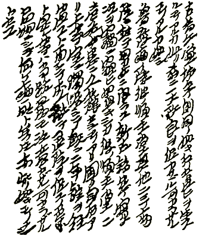
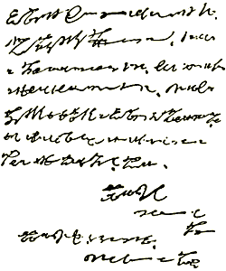
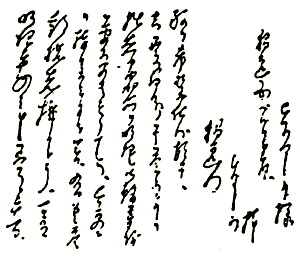
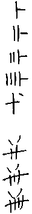
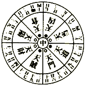
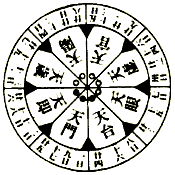

| 帝都物語 第壱番 | |
| 荒俣 宏 | |
帝都物語
第壱番
荒俣 宏

角川ｅ文庫
本作品の全部または一部を無断で複製、転載、配信、送信したり、ホームページ上に転載することを禁止します。また、本作品の内容を無断で改変、改ざん等を行うことも禁止します。
本作品購入時にご承諾いただいた規約により、有償・無償にかかわらず本作品を第三者に譲渡することはできません。
本作品を示すサムネイルなどのイメージ画像は、再ダウンロード時に予告なく変更される場合があります。
本作品は縦書きでレイアウトされています。
また、ご覧になるリーディングシステムにより、表示の差が認められることがあります。
まえがき
一九九五年一月十七日に発生した阪神大震災は、日本人すべてにとって悪夢の再現であった。あの関東大震災と同じ規模の大地震が、いつまた関東におそいかかるか、わたしたちは何をしていても、心のどこかでその前兆を察知しようと無意識のレーダーを作動しつづけてきた。
しかし、その悪夢は神戸で不幸にも再現してしまった。一九九五年、これは干支にいう亥の年にあたっていた。
実は、大正十二年の関東大震災もまた、亥の年に発生していたのである！ 今から十年余をさかのぼる昭和五十九年に初版第一巻が刊行された本書『帝都物語』は、その「亥の年」を大地震発生を予告する重要なキイワードとして構成される、オカルティックな都市災害小説として誕生した。というのも、亥歳の著者が亥の年昭和五十九年に、はじめて取りくむ小説として書きはじめたからであった。
本書第一巻でも、最後の陰陽師として登場する平井保昌が生命をかけて凶年をうらない、亥の年に帝都が大災害にあうという予言を残すシーンがある。
それがめぐりめぐって、ふたたび亥の年平成七年に、新たに制作された映画とともに復活することになったのは、おそろしいばかりの因縁というほかはない。
『帝都物語』はまた、地震など地層や地形の変動にかかわりのふかい古い地相うらない「風水」を紹介した小説として、おそらく日本で最初の作品といえるのではないだろうか。現在は風水ブームとまでもてはやされる情況だが、当時はまったくといってよいほど風水のことは日本人に知られていなかった。『ウルトラマン』の実相寺昭雄監督がつくられた映画『帝都物語』では、風水師役を桂三枝さんが熱演されたが、当時多くの人から、
「あの三枝さんが演じている占術師は、どういううらないをするのか？」
と質問をいただいたことが、今となってはなつかしくさえ思える。
『帝都物語』は、新しい文明都市化をはたすために無計画に大地を傷つけ、踏みにじった近代の都市政策こそが大震災の大きな引き金となったことを、怪人「加藤保憲」の怨霊というかたちで物語化した。一方、大地の生命力を大切にし、環境と美観をも考えにいれた古い都市計画のベースとなったのが、風水だった。古代にあって風水がどのような都市をつくろうとしたかは、それぞれの都につけられた名が物語っている。たとえば平安京は、ピースフル（平和）でヘルシー（安全）な都市をめざして建造された霊的な京だった。
『帝都物語』は、まさしくこの風水を都市再開発の戦略として提案する伝奇小説でもあったのだ。
今、わたしたちは神戸の復興に国民の一人として微力をつくそうと立ちあがりつつある。このつたない小説が運命の亥の年に復刊される意味も、そこにあると信じる。
都市を愛し、都市を憎む、すべての人々に、もういちどこの神霊小説をお贈りする。
著者しるす
一九九五・三・一三
東京を愛し、
東京を憎む、
すべての人々に──
〈登場人物〉
平将門 平安期関東最大の英雄。中央政権に刃向かい、関東を独立国化したため討伐されたが、その一生は関東ユートピア設立のためにささげられた。現在もなお大手町のビルの一角に残る将門首塚は、すでに千年間、東京の中心を鎮護しつづけている。
佐藤信淵 江戸末期の経世家、鉱山技術家、兵法家。ユートピアをめざし、将門ゆかりの印旛沼をはじめ内洋すべてを干拓し生産性の向上をもとめた人物。彼の『宇内混同秘策』は神道家平田篤胤等の奇怪な日本中心主義を借りて、全世界を征服するための青写真を描いた一大奇書であり、この中に「東京」という名称が初めて用いられたとされる。
寺田寅彦 日本を代表する超博物学者、夏目漱石の一番弟子。江戸末期にふとした事件から実弟を手にかけて死なせた父のやるせない思いを無意識に受けつぐ一方、物理学者でありながら超自然や怪異への限りない興味をいだきつづけた。迫りくる東京滅亡を必死で喰いとめようとする少壮の学士。
渋沢栄一 明治期東京を代表する実業家で、自由競争経済建設の指導者。パリ万博におもむいた幕府使節団の一人で、第一国立銀行の頭取をつとめるなど金融体制の設立にも力があった。儒教倫理の持ち主らしく、怪異・神秘に対しては「怪力乱神を語らず」の姿勢を通した。
織田完之 三河国の豪農の家に生まれ勤王派に加わり、桂小五郎や高杉晋作らと交友したが、維新後は明治政府の農業・干拓事業を担当、とりわけ印旛沼の治水事業には力を入れた。二十五年に引退し碑文協会を設立、以来、二宮尊徳・佐藤信淵の思想の体系的紹介に尽力した。
幸田露伴 本名は幸田成行。明治期最大の東洋神秘学研究家の一人。その著『魔法修行者』『頭脳論』などの奇作と並び、因縁めいた評伝『平将門』などは、『帝都物語』の読者には必携必読であろう。『八犬伝』の熱烈な支持者でもあった。また彼には『一国の首都』と題した長大な東京改造論があり、後年には寺田寅彦と親交を結び、渋沢栄一の伝記をも著している。
カール・ハウスホーファー ミュンヘンに生まれ、一八八七年陸軍の将官として印度、東アジア、シベリアを旅行し、一九〇九年から約二年日本にも滞在した。日本においては「緑竜」なる結社に入会したとされる。地政学（ゲオポリティーク）を戦争の科学に高め、初期ナチズムの神秘的な教養を形成する影の参謀となった。また後年ミュンヘン大学の教授・学長を歴任、敗戦ののち割腹自殺を遂げた。
森田正馬 日本近代の精神医学者、治療家。寺田寅彦が幼少期を過した高知に生まれ、犬神憑きなどの霊現象を研究した。のち、「森田療法」として知られる独創的な精神病治療法を確立した。
森林太郎 筆名は鷗外。明治期最大の文学者の一人で、軍医としても多くの業績を残した。高級官吏と文学者の二道をともに追究し、そして傷ついた。幸田露伴とは親友のあいだがらで、斎藤緑雨を加えて《三人冗語》の名による洒落た文芸時評を合作した。
大河内正敏 江戸期以来の名門大河内家の英才。東京帝国大学では寺田寅彦以上の天才とうたわれ、共同で物理学の実験も手がけた。大正六年に設立された応用科学研究の総本山「理化学研究所」（略称は「理研」）の総裁となる。美丈夫のほまれ高く、人柄も名家の出にふさわしく寛大だった。
安倍晴明 平安期の大陰陽師、天文博士。当時の霊的コンサルタントとして皇族や貴族・民衆のあいだに絶大な信望を集めた。一説に、信太の狐の子といわれ、官制魔道の宗家「土御門」の開祖となった。日本最大の白魔術師。
辰宮洋一郎 大蔵省の若き官吏。帝都改造計画に加わり、明治末期から大正にかけての歴史の奔流を目撃する。
辰宮由佳理 洋一郎の妹。強度のヒステリー症状ないしは一種の霊能を有し、そのために奇怪な事件に巻き込まれる。精神を病んで森田正馬医師の治療をうけるが、帝都に撒かれた怨念と復讐の種子は、彼女を通じて不気味に開花する。
鳴滝純一 理学士。辰宮洋一郎の旧友で、東京帝国大学理科大学に籍を置く。怪事に巻き込まれた辰宮由佳理を必死に救出するが、凶刃に倒れる。
平井保昌 土御門家の老陰陽師。秘術を尽くして宿敵とわたりあうが、明治天皇崩御に接し自刃。鬼殺しの英雄源頼光に仕えた武者に同名の人物がおり、奇しくも明治版「羅生門の鬼」事件に遭遇する。
洪鳳 朝鮮の秘密結社「天道教」に所属する女。
林覚 支那の秘密結社「三合会」に所属する青年。
加藤保憲 陸軍少尉。のち中尉。帝都に怨霊を喚び、古来最も恐れられた呪殺の秘法「蠱術」を使う。陰陽道、奇門遁甲に通じ、目に見えぬ鬼神「式神」をあやつる。辰宮由佳理を誘拐した真の目的は何か。帝都の命運はこの怪人物の掌中に握られている。
神霊篇
プロローグ 鬼が来る
浅草の興行街六区の界隈で、いつも人だかりが絶えない小屋といえば、水族館でもない、珍世界でもない。「お化け屋敷」にきまっている。
ろくろ首、かまいたち、人魚、そしてヘビ女が、絵看板から客を招く。
それに、忘れてならないのが浅草名物十二階。この巨大な塔にのぼれば、明治の御世の帝都が一望できる。文明開化の勝利品ならば、この十二階につくられた「えれべえたあ」。なにしろ機械の力で屋上までのぼっていける。
しかし今日ばかりは、浅草の人気をひとり占めにする出しものが幕をあけた。題して、『羅生門の鬼退治』！
十二階の下にたむろする、よからぬ商売の女たちも、その女たちを更生させようと、楽隊すがたでブンチャカ乗りこんできた救世軍も、半日のおひまをもらった女中も丁稚も、大店の番頭さんも、みんながみんな、その覗きカラクリ小屋に集まった。
さっそく木戸番の前にしゃしゃりでた口上屋が、甲高い声をはりあげて人をさそう。小屋の奥から、チャカポコ、チャカポコという景気よい鉦の伴奏が鳴りひびく──。
さあ、いらっしゃい、いらっしゃい、明治の御世は文明開化、カラクリ眼鏡も大じかけだよ。
さあさ、いらっしゃい、いらっしゃい、ここもとお目にかかりまする出しものは、あの恐ろしい羅生門の鬼だよ、お立合い！ 鬼だ、鬼だ、鬼が来た。
ごらんなさいよ、カラクリ眼鏡のその奥に、切られた鬼の片腕が見える。しかもその腕が、こうして空をつかまんばかりに爪たてて、動きもだえるというのだから驚きだよ！
さあ、いらっしゃい、教育は参考資料、孫の代までの語り草、生きた鬼の腕なんざ、もう二度と見られないよ、お立合い。
だが、驚くのはまだ早い、奥の舞台にゃヘビ女も登場いたします。かわいそうなのはこの子でござい。この子の生まれた北海道。とかちの国は石狩川の上流に生まれまして、ある日のこと、お父さん鍬にてマムシの胴体まっぷたつ。マムシの執念その子にむくい、できた子供がこの子でござい！
当年とって十八歳、手足がなく、胴体で巻きつくという。名前は花子。ハナちゃんやーい。大人が十銭、小人が五銭。片目は半額、はらみ女は二倍だよ。
さあ、いらっしゃい、いらっしゃい。鬼だ、鬼だ、鬼が来る。文明開化の東京に、鬼が来るんだ、鬼が来る。さあ、
今が見どころだよ。鬼だ、鬼だ、鬼が来る。
鬼だよ。
鬼だよ。
鬼とござーい！
東京の市民は、羅生門の鬼にさそわれて、次々に浅草の怪しげな見世物小屋へ吸いこまれていった。鬼も、ろくろっ首も、ヘビ女も、化けものたちはいつだって浅草にたむろしている。だが、この化けものたちは悲しい囚れ人だった。見世物小屋の外へは、たとえ一歩といえども出ていけない囚れ人だった。
だから市民は安心して、化けもの見物にうつつを抜かすことができた。ヘビ女や人魚を、ねめつけることができた。けれどその代わり、なんとも手のつけられぬ狂悪なほんものの鬼が一匹、帝都東京を自由に闊歩しはじめたことを知らなかった。
明治四十年、その鬼は、二千年におよんだ鬼の怨みを晴らすために、単身、帝都へ侵入した──。
巻一 神降ろしの一夜
一 ドーマンセーマン
明治四十年四月は、桜の季節というのに、幕あけからなにやら肌寒く、上野の山の賑わいもいつになくさびしかった。
夜にはいると、寒さはいちだんと強まり、二十四節気にいう清明がめぐりきて、文字どおり清く明るい時節になるべきなのに、東京の市はかたく雨戸を閉ざすばかりだった。時刻はすでに午前二時をまわった。
暗く重苦しい夜空の下に、ぴくりと蠢くものがあった。大きなモミの木が夜空よりもなお黒ぐろとそびえるあたり、その下にこんもりと盛り上がった塚が見えた。その斜面を伝う、苔むした石段の上に、見れば一匹の蟇がうずくまっている。
まがまがしいこの動物は、しかし、するどい両目を塚の頂上に向けたまま、まるで手足だけ別の生きもののようにヒクヒクと動かしながら、石段を這いあがっていた。手と足を動かすことに一瞬でも気の集中を殺がれれば、だいじな獲物を捕りそこなうとでもいうのか、不気味な蟇は視線をそらせもせず、塚の頂上へ自動人形のようににじり寄っていく。
「ウッ」と唸る声が、塚の上から聞こえた。
その声を握りつぶすかのように、大きな手が伸びて若い男の口をふさいだ。白手袋だ。口をふさがれた若い男は、首をはげしく捻って上を見あげようとした。
その白眼がギラリと光る。
若者を抱きかかえるようにした白手袋の主は軍人だった。
この男もまだ若い。だが、将校には年齢がない。人間というものは、将校になったとたん、年齢には関係なく「世界」との対峙のしかたを身につける。たった一人で「世界」に挑む力と勇気とを、かれらは将校の肩書きを得た瞬間から、自分のものにする。
しかし、この若い軍人に引きかえて、白手袋で口を押えられたもう一人の若者のほうは、ただ見苦しく藻搔きつづけるばかりだった。まるで闇の中に置き去られた幼児のように。
軍人は、燃えるような目で蟇を睨みつづけた。この小さな怪物から視線をそらせたが最後、生命を失う結果になることを、彼も熟知しているようだった。だから、あきらかに文官とおぼしいもう一人の口を押えつけ、体を包み込むようにして、彼の自由を奪いつづけた。
けれども、若い文官はそんな事情を察する余裕がなかった。やにわに、鋼鉄のような軍人の腕に抱かれ、息を奪われたのだ。反射的に身もだえし、処女のように恐れおののくしかなかった。彼の鼻づらを、軍人のふしぎな体臭が包みこんだ。
その匂いがほんの一瞬、若い文官をうっとりさせた。目がうるみ、てのひらで塞がれた口もとから緊張が消えた。
だが、とつじょ、うるんだ目に不気味なものが映しだされた。石段の中央に這いつくばる、黒くてみにくい蟇のすがた──
蟇はさらに登ってくる。ねらう獲物に隙が見えたその瞬間、長い舌を噴きだして、頂上の二人をその大口に吸いこもうというのか。
精悍な軍人の額に、脂汗がにじんだ。息を継ぐこともできなかった。抱きかかえられた若者が、首をねじ曲げて悶える。
「声を出すな！」
ささやき声が、しかし有無を言わさない気迫と威嚇に満ちた声が、男の耳許にひびいた。
沈黙──
ややあって、軍人はようやく手をゆるめると、視線で蟇を射すくめたまま、ゆっくりと白手袋を外しはじめた。蟇に気づかれぬくらいに、ゆっくり、ゆっくりと。
白手袋が、闇のなかに浮かぶようにして軍人の手から脱げた。甲のあたりに、なにやら黒い染め紋様が見えた。
家紋か？
家紋にしては奇怪だった。それは五芒星のかたちをしていた。
瞬間、石段を登りつめた小さな怪物が、身をひるがえして頂上に跳びあがった。しかし怪物は、二人の面前にうずくまったとき、せいいっぱい跳んできたための反動をくらって、その目をわずかに外した。ちょうど、まばたきでもするようだった。
そのときだった。軍人はふいに片手をひるがえし、恐ろしい気合もろとも白手袋を投げつけた。蟇はそれに打たれ、ギャッと悲鳴を発し白い腹を仰向けた。長い脚に痙攣が走って、やがて動きをとめた。
とたんに、死ぬほどの緊縛がとけた。
「何です、あれは？ あのガマは！」
「魔物だ。われわれに向けて式神を打った者がいる！」
震えおののく若者の声を制するように、軍人は鋭い言葉で答えた。
「式神ですって？ どういう意味ですか？」
「説明している暇はない。危険な使い魔のことだ」
「犬神とかオサキギツネのような？ つまりわたしたちに呪詛をかけた者がいるのですね？」
「心配するな。式神を打ち返して魔物は仕止めた」
軍人は、蟇のそばに落ちた白手袋をすばやく拾いあげながら言葉を継いだ。
「今夜はもう引上げよう。敵は想像以上に手ごわい」
「敵？」と、文官らしい若者が訊き返した。
「われわれに敵対する力が、ここには働いておるのだ」
「しかし少尉、今夜のことをいったいどう報告すれば？」
若者はじっとりとにじんだ脂汗を拭きながら、震えるくちびるで問いかけた。
「今夜の件は他言無用だ。局長には自分のほうから報告しておく。いいな」
軍人は視線をすこしも和らげなかった。そして、若者を引っぱりあげるようにしてその片腕をとると、高さ二十尺ばかりの塚を下った。塚を降りると、目の前に、黒く淀んだ池がひろがった。池を回って、北側に見える大門へ向かおうとした軍人は、そこでふと足をとめ、いつもはただ黒いはずの池面にポッと明るい火が浮いているのをみつめた。
視線がふたたび厳しくなった。
「見ろ！ 大蔵省の寮から火が出たぞ」
そう言われて、若者も池の水面に目を向けた。火だ。水面に映った官舎の窓越しに、赤い火がチロチロと揺れていた。
「火事です！」
「しまった。敵がまた手口を変えたぞ。騒ぎに巻きこまれてはまずい。逃げるのだ！」
二人は走りだした。池をまわって中庭をつっ走り、あっというまに大門を脱けでた。大蔵省の正門をくぐるときに、官舎から人声がひびくのを耳にした。
「火事だッ！」
大門の外は暗かった。犬の子一匹見あたらなかった。二人はそこから日本橋にむかって走りだした。大蔵省の土塀を通りすぎて、煉瓦造りの洋館をつなぐ歩廊までたどりついたとき、軍人は、歩廊のくらがりに若者を引っぱりこんだ。
大手町の方角を振り返ったが、夜空に赤味は差していなかった。代わりに白い煙が一条立ちのぼっていた。官舎の火は消しとめられたらしい。
まったく、明治の御世になって以来、大蔵省は何度火災に痛めつけられたことか。今の印刷局は、かつて造幣寮といったが、新造の紙幣を火事から護るため生命がけでお札の山の上につっ伏しつづけた職員の武勇伝が、今も大蔵省の役人たちの語り草になっている。
しかし、大蔵省がこれほど火事に悩まされるのは、職員の手落ちとか火の不用心といった尋常の理由によるのではなかった。
祟りなのだ！
文明開化の世にまるで逆行する、呪わしい祟りのせいなのだ！
「火は消えたようです。やれやれだな」
「よし。しかし、念を押すようだが、局長へは自分から報告する。きさまは他言無用だ。それから、今夜のことできさまに累が及ぶといかん。この白手袋を持っておれ」
文官はおずおずと手袋を受け取った。
「甲のところをよく見ろ」
言われるままに、彼は手袋の指を内側に押しこみ、手を差しいれる口からそれを引いて手袋全体を裏返しにした。墨で描きこんだ星のかたちの紋が、ふたたびあらわれた。
「五芒の星ですか？」
「それがきさまを護ってくれる」
「少尉がこんなまじないを？ なぜです、なぜなのです？」
「それはきさまにも判るはずだ。きさまは大蔵省派遣の東京市臨時市区改正局員ではないか。今夜のことは、いわば公務といってよい」
「すると少尉は、塚の上で男同士二人抱き合って一晩をすごすことが、帝都改造の職務の一部だといわれるのですか？」
「その通り。大蔵省の役人は、なにも、財政難を切りぬけるために外債を乱発するだけが仕事ではないだろう」
「お言葉ですが、少尉、外債発行の主たる原因は日露戦争に......」
「黙れ！ きさまと言い争いをしている暇はない。自分はこの計画にとって障害となるあらゆる情況を除去する任務を負っている。そして、今夜は、きさまを依童に使って、大蔵省に祟りをなす亡霊がとり憑いたあの塚で、問題の邪霊を呼びだそうとしたまでだ」
「ヨリワラ？」
「俗な言葉でいえば、巫女のことだ。きさまに憑きものを降ろそうとしただけの話だ」
若者はその言葉を聞いて、たじろいだ。
しかし軍人はそ知らぬ顔でささやきつづける。
「ところが敵は強力すぎた。逆に、ガマを放って自分たちを呪い返そうとしたのだ。だからあの手袋に式神を封じ、ガマを打ちすえたというわけだが──」
若者はすこし声を荒らげて訊き返した。
「少尉、あなたは陰陽師か、修験者か！」
「ばかな！ 自分は陸軍少尉加藤保憲であって、それ以外の何者でもない。ただ、今夜の依童はあまりにも虚弱すぎた。きさまでは目的を果たせぬことがわかった。もっと強力な霊能をもつ人物を見つけねばな」
「それで、この白手袋が魔除け代わりというわけですか？」
「きさまには気休めかもしれぬがな。自分の故郷ではドーマンセーマンと呼んでいる護符だ」
「ドーマンセーマン？」
「夜が明けたら、すべてを忘れることだな」
若い大蔵省の役人は、急に血相を変えて軍人に詰め寄った。
「あなたは鬼だ！ 鬼だ！ 何も知らないわたしをこんな危険な神降ろしに引っぱりこむなんて！」
「鬼か......。フフ、たしかに」軍人はうそぶくようにあざわらった。
「鬼のあなたが闘いをしかけたその邪霊というのは──いったい何者だったのです。教えてくださる義務がある、あなたには！」
おそろしく長い顔をした軍人は、おちくぼんだ頰をわずかに引きつらせながらささやいた。
「その邪霊は、いずれ大蔵省の建物をたたきつぶし、ここら一帯をもとの荒野に戻してしまうだろう。なぜなら、そやつは東京の大地霊だから──東京最大の祟り神だからだ」
「名は？」役人がたたみかけた。
「タ・イ・ラ・ノ・マ・サ・カ・ド！」
軍人は一瞬、意味ありげに笑うと、おどろくような速さで数奇屋橋方面へ立ち去った。ひとり残されて初めて、文官は花冷えに身ぶるいした。真新しい煉瓦造りの街が、その冷たさを一層深めていた。
二 御手洗池の昼景
「あら、やっとお出ましだわ。おにいさまァ、こちら、こちらでしてよォ」
明るい陽光が池の水面にきらきらと照りはえていた。東京市の新しい中心部に位置する大手町。大手町といえば大蔵省に内務省。こんもりと茂った森を境にして隣りあう帝国内政の二つの要には、全国から多くの人材が集まる。つい今しがた嬌声をあげたのは、大蔵省に職を奉じるそうした若き官僚の一人、辰宮洋一郎の妹由佳理だった。
「おにいさまァ、きのうは家にお戻りにもならないで！ お父さまもお母さまも、それはご心配でしたわよ。その上、ゆうべは大蔵省で不審火も出たっていうじゃありませんの。おにいさまに間違いでもないかって、ほんとに案じましたのよ」
辰宮は、大門の横で手を振る妹のそばへ、小走りに近寄った。たしかに瞼が腫れていた。ゆうべは夜を徹しての仕事だったことが偲ばれる。
「すまん、すまん。ユカが面会に来てくれて助かった。実は今日もお役で家に戻れそうにない。父上と母上によろしく伝えておいてくれないか。お詫び申しあげますとな」
「まあ、今日もですの」妹がふくれっつらをしてみせた。
「今朝方の失火で、省内はいま大騒ぎなんだ」
「お顔の色がすぐれませんことよ、おにいさま。でも、ご無事で安心しましたわ」
「ホオ、大蔵省の火事騒ぎはもう知れわたってるのかい？」
「ええ、そりゃもう。だって、将門さまの祟りで大蔵省に良くないことが起こりましたら、また牛込の協会が乗り込んできて新聞ダネになりますもの」
「牛込の協会か。困ったもんだな」
牛込の協会というのは、碑文協会と名のる団体のことだ。主幹は織田完之という老人だが、明治政府ができたばかりのころ大蔵省に籍を置いたこともある。この老人は、江戸の守り神たる平将門と、江戸末期の世直し経世家佐藤信淵、そして報徳仕方という農業経営方式を生みだし各藩の財政難をすくった二宮尊徳の三人の名誉を、明治政府にも認めさせる運動をおこしていた。
けれど、この三人とも江戸幕府にふかくかかわっていたので、明治新政府は名誉回復の手つづきを渋っていた。とくに将門は朝敵だから、簡単に認めるわけにはいかない。
「牛込がどうしたって、辰宮？」
そのとき、大門の陰から若い男が姿をあらわし、ニコリと笑いかけた。
辰宮は目をあげて、声の主をみつめた。そして相手の姿を認めると、彼の顔にすこしずつ生気がよみがえった。旧友の鳴滝純一だった。東京帝国大学理科大学の実験物理学科に籍を置く友だ。
「なんだ、おい、鳴滝じゃないか！ ははァ、読めた。ユカのやつ、おにいさまが心配で、なんぞと殊勝なことをいうと思ったら、おまえとのしめし合わせが目的だったか。帰りは花見とでもシャレこむつもりか、理学士君」
鳴滝純一は辰宮と同い歳の二十五だが、根っからの理学好きで、辰宮のようには宮仕えをいさぎよしとせず、いまだに大学に出入りして物理学の実験に血道をあげている。そのせいか、いでたちのほうはいわゆる長髪族で、髪はザンバラだが背は高く、黒髪のあいだに見える両眼のかがやきも明るい。大柄だが、なかなかの優男だ。彼に比べると、辰宮のほうはいかにも几帳面な、銀縁眼鏡のよく似合う秀才型である。
由佳理は二人を見くらべて、思わずフッと笑みを漏らした。由佳理は愛らしい娘だ。紫の袴がいかにも凜々しい、男勝りの十八歳である。
「ひどいわ、おにいさま、しめし合わせだなんて」
「だって図星だろう？」
そんな兄妹の痴話喧嘩に割ってはいったのは、鳴滝だった──
「喧嘩はそれくらいにしろよ。それよりも、何だ、その牛込の協会というのは？」
「鳴滝、おまえはやっぱり理学バカだな。牛込区払方町にある碑文協会を知らないのか。主幹は織田完之といってな、これがなかなかの大物だ。大蔵省出身の、いってみればおれたちの大先輩だ」
「その碑文協会とやらが、なんでまた大蔵省の失火騒ぎに首を出してこなきゃならん？」
「さあ、そこだよ。話の前にちょっと待った。おい、ユカ、この風呂敷包みを頼むよ」
辰宮が、手に持ってきた茶の風呂敷包みを投げて寄こすと、妹はそれをポンと胸で受けとめ、不思議そうに包みを解いた。中から出てきたのは、汗の滲みこんだシャツ。由佳理が眉をさか立てて兄を睨みつける。
「まあ、ひどい」
辰宮は片手で眼鏡を押しあげ、ひとつ咳ばらいをしてから話をつづけた。
「ところでと、碑文協会の話をこの大蔵省の中庭でするというのも奇縁だな。ちょうどいい、この池を見ろよ」
辰宮が指さした中庭の池へ、鳴滝はキツネにつままれたような顔で目を向けた。大蔵省の表門をはいった中庭の南側にある、古い蓮池。広さのほうは、さて三百坪もあろうか。池の南、それも少し西に寄ったあたりに古い塚が見える。塚の下には石燈籠がひとつあり、そこから塚の頂上に向かって、苔むした小さな石段がつづいている。塚のうしろ側は、鬱蒼たる雑木林だ。この林を隔てた向こうは、内務省の敷地に続いている。
「古めかしい池だな、辰宮」
「大蔵省の連中はこれを神田明神の御手洗池と呼んでいる。池のなかを見ろよ。南側に岩が突きでているだろう。千鳥岩といわれている。実はあの岩のそばに、古い井戸があるんだ。池の水が減ると、井戸の木枠があらわれるから、参考にいつか見ておくといい。その井戸で、今から九百六十年も昔に、平将門の首が洗われたってわけだ。神田明神は、その将門を祀った社だが、ここには将門の首が葬られている。池のむこうの塚が見えるか？ あれが将門の首塚だよ」
辰宮の言葉を聞いて、大男は太い眉をぴくりと動かした。二人はそのまま黙って池のまわりを歩きだし、南にある古い塚をめざした。うしろから妹の由佳理がついてくる。いかにも不満げな表情だった。
「大蔵省の庭に、こんな鬼気せまる故蹟があるとは知らなかったな」
「いや、気味わるいだけならば、さして問題はなかったのだ。厄介なのは、こいつが祟ることなんだよ」
「祟る！」
池は静まりかえっていた。春の陽光を反射しながら、うららかな春昼の一刻を謳歌しているようだった。
「──そうだ、祟るんだ。おれだって信じちゃいなかった。昨夜、おそろしい目にあうまではな──オッと、その話はいい。とにかくだ、逆臣の将門が、この関東で新星の名のりをあげたことは、いくら理学畑の君でも知っているな。洋学風にいえば、独立国を宣言して律令制に反抗したといったところだ。しかしこの英雄は神が放った矢を額に受け、俵藤太の手にかかって絶命する。晒しものにされた将門の首をもらい受けた芝崎村の縁者が、あの井戸で首を洗い、塚に葬った。だが、この逆臣の首は回向の絶えたことを怨んで、ことあるごとに祟った。病人や怪我人が出る、火事が起こる、それがあんまりひどいので、村人がほとほと手を焼いているところへ、ある日真教上人という時宗の坊さんがやってきた。なんでも嘉元年間のことらしい」
「嘉元年間？ 西暦ではいつごろになる？」
「西暦？ おいおい、きさまやっぱり理学バカだな。西暦なぞと急にいわれても、さァてと、詳しくは判らんな。しかし真教上人はあの藤原道長の後裔でね」
「あら、道長の時代なら平安の時代、なんでも恐ろしい百鬼夜行の出没したときですことよ。将門の首が祟っても、不思議はありませんわ」
と、由佳理が口をはさんだ。
「──で、真教上人が将門塚の前で回向し、怨霊に蓮阿弥陀仏の法号を贈ったところ、祟りはようやく止んだという話だ──」
「ねえ、ね、あの岩のあたりに首を洗った古井戸がありますの？ おそろしいこと」
ユカが池の南端を指し示しながら、おどけてみせた。
桜の四月に、それも若い男女三人が眺めるべき光景ではなかった。
「──しかし、明治五年にこの蓮池が大蔵省の敷地になってからというもの、池や塚に手を触れようとすると、何かしら不審事が起こるようになった。土木人足が怪我をする、役人がバタバタと病気で倒れる、それから火事が出る──」
「待った、こと火事に関しちゃ、問題は大蔵省に限らないぞ。だいたいな、東京市の改造計画は防火作戦とともに始まったといってもいいくらいだ。早い話が日本橋あたりの蔵造だ。あの黒い土壁は、ダテや酔狂で並んだわけじゃない。防火壁の役を果たさせるためだよ。もっとも、最近じゃ煉瓦造りが優勢で、黒土蔵はどんどん壊されてるがね。土蔵は、いったん崩れると火に弱いからな。その点、煉瓦は丈夫だ」
「おい、おい、東京市臨時市区改正局のれっきとした局員に向かって帝都計画を説教するつもりか？」
「しかし、その改正局も設置されて一年経つ。建設の大事業だから、理財系のおまえとしては資金調達に大わらわだろうが、それにしてもあまり中途半端な改造をやるなよ」
「きさまに言われるまでもない。しかし、忙しいのは仕方ないさ。今でこそ内務省中心の事業になったが、元をただせば帝都改造計画はご維新後つねに大蔵省が最大の力を入れてきた仕事だからな」
辰宮はそう言うと、ハンカチーフで口をぬぐった。
妹の由佳理は二人をとっくに追い越して、塚のすぐ近くにまで達していた。兄が、ひとりで遠くへ行くな、と声をかけると、妹は笑いながら白いハンカチーフを振り、大きな、しかもよく通る声でこう答えた。
「大丈夫ですことよォ」
三 大蔵省妖異のこと
鳴滝純一は由佳理に笑みを向けたあと、急に真顔になって辰宮の目をうかがった。
「話をもとに戻すようだがな、おまえ、ゆうべはほんとに何でもなかったのか？ ユカさんが朝がた、青い顔してオレのとこへやって来てな。おまえが帰宅しなかったというんだ。おまけに大蔵省のボヤ騒ぎだろう。ユカさんのお伴をしてここへ馳せ参じたってわけだが」
「実をいうとな、鳴滝」
と、辰宮は声を落として、池のむこうにある塚へ目を向けた。
「ぼくはゆうべ、あの塚の上にいたんだ。しかも、若い陸軍の将校と一緒にな。ひでえ一夜だった。今でも信じられんほどだ」
「塚の上に？ 将門の首を埋めたっていうあの塚にか？」
「ああ。おまえが来てくれて、ちょうどよかったよ。恥をさらすようだが、大蔵省じゃ、昨日みたいに変事があるたびに神田明神の宮司を呼んできて、将門の鎮魂祭をやるんだ。省内では、祟りの話がなかば公然と語られる。去年の五月には、阪谷芳郎大蔵大臣が祭祀委員長になって、塚のそばに故蹟保存碑を建立する儀式まであった。おもてむきは故蹟保存だが、本音は祟りを鎮めるための回向だよ。真教上人がやったのと同じことだ」
「まさか！」
「いや、ほんとうだ。官報にも載ってる。もっとも、阪谷大臣が率先して鎮魂祭を取り仕切ったについちゃ、裏があるがね。大臣の奥さんという人が、実は渋沢栄一翁の娘でね。渋沢翁といえば、ここのところ大いに盛り上がっている将門雪冤運動の重鎮だ。つまりさ、平将門は逆臣なりという誤れる常識をひっくり返して名誉を回復させようと運動している一派が、祟りにことよせて大蔵大臣に将門慰霊祭をやらせたのさ」
「しかし、渋沢翁といえば、おまえがいま手がけている東京市改造計画に一貫してかかわってきた推進派の代表格だろう？」
「むろんさ。東京の都市計画は翁の生涯をかけた事業ともいえるよ。ただし──」
「ただし？」
鳴滝の太い眉がピクリと動いた。
「思いがけぬことに、この首塚の祟りがわれわれの改造計画にとって厄介な障害であることがはっきりしたんだ！」
辰宮はそこで息を止め、ごくりと唾を飲みこんだあと、しばらく黙りこくった。鳴滝は、その若い文官のくちびるが震えているのを見てとった。
「妙な話になってきたな......」
鳴滝がぼそりと言葉を吐き棄てたとき、大門のほうが賑わしくなった。数人の客が御手洗池に近づいてくる。ひげをたくわえた先頭の男が、何やら案内をしているらしい。さかんに塚のほうを指さしている。
「陳情にでも来た連中か？」
「いや、そうじゃないな」
辰宮は振り向きもせずに言った。
「首塚を見物に来た連中だよ。二年前の四月四日に、大須本と通称のある『将門記』の写本が国宝になったことは知ってるな？ 逆賊の伝記が国宝になり、しかもそれを陛下が御覧になったというので、しばらく噂のタネになったからな。その大須本が同じ年の十月に開かれた古文書展に出品されてね、ご丁寧にも大蔵省にある首塚のことが紹介されたんだ。それからだよ、文学博士や教育長どもがゾロゾロと故蹟巡見にやってくるようになったのは」
「ホホオ、大蔵省の大先輩の渋沢翁もずいぶんと古巣を宣伝してくれたものだ」
「いや、将門の雪冤運動をここまで盛り上げてきたのは、渋沢翁というよりも、むしろ織田完之だ。牛込の協会はね、その織田を主幹とする将門信者の総本山だよ。どちらにしても、みな大蔵省出身者だから始末が悪い。実をいえば、今朝ぼくは局長に呼ばれてね、牛込の協会へ行って鎮魂祭のやり直しをお願いしてこいと言われているのだ」
「だがな、判らないのは、東京市大改造と首塚との──」
とつぜん、アッという女の悲鳴が鳴滝の言葉をさえぎった。どこから湧きあがった悲鳴なのか、一瞬は方角さえ見当がつかなかった。
巡見の客たちが悲鳴を聞いて、一斉に目を池のほうへ向けた。その視線の先に、白いハンカチーフが鮮やかに躍った。白く、ほっそりした女の手が、まるで振子のように池のなかに落ちた。紫の袴だった。
「ユカ！」
辰宮はそう叫んで、塚へと走りだした。鳴滝もあとを追った。
走っていく二人が、水面にも映って四人になった。そして水面を逆さに走る二人が白い手のそばに着いたとき、あおりを受けたのか、ハンカチーフがふわりと空に舞いあがって水面に落ちた。
「ユカ、どうした！」
兄に烈しく揺すられて、由佳理が弱々しく目をあけた。生気が失せていた。けれども、暈のかかった瞳に、一瞬逃げおくれたかのような表情があった。由佳理のものではない表情。まるで、何者かが彼女に乗り移ったような......
「ユカさん！」
鳴滝の大声が彼女の魂を呼び戻したのか、由佳理がか細い声で返事をした。
「お、にい、さま──」
巡見の客たちも心配そうに三人を取り囲んだ。鳴滝はその人垣に向かって声をかける。
「病人が出た。どなたか省の医務室に連絡を。ぼくらが運んでいきますから！」
「貧血ですか」
誰かが訊き返してきた。
「そうだと思います。とにかく医務室へ」
人垣が二つに割れて、抱きかかえられた由佳理がそのあいだを通り抜けた。蒼白な顔。しかし、彼女は肩を抱きしめる兄にすがりつきながら、まるでうわごとを口走るように、こう呟いた──
「あ、た、く、し、見ましたわ、池の、う、え、に......」
「口を開くな。黙っていろ、ユカ」
兄が毅然とした声で命令すると、彼女は憑きものでも落ちたように力を抜き、ふたたび失神した。
四 新水路で見た幻
夕暮れが近かった。つい一時間ほど前、やっと歩けるまでに回復した由佳理を、人力車に乗せて家へ帰したあと、辰宮と鳴滝は宮城を大きく迂回する道を選んで牛込に向かい、払方町九番地の碑文協会をめざした。
最初、鳴滝は由佳理の容体を心配して、家まで送っていくと主張したのだが、由佳理のほうがすっかり恐縮してそれを固辞したので、結局送り届けの役は省の看護婦に任されることになった。
碑文協会に到着したのは、午後四時を大きく回る時刻だった。主幹の織田に面会を申しこむと、中年の婦人が応対に出て、
「織田はただいま千葉の下総へ講演に出掛けております。あいにくご用を承れる者もおりませんので、数日後にもいちどご来駕ねがえませんでございましょうか」
と伝言をつたえた。
それではと、二人はすぐに協会を辞して、ぶらぶらと宮城のほうへ戻ることにした。
春とはいえ、夕暮れは早かった。逢魔が刻とはよく言ったもので、再生を目前にした東京に、ひととき幽玄なたたずまいが戻りつつあった。
二人はしばらく無言で歩をすすめた。四つ角を通りすぎるごとに、古い壕を埋め立てて造った新造地と、あらたに開いた水道や水路とが、交互にあらわれた。明治三十九年の東京市臨時市区改正局設置以来、遅々として進まなかった帝都改造計画は、まったく信じられないほどの勢いで進展を見はじめていた。
むろん、この市街地整備を一気にすすませたのは、たびかさなる火災だった。明治五年の銀座築地大火災、同六年の神田日本橋大火災によって、江戸のシンボルともいえた下町が姿を消し、同十四年には松枝町の火事によって当時スラム街であった神田橋本町も一掃された。
東京は、火災によって江戸の面影をまず振りおとし、その後に大蔵省の名だたる実務家たち──大隈重信、井上馨、渋沢栄一らによる近代市街化計画を進展させたのである。
たとえば、市街を一気に欧風化する端緒となった銀座煉瓦街計画、日本橋・京橋・神田地区の表通りを黒壁の蔵造で軒並み埋めつくすのを目標とした防火帯建設。そして立法化には至らなかったが明治十一年には東京の中心地区へ強制火災保険制度を導入する計画。
明治四十年四月になったいま、それらの事業はいよいよ完成へと向かい、丸の内から大手町を切り離していた辰ノ口の壕が埋められ、ここに東京最大の道路のひとつ一等一類二十間道路が開通しようとしていた。
二年後には日本橋大通りが十五間幅に広げられ、そのまた二年後には石積みの「めがね橋」の傑作、新日本橋が完成するはずであった。
辰宮と鳴滝は、いつものように飯田橋の外壕に出た。壕に沿う道路は、ようやく夕方の雑踏を迎えていた。街をいく車の音を聞きながら、鳴滝は思いだしたように口をひらいた──
「妙な一日だったよ、まったく。ところでな、こんな時に不謹慎かもしれないが......ユカさんが見たっていうのは当然、血塗られた将門の首......」
「そうじゃない」
問われた辰宮が鋭く鳴滝の言葉をさえぎった。
「いやそうじゃないんだ。ユカが言うには、これまでに見たことがない光景がふいに池の上に現われたっていうんだ。よく紐育にあるような見あげるばかりの摩天楼がだしぬけに池から突き出した。そしてね、水面にたくさんの人間が浮かび上がってきた。血みどろで、蒼白な顔をして、たぶん軍服を着ていたから皇軍兵士の死骸の山かもしれないと言うんだ。縁起でもない」
「ユカさんはその兵隊の死体を見て悲鳴を？」
「いや、それもあるが、もっとこわかったのは、とてつもなく巨大でしかも真赤な太陽が摩天楼に沈もうとする光景だったそうだ。まるで世の終わりを見るようなね」
「世の終わりの光景を見たというのか」
「さあな。あいつは小さい頃から癇が強くてね。キツネが憑いたといって騒ぎになったこともある。今度のことも何か虫のしらせでなければいいがな。池の上に不可思議な光景を見たとくりかえし口走っていたが、妹のことが心配だよ」
辰宮はそういって、近くの小石を壕に蹴りこんだ。会話とうらはらに、ポチャンという小石の音が春めいた空気の中に心地よく響いた。
「ひとつ訊くぞ、辰宮」
「何？」
「おまえ、ゆうべは軍人と一緒に塚の上で夜明かししたと言ったな。何をしていた？」
「答えたくない質問だし、他言無用を言いわたされてることだが、きみにはすこしだけ明かしておこう。口の軽い役人だ、なんぞと思わんでくれよ。打ち明けるには、それだけの理由があるのだからな。
実は、昨夜ぼくらはあそこで神降ろしをやった」
「何だと？」
「驚くのも無理はない。ぼくでさえ信じられんのだからな。むろん、詳しい理由は知らん。知らんが、ぼくは局長に呼ばれて、加藤という将校の手助けをしろと命令された。ところがこの将校は、あろうことか陰陽の術師だったのだ。やつはぼくを依童──つまり霊を降ろす容れもの代りに使いやがったよ。昨夜の火事は、その術の最中に起きた。将校にいわせれば、首塚の霊の仕業だというんだが」
鳴滝は軽蔑するかのように辰宮を横目で睨み、重い声でつぶやいた。
「将門の祟りといい、神降ろしといい、おまえらは全体、なにを始めようとしてるんだ。これはまるで魔術騒ぎじゃないか」
「いや、魔術騒ぎそのものだよ。思い切って言おうか。いま進行している東京市改造計画はな、いよいよ仕上げの段階にはいっている。この新しい市に霊魂を封じ、すべての凶相を払って吉相を盛りたてる段階にはいっている。奇門遁甲や風水による霊的な都市相を調査し改善する最後の事業が始まったってわけだ。この秘密事業は、渋沢翁を責任者として、大蔵省と内務省、それに軍部が共同して当たっている。世間には極秘でな」
「ちょっとまて」
と、鳴滝が官吏の話をさえぎった。
「なんだ、その風水というのは？」
辰宮は冷たく笑った。
「中国から伝えられた地相占術だよ。平城京も平安京も、この地相術によって建設された。この術は代々、陰陽師の手で伝えられてきた秘伝だから、われわれはこの内容をまるで知らないがね」
「......つまり、千年以上も前の平城京や平安京の建設と同じように、方位を占い、地霊を鎮め、その──風水とやらや、奇門遁甲によって都の繁栄と防衛をはかるというのか？」
「そうだ、東京市改造の霊的段階と呼んでもいい。吉相と霊力に守護された永遠不滅の神都を造りあげるのだ。しかしな、この事業は今、恐るべき暗礁に乗りあげた！ 首塚の一件は、単なる亡霊話ではないんだ。そこで、きみの理学の知恵を借りなきゃならん。きみと、きみの恩師の力もな」
「おれの？ 長岡半太郎先生の力もか？」
「どうせ知らされることだから、前もってきみに言っておくが、実は先週、帝大物理学の長岡半太郎先生へ内務省名義で親展の書状を送った。秘密事業への参加をお願いするためにだ」
「長岡半太郎先生に......」
「今回の霊的改造には、理学の力も必要なんだ。もっとも、長岡先生は研究に熱中されるあまり、日露戦争があったこともご存じなかったおかただという噂らしいが」
「待てよ......おまえ......」
鳴滝は当惑した。どう切り返すべきか、言葉に詰まった。
「きみが訝るのも当然だよ。よし、ひとつ証拠を見せよう。今日は清明の節気も過ぎた四月だから、とくに面白い。壕に小舟が浮いているだろう。ホラ、そこだ、あれに乗ってくれないか」
鳴滝は言われるままに、壕に浮いていた古い小舟のもやい索をたぐり寄せ、トンと石垣を蹴って、猪牙舟に乗り移った。降りたときの弾みで、足元が大きく揺れた。つづいて辰宮が乗り込むと、舟がもう一度揺れた。
「日本橋運河まで舟遊びと洒落こむか」
二人は大手町に向かって舟を進め、大蔵省の見えるあたりで左に折れて日本橋運河にはいった。すでに闇が重かった。
町の灯が水面に揺れていた。鬼火のようなその反映を乗り越えながら、舟は東京湾をめざして下りつづけた。
十分も下ったろうか。辰宮は竿を休めて、腰を降ろした。
「さあ、この辺でいい。遁甲によるとな、今月は甲辰の月、陰四局の相だ。この相の場合、南東は杜門、南西は死門にあたり、八門のなかでは凶相が当てられる。ところで、この日本橋運河は、南東から宮城へはいる門だ。忌むべき入口、災いをもたらす出口、といってもいい。その上にだ、八門と組合わせて吉凶を見る九星の具合が、たまたま天輔星に当たっている。この組合わせは悪い。相当に悪い。だから、ホラ、うしろを振り返ってみろ」
鳴滝はそっと振り返って、宮城の方角を仰ぎ見た。
そして一瞬、息を呑んだ。運河のかなた、煉瓦造りやモルタル塗りの家並のかなた、宮城が位置するそのあたりに不思議な光の暈が覆っていた──
天には極光が見えた。光の暈が呼吸でもするように大きく揺れていた。その暈から外れた暗い夜空の一角に、突き刺すように鋭い光を宮城に向けて射降ろす真赤な巨星があった。思わず目をそらせたくなるほど危険な色をした星だ。その光に捕まったら最後、凶運は免がれまいという直感が走った。
「見たか？ あれが今の東京の霊相だよ。赤い星は、たぶん九曜星にいう金曜の星だろう。数え年四十の当たり星だ。いうまでもなく虚星、まぼろしの星だが、万物の金運を左右する力をもつ。この星に当たるものは哭泣と刀兵の憂いを避けられん。ところで、東京に宮城が移されて四十年。したがってさ、仮に外敵がこの星の下で帝都に侵入すれば、都は崩壊するということだよ！」
「なぜ、なぜ、こんな幻景が見えるんだ？」
「ぼくにも詳しくは説明できん。しかし、これが地相占術の真相なのだ。君は知ってるか？ 日本橋運河から直接宮城へつながる辰ノ口の壕が、東京市改造計画の一環として埋め立てられることになった理由を。......表向きはたしかに二十間道路をつくるためだ。しかし真相は、東南の方向に杜門があくとき、その凶運が直接宮城へ及ばないようにするため、この水路を断つ必要に迫られたからなんだ。つまり、新しい道路と宮城とのあいだに、壁を立てたんだよ。奇門遁甲とも、風水とも、言わば言えだ。われわれの新しい事業は地相占術に合致する吉相を、あらゆる地点に招き寄せることにあるんだからな」
鳴滝は旧友の声をなかば呆然として聞きながら、北の方角の幻景をみつめつづけた。
「おもしろい」
と、彼はひとこと呟いた。
「そうだろうともよ。これは途方もない使命だ。そしてね、きみと長岡先生とは、この一件にかかわるべく運命づけられた。もっとも、きみの場合はぼくの私的な味方として引っぱりこまれるだけなんだがね」
「............」
鳴滝はしばらく辰宮の顔をみつめていた。そして、ふと目を落として、
「おまえの胸ポケットから白いものが出てるぞ」
と忠告した。
「ああ、これか」
辰宮は、例の五芒星の紋を描き込んだ白手袋を出して、鳴滝に手渡した。
「ぼくの魔除けだ。ゆうべ加藤という将校と別れるときに、もらったもんだ」
「西洋の魔除けか？」
「かもしらんな。しかし将校はこれをドーマンセーマンと呼んでた」
「ドーマンセーマン......」
その奇妙な響きが、鳴滝の記憶の片隅をくすぐった。遠い、忘れ去られた記憶の片隅を。
舟がまた動きだした。日本橋が遠ざかっていく。四年後には帝都の象徴として面目を一新するはずの橋だ。
明治四十年春、江戸の名残りはほんとうの意味で消え去ろうとしていた──
五 将校と官吏
辰宮洋一郎が、加藤保憲少尉となのる奇怪な軍人と出会ったのは、今から一年前のことであった。
やはり桜吹雪の舞う春の宵だったと記憶する。上野の山から吉原の廓に通じる道を辿る、その日の辰宮は、役所づとめをはじめてわずか二年目のうら若き官吏。酔いに任せて、同僚たちと肩を組み、廓へ乗り込んだまでは、たしかに威勢がよかった。
しかし格子のかなたに女たちのしどけない姿が見えだしたとき、辰宮は急に酔いから醒めて、廓を逃げだそうとした。
これも若気のあやまちというやつだろう。酔いがまわり度胸のすわった同僚たちは、女郎屋と知って逃げ腰になった辰宮をつかまえ、むりやりに一軒の店へ引きずり込もうとした。
若い者同士の力くらべが、当然のように始まった。辰宮は向きになって、同僚に反抗し、仲間たちは仲間たちで、だらしない辰宮の態度をののしった。そこで喧嘩が始まる。多勢に無勢、蹴りつけられこづき回される辰宮に、女郎買いの客が嘲笑を浴びせる頃には、店の前は黒山の人だかりとなった。
「何ごとだ」
と、見物人の一人に声をかける男がいた。瘦せぎすで、背が高いが、それでいて筋骨のたくましさを感じさせる男だった。
気味わるいほど顔が長い。頰がこけおち、とても日本人には見えなかった。
若い軍人である。見物人は迷惑そうにその男を見やり、
「なあに、軍人さん、喧嘩ですよ」
と答えた。
事情を呑みこんだのか、若い男は目深に被った軍帽からわずかに目の輝きを外へ洩らした。その光が不気味なほど冷たかった。
見物人はギクリとして、口をあけたまま凍りついた。射るように鋭い目。だが、それより、何より人を恐怖させたのは、その瞳をいろどる灰色の光だった。灰色の目は一瞬あたりを威圧し、ふたたび軍帽のかげに隠れた。
軍人は人垣を割って中にはいり、なぐり合いをしている若い官吏の腕をつかみ止めた。
「よせ！」
鋭い命令口調に、官吏たちは一瞬凍りついた。そして、軍人に仲裁されたことを知ると、かれらは失神している辰宮を残して、そそくさと廓街の外へ出ていった。
辰宮は、擦りむいた頰に手をあて、唸りをあげていた。
「大事ないか？」
軍人の声にやっと気づいたのか、辰宮は目をあけて、上の方をみつめた。そこに、無表情な軍人の顔があった。見知らぬ顔だが、どうやら歳かっこうは自分と同じようだ。ただし、職業の性質上、軍人のほうがはるかに成人の落ち着きを備えていた。
「助けてくださってありがたい。どこの部隊の将校どのですか？」
「なのるほどの者ではない」
「あ、お待ちを」
ふたたび人混みに消えようとする軍人に、辰宮はやっとの思いですがりついた。
「お名前を、ぜひ！」
軍人はそのとき、真顔で見つめている若い官吏の目に注意した。奇妙な目であった。弱々しいけれど、芯の強い褐色の目。軍人はそこに、説明のできない霊力の威圧を感じ、切ないほどのいとおしさを覚えた。
──バカな！ と、若い将校は瞬時に湧きでたその感情を否定したが、同時に奇妙なうしろめたさにさいなまれた。自分自身に噓をついているうしろめたさだ。
辰宮はさらに軍人をみつめた。その姿は、まるで歌舞伎の子役みたいにぎごちなかったが、ふしぎに心惹かれる艶っぽさがあった。弱いがゆえに芯の強い、矛盾のかたまりのような若者──
「そこまでいうのなら、なのろう。自分は加藤少尉。陸軍省に戻る途中だ」
「これは申しおくれました。わたくし、大蔵省に勤務いたします辰宮洋一郎という若輩ですが」
軍人はせせら笑うように答えた。
「廓で大喧嘩とは、いさましいことだが」
辰宮がとたんに赤くなる。
「お恥しき限りです。しかし、わたくしはどうしても廓にあがる気になれませんものでしたから」
「辰宮君は女ぎらいか？」
軍人の冷やかな声。
「いや、下賤の女とは──」
「下賤？ 女郎たちのことか？」
辰宮はくちびるを嚙みながら、低い声でつぶやいた。
「いや、実を申しますと、女には──」
将校はそこで言葉を挟み、官吏の告白をさえぎった。周囲には見物人もいなかった。桜吹雪の夕まぐれ、赤い紅を差し白粉を塗りたくった女郎たちがまぶしく見えた。
「言いたくないことは言わんでよい」
「ですが、わたくし、女に触れるのが恐ろしいのです」
軍人はその言葉に、眉をぴくりと動かして反応した。さっき感じとった奇妙ないとおしさの原因が、そこで氷解したようだった。
「女が恐い？」
「はい、恥を申すようですが、幼きころ、ある少女の首を思いっきり絞めつけたことがありました。そうしないと自分が殺されると思ったからです。ですがそれ以来、わたくしは女の前に立つと、男としての欲望を燃やしきれぬ人間になりはてました」
「つまり、女と男の営みが困難になったというのだな」
辰宮はいよいよ顔を赤くし、コックリとうなずいた。
「見ず知らずの将校どのに、思わず、要らぬ打ち明け話をしてしまいました。どうかお忘れください」
「待ちたまえ！」
と、軍人は無表情な顔を向けて、若い官吏を睨みつけた。
「で、その少女というのは、どうなった？」
「子供のいたずらとはいえ、仮死状態になったと思います。ただ、一命は取りとめたはずです。いや、死んだのかもわかりません。憶えていることといえば、ぐったりしたその子を大人たちがあわてて連れだした光景だけです。あとに残されたわたくしは、ガランとして暗い屋敷で、いつまでも茫然としていました。まるで夢でも見ているような......」
「殺したかもしれんな、その子を......」
と、軍人は冷たく言い放った。
「あるいは──。あるいは大人たちが死体を始末し、ひそかに別の女の子を買い取ってきたのかもしれません。わたくしが七歳、そしてその女の子は二歳になるやならずの頃でした」
「殺したのだ、その女の子を」
軍人の目が笑っていた。辰宮はそれに反発したくなって、声を荒らげた。
「ええ、殺しましたとも。だから罰を受けて、今のわたくしは廃人です！」
「罪の意識にたたられているな？」
「ときおり、夢を見ます。いつも決まって、幼い女の子を絞殺する夢を」
辰宮はそうつぶやき、自嘲ぎみに笑いを浮かべると、上着の泥を払い落とした。桜吹雪は白い雪。冷たくはなかったが、廓の道筋を白く染め変えようとしていた。
軍人は軍帽を目深に被り、辰宮に顔を見せようとしなかった。しかしその翳りの下から、燃えるような目差で彼をみつめているのが、痛いほどよく分かった。
「辰宮君といったな、きさまは正夢を見ることがあるか？」
「あります。何度も」
「予感がすることは？」
「ええ。勘はすばらしく良いといわれます」
軍人はふと顔をあげ、冷たい笑みを浮かべた。いかにも興味ありげな表情だった。
「おもしろい男だな、きさまは」
「いいえ、無力な男です。女に触わることもできないのですから。実をいいますと、絞殺しかけた子というのは──」
「待てと言っているのだ！ それ以上は言わなくてよい」
軍人が腹立たしげに相手の言葉をさえぎった。そして意味ありげな笑みを浮かべ、謎めいた言葉を辰宮へつぶやきかけた。
「癒してやろうか、その汚れを？」
「汚れ？」
「自分に任せるか？」
「何をです？」
「きさまのすべてを......」
「どういう意味ですか！」
若い官吏が怒りだした。しかし軍人は平然としていた。
「心も体も、自分に任せるのが一番のようだ」
彼の笑いは思わせぶりだった。しかし、何がどうなったのか辰宮にはさっぱり理解できないうちに、二人は奇態な関係を結ぶことになったのである。
桜三月、花吹雪。宵に舞い散る白い雪。その桜花に朱を差して、二人の若者の影が走った。たまにはこの二人が身を寄せ合うようにして白い西洋塀の前を通りすぎる姿を見ることもあった。
これが縁か。
辰宮洋一郎と加藤保憲は、やがて職務の上でも席を同じくする機会を得た。日露戦争の勝利を機として、帝都東京の市区を改造し、日本国の威容を世界に示そうとする計画が、あらためて大蔵省と内務省内に持ちあがったからだった。
かれら二人は、はからずもそれぞれの省から選出され、改造計画の事務担当として参与することになった。どちらもすすんでこの役目を引き受けた。別に示し合わせたわけでもないのに、吸い寄せられるようにして同じ仕事を担うことになったのだ。
いうまでもなく難問は山積みしていたけれど、加藤保憲少尉が改造計画の手はじめとして目をつけた問題があった。きわめて不可解な問題の取り上げ方だった。しかし、それが他でもない、大蔵省内で立てつづけに発生している平将門怨霊事件だったのである。
「この一件を片づけなければ、帝都改造の成功はおぼつかない」
というのが、陸軍少尉の口ぐせだった。しかし、ふだん役務の席では、二人とも能面のように無表情の仮面を被りつづけていた。かれらがその仮面を脱いで素顔に戻り、平将門の怨霊と対峙する姿を目撃した者は、したがって誰一人いないことになる。
一年前、それは花吹雪の舞う一夜の邂逅に端を発していた──
六 官吏の妹
玄関の戸が勢いよくあいて、兄の声が弾むように転がりこんだ。
「帰ったぞ、ユカ！」
ハーイという愛らしい応答があって、矢がすり模様のはおりをまとった乙女が走ってきた。
「お帰りなさいませ、お兄さま」
辰宮は微笑み、風呂敷包みをポンと投げつけた。乙女がとっさに、それを受け取る。
「ま、やだわ」
由佳理は包みにちょっと鼻を当て、顔をそむけた。
「男くさくてよ、お兄さま」
「当たり前だ。おれは男だからな。とにかく洗っておいてくれ。三日間、お役所に泊まらされてしまった」
「まっ！」
由佳理が眉をさかだてるのを横目に見ながら、辰宮は廊下を歩いて自分の部屋へ行き、ぴしゃんと障子を締めた。
あたりに人気がなくなったのを確かめてから、辰宮は肩で息をし、畳に大の字に体を投げだした。
文机の上に明りがともっている。洋風ラムプの黄色い輝きが彼の目をにじませた。
「ユカのやつ......」
と、若い官吏は襟もとをゆるめながら、つぶやいた。妹は毎晩のように、兄の文机にラムプをともしていた。兄がいつ帰ってもいいように、部屋の掃除もよく行きとどいていた。
彼は押入れに目を向けた。日干ししたふくよかな布団が、きちんと折り畳まれて入っているはずだった。
人前では、わざと妹に無理難題を押しつける兄であった。わざと妹を困らせる兄であった。しかし自室に引きこもり、独りになったとき、辰宮は由佳理を恐れた。
奇妙な話かもしれない。しかし事実、辰宮は由佳理を恐れたのだ。なぜ？ その回答は、彼の深層意識の下では十分に明らかだった。けれども、その回答が顕在意識にのぼってきたとたんに、さまざまな自己防御作用の壁にはばまれ、奇妙な苛立ちに変わってしまうのだった。
由佳理は無邪気な乙女だ。しかしその無邪気さに、異様な面があることも否めなかった。彼女は幼いころから癇が強かった。たびたび引きつけを起こすので、心配した父親は祈禱師を呼んで、癇の虫を封じるまじないをやらせた。そのときの光景を、彼は今でも憶えていた。いや、忘れられなかった。
「癇の虫封じだなんて、体裁のいい！」
と、辰宮は吐き棄てるようにつぶやいた。
「あれはキツネの憑きもの落としだ！ 父上は由佳理をキツネ憑きあつかいにしたのだ！」
荒くなった吐息が、部屋の薄闇を揺らした。彼は体をひるがえし、廊下側の障子に背を向けた。丸めた背中がすこし震えた。
妹のことを考えると、なぜこれほど取り乱すのか？ 理由は、さっきも言ったとおり、よく判っているようで判らなかった。ただ、妹があれほど癇の強い娘になったことについて、その原因が自分にあるのは確かなようだった。
もちろん、幼い頃の記憶はたよりない。しかし体のどこかに、傷痕のような記憶が残されていた。それが彼にこだわりと恐れを吹きこんだのだ。背を丸めて寝入ろうとする辰宮洋一郎を、黄色いラムプの灯影がふんわりと包みこんだ......。
大きな風呂敷包みをひろげ、丸めこんだ衣類を目の前にした由佳理は、大きなため息をついた。
茶盆を持って通りかかった母親が、その姿を見かけて、くすくすと笑う。
「なあに、お母さま、笑ったりなさって。あたくし、もう洗濯など投げだしてしまってよ」
母親は手で口をおさえ、笑い顔をたもとのかげに隠した。
「由佳理、だってあなたが言いだしたことでしょ。洋一郎の汚れものは洗いますって」
乙女はプッとふくれて、袖を振った。
「でもねぇ、お母さま。いつもこれでは。お役所って、まるで牢屋ですのね」
「なぜ？」
「だって、お勤めが明けませんと出られないのですもの」
「あら、ホ、ホ、ホ」
と、母親が笑いだした。
妹は、あくまでも無邪気で明るかった。幼い頃からしばしば譫妄状態におちいる持病があるとは、とても信じられぬほど明るかった。ここ一年ほどでようやく手に届く値段になった自転車を、父にねだって買ってもらい、朝には黄色いリボンを風になびかせて自転車で女学校に通う、勇敢な乙女でもあった。
由佳理は汚れものを一枚ずつ伸ばし、畳の上に重ねていった。下のほうに、白い手袋が丸めてあった。しわだらけの布をていねいにのばしてみると、まんなかに墨色で染めぬかれた紋様があった。
「まあ、何かしら？」
それは五本の角を伸ばした星の形。俗にいう五芒星をかたどったものだった。
「おまじない？ お兄さまが？ フ、フ、可笑しいわ」
彼女はその手巾を汚れ物の山に積みあげ、最後に残った江戸紫の風呂敷をかたづけた。柱時計を見上げると、もう夜の十時。春とはいえ、肌冷えする時間だった。
乙女は立ちあがり、居間を出ると、うしろ手に障子を締めた。中庭を照らす月が、冴やけき光をあたり一面にそそいでいた。
巻二 よみがえる信淵
七 関東ユートピア構想
景気のよい花火が、ポーンとあがった。ポポン、ポーン。心地よい春の風をうけて、日の丸が天にひるがえる。快晴である。
明治四十年四月三日。下総猨島郡岩井町の小学校講堂に集まった数百人の聴衆は、壇上にある初老の人物に耳目を集中させていた。猨島の住民が、ほとんどこの会場に集まったという噂だった。
会場の入口には、造花で飾った大看板が立てかけられ、「東京碑文協会 織田完之講演 国宝将門記伝」と読める。
長らく逆臣の汚名を着せられながら、江戸を中心とする関東一円では「明神様」と崇められてきた平将門。この神の名誉を回復することに生命を賭けた男の熱弁は、聴衆を魅了しつづけた。
彼、織田完之は明治三十七年を期して、『将門記』に基づく平将門の真の事績を論じた書物『国宝将門記考』を刊行。みずからは碑文協会という結社を組織して、大蔵省や農商務省の伝を頼って政府を動かし、ついに将門逆臣説を一掃して、明治大帝にまで『将門記』を高覧いただくことに成功した。この壮挙は、明神信仰に篤い旧江戸市民の喝采を博したものだった。
そして今や、織田完之は、関東文化史の英雄となった。ちかごろは各地からの講演依頼が引きもきらず、この日もこうして下総にまで乗りこんで、得意の熱弁をふるったのである。
講演は午前十時に始まった。
話はまず、世間に伝わる平将門に関する荒唐無稽な物語の批判から始まり、次いで『将門記』なる書物が信頼に足る将門像を描きだしていることをいちいち証明する段に移った。
ここで十二時になり、昼休みをとったあと午後一時からは、いよいよ平将門の実像とその事績を述べるくだりが始まった。
長い曲折の果てに大蔵省内の将門首塚が国の故蹟に指定され、盛大な鎮魂祭が行なわれるまでの経緯が、滔々と語られた。
話し終えたのは三時半。なんと四時間半にわたる長談義だったが、聴衆は終始熱心に耳を傾け、織田が壇を降りるときには満場割れんばかりの拍手をひびかせた。
まことに明治末期とは不可思議な時代である。その不可思議の一つは、日本史上つねに逆臣・悪者と烙印を押されてきた人物や集団が、次々に名誉回復を果たしたことである。平将門は、その先鋒であった。後につづけとばかりに、足利尊氏の名誉を回復するべく書かれた山路愛山の著書が刊行されるし、また歴代高僧のうち唯一、大師号を授けられていなかった日蓮に対しても、弘法大師や伝教大師と同じように国家公認の証たる大師号を与えよとする声が、日増しに高まっていた。
しかし、織田完之は単に、世間の無理解と闘う歴史家ではなかった。単に、平将門に惚れこみすぎた雪冤運動家ではないのだった。
「いやあ、なつかしいねえ、下総とは」
と、織田は用意の車に乗りこみ、ふかぶかと座席に身を落としてから、同乗の岩井町教育会長稲葉嶽三郎に声をかけた。
「教育会長、講演が大成功に終わったから言うわけじゃないがね、わしは今から三十年前、千葉の印旛沼で生命をかけた大事業に着手したんだ。これも将門さんのお引き合わせかもしらんから、宿舎へ着くまでの座興に、わしの昔話をご披露しようか」
「ホホォ、それはまた結構ですな」
つやつやした口ひげをたくわえた岩井教育会長は、ニコリと笑って、そう相槌を打った。
「わしは今でこそ野に下っておるが、明治四年に大蔵省に職を奉じたことがある。明治七年には内務省に移って、内藤新宿農務試験場に腰を落ちつけ、関東地方の農業振興の仕事に手を染めたんだ。
さあ、そのときのことなんだがね。わしは関東一円の荒原を農地に変える開墾計画について、内務省農務課としての意見を具申する役目をおおせつかった。ここぞとばかりに、わしはひごろ考えていた関東干拓計画を披瀝したね。わが関東を富ましめる方途は、原野を開墾するにあらず、湖沢と内洋を埋め立てて耕地となすが上策でございます、と熱弁をふるったんだよ。
そもそも、わしが関東平野の大改造を思いたったのは、明治二年に弾正台を去って、若松県へ出向いたときのことだ。その旅の途中、わしは坂東太郎──つまり利根川をわたり、毎年洪水を繰り返す印旛沼と霞ケ浦を実地に見た。そして思い出したのだよ、ある偉人の壮大きわまる事業計画をな」
「ホオ、それはどなたの計画で？」
教育会長は相変わらずニコニコしながら、話の先をうながした。織田は言葉をつづけた。
「江戸末期の偉大な経世家、佐藤信淵翁が立てられた『内洋経緯記』なる草案なんだがね」
「佐藤信淵ですか。はて、うろ憶えには心得ておる名ですがな。たしか経世、つまり国の運営法を種々研究した学者で、国学神道にふかく傾き、幕府の方針に対し不行届きがあったかどで、葛飾あたりに隠遁させられた人物でございましょう。宇宙の創成だとか、大地の成り立ちについて、まことに不思議な意見をいくつも出した──」
「さよう、その佐藤信淵翁さ。実は、わしは若いころに信淵翁の遺著を読んで、大いに啓発されたことがある。佐藤家はそもそも、鉱業・農業・水運業について多くの秘術秘伝を編みだし、土地を富ましめ人民を救うの道に腐心する経世を家業としていた。その信淵翁に『内洋経緯記』と題した一書があるのだ。
内容を簡単に話そうかね。翁は、治水こそ経国のみなもと、という信念の持ち主だが、毎年洪水を起こす利根川近辺を、内洋──つまり東京湾へと通じる水路を掘り出した土砂で埋め立てよう、という事業を計画した。放水路ができれば印旛沼をはじめ房州一帯の沼地から水が排け、広大な水田を得ることができる。
放水路はまた水運の便をもたらし、濠を掘ったあとの土砂は内洋の埋め立てにも使えるというのだから、一石三鳥だ。
信淵翁によれば、そもそもこの内洋干拓事業は、関東の英将として聞こえた平将門の発案になるという。その後も江戸幕府は、田沼意次と水野越前守に難事業を挑ませたわけだが、いずれも事業なかばで中断のやむなきにいたっている。
とにかく莫大な資金が要る計画だからな、失敗したのも無理はない。しかし、信淵翁はこの大事業を成功させる絶対的な切り札を持っておった。それが〈勢子石〉を使う内洋埋め立て技術だった」
「勢子石？」
と、教育会長が口をはさんだ。
「さよう、勢子石といってな、支那の武帝が初めて用いた工材と伝えられる。上古の世には、海水や大河の水をせき止めようとして堤防を築いても、水流に負けて幾度も補修を行なわなければならなかった。ただしね、それを避ける唯一の方法は〈人柱〉だ」
「人柱ですか！ 人間を犠牲にすれば、水をせき止められると信じたんでしょうな、昔は」
「奇妙なことに、人柱を用いると水を完璧にせき止められたというんだな。そこで昔、日本においても津の国難波の長柄堤というものを築いたときに人柱が使われたというがね。
漢の武帝の時代にも黄河が氾濫して、大堤が二十里にもわたって破れ、国中が水びたしになったらしい。しかし堤の修復は何年かけても遅々として進まなかった。やむを得ず人柱を使おうという話になった。
武帝は悲しみ、何とかして人柱を用いずに済む方法はないものか、と神に祈ったのだそうだ。すると神は霊をあらわして、人柱の代わりに勢子石というものを用いれば洪水はかならず止むとのたまった。
勢子石を作るには、重い石を探してきて、枝葉を払わずにおいた松の木をこれにくくりつける。枝葉の方を波の寄せてくる方向に向けて、この石を一列に沈めれば、波をさえぎり、その内がわに堤を築くことができるという仕掛けだ。武帝はこの石を使って、人間を犠牲にすることなく、ついに堤防を完成させたというのだよ」
「でも、関東の海辺では、そんな大石はなかなか──」
「さあ、そこだ、信淵翁が偉いところは。信淵翁は、枝葉をつけたままの松を杭にして、海底に打ちこめば、勢子石の代用になると考えた。つまり勢子杭だな。
この勢子杭を内洋に打ち込み、堤をつくって干拓する。印旛沼が耕地になるだけでも、これは大変な増収だよ。信淵翁はこの大計画を天保四年に書きあげた。そしてわしは内洋と印旛沼を見たとき、信淵翁の計画は正しかった、と即座に確信した。
そこでわしは、開墾よりも干拓を主張し、明治十三年には信淵翁の『内洋経緯記』を松方正義卿に示し、印旛沼工事を承認させることに成功した。そしてわしは、同じく日本の産業を振興する仕事に腐心する渋沢栄一を訪問し、栄一の支援を得て佐藤信淵の夢想を政府事業として実践に移す手筈をととのえたのだ。
明治二十二年には当局の内諾を得て、栄一が紹介してくれたオランダの技師デレーケに、印旛沼干拓のための測量をやらせた。その結果、沼と利根川とのあいだに水門を築き、これによって水位を調整する方法が最良、という報告を得たわけだ。
しかし、この水門計画が当局の考え方とぶつかり、わしが十有余年をささげたこの計画は、竣工をまたずに中止・延期となった。
江戸近辺を豊かな水田地帯とする、というわしの夢想は、こうして中断のやむなきに至った。だがな、わしは今でも思っている。佐藤信淵の大計画こそは江戸改造事業の華であったとな」
「なるほど。昨今の東京市区改正が問題となり、ずいぶんあわただしい工事がすすんでおるようですが、信淵は食糧増収を解決の柱とした東京改良事業を、すでに江戸期に思い描いていたわけですな」
教育会長は目を見開いたまま言葉をつづけた。
「その通りだよ。明治政府が今ごろ大あわてで計画をひねりだす必要はないのだ。日清・日露の戦争はもとより、日本国一千年の行く先をすべて読み切った上で、多くの経国施策を書き残した信淵の著作を、そのまま実践しさえすればよいのだからね。
ところで、教育会長、君におもしろいものをご披露したい。おーい、書生、『家学大要』を一冊出してくれんか」
前席に乗っていた書生は、かかえているカバンをさぐって、一冊の本をそこから引きだした。茶色の装幀の、かなり分厚い書物だった。織田はその本を受けとり、教育会長に軽く投げてよこした。
「これはな、明治三十九年十一月に碑文協会で刊行した『佐藤信淵家学大要』という書物だ。わしが主幹をしておる碑文協会は、決して平将門雪冤運動にだけ尽力しておるわけではない。世紀の偉人である信淵翁の日本国経営施策を世に広めることもまた、われわれの使命なのだよ」
教育会長は、手にした本をパラパラとめくった。たくさんの著作を収めた目次が、彼にはいささか眩ゆかった。なにやら、わけのわからぬ小むずかしい題目が並んでいた。いわく──『天地鎔造化育論』『農政本論』『天柱記』『垂統秘録』、そして『宇内混同秘策』......
「信淵翁は嘉永三年に八十二歳で江戸に没した。今から約六十年前のことだが、その後信淵の家系は事実上途絶えるという不幸に見舞われた。信淵自身は明治十五年に正五位を賜わり、師の平田篤胤とともに秋田の弥高神社に祭られたんだが、細君とその甥の米次郎は零落して、他人の厄介になるところまで身を落とす始末となったのだよ。
そこでわしは、渋沢君をはじめ松方正義卿や新渡戸稲造などをわずらわし、二年前には『家学大要』を出版して米次郎に佐藤家を再興させた。だからこの書物はな、いわば信淵復権運動の象徴なのだよ。
ところで、教育会長、その本の最後をひらいてくれんかな」
言われるままに、教育会長はページを繰った。
「それだ、『宇内混同秘策』とあるだろう。実はな、信淵翁はすでに江戸末期に、日本全体を再編成し、政治と防衛態勢を一新し、わが日本をして世界の首長国とする方法を述べておられたのだ。それが『混同秘策』だよ」
「ま、まさか、織田さん！」
教育会長は一瞬、額に脂汗を浮かべた。
「いや、ほんとうだ。富国強兵をもって四海万国を征服し、わが皇帝をもって世界の父とし、困窮を知らぬ万国連合を築きあげる。しかもだ、翁は、そのための日本国改造計画を論じ、江戸を〈東京）と改名のうえ、ここを外国征伐の本拠地とすべく位置づけておる」
教育会長は、おそるおそる、『東京』と題されたその一節を読みはじめた──
──故に皇卿はよろしくこの地、江戸に延て、永く移動することなかるべし。そもそも関東の地は、荒野はなはだ多しといえども、土肥え水甘く、耕牧によろしきこと、その名すでに高し。中古源頼朝がはじめて覇業を興せしより、源氏三世、北条九世、相州鎌倉に都して天下を制せし間に、人民ようやく蕃息し、田野大いに開け、土地の富貴なること言語に絶せり。しかるに正慶、建武以後、関東大いに乱れ、諸侯雄を争い、合戦相つらなること二百七十年、人民流散し、田畠あまねく荒蕪せり──
「織田さん、こ、これは、関東に都がある場合にだけ、日本は栄えたという事実を指摘しているのでは！」
「そうだよ、その通りだ。だからこそ信淵は江戸を東京とし、印旛沼を干拓し、万全を期した上でやがては世界征服のための本拠を固めようとしたのだ」
「驚きましたな、織田さん」
教育会長は、汗を拭きながらつぶやいた。
「ハ、ハ、ハ。これは内密にしておいてほしいのだが、わしはひそかに〈関東無何有の郷構想〉とも呼ぶべき立論を用意しつつあるのだよ」
「ゆうとぴあ？」
「失敬、失敬。ユートピアというのはな、イギリス国のモアとかいう人物が唱えた理想国の名でな。まだこの世にはないが、いずれ実現する地上楽園、というふうに考えてくれりゃいい。坂東を干拓して富国の帝都とするこの大構想は、平将門にはじまって、源頼朝に引き継がれ、徳川家康から明治の御世にまで連綿とつづいたものだ。信淵翁も言うごとく、日本は関東に都してこそ栄え、世界の首長となるのだ。あの曲亭馬琴があらわした『南総里見八犬伝』という物語だって、関東ユートピア構想の一大文芸化であったんだ、とわしは思っておるんだよ」
織田はそこまで言うと、ふと言葉をとぎらせ、ふところを探って一通の書状を取りだした。
「教育会長、これはな、わが畏友渋沢栄一から最近送られてきた書状だ。何が書いてあると思うかね？ 目下、政府がすすめておる東京市区改正事業について、秘密の審議会が召集されるから、わしにも是非出席せよ、というのだ。
むろん、わしは参加するぞ。そして信淵翁の東京帝都計画を披瀝するつもりだ。君は知らんだろうが、ご維新の初めに、大久保内務卿はこの『混同秘策』を読みおえ、江戸を東京とあらためるむねの建白を、陛下にたてまつったという話もある。とすれば、わが東京はすでにその命名の時点からして、佐藤信淵の夢を実現する唯一の場となり、ついには世界の帝都となるべく運命づけられていたことにならないかね！」
織田を乗せた車は、その夜の宿となる旅館の玄関に停まった。
将門と信淵と、それから里見八犬士たちの夢を結んだ広大な下総の大地は、やがて黄昏に交じり入ろうとしていた。
車を降りた織田は、関東の夕暮を眺めわたしながら、思った。関東とは、帝国の夢ではなかったのか、と。黄金色にいろづいた内洋のかなたには、沈みゆく赤い夕陽がいつまでも消え残っていた。
八 地中の秘密
辰宮はいらいらしながら局長室をみつめた。もう二時間も閉まったままだ。
話が長びいているのか、それとも禅問答みたいな黙り競べでもしているのか。どのみち局長は慎重な男だから、報告の内容を逐一検討してからでないと、客を帰さないはずだった。
局長に面会をもとめてきたのは、ほかでもない、加藤少尉であった。
今日の報告には例の一夜の出来ごとも含まれるはずだったから、辰宮が気を揉むのも無理はなかった。
納得のいかぬ報告が出されれば、次に質問攻めにあうのは辰宮自身だったから、事態はいよいよ切実である。
しばらくして、局長室の戸がやっと開いた。苦虫を嚙みつぶしたような表情の局長が、まず姿をあらわし、つづいて氷のように冷たい顔をした加藤少尉が外へ出てきた。
局長は振り返り、ひとことふたこと少尉に耳打ちすると、咳ばらいをしてふたたび局長室に消えた。少尉はすばやく敬礼し、大股で辰宮のそばへ近づいてきた。
「これで失敬する」
少尉は言った。
「待ってください、加藤少尉」
「なにか用事か？」
「ちょっと、こちらへ」
辰宮は少尉の先に立って廊下へ出た。
「教えてください、今日報告した内容を」
「ばかな！」
と、軍人は吐きすてるように言った。
「しかし、局長は納得のいかぬ報告について徹底的に問いただしてきます。どうせわたしが答えさせられる羽目になるのですから──」
「自分には関わりないことだ」
「しかし」
「心配するな、御手洗池での一件はただの夜間調査として報告しただけだ。不審火のことも話してはおらぬ」
「そうですか、安心しましたよ」
「きさまをあの塚に誘ったのは、自分だからな。きさまに迷惑はかけたくない。それにしても、自分はいよいよこの大蔵省構内に関心を持った。見ろ」
少尉は軍服のポケットから、白いハンカチーフにくるんだ丸い物体を取りだして、辰宮に手渡した。白いハンカチーフを開いてみると、なかに、小さな骨と貝殻が数個あった。
ハンカチーフの中心には、例によって五芒星の印がついていた。
「何です、これは？」
「見ての通りだ」
「ずいぶん古めかしい貝殻と骨ですね。大森貝塚あたりの出土品ですか？」
「戯れごとをいうな。この大蔵省周辺を掘り下げて得たものだ。太田道灌が江戸を開いた頃、この周辺は内洋と浜地とが並びあう遠浅の砂浜だった。宮城のすぐ下が海だったわけだ。江戸の南側には江戸前島と称する砂州があって、どうやらそこが水運や漁業の中心地であったらしい。したがって、前島の一部であったこのあたり一帯も、掘れば貝殻が出てくる」
「で、その骨は？」
「何の骨だと思うか？」
「イノシシですか？」
「ちがう。これは人骨だ」
「人骨？」
「そうだ。因縁浅くないきさまのことだから、多少は耳に入れておくことにしよう。実は、自分は陸軍の手を借りて、首塚周辺の地中を調査してみたのだ。今日はその報告で局長を訪れたわけだが、驚くべきことに二か所の調査地点から、かなりの人骨が見つかった。それも古い年代の骨だ。これは自分の推測だが、江戸前島の中心地点とおぼしき首塚は、その昔──」
「その昔？」
「神聖な埋葬地だったのではなかろうか。首塚は、いわばその象徴だ。ここは古代民にとって禁断の聖地だったのだろう。水死者や戦死者が手厚く葬られ、おそらく水難除けの人柱も──」
「人柱ですって！ 物騒なことを言わんでください」
「推測を話したまでだから、気にするな。とにかく自分は、調べれば調べるほど首塚の奇怪さに魅せられていくのだ。知りたい、この東京のへそとも言える首塚の秘密をな」
「そういえば、妹も首塚の近くで失神したときに、おびただしい皇軍兵士の死体を見たと言ってましたよ。むろん、まぼろしですが、癇の強い妹で困ります」
辰宮が何の気なしに口走った言葉は、しかし、意外にも加藤少尉の顔色を一変させた。
「なに？ きさまの妹が？ ほお、それは初耳だな」
少尉の目に、異様な光が走った。その光には歓喜の色が宿っていた。
「キツネが憑きやすい娘だって、近所でよく嚇されますよ。話したことがありませんでしたか？」
少尉の目がいよいよ光を増した。そして急に、
「長居した、失敬する」
と背を向けた。
「ああ、少尉、近いうちに帝大の長岡半太郎先生に会います。今回の計画に理学畑からも応援を得ようというわけです。長岡先生がだめでも、だれか若い優秀な学者を紹介してくれると思います。少尉のお役にも立てるかもしれませんよ」
少尉は、軍人らしい機敏な動作で辰宮を振り返り、ひとことだけ言った。
「一度、きさまの屋敷に自分を招いてはくれんか。では、本日はこれで。失敬！」
九 長岡半太郎、一天才を読者に紹介すること
「──であるからして、わが輩は、土星というものの特殊な形態を、原子模型に採用したのである。いいかな、諸君？」
実によく透る声だった。音楽の用語を使えば、テナー、それも声量たっぷりのテナーというところだろうか。耳にリンリンと響くその巨大な声が、津波みたいに学生たちの頭に襲いかかってくる。
教室は、その大声を除けば、水を打ったように静まり返り、しわぶきひとつ聞こえなかった。誰もが、息を殺して、物理学教授長岡半太郎の講義に聴きいっていた。
「おい、コラッ、そこの学生、馬鹿者めが！ きさま、わが輩の講義を聞いておるのか！」
すさまじい怒りの声が、窓ガラスをビリビリと鳴らした。教室の外にいて、長岡の講義が終了するのを待っていた辰宮洋一郎は、自分が叱られたわけでもないのに、思わず首を縮めて生唾を呑みこんだ。
いやはや、ものすごい気魄である。物理学教授というよりは、むしろ陸軍の鬼将校というにふさわしい、聞く者を震えあがらせる声だった。
東京帝国大学理科大学の実験物理学教室は、みるからに理学畑くさいたたずまいを見せていた。狭い廊下の窓側には、どこから持ち込んだのか、木製の机が一列に並び、その上に実験器具が雑然と置いてある。廊下の半分が占領されてしまって、わずかに残された教室側の廊下半分が学生たちの通路に使われている。しかし、これでは歩くどころではない。
講義のあいだはまだしも、外の机で実験が始まろうものなら、もはや廊下は通路としての機能を失う。噂によれば、長岡半太郎は、それでも足りなくて便所までつぶして実験室にしてしまったらしい。用を足したくなったら、校舎の裏へ回ってするがよい、と長岡は言ったとか。もとより、理科教室の便所は女子用を配慮して作られてなどいないのだ。
辰宮は、背中をどやしつけるような講義の声を聞きながら、あらためて教室の周囲を見まわした。そして、
「これが理科のやつらの暮らしか......」
と、ひとりごちた言葉もまた、威勢のよい長岡教授の声に搔き消されがちだった──
「よいか、コラッ。もう一度話してやるから有り難く思え。
そもそも原子模型なる物理概念が確立したについてはＪ・Ｊ・トムソンの努力に多くを負っておる。さよう、つい昨年だったか、ノーベル賞を授けられたイギリス人である。
この人物は今から約十年前、つまり明治三十年頃に、原子中より負の電気をもつ粒子を叩き出す実験に成功した。これが〈電子〉と称される微粒子である。
この発見が何を意味するか、きさま等に判るか？ 答えはこうだ──すなわち、原子は決して不可欠ではない！ 知っての通り、原子なる語の源は〈分割不能〉ということである。これ以上は分割できぬ物質の最小構成要素、ということである。しかるにトムソンは、この原子から、電子というさらに細かい粒子を叩き出すことに成功した。とすれば、原子はまだ分割可能であって、そこに構造が存在することになる。組立て模型ということじゃな。
さて、そこでだが、トムソンは電子の質量を測った結果、これが原子全体の一千分の一よりもまだ小さいという事実に突きあたった。
では、原子の質量の大部分を握る、電子以外の構成要素とは何か？ しかもこの構成要素は、原子自体が電気的に中性であるところから、正の電気的性質を持つに相違ない。そうでないと、負に帯電しておる電子との差引き勘定が合わぬからだ。
海外では、この原子の構造について次のように言う者がおる。つまり、原子なるものは正の電荷をもつ球体であって、その球体中に電子なる微小粒子が埋めこまれておる、というのだよ。
しかしこれはチャンチャラおかしい。かかる原子模型を、欧米では〈葡萄プデング〉と命名しておるから、さらにチャンチャラおかしい。
プデングというのは、西洋の凝乳菓子のことである。つまり、葡萄の粒を散らした丸い寒天と思えばよろしい。トムソンによれば、原子の安定性はこうした模型によって説明できるという。たしかに寒天で固められているのだから、安定は安定だ。
だが、わが輩の原子模型は、こんなものとはまったく違う。第一に、電子は自由に運動しておるはずだ。そしてその運動は、巨大な質量と陽と電荷を帯びたる粒子と、一定の釣合いを保っておるはずだ。しかし運動するものはエネルギーを消費するから、いずれ動きがとれなくなって不安定となるに違いない。
しかるに実際の原子は安定だ。とすれば、それは、周囲に衛星の環を回転させつづける土星のように、原子を回転させつづける力学的中心としての核があるはずだ。しかも正の電荷をもつ核がな。つまり、原子は土星型でなければならぬ。わが輩の原子模型は、いずれ世界に認められるに違いないのだ！」
長岡は最後の言葉をほぼ絶叫に近い声で吐きだした。たしかに、長岡が考案したこの原子模型は、ラザフォードによるα粒子の金属透射実験──つまり金箔にα線をぶつけて、その曲りかたを調べる実験によって、数年後には世界に注目されるはずだった。
ラザフォードは、α線を金原子にぶつけると、α粒子の軌道が大きく曲ることを確認した。α粒子が金の原子の中の何かとぶつかったわけだが、相手は電子のように軽いものではない。長岡が考えたような重い核、つまり土星にあたるものである。近代日本が最初に世に送りだした物理学者の英雄長岡は、こうして世界一流の物理学者と認められる戸口にまで、すでに差しかかっていたのである。
「よろしい、今日の講義はこれまで！」
ガタンと椅子を立つ音、戸が開く音。つづいて数人の学生が廊下にあらわれ、そこに立っていた辰宮を胡散くさそうに横目で見ながら、外へ出ていった。
ややあって、小作りだが髪を短く刈り込んだ、いかにも剛毅そうな中年の教授が姿をあらわした。霜降の背広、洗いざらしの白シャツ、白い蝶ネクタイが襟口というよりもむしろ首輪のように咽喉を締めつけている。
「長岡先生！」
と、辰宮は声をかけた。
「やあ、君かね、大蔵省から面会に来た御仁というのは。待たせたな。庭にでも出て、用件をうかがおうか。天気も良し。ときに、君の名前は？」
「は、大蔵省の辰宮洋一郎と申します。以後お見知りおきを」
二人は連れだって理科大学の校庭に出た。春たけなわ、白い桜がうす墨色の空に映えて、どことなくむず痒くなる季節だった。長岡半太郎は、丸いイガグリ頭をすこし後方に倒して、満足そうに空を見上げた。
「花曇りというやつだな。今日あたりは上野へでも出かけて、帰りに精養軒で飯を食いたいところだが」
「先生のようにご多忙な方でも、上野へお出かけの折りはございますか？」
「馬鹿いっちゃいかんよ、君。わが輩だって俗物だよ。世間のやつらは、わが輩が学問に熱中するあまり、日露戦争が勃発したことも知らなかった、などとぬかしおるが、とんでもない話だ。わが輩だって、世間の動きぐらいは心得ておる。もっとも、帝大にゃ、学問しか知らん教授連中が、ごまんとおるがね。
ところで、話というのは何か？」
長岡は、桜の木のそばに置かれた木製の露台に腰を降ろし、蝶ネクタイを下にずり下げながら、訊いた。
「は、先日先生に書状をご送付申しあげましたが、その件で」
「ああ、渋沢栄一翁の名で来たやつかね」
「東京市区改正計画について、実は先生のお力をお借りできないかと......」
「うむ、そういえば東京のあちこちで土木工事が始まったな。東京の表玄関である新橋停車場に代わって、新しい停車場もできるという話ではないか。日本橋も架け代えになり、辰ノ口から道三堀にかけても埋め立てられ、道路が走ると聞いたぞ」
「は、帝都建設は明治四十四年頃をめどに、計画の大部分を完成させる予定であります。ただ、この帝都建設計画には、当初盛り込まれなかった二つの検討課題が残されております。渋沢翁は政府の要請を受けて、その困難な課題の解決に乗りだされました」
「何だね、その二つの課題とは？」
「はい、一つは帝都防災計画の立案と実施であります。我々はかねてより、帝都建設計画を防火という観点から検討しつづけ、それなりの手を尽くして参りました。
しかるに、昨今新聞を賑わしておる今村明恒博士の学説にもあります通り、わが帝都をして世界の一大首都とするためには、火災ばかりでなく地震への対策も万全でなければなりません」
「待て、それならば地震学者の今村明恒君か大森房吉君を渋沢翁のもとへ出仕させればよいではないか。今村君は二年前に、死者一千人以上を出した大地震の歴史を、統計学の手法で分析し、安政の大地震から五十年経った今、東京はまた全市灰燼に帰す大地震に見舞われるであろうと警告した。つまり、平均百年に一度、最短では五十年に一度の周期で大災害は繰り返されておるという事実を、発見したわけだが」
「しかし、大森房吉博士はその予言を真向から否定されております。我々にとって必要なものは、大地震の周期に関する論争や予言のたぐいではありません。たとえ大地震が襲ってきても、それに耐え得る帝都を造りあげる技術と知能なのです」
「それで」
と、長岡は声を低めながら質問をつづけた。
「第二の課題というのは？」
「はい、実はその点が大問題でありまして。しかし、一口にはご説明しかねる性質の問題なのです」
「おい、言っとくがね、わが輩はもって回った言いかたが嫌いなのだよ」
「失礼しました。では、単刀直入に申しあげます。今回の帝都建設は、単に建築学的見地から完璧を期すだけのものではありません。世界地理的にも、地相術的にも、いえ、物理学的といわず神霊的といわず、あらゆる見地からして完璧に防備された神都を建てることを目的としております」
「つまり、神からも自然からも祝福された都、ということか？」
「おっしゃる通りです」
「それは至難のわざだ！」
「はい、地震の問題ひとつを採り上げましても、世界の科学はいまだその謎を解明する途上にあります。しかも、解明への道は険しく遠く──」
「だいたいな、わが輩たち物理学の徒は、これまでわが国の窮理学を締めつけておった陰陽五行だとか天文占法を吹き払い、真に合理的な科学精神を普及させることを、本分としておるのだ。方位がどうの、鬼門がどうの、という迷信的権威がいまだ介在するというなら、問題検討の段階からして陰陽師どもと衝突することになりかねんぞ」
「いや、わたくしはそうは思いません。帝都が科学的に完璧に建設せられる──これは結構なことであります。しかし国家とは、物質的完璧さのほかに、精神上の──いえ、あえて神霊上の、と申し上げますが──完璧さをも要する有機体だと心得ます。
たとえば国防について申しますが、武力戦で敗北した国がそれをもって完璧に滅びるものであると先生はお考えですか。いや、もう一種類の国防線が存在します。人心による防衛です。古来わが国の帝都建設が天の星々に鑑み、神々の意志に添い、五行の摂理に従ってきたのは、換言すれば〈心による国防〉の表現にほかならなかったはずです。
渋沢翁は、ご承知の通り、殖産興業を陣頭指揮してこられた在野の偉人であり、西洋精神を実践にまで高められた合理の人であります。にもかかわらず、渋沢翁は──」
「よくわかった」長岡半太郎は腕組みをといて、いつもの大声に戻った。
「もう言うな。渋沢翁も書状に、難事に挑むべし、と書かれていた。世間に知られぬ計画立案事業ではあるが、これは正直に言って明治の御世が直面した最後で最大の難事業であるかもしれん。
よろしい！ 物理学畑からもこのたびの秘密事業に一大天才を出仕させよう。わが輩は努力だけでここまで来た愚才にすぎんが、この理科大学にはひとり、若い天才がおる。きわめて不可思議な男だが、しかし性格は良し、頭は徹底的にきれる。おまけに詩人の想像力にも恵まれておる。さらに良いことに、こやつは天災や地震について並なみならぬ関心を持ちあわせておる。
おそらく、その難事業に挑み得る物理畑の人間は、こやつを措いて他にはおらぬ！」
「どなたですか、その方は？」
「帝大の物理学講師でな、名を寺田寅彦という男よ！ こいつは天才じゃ！」
十 予兆
その日、寺田寅彦は奇妙な動揺を感じつづけた。
まるで、他人には感じられない低い地鳴りに対して、自分だけが共鳴しているかのようだった。
何故だろう？ と彼は思った。
東京帝国大学理科大学の講師に奉じているとはいっても、彼の仕事は教育よりもむしろ実験研究のほうに大きく傾いていた。学生を教えるほうの仕事は、長岡半太郎教授が現に控えているし、自分よりもはるかに経験を積んだ助教授だっている。自分はむしろ自由な立場で、物理学に取り組んでいけばよい。
彼は、いつもそう思っていた。だから今日も、一日中地下の実験室に相棒と閉じ籠って、発射された弾丸の動きを写真に撮るという日本初の試みに挑んだのだ。
しかし！ どうも今日だけは奇妙な具合だった。弾道写真に挑んでいる最中にさえ、不思議に心の動揺が消えなかった。いつもなら、多少のいらだちがあっても、実験室にこもったとたん、なにもかも忘れてしまうのに。夕刻が来て、実験を切りあげ、彼はいつものように銀座の煉瓦街を散歩し、お気にいりの凮月堂で大好きなコーヒーをすすった。
しかし気分が晴れないのである。これは彼にとって異常な出来事だった。
銀座から山の手の自宅へ帰る市電のなかで、彼はとうとう、今日一日とりつかれた心の動揺の原因らしきものを突き止めた。
「そうだ、今朝の新聞記事か......」
彼は足早やに家へ戻ると、細君に聞こえるように、わざと大きな音を立てて玄関戸を引き、帽子を脱ぐなり奥へ声をかけた。
「おーい、ユタ子、今朝の新聞まだ残ってるか？」
ややあって、物静かな細君が新聞を書斎へ届けにきた。彼の細君は、名を寛子といった。その名の通り、若いに似合わず心の寛い、決して先走りをしない控え目な女性であった。
「東一はどうだい？」
と、彼は細君に訊いた。東一とは、二人のあいだに生まれた長子のことである。
理科大学の講師とはいえ、物理学者として名声をあげるにはまだこれからの、若い父親は、息子の成長ぶりを知らされて、満足そうにうなずいた。
細君が書斎から立ち去ると、彼は手早く新聞をひろげ、めざす記事の見出しを探しだした──
今未明の不審火、大蔵省舎またも失火、
首塚の祟りなるや⁉
見出しの文句が、彼の目の中でおどった。丸の内の大蔵省内で、その朝早く不審火が出たという。それだけなら、どうということはない話だが、省内にある平将門の首塚に関係ありとなると、とたんに新聞種になるのだ。
だが、彼の心を動揺させた真の原因は、江戸っ子なら誰一人知らない者がない将門の祟りの物語ではなかった。それは、丸の内の首塚と彼の故郷との間をつなぐ、偶然とはとても思えない「親密性」だったのである。
「共振関係とでもいうべきものだな」
と、彼は、つぶやいた。いかにも理科大学講師らしい感想だった。あらゆる物質には、それを構成する素材の特性に応じて、「固有振動数」と呼ばれる性質が与えられている。そして、同じ固有振動数を持つ物質同士は互いに激しく反応しあうのだ。
たとえば音叉を二つ並べ、一方を叩いて振動させる。すると、同じ固有振動数を持つもう一方の音叉が、それに「共鳴」して大きく激しく鳴りだす。あるいは、ある地震の波動が建物を揺らしたとする。その振動が、たまたま建物の固有振動数に合致すれば、建物は共振を起こして崩れ去ることもある。ヨーロッパには、隊伍を組んで行進すると罰金を払わされる橋がある。橋の固有振動が、行進の歩調から生じる振動周期と一致しているため、共振を起こして崩れ落ちるからだ。
そして彼は、今、それとまったく同じ共振作用を、小さな新聞記事から受け取っていたのだった。
寅彦の父は、四国高知の旧家である宇賀家の出身であった。徳川以前は長曾我部氏の臣下であったが、その後は山内氏に仕え、それなりの禄を得ていたという。父は名を利正といい、宇賀家から寺田家へ養子縁組みした。
そもそも宇賀家は四万十川を遡った、川筋が大きく弧を描くあたり、宇賀瀬という土地に拠った一家である。宇賀瀬の一角には「トビス」と呼ばれる場所があり、そこに宇賀家の祖先神を祀った石積みの塚がある。古い伝承によれば、その塚は「お千代の墓」ともいい、父に首をはねられた不幸な娘千代を葬った場所だと伝えられる。
彼は幼い頃、祖母から「トビス」の名の由来を聞いたことがあった。なんでも、父の手で斬り落とされた千代の首は、向かい地まで飛んでいったということで、トビスは「飛首」の意味なのだそうだ。
丸の内の首塚にまつわる話が、彼の心を動揺させた真の理由は、この先祖の土地に関する遠い伝承との共振性なのであった。そういえば、将門の首も、斬られた際に大きく飛翔して村を飛び越えたのだそうだ。偶然の一致にしては、あまりに出来すぎた話ではないか。
しかし、彼が予兆とも呼ぶべきこの動揺を抱いた裏には、もう一つ別の理由が存在していた。ほかでもない、父の利正が体験した悲劇的な事件である。この事件について、彼は父の口から直接話を聞いたことがなかった。これもやはり幼い頃、祖母だったか、あるいは親類の女性から聞いた話なのである。
父が二十五歳のとき、高知城下の西にあった井口村で刃傷事件があった。
二人の郷士が上司を斬り殺したというのだが、その理由はよく判らない。ささいな口論が原因だったようだが、事件を起こした郷土の一人は、利正の実の弟宇賀喜久馬であった。
喜久馬は当時十九歳、美少年の誉が高かったという。その弟を、兄は泣く泣く介錯し、自決させたのだ。事件の決着をつけるには、それしか方法がなかったのだそうだ。
以来、父は井口事件のことを一切口にしたことがない。息子の彼は、深い心の傷となった父のその体験を、いつも同情の気持で眺めてきた。いや、同情どころではない。父と二人して、その体験の重さに耐えてきたのだ──
寅彦は新聞を置いて、深いため息をついた。首にまつわる事件の、二重三重にたたみこまれた共振関係を認めることが、彼には辛かった。
「丸の内の首塚なんぞにかかわりを持ちたくないな」
と、彼はつぶやいた。しかし、そのつぶやきとは裏腹に、彼は奇妙な胸さわぎを感じていた。運命的とさえ言えるような因縁が、彼をしっかりと縛りあげて、いずれ強引に大蔵省の首塚へと引きずっていくことを、彼は予知していた。
「ユタ子、久しぶりに合奏しないか？ バイオリンを弾きたくなったよ」
気持をふるい立たせるかのような声だった。
彼は愛用のバイオリンを取りだした。細君がそれに一弦琴を合わせた。そして二つの楽器からあふれ出る音が、夜のとばりをゆるやかに揺らしはじめた──
十一 理学者の意見と展望
次の日、寺田寅彦はいかにも不満げな顔をして、地下の実験室に戻ってきた。洗いざらしの白シャツを、首のところで黒い蝶ネクタイがぎゅっと締めあげているが、歩くたびにネクタイは上にあがって咽喉を押えつける。これではネクタイというよりも、むしろ首輪だ。
しかし寺田は身のまわり品になぞ気を向ける男ではなかった。彼は無造作にシャツの袖をまき上げると、ようやく表情をなごませた。
やっぱり、ここがいちばんだ。
密室じみた地下の実験室は、通気がひどく、居心地も悪かったけれど、ひとたび実験がはじまれば、寺田にとってここほど心安まる場所はなかったのである。
「寺田君、どうした？」
ふっ、と溜息をつく寺田を見て、実験の相棒である大河内正敏が声をかけた。
寺田は無造作に、首輪同然のネクタイをずり下げた。
「やれやれ、殿さまにはわからん世間のしがらみがいろいろとあってね」
と、寺田は答えた。
「殿さま」というのは、華族名鑑に名を連らね旧藩主の家柄を誇る大河内に付けられた綽名である。彼も寺田と同じ理学畑の学士であったが、工科では首席を通し、惜しくも海外留学の選に洩れた寺田と違って、将来がすでに約束されたエリートであった。
しかしそれでも二人の仲は親密であった。
「長岡先生に呼びつけられたんだから、こっぴどく怒鳴られたのとちがうか？」
「先生のかみなりが落ちるだけなら気楽なんだがね、実はまた、政府の事業を手伝えという命令なんだよ。しかも秘密事業とかいうやつのね」
大河内は実験装置から拳銃を取り出し、ガーゼで銃身を磨きだした。二人が今手がけている実験というのは、発射された銃弾の飛び方──つまり弾道を写真に撮って分析にかけることだ。
「なるほど」
と、大河内はうなずいた。
「おれたちの実験にまた邪魔がはいるというわけだな、いまいましいことじゃないか！」
「六月四日が最初の会合日と決まったそうだ。あと一月ちょっとだよ。だがね、ぼくにすればまったく迷惑という話でもないのだ、殿さま。四年前にぼくは文部省から委託されて震災予防調査会に加わり、本多光太郎先生と海水振動調査や熱海の間歇泉調査を手がけたことがある。つまり地震予防の下調べさ」
「そういえばきみは、天災だとか地震に異常な関心を示す男なんだね。去年の春にも農事試験場の嘱託で関東東北の大凍霜害の調査をやったろう？ 空電や落雷と稲の育ち方との関係を調べた報告なんか、ちょっと面白かった。電気と稲なんて、いかにも寺田らしい取り合わせだものな」
「それはきっと、ぼくの育ったところが高知だったせいだろうよ。あそこは台風の本場だから、年がら年中天災と向かい合わせだよ」
寺田はてれ笑いを浮かべながら、実験装置の掃除をはじめた。今日の実験は大河内が一人でほとんどやってくれていたのだ。
「ところでね、長岡先生から命じられた今回のお役は、東京市区改造計画の裏で動いている秘密事業の手助けなんだ。なんでも渋沢栄一翁みずからがきりもりする事業らしい」
「へえ、その裏の事情ってのは何だ？」
大河内はおどけた表情を見せながら、訊き返した。
「東京を無敵の都市にする仕事だそうだ。軍事面や建築面はむろんのこと、天災にも、あるいは邪霊にも破壊されない神霊都市を造りあげるってんだ。だから今回の計画には、京都から土御門家の陰陽師と神道の宮司も参加するらしい」
「おい、おい、まるで古代の遷都めいてきたな。東京のドまん中で地相占いでもやろうってのかい？」
寺田はあいかわらず不満そうな表情で言葉を継いだ。
「そうなんだ、問題はそこさ。ぼくとしては東京を防災都市化することには大賛成だし、そのための助力も惜しまないつもりだよ。しかし長岡先生は、この事業を理学の立場からだけ見てはいかんといわれた。先生らしくないじゃないか。まるで陰陽師どもになにか吹きこまれたみたいで」
「何かお考えがあってのことだろうさ」
「いいや、長岡先生は空気より重い物体が飛ぶわけはないとして、飛行機の実現可能性を否定したような人だからな。場合によっちゃ、なにを考えてるかわかったものじゃない」
「まあ、いいじゃないか、寺田」
「しかしね、ぼくはこの事業に手を貸すつもりだ。世界最初の完璧な防震対策をもった都市を造るための第一歩だからね、ただ、悪い予感がするんだよ、殿さま」
大河内は明るく微笑んだ。見る人が誰でもホッと安堵するような、そんな寛大な笑みだった。大河内正敏という青年の度量の大きさが、はしなくもあらわれた笑みだった。
「予感？ 例の今村博士の予言のことか？ 関東には五十年から百年周期で大地震が襲うという──」
「いいや、地震学者の今村さんが出した予言なら、ぼくにだって予想がついたことだ。いずれ東京が地震でやられることは目に見えているからな。そんなことじゃなく、もっと大きな、不気味な予感なんだ。ひょっとすると東京自体が世の中から消えてなくなるような......」
「ばかな！」
と、大河内は大笑いして寺田の肩を叩いた。
「きみは疲れてるよ。今日はこれで切り上げて、銀座アルプスの珈琲めぐりと行こうじゃないか。おれもつきあうよ」
大河内の笑い声が、狭苦しい実験室を満たし、建物全体を揺らした。まったく豪放な男であった。
巻三 魅入られた処女
十二 加藤少尉、蠱術を弄すること
五月四日の夜のことであった。日露戦争勃発とともに満州に出征、明治三十九年に晴れて凱旋した陸軍軍医部長森林太郎は、近頃しきりに文人との交際を重ねていた。
前年の四月には少将に相当する陸軍軍医監に任ぜられた彼としては、自由になる時間がそんなに多くあるはずもなかった。しかし、山県有朋を中心とする歌の会「常磐会」に名を連らね、この元老にいたく目をかけられることとなってからはさらに、文人との付合いを深める方向に向かっていた。
しかし、それも道理なのだ。なぜなら彼には、文士の地位を社会的に向上させるための腹案がいくつかあったのだから。
軍人が文士の手助けをするとは奇態な、と訝しがられる向きもあろう。しかしこれには理由がある。というのも、陸軍軍医監森林太郎なる人物はまた、「森鷗外」という筆名によって世に知られる文人でもあったからである。
その森軍医監にとって、近ごろ付合いの数が減りだしている唯一の文士がいた。
その名を幸田成行という。
森はこの文士に深い敬意を抱いていたが、どういうわけか、彼が軍医としての立場を高めれば高めるほど、幸田との親交が薄れていくのだった。
もとより、成行は高級官僚に尻尾をふる下賤のやからではない。そうした自分の立場の変化のなかに、成行には潔しとしない部分が増大していっているためだ、と森はうすうす気づいていた。
いずれにしても森は、五月四日の宵に久方ぶりで幸田成行を料亭に招いたのだった。
目的は、むろん旧交をあたためることにあったが、その夜はもう一つ他に特別な目論見もあった。満州での任務が縁となって知りあった加藤保憲という若手の将校を、幸田成行に引き合わせることである。
軍医長として満州におもむいた森は、その地で加藤少尉を知った。この男は、若いに似合わずロシア語と朝鮮語が堪能で、そのうえ満州の地理的特性を知り尽くし、戦術家としても一流の能力を発揮した。とくに森が舌を巻いたのは、いわゆる奇門遁甲と呼ばれる神秘的な兵術にかかわる知識の量であった。
加藤少尉は、ある意味では東洋の卜占をほとんどすべて身につけた超人で、しかもその技を実戦で展開し得る唯一の将校だったといっても過言でない。彼があやつる遁甲術は、単なる占術の域を脱して科学的理論をも備える総合的技術にまで昇華していたのである。
事実、森は何度もこの将校に救われた。
だから森は、旧友の幸田成行と会食することが本決まりとなったとき、ぜひにも加藤少尉を彼に引き合わせようと決心した。幸田は人も知る東洋神秘学の権威だったからだ。
──これはきっと話がはずむぞ。
と、森は北叟笑んだ。なぜなら、最近の噂によると、大蔵省を中心に設置された「東京市区改正委員会」の秘密部会に加藤が加入したらしかったからだ。
その点、幸田成行は早くも明治三十二年末に雑誌〈新小説〉において『一国の首都』なる一大東京改造論を展開した人物でもある。
つまり二人の関心は一致しているのだ。だから森自身は、幸田を加藤少尉に引き合わせる仕事を、ほとんど運命的なものと受け取っていた。
そういうわけで、森は五月四日の宵を選んで、三人だけの宴を開くことにしたのである。そしてその席上、単行本に収められた幸田の『一国の首都』を、加藤にさり気なく贈呈し、その後は東京という市の将来と東洋の神秘学とに関わる二人の歓談を肴に、自分はうまい酒でも十分に楽しもうという心づもりでいた。
ところが森の予想に反して、初対面の二人が始めた討論は、まったく意外な方向に進んだ。幸田も加藤も、ともにのっけから陰陽術に関する所説を繰りだし烈しい論争にもつれこんでいったのだ。
眼光するどい道士風の風貌をもつ幸田成行が、天文暦学と地相占術について熱っぽく語れば、加藤少尉は星祭りの神秘的本義と古今の大陰陽師の術について、理路整然と語り返した。とりわけ巫蠱の術をめぐっての対立は烈しさを極めた。
呆然と聞いている森には、何のことやら判らなかったが、聞きかじりで得た知識から察すると、対立の中心は人を呪い殺す技術のあり方に関係しているようだった。おかげで、その夜はついに東京改造計画の東の字も出てこない始末となった。
しかし実を言えば、二人の対面がこのような形で終わったことについては、事前の成行きがあった。文士幸田成行の意図的な操作が介在していたのである。つまり、この風狂の文士は、わざと軍人を怒らせ、激昂した論争に誘い込もうと画策したのだ。
幸田成行は小説を書き出し二十年を数える中堅文士であった。若いころ、電信局が募集した電信技術生に応募し、明治十八年には十等技手の判任官となって北海道後志国の余市郵便局へ入所した。
しかし間もなくすると勝手に東京に舞い戻り、それ以後は湯島の聖堂にある東京図書館に入りびたって、経書や仏典、あるいは神仙道関係の文献を読みふける生活にはいった男である。
したがって、小説家ではあるが仙術と東洋の魔道に関しては日本有数の研究者ともいえた。
その幸田は、一時間ほど遅れて森軍医監の座敷にやってきた。
女中に案内された廊下をわたっていくと、暗い中庭の一隅で奇怪な行為にふけっている若い軍人を、彼は偶然に目にとめた。一見して幸田は、これが今夜引き合わせられる加藤少尉だと悟った。
軍人は、料亭から借り受けたと覚しい屋号入りの巾着を持ち、片手に一枚の木の葉を置いていた。幸田が柱の陰から盗み見るなかで、彼は木の葉をスッと地面に投じて、そこにうずくまっていた蟇を一転させた。白い腹を天に向けてもがく蟇を、ひょいとつまんで巾着に入れ、つづいて桜の木に巣食った毛虫にも木の葉を投じるのだ。
すると、枝にしがみついていた毛虫がボトボトと地面に落ちてきたではないか！ 軍人は冷たい笑みを浮かべながら、虫を巾着につまみ入れていく。
──不気味な！
と幸田は口走り、とっさに「蠱」という言葉を思い出した。
支那では古くから禁忌されたという呪殺の技。五月五日の節供を期して行なわれるこの技は、蟇、毒蛇、毒虫を百種集めて一つの容器におさめ、たがいに殺し合いをさせる。そして最後まで生きのびた虫を地中に埋めたり、あるいは人に飲み込ませて呪殺をはかる。
蠱術とは、この世で最もいまわしい呪術であるが、さすがの幸田も現実にそれらしき行為を目撃したことはなかった。
が、今、彼の目前で密かに展開する光景は、その蠱術ではないのか？ しかも今日は五月四日であった。
──やつは人を呪おうとしておる！
彼は心のなかで叫び声を発した。何者なのだ、この軍人は？ そして、そう思った瞬間、トンと建具の音がして、座敷から森が姿を現わし、
「待ちかねたぞ、成さん」
と声をかけた。その声が幸田の顔を上げさせ、また中庭にいる加藤少尉をも振り向かせた。
そして、直後に流れた不気味な沈黙は、いったいどのくらい続いたろう。初対面の二人はそのときすでに、まるで旧敵同士のように恐ろしい形相で睨みあっていた。
以来、幸田はこの奇怪な軍人を忘れようにも忘れられなくなった。彼の生涯でただ一度、恐るべき蠱術を目の前で演じてみせた男を──
十三 八十の衢
湯島天神の境内は、すでに黄昏にけむっていた。行き交う人々の姿からは個々の特徴が消えさり、一様に灰色をした影法師の群れでしかなかった。
しかし、さすがに五月の宵模様ともなれば、境内をそぞろ歩く人々もまだ家路につきかねて、賑わいのたたずまいをこの時刻までとどめるのにひと役買っていた。
辰宮は腕組みをして、石段をあがっていく軍人と妹を見送った。一日じゅう張りつめた気持で二人の行動を監視してきたための疲労が、ここまで来て一斉に辰宮に襲いかかった。
若い官吏は肩で息をしながら、鳥居のそばに腰を降ろした。汗をぬぐって、もういちど石段を見やると、二人の姿は黄昏のうす闇にかき消されて、すでに見分けがつかなかった。
──なァに、ここで二人の帰りを待てばいい。
と、辰宮は自分に言いきかせた。十日前に加藤少尉から歌舞伎見物の誘いを受けたときには、ほんとうに度胆を抜かれたものだが、いちばん驚いたのは、この軍人が一面識もない妹の由佳理にも誘いをかけたことだった。
そういえば、いつだったか話のついでに、妹のことをあれこれしゃべってしまった折りがあった。そのとき加藤少尉は、妹の癇の強さに異様な関心を示したのだが、まさか本気で妹本人に声をかけてくるとは思いもしなかった。
──やつの目的は妹なんだ、おれをダシに使いおって。
辰宮はそうひとりごちた。
しかし、いったい何のために妹を？
由佳理は年齢の割にあどけない。十八歳にはなるけれども、いわゆる妖艶な女には程遠いのだから、軍人がよからぬ欲望の対象とするはずもなかった。それにだいいち、加藤少尉が妹と会ったのは今日が最初なのだ。
では、なぜ妹を誘いだしたのか？
辰宮はすわりこんで、考えをめぐらせた。そして考えあぐねているうちに、ふと、大蔵省内の御手洗池で失神した妹の姿が頭に浮かんだ。それから、思いだすのもおぞましい彼自身の体験も。
暗闇のなかで鬼火がチロチロと燃えだしたときの、あの戦慄が、ふたたび辰宮の背を走り抜けた。実をいえば、辰宮は今日一日同じような悪寒を何度も感じていたのだ。
だからこそ、加藤少尉が妹に語りかける言葉のひとつひとつに聞き耳を立て、その挙動にいちいち監視の目を向けた。軍人がひそかに抱いているはずの妹に対する企てを、どうかして見破ってやろうと思いながら。
それにしても、加藤少尉が誘った歌舞伎の出し物は奇妙だった。『吾妻花相馬内裡』と題された狂言で、聞くところではめったに演じられない江戸期の作品だという。
途中で居眠りをしてしまったので、筋がはっきりわからないが、なんでも俤姫という平将門の娘が登場し、父の怨みを晴らし世に復讐するため、相馬山の内裏に立てこもって物怪どもを集めるという趣向だった。おもしろかったのは、妖怪の棟梁と化する俤姫が、魔物払いの大家として世に名高い天文博士安倍晴明に、あろうことか恋をしてしまうくだりだった。いってみれば、魔性の女と陰陽師とのあいだに繰りひろげられる色悶着である。
それからもうひとつ、奇妙な暗合に気づいた。陰陽師安倍晴明を演じた役者の衣裳だが、その紋どころに五芒星が白く染め抜かれていた。いや、五芒星というよりは籠目と呼ぶほうがいいだろう。つまり、加藤少尉が「ドーマンセーマン」と呼んだあの護符が、安倍晴明の家紋だったというわけだ。
辰宮はそんな偶然の暗合を知って不思議な感慨にとらわれた。加藤少尉の魔除けは西洋に由来するものとは限らない、いや、どうやら安倍晴明のごとき日本の大呪術師につながる古い伝統をもつものかもしれない、と。
──遅いな、あの二人......
若い大蔵官吏はそこで我に返ると、腰をあげて境内のほうを見やった。
「疲れませんか、ユカさん」
と、加藤少尉が若々しい娘に声をかけた。
辰宮由佳理は活潑な娘で、一見すると良家の令嬢にありがちな弱々しさを持ちあわせぬふうに見えた。むしろ軍人よりたしかな足取りで、湯島の境内を歩いていく。
「はい、疲れませんわ」
と、元気な返事。
「ね、加藤さま、お水をいただきましょうよ」
由佳理は先に立って水場に行き、竹柄杓を水盤に浸すと口もとに水を運んだ。加藤少尉も追いついて、同じように竹柄杓を取った。しかし、水は汲まずに、柄杓の柄でクルクルと水を搔きまわし、頃合を見計らって柄を離した。手から離れた竹柄杓が水流に乗ってゆっくりと回転した。由佳理は不思議そうに加藤を見つめた。
「ね、ユカさん、ひとつ戯れごとをしてみませんか」
と、加藤少尉はささやいた。
「どんな遊びですの？」
「ユカさん、手鏡はお持ちでしょう？」
「はい、小さな鏡なら持っておりますけれども」
「それでいい。古くから伝わる占いでしてね、鏡聴というのですよ」
「鏡聴？」
由佳理が目を丸くして訊き返した。湯島の境内に残った人々すべてが、その小さな声に耳を澄ましたのだろうか、あたりに静寂さがひろがるように思えた。
「支那から伝わった占いですが、ちょっと面白い。ふつうは除夜に際して行ないますが、今日は遊びだからいいでしょう。いま自分がしてみせたように、この柄杓で水を搔きまわし、何度かくるくるやったあとで手を離すのです。いいですか、まずはそこまでおやりなさい」
由佳理は言われるままに竹柄杓に水をつけ、それをクルクルと回した。でも、手を離す機会がなかなか摑めずに、不器用に柄を放りだした。その柄は二、三度ゆっくり回すと、すぐに止まった。
「これでよろしいの、加藤さま？」
「結構。そうしたらユカさん、手鏡を抱いて柄杓の指した方角へ歩いてゆきなさい。そして、密かに他人の話しことばを聞くのです。最初にあなたが耳にすることばが、あなたの将来の吉凶を教えてくれます」
加藤少尉はそう説明したが、彼の目はあいかわらず鋭く、冷たかった。ただ、口もとだけが不気味に笑っていた。その薄いくちびるが紫色に変色している。由佳里はハツと息を呑んだが、思い直して口をひらいた。
「めずらしい占いですのね、人の話し声を聞いて占いをするなんて」
「いや、そんなことはない。天に口なし、人をしてこれを言わしむ、という名言があるでしょう。神仙は自らは言を放たないが、人のたくさん集まる場所に降臨され、その雑踏にまぎれて予言をあきらかにされる。
支那の信仰では、世に異変があるときには予言の星といわれる熒惑星が町の辻に降って童子に化身し、童謡をうたうといいます。だから支那でも、この日本でも、皇帝がときおり町に出て、童謡や噂を聞いて吉凶を占ったものだ」
「ほんとうですの、童謡が予言の代わりをするなどということが？」
「もちろん。その証拠にね、ユカさん、万葉集にこんな歌がある。
言霊の八十の衢に夕占問ふ占正にのる妹はあひよらむ
と。この歌は、夕刻になると八十の衢──つまり、この湯島天神みたいに人がたくさん集まっている場所に色々な精霊が動きだし、言霊が人々の口にこと寄せて力を発揮する、また神憑きの人も現われて神意をくちばしるから夕占を立てよう、という意味だ。昔、天皇も自ら立てられたという〈橋占〉というのと同じですよ。この占い方は、夕暮れに橋のたもとに立ち、橋を通って最初に近づいてきた人から言葉をもらう。橋には精霊が宿っているので、人の口を通じて神意を告げるといわれている」
「まあ、おもしろいお話ですこと」
と、由佳理が目を輝かせて返事した。
「なかでも童謡の予言はよく当たりますよ。ユカさんだって時折りは、意味のよく分からない童謡を耳にすることがあるでしょう？ いや、それと知らずに歌っているかもしれない」
「たとえば、どんな童謡ですの？」
加藤少尉がまた笑った。いかにも意味ありげなその笑みに、由佳理も奇妙な当惑をおぼえずにいられなかった。
「たとえば、ですか？ そうだ、後漢の末に董卓という人が出て、漢王朝を危うくしたときに流行した童謡がある。
〽千里草、何青青、十日卜、不得生
という文句です」
「どういう意味ですの」
「ハ、ハ。さっきも言ったように、民間にはやる童謡は一種の神言でしてね。意味なんか分かるものじゃない。しかし表面的には、千里の草、何を青青、十日に卜せば、生を得ず、というふうに読める。広々と茂った草も、やがては占い通り滅びるという意味ですかな。ところでこれは、董卓の運命を予言した童謡だといわれています。つまりね、千里草の三文字を合わせれば董という字になり、十日卜を合わせれば卓になる。董卓は一時勢力をふるったが、すぐに滅亡しましたよ、童謡の予言通りにね」
「知りませんでしたわ。町のあちこちでうるさく響いてくる童謡に、そんな予言が込められているなんて。しかも夕暮れの街角には、そんな予言を聞くために仮の姿で忍んでくる皇帝もおいでなのですね」
「そうです、夕暮れの辻は神々が出遊するところですからね、この雑踏も神のことばなのかもしれない。それに辻は行き倒れの死体もたくさん埋められているし」
「まあ、こわいわ」
「それから、童謡の予言が的中した話には、こんなのもあります。『日本霊異記』に出てくるのですがね、あるとき──聖武天皇の御世に、不思議な童謡がはやった。
〽汝をそ嫁に欲しと誰、菴知の此方の万の子。ナムナムや、仙 酒も石も、持ちすすり、法申し、山の知識、余しに余しに
というのです。これもまた意味不明だ。しかしその頃、大和国十市郡菴知村に万子という絶世の美人がいて、わが嫁にと引く手あまただった。まるでユカさんみたいに──」
「まあ、お上手」と、娘はむじゃきに微笑んだ。
「で、この万子の許へ、ある日一人の男が財宝をひとやま持参してやってきた。娘はすっかり目がくらんで、この男の口説きに乗り、寝間で情を交わすことになった。となりで両親が気を揉んでいると、寝間から『痛い、痛い』と娘の声が聞こえてきた。両親は、初夜のことで娘が痛がっているのだとばかり思っていたが、翌朝なんと、万子は鬼に食いつくされていたといいます。
財宝を持参した男が、つまりは山の男、仙人、あるいは鬼と呼ばれる化けものだったのでしょうが、さっきの奇妙な童謡は万子の運命を予告していたことになる。歌の意味をざっと言いますと、あなたを嫁にしたいと誰もが言う万子が、酒顚童子みたいな山の男にものにされてしまった、ということになるでしょうか」
由佳理は顔を赤らめながら、その異様な話を聞いていたが、すぐに目を輝かせ、こう言った。
「まあ、こわい。あたくしの運命はどうなりますの。加藤さま、早く占ってくださいな。あたくし、とても興味がありますの、占いに」
「ほほう、勇敢なお嬢さまですな、あなたは。よろしい。しっかり手鏡を抱いたら、柄杓の指している方向へ歩いていきなさい。さて、どんな声が聞けるやらお楽しみだ」
「はい」
少女は手鏡をしっかりと胸に抱き、柄杓の指す方角へ歩きだした。方角は、境内の石畳を外れた木立ちのむこう、闇がやや濃いあたりだった。由佳理は息を呑みこみ、そろそろと足を踏みだした。
やがて一組の男女と行き違ったが、この二人は無言だった。彼女は振り返りもせずに木立へ向かった。木立のそばに小さな人影がいくつか見えた。子供のようだった。手をつないで輪をつくり、ぐるぐる回っていた。なにか遊びをしているらしい。
由佳理は子供の輪に近づいて、聞き耳をたて、それから緊張を解くように微笑んだ。加藤少尉は彼女の顔を覗きこんだが、無言を守りつづけた。
子供の声がようやく聞きわけられた。由佳理が思わず微笑んだのも無理はなかった。それは、だれもが聞きなれた無邪気な童謡であったから──
〽かごめ かごめ
かごの中のとりは
いついつ出やる
夜あけのばんに
つるとかめとがつうぺった
うしろの正面だあれ
由佳理は微笑みながら加藤少尉を見上げ、安堵したように口をひらいた。
「これ、あたくしの吉凶をうたう歌ですの？」
しかし加藤は真顔だった。
娘の吉凶を判読したのか、きわめて真剣な表情を崩さなかった。
「これがあなたの運命です。まちがいなく」
「吉凶の意味はどんなですの。占いにとってもお詳しい加藤さまなら、童謡の予言が読みとれますのでしょ？ あたくしも万子と同じように、鬼に食べられてしまいますの？」
「かもしれませんよ」
加藤少尉が冷たく言い放った。突き放すような言い方だった。
「え？」
「いや、失敬。かごめかごめの意味は、いずれあなたにもわかります。ただ、魔除けが必要かもしれませんね」
「あら、存じてましてよ、あたくし。加藤さまは魔除けにもお詳しいって。いつぞや兄がいただいた魔除けの手袋、見せていただきましたわ」
「ほお、あなたは自分のことを色々とご存じのようですな。それなら話がしやすい。魔除けをさしあげましょう、これです」
軍人は胸ポケットをまさぐり、小さな紙づつみを一つ取りだして彼女に手わたした。
「開けてみなさい、ユカさん」
「何ですの、これ？」
由佳理は小首をかしげ、紙づつみを開いた。中には小さな丸薬らしきものがあった。
「ひと息に呑みこみなさい。別に害はないから、心配はいらない。この丸薬をおなかに収めておけば万子のように悲惨な目には遭いますまい」
「わかりましたわ」
彼女は誘われるようにして丸薬をつまみ上げ、ゴクリとそれを飲みこんだ。すこし咽喉に詰まったが、胃におさめたあとでえも言われぬ苦味がじんわりと湧きあがってきた。彼女は思わず口をおさえ、肩を波うたせた。
「大丈夫か、ユカさん」
軍人が背中をさすりだした。
「はい、でも苦いんですのね。気分が悪くなりましたわ」
「失敬、失敬。実をいうとその魔除けは、苦味の強い薬草から作ってありましてね。もちろん毒性はないから心配は──」
ちょうどそこへ、兄の辰宮洋一郎が近づいてきた。軍人はとっさに彼女の背中から手を離し、氷のように冷たい表情を取り戻した。
「どうした、ユカ、顔が真青だぞ！」
「平気ですわ、お兄さま。ちょっと疲れただけでしてよ」
辰宮はキッとした目で軍人を睨みつけた。
「加藤少尉。まさか妹に！」
「おいおい、辰宮君。下卑たかんぐりは止したまえ。自分はユカさんとちょっとした戯れごとの占いをしたまでだ」
「占い？ しかし妹の顔色の悪さは尋常じゃない。何をしたんです、ユカ？」
「鏡聴という、古い支那の占いだ。自分を信じてくれたまえ。自分は善意からユカさんに魔除けをさしあげただけなのだから」
「魔除けですと！ 加藤少尉、あなたはいったい何て人だ。あなたは軍人でしょう？ それとも得体の知れぬ陰陽師かなにかですか！」
「フッ。自分は軍人だ。しかし、いいか、なぜ自分が今回の東京市区改正秘密事業の一員として軍を代表して出向してきたかについても、ついでに考えておくことだな。
それにしても今日は一日楽しかった。君にもユカさんにも感謝している。こんなに楽しい時をすごしたのは何年ぶりかね。とくにユカさんのような気丈なお嬢さんと知り合えて、まことに光栄だったよ。もう夕暮れどきだ。送らずに別れる非礼を許してくれたまえよ。今夜八時に行かねばならんところがあるのだ。
それから、ユカさん」
と、軍人は、まだ肩を波うたせている娘に目を向けて言い足した。
「さっきさしあげた魔除けの名前だが、あれは腹中虫という」
「腹中虫？」
と、由佳理が細い声で言い返した。
「そうだ。効果のほどは、いずれあなたにもおわかりだろう。では失敬」
軍人は二人の兄妹を湯島天神の境内に残して、足早やに闇のなかへ消えていった。
最前から響いていた「かごめ、かごめ」の歌声も今はもう絶えていた。
五月の夜、辰宮は妹を抱きとめながら、軍人が消え去った闇をいつまでも見つめていた。
「お兄さま......」
由佳理の声を、辰宮は手をあげて制した。
おれの落ち度だった──と、彼は思った。一日じゅう張りつめていた気持が最後のところで弛んだことが、悔やまれてならなかった。加藤少尉は今日一日、由佳理と二人だけになる機会を執拗に狙っていたのだ。辰宮はそこに気づいて、ふたたび悔しさを嚙みしめた。
十四 腹中虫
目が醒めたのは、水を打ったように静まり返る真夜中の闇のなかだった。夜半に目が醒めるなんて、これまでにないことだった。由佳理は夜着をかいこみ、もう一度目をつむって眠ろうとした。
何がわたしを目醒めさせたのだろう？
眠りに落ちていた彼女を呼び醒ましたのは、遠くかすかな声だった。いや、単に声というよりは、歌声に近い重々しい響きであった。しかも、眠っているときには歌詞がはっきり聴きとれるのに、目が醒めるとどうにもそれが思い浮かばなかった。だから彼女はふたたび目を閉じて、不思議な歌声の内容を確かめようとした。
目を閉じて、しばらくジッとしていると、どこからかまた歌声が戻ってきた。なにやら下腹部にピリリと走るものがあった。娘の恥じらいから、彼女はひとり顔を赤らめて、おずおずと片手を痛みの個所へ運んだ。下腹部がかすかに震えていた。痙攣でも起こしたように、ピリピリと。
──変だわ！
由佳理は額に脂汗を浮かべて、さらに強く下腹を押えつけた。しかし下腹部の痙攣は止まらない。息を殺して体を縮めると、彼女の耳にふたたび歌声が届いた。それは子供の歌声、あいまいで遠い声だったが、どうやら歌詞を捉えることができた──
かごめ かごめ
かごの中のとりは
いついつ出やる......
彼女はとっさに、ゆうべ加藤から教えられた鏡聴のことを思いだした。凶兆？ それとも......あの歌の意味はいったい何なのだろう？
由佳理は布団をはねあげて半身を起こした。しかし、そのとたん刺し込むように烈しい痛みが下腹を襲った。つづいて胃のあたりが、火でも付いたように熱くなった。
まるで甲虫のように巨大な虫が、腹のなかをうごめき回っているような違和感。下腹の痙攣はさらに烈しさを増した。
由佳理は恥じらいも忘れ、うめき声をあげながら腹を押えた。顔を歪ませ、全身を強ばらせた。白い素足が乱れた夜着のあいだから露わにされた。そこへ烈しい痛みが襲いかかる。
由佳理はたまらずにのけ反り、横ざまに倒れこんだ。左肩がさらけだされ、胸もとにかけてギラギラした脂汗が浮かんだ。腹のなかを虫が這いずりまわる......
──腹中虫！
彼女はふと、加藤少尉が別れ際に告げた魔除けの名を思いだした。そしてキッと眉を釣りあげた。
──あれは魔除けなんかじゃなかったのだわ！
痛みが、何度も、何度も下腹部を襲った。
それはまるで、処女が悪魔の子を分娩するときに味わう恐ろしい陣痛のようだった。わけもわからずに由佳理は、爪を立てて下腹部を押えこみ、もがき回った。白い下着に血がにじんだ......
「お・かあ・さま......」
助けを呼ぼうとしたが、突如その声を消し去る別の声が彼女に襲いかかった。あきらかに男の声だ。それが彼女の腹中から、まるで嘲うように響きでた。
そして彼女は、その声を聞くなりウーンと唸りをあげて昏倒した。
──来い！
腹中の声は、まごうかたなくそう叫んだ。
抵抗を許さぬ魔王の声、彼女のすべてを束縛する呪いの声。
嘲うように、なぶるように、長くながく谺を引いて腹中を震わせつづけたその声は、あろうことか、加藤保憲少尉の冷やかな声であった！
巻四 東京改造計画
十五 渋沢男爵邸の秘密会議
六月四日の午二時頃。梅雨のさなかにしては珍しく雨足のはげしい日であった。夜明け方から降りつづいた雨は、午後になっても一向に弱まる気配を見せず、室内にいると明りがほしくなるほど暗くもの寂びた、肌寒い一日となった。王子の街は人通りも少なく、たまに過ぎていく番傘に雨が音をたてて降りそそいだ。
ほんとうに暗かった。織田完之は音無川をあとに置き去って足早やに渋沢栄一邸に向かう途中、川沿いにぼんやりと見える小さな祠にふと目を止めた。
兜神社だ。
「ふふ、渋沢め、こんな王子の田舎にまで将門をもってきたのか」
と織田はひとりごちて、足をとめた。
兜神社は、渋沢栄一が前にすんでいた日本橋の鎮守だった。日本橋区兜町の名が起こったのも、実は神社があるあたりがもと甲山と呼ばれていたからで、渋沢がおこした第一銀行のそばにある。そこはまた、あの俵藤太が平将門を討ちとった折り、敵将の兜をこの地に埋めたと伝えられていた。いま織田が眺めた祠は、その日本橋に建てられた神社を勧請してきたものなのである。
「なんといっても将門は江戸っ子の守り神だからな。屋敷のそばに兜神社があるからには、わしも将門霊のご利益にあずかれるはずだわい」と、渋沢翁は、ずいぶん以前にそんなことを言って大笑いしたものだった。
しかし織田は負けずにやり返した。──何をたわけたことを、渋沢さん、東京の町にはな、至るところ将門にゆかりの地名があふれているのだよ。明神しかり、鳥越しかり、築地しかり、神田しかり。東京ってのはな、いわば将門の霊場なんだよ──と。
織田は傘をくるりと回して、思いだし笑いをした。傘の動きに合わせて、雨つぶが白い軌跡を残して横へ跳ねる。彼はすぐに元の速度を取り戻し、飛鳥山にある渋沢邸の表玄関へ向かった。
玄関で傘をすぼめ、羽織にたまった雨つぶを払いとばしてから、待っていた女中の後について客間をめざした。
重々しい客間の扉があくと、なにやら厳粛な雰囲気が廊下にまであふれ出てきた。奇妙に緊張した空気が、織田の年老いた頰をぴしゃんと叩いた。すでに何人もの客が揃い、洋式卓をはさんで睨み合いを開始しているようだった。
辛うじてこの雰囲気を和らげていたのは、寛大で優しげな渋沢翁の微笑みだった。数えてみると、全部で七人の客が席に着き終えている。
織田は、いつもに似合わず気遅れを感じわざとらしく咳ばらいをして、正面にいた渋沢翁に声をかけた。
「しばらくでしたな、渋沢さん」
渋沢栄一男爵は腕組みした恰好をくずすこともなく、ニコリと微笑んで旧友を見上げた。
「織田君よ、待ちかねたぞ」
「おや？ 会議は二時からと聞いておったがね」
「それがな、今日の秘密会議にお集まりねがった客人のあいだで、些細ないざこざが持ちあがってね。早くも角突きあわせての押し問答が始まってしまったというわけだよ。こういう場合には、ドスのきいたきみの一喝が一番の特効薬だ。ひとつこの場をきみにおさめてもらって、二時からの本会議にはいりたいのだがね」
織田は客達をひとわたり見渡してから、空いた席にドスンと腰を降ろした。
「何だというんだな」
「失礼ながら、貴君は？」と、客の一人が声をかけてきた。四十がらみの紳士といった印象の男だ。似合いもせぬ口髭をたくわえているところを見ると、そこらの小役人なのだろう。この手の高圧的な人間を相手にすると、織田のような筋金入りの運動家はとたんに活きいきとしてくるものだ。
「わしは織田完之という者だ。今日の会議に出席せよと、渋沢翁から直々に声をかけられた下らん老骨だが、ことが始まる前だというのに穏かじゃない。いったい全体なにを揉めておるんですな？」
渋沢翁は笑いながら、織田にむかって説明を始めた。
「それがな、わしとしたことが委員の取り合せを間違えてしまったらしい。京都から土御門家の代理人を一人出してもらったのはいいんだが、政府のほうからも中央気象台の係官を呼んだのをうっかり忘れておった。それで二人が顔を合わせたとたんに大喧嘩というわけだよ」
「いいや、男爵、それは誤解ですぞ。私はそもそもこの事業自体が土御門家の懇請によったものではないかと問い質したまでで」と、さっきの口髭の人物が割り込んできた。思った通り、この男は官吏であった──
「何度も申しあげるが、そもそも現世の大帝都東京の改造計画にあたって、遁甲だとか奇門だとかを云々するほかに能のない土御門家の代表が参加するとは片腹いたい」
とたんに、中年の和服姿の男が立ち上がった。彼がこの騒動の当事者のかたわれだった。
「無礼なことを！ 遁甲や奇門を云々するほかに能がないとは何事か！ われらが土御門への明らかな侮辱だ。撤回したまえ、今の発言を！」
「私は真実を語ったまでだ。それならば尋ねるが、明治維新後、畏れ多くも陛下にあらせられては幕府天文方を解職なされ、改暦事業のことごとくをおぬしら陰陽博士の門閥に委ねられたが、そのご期待に添うべく欧米先進諸国の太陽暦をつぶさに調査し導入するための努力も怠り、結局はわれら政府の手で明治六年の改暦を実行することになったではないか。
つねづね暦道の専門職として、平安の陰陽師安倍晴明以来、天文・陰陽両博士を代々勤めてきたことを鼻にかけておったおぬしらが、明治の文明開化を機に、役にも立たぬ占い師の一団に堕したのは事実ではないのかね？」
「ばかな！」と、中年の男は吐きすてるように言い返した。
「わが土御門家は日本の天文暦法を統轄し、改元にあたっては新しい元号の選考をはじめ、天変地異あらばその対策にかかわる勘文をたてまつり、わが国の死命を制する重大事が起これば吉凶を占うという、きわめて重大な職務を歴代天皇の下で担当してきた。今上の陛下もまた、御維新にあたって土御門の総帥であった土御門晴親・晴雄父子に暦の管理を任せられた。われらは誇り高き日本暦道の守護者である」
口髭をたくわえた中央官吏は、その言葉を聞いて、フフンとせせら笑った。
「その誇り高き土御門家が、そうやって怪しげな陰陽術に固執したからこそ、グレゴリオ暦を導入し列強と肩を並べるという新時代の大目標達成に役立てなかったのではないのかね。君はいま、新しい元号の選考も手がけてきたと言ったが、では〈明治〉という輝かしい名称についてはどうだ？
明治と決まったについては、陛下がご神前でおん自らクジを引かれたからで、それまでの通例であった公卿による元号選考の手つづきは踏まれなかった。古くさい支那の予言書をあさって新元号にふさわしい語を見つけだすなどという仕事も、やがてはなくなるだろう。つまり、土御門の役職はもはや日本にとって無用の長物となったということだ。
そうやって、自ら古くさい権威にしがみついて墓穴を掘ったことを棚にあげて、新時代の天文と暦の管理を司るわれらを逆怨みするとは呆れはてたわい」
京都からやって来た客は血相を変え、席を立って役人につかみかかろうとした。同席していた世話係の辰宮が驚いて立ちあがり、二人のあいだに割ってはいった。
「落ち着いてください、賀茂さん！」
渋沢翁も、京都から来た客を挑発した役人を一喝して、声を荒らげた。
「土御門家のために、わしからも言っておこう。明治政府が当初、天文暦道の権限をすべて土御門家に与えて、暦の問題を管理させようとしたことは事実だ。しかし政府はすぐにその権限を自前の機関のほうへ吸収しはじめた。なるほど、土御門家は官制の暦を日本中に頒布する事業に手際が悪かったとか、世界がこぞって太陽暦を使っている時代に、やれ方違えだとか凶日だとかと陰陽の判断に憂き身をやつすばかりだ、とかいった表向きの理由はあるだろう。しかしな、土御門家といえば過去八百年、日本の最も偉大な魔術の管理者だったのだよ。
いや、賀茂君、語弊があったのなら許してくれたまえよ。わしは魔術という言葉を、決して低俗な意味で使っているわけではない。言っておくがね、その土御門家をないがしろにして、明治五年の十一月九日に、突如として政府が暦をあたらしくしようと命令を発したについては、裏があったのだよ。しかも、十一月に詔書を出したくせに、来る十二月三日をもって──いいかね、翌月の三日をもってだよ、日本人には何の馴染みもない外国の暦に切り替えろというのは、どう考えても無茶じゃないのか。問題は、なぜそんなにも改暦を急がねばならなかったかだ。
実は、その張本人は当時の財政担当、大隈重信参議だったのだよ。いつかわしと四方山話をした折りに、やっこさん、ついホロリと白状したがね。あれは大隈参議の大魔術だった。はっはっは、さすがの土御門家も兜を脱ぐような魔術だったのだよ」
そこまで話が進んだところで、辰宮洋一郎は話題が良くない方向に向いたことを察知した。彼はあわてて、「男爵、その話はもう......」と切りだした。
しかし織田完之とクスクス笑いながら、「いいぞ、やりたまえ、渋沢さん、洗いざらいぶちまけたほうがいいよ。どうせ政府のやったことだから」
渋沢栄一は微笑を取り戻し、言葉を継いだ。
「──ついでだから話しておこうかね。今日は秘密事業の初会合だ、お互いに胸襟をひらく意味からも、都合の悪い話は率先してさらけ出しておいたほうがいい。では話すがね、大隈重信参議は明治五年の八月に、頒暦商社から届いた来年の暦──もちろん旧暦のだよ──を見て腰を抜かしたのだ。だって、翌明治六年には閏六月があるじゃないかね。つまり六月が二回あって十三か月もある年だってわけだ。
大隈重信参議はヘタヘタとへたり込んだ。無理もないよ。明治五年といえば政府財政は逼迫の極致にあった。さかさに振っても鼻血も出ないというやつだな。悪いことに、政府は役人の俸給を年俸から月給制に改めたばかりだった。そこへもってきて、翌年は俸給を十三回も支払わねばならない。
大隈はそれから必死に考えた。この窮地をどう遁れるかとね。必死に知恵を絞ったあげく、大隈はとんでもない政策を実行に移す決心を固めた。明治六年を十二か月にしてしまう方策をだ。手段は一つしかない、旧暦を捨てて太陽暦を導入することだ。それも、明治五年が終わらないうちに詔書を出さなければいかん。そこで十一月九日に公布、十二月三日実施という無茶苦茶な挙にあえて出たわけだ。
さすがに大隈君さ、この改暦は翌年支払うべき俸給を一か月分削っただけじゃない、明治五年十二月は結局一日と二日しかなくなったから十二月分のほうも支払わずに済んだ！ これがほんとの一石二鳥だよ。おかげで日本中はときならぬ大混乱におちいったがね。
政府はもともと、改暦はもっと時間をかけて手がける肚づもりだったのだ。あんな性急な改暦になったのは、したがって土御門家の罪でもなんでもない。それに気象台の木立君に言っておくが、今回この秘密事業を実践に移すことになったのは渋沢自身の希望によるのだ。権限をすっかり奪われた土御門家が勢力回復をめざして、帝都改造計画に遁甲や風水をねじ込ませる陰謀をめぐらしたなどとは、まちがっても考えんでくれよ」
「わっはっはっは、これは面白い座興だ。渋沢さんのおっしゃる通りだよ。木立君とかいったね、君、いいかげん中央政府風を吹かすのは止したまえよ。まだまだ薩長政府に怨みを抱いている連中は多いんだよ。江戸っ子の気にさわることは言わんほうがいい。それから土御門の賀茂君。きみも機嫌をなおしたまえ。そして一緒に、渋沢さんが考えておいでの秘密事業とやらの中身を聞いてみようじゃないかね。さあ、さあ！」
十六 土御門家についての若干の付言
怒りに顫えている賀茂を見つめていた辰宮は、ふと、彼の紋付に垣間見えた白抜きの家紋に心を向けた。
これは土御門家のものだろうか。それとも、賀茂という苗字が示すように、やはり陰陽博士を代々勤めた名門賀茂家のものだろうか。
しかし家紋の所属が気になったのも無理はなかった。なぜならば、そこに染め抜かれた紋様は間違いなく、あの「籠目」であったからだ。
加藤少尉の用いた五芒星の護符が、どうしてまた日本最大の秘術の家系にまで繫がってしまうのか。辰宮はそのとき、一月ほど前に見た奇妙な歌舞伎を思いだした。あの顔見世狂言に登場した天文博士安倍晴明の紋どころも、やはり五芒星であったのではないか。してみると、賀茂がはおっている紋付は土御門家のものにちがいない。
そもそも土御門家は、本朝二千五百年の歴史を通じて最も強大な秘術家の一人といえる安倍晴明にさかのぼる天文暦道の大門である。開祖である晴明は、藤原道長が栄華をきわめた平安朝時代の人物であり、俗説によれば信太の森の女狐を母として生まれたという。歌舞伎・浄瑠璃の登場人物として、広く人々に知れわたり、五、六歳の子供でさえ晴明の名を知っているほどであった。
彼の霊力については『今昔物語』や『宇治拾遺物語』をはじめ、おびただしい物語にかたられているが、たとえばこんな逸話がある──
長徳年間のことであった。「この世をば我世とぞ思ふ望月の」と詠って栄華をきわめた、あの左大臣藤原道長が、一人の術士に不可解な忠告を受けた。
左大臣、あなたのお屋敷に某月某日怪事が起こると占いに出ましたぞ。ついては一刻も早く物忌みなさいませ、と。
さて当日になって、左大臣は朝から門を閉じて来客をすべて断り、ひっそりと屋敷に身を潜めた。ところで、道長を守護するために集まったのは、鎮守府の将軍で鬼神と対決できた唯一の武人源頼光、万能の医師丹波忠明そして僧正の勧修と天文博士安倍晴明であった。こうした超自然の妖怪を相手とするときに、この四人ほど頼りになる人間はいなかったからだ。しかし道長はなお不安におののき、屋敷の奥でガタガタと震えていた。
そのうちに、どこから献ぜられたのか、見るからにみずみずしい大和瓜が道長の前に出されたのだが、左大臣は怖がって食べようともしない。すると、いままで黙って座っていた晴明がつと立ちあがり、そこに置かれた瓜を見据えた。なにごとかと人々が固唾を呑む中、晴明はやがて口をひらいた──
「この瓜には蠱が仕掛けてござる」
蠱！ 道長をはじめとする一座の面々は一斉に顔色を失った。なぜなら、遠く古代の天竺で発したと覚しい呪詛の術が支那に伝わって完成されたという蠱道は、蛇や虫をはじめとする呪わしい動物の魔力を利用して敵を呪い倒す技術を指すからである。
当然、蠱を行なうことは固い法度であり、露見すれば重罰を科せられた。この蠱を仕掛けられたら最後、生命を護りきることはほとんど不可能である。蠱を放った術士よりも強力な霊力を持つ陰陽師か修験者に「呪い返し」をほどこしてもらうか、あるいは古くから呪詛除けの家畜として飼われてきた犬に、蠱の存在を嗅ぎださせるしか、助かる道はない。
だから道長は色を失った。だが、彼を守護する四人の霊能者はさすがに粒選りの面々であった。晴明の言葉に応じて、まず勧修が密教僧に伝えられる強力な加持祈禱を修すると、瓜はとつぜん動きだした。左右に揺れ、浮きあがり、そして回転した。瓜の不気味な動きは止むことなく、徐々に道長に近づいていった。
しかし、最前から呼吸をはかっていた医師の忠明は、カッと気合いもろとも長い治療針を瓜に突き立てた。瞬間、瓜はプルンと脈打ち、やがて動かなくなった。最後の出番は頼光である。彼は太刀を引き抜くと、目にも止まらぬ早技で瓜をまっ二つに断ち割った。
果せるかな、瓜の中には毒蛇がうごめいていた。蠱毒のうちでも最強といわれるのは、蛇だ。伝承によれば、術士は定められた日に多くの虫を集め、これを容器にあけ放つのだという。虫どもは互いに食い合いを始めるが、最後にはただ一匹が生き残る。それがもしも蛇であれば、これを送り届けられた相手はかならず殺される。
道長は目を皿のように見開き、脂汗をだらだらと流しながら、毒蛇を見つめるばかりだった。その蛇は、片目を針に貫かれ、太刀で頭を断たれていた──
安倍晴明は、邪悪な魔術から人を護る「白魔術師」として平安朝の貴族達に等しく尊敬された。頼りにもされた。謀殺、呪殺が日常茶飯事の時代であったのだから、それも当然だろう。
彼はやがて、住いとしていた土御門の名をもって呼ばれるようになり、目に見えぬ不思議な霊力「式神」を操る秘術家の血統、すなわち土御門家の系譜が生まれることになった。
十七 会議の開始
平安朝の暗い夜に出没したという百鬼夜行の幻影から、ようやくのことで自分に戻った辰宮洋一郎は、射るように鋭い視線の存在をはじめて感じ取った。彼の斜め向かい、ちょうど口髭の小役人の横に陣取った若い軍人が、まばたきもせずに賀茂の顔を睨みつけていた。
まったく、痛いほどの視線であった。会議に同席した陸軍少尉加藤保憲の、残虐で冷酷な目であった。
辰宮は最初、軍人が自分のことを睨みつけているのかと勘違いした。しかしどうやら、視線は京都の陰陽師、賀茂という男に注がれているようすだった。そこには燃えるような憎しみが込められていることも、辰宮は感じ取っていた。
どんな憎しみ？
むろん、辰宮には見当もつかなかった。陰陽道をきわめる途上にいる者同士の鞘当てだろうか。いや、そんな生易しい憎しみではなさそうだった。それに、辰宮には陰陽師のいがみ合いを見物できるほどの心の余裕はなかったのだ。彼は今、たとえようもないほど重苦しい不安にとり憑かれていた。もしもこの会議さえなかったら、大蔵省の仕事をすべて放り出して雨ふりしきる街へ跳びだして行きたい心境だった。なぜなら......
そのとき、渋沢男爵の太い声が響いた。
「とんだ手違いがあって、本日の会議を始めるのが遅れたが、さて本題にはいるとしよう。
本日はあいにくの天気だが、よくぞ拙宅にご来駕いただけた。渋沢栄一、心から礼を申し述べておきたい。
ところで、諸君はお聞きおよびだろうが、さきの日露大戦の勝利を機として、わが帝都東京の改造計画を一気に実行に移す方針が定められたことを。ご承知のように、われらが政府は東京遷都以来今日にいたるまで、何度となく首都整備計画を立案した。明治十九年には独逸国の建築設計家エンデとベックマンの事業所に立案を発注したこともある。独逸国の建築家は和洋折衷の大洋館をずらりと並べ、仏国はパリーの放射状街路を彷彿とさせる、まことに壮麗な都市設計図を作成もした。しかるに政府は、財源難を理由に、ことごとく立案を廃棄し、縮小に縮小を重ね、一時は市区改造を断念しかかるまでにいたったこともある。
わしはこの東京を東亜随一の商業都市とする夢を描いておる者であるから、官庁や裁判所ばかりを壮麗にさせただけの大礼服じみた帝都を望んだりはせぬ。しかし日本を列強に対抗できる国家とするためには、首都をして世界に恥じぬ便宜と機能を有する国の中枢に改造しなければならない。
幸いにも、近年にいたって市区改正計画は小規模とはいえ実現の方向へむかいだした。わしはこの機会に、遠い将来までを見越した帝都のあり方を検討し、商業はむろんのこと、市民にとっても快適で、人災や天災にも耐え、ましてや戦乱に巻きこまれた場合には不落の堅砦に一変し、なおあらゆる吉相と徳目とを供えた神霊の地とする施策を、世に明らかにしておきたいと希望しておる。
諸君にお集まりねがったのは、ほかでもない。その難事業を諸君の手で仕上げていただきたいからである。諸君のうちには、明治も四十年にいたった今に設置されるのは、いかにも遅きに失した、と思われる向きもあるかもしらんな。たしかにその通り！
しかし、経緯はどうあれ、改正計画が急速度に実現に転じた今、わしたちは力を合わせて、それも早急に、根本方策とも呼ぶべき帝都の基本設計図を作りあげるべきときがきた。すでに政府は、新日本橋をはじめとする橋梁の新造と、新橋ステーションに代わる東京の中央駅、すなわち東京駅の建設を決定し、官庁をひとつところに集中させる計画やら、道路を大拡張する計画にも着手した。
これは日本の国力を上げて行なうべき大事業である。陛下はそのために、たとえば今しがた騒ぎとなった土御門家の伝統的な権威を活かされるお考えなのだ。わしは根っからの合理主義者だから、地相や方位のことは知らぬ。しかし陛下から直々にこの秘密事業を命ぜられたとき、わしは心して太田道灌公の江戸築城記を学んでみた。
すると驚いたことに、道灌公はこの江戸が地相的に見てあらゆる吉相に恵まれているのを確認の上で築城されていたではないか。この地相と方位については、専門の土御門家から説明してもらうつもりだが、わしはそのとき改めて、神と自然に祝福された帝都ということの重大な意味を知らされた。つまり、人間と同じく都市にも徳がなければいかんのだ。悪相よりは吉相の人が祝われるように、吉相の都というものはそれだけで市民に祝福されるとは思わぬかね、諸君？」
「早速ですが」と、長たらしい渋沢翁の挨拶を聞き流していた客の一人が声をあげた。陸軍の軍人だった。同席している加藤少尉よりは、年齢も階級もずっと上のようだった。
「お、工藤参謀か。わしの下らん前置きはこれくらいにして、さっそく諸君の所見をうかがおうか。今日ここに集まったのは、各分野でその実力に太鼓判を捺された人々だから、初会議からどんな意見が出てくるか、大いに楽しみにしておったのだよ。おい、書記君、一字一句聞き洩らさずに書いてくれよ」
工藤参謀と呼ばれた男は、すっと背を伸ばし、集まった男達を見わたしながら話しだした。
「自分は参謀本部を代表してこの事業に参加したものでありますが、最初に一言申しあげておきたい。
帝都防衛の観点から見た場合、わが東京はその境界をむやみに外へ拡げないがよろしい。基本的には旧江戸の朱引と呼ばれた地域、すなわち町奉行の管轄内にはいる地域として、東は新宿から品川まで、北は豊島から本郷・駒込。その境界に防火壁と砦壁を兼ねた煉瓦造りの頑強な高層楼を並べるのである。
自分が先陣を切ってかく申しあげるのは、どうもちかごろ、政府の文官諸君が文官の視点からのみ首都改造計画を眺めておられるやに思えたからである。参謀本部も、実はその点を危惧しておる。
帝都の面積を拡大するなと申すについては、もちろん理由がある。さきほども翁が述べられた通り、国家財政は現在、日露戦役の際に負った外国よりの借款を返却するという課題に直面しておる。そういうなかで、たとえ日本の顔なる首都の改造であろうと、無駄な投資が許される状況ではあり得ない。むしろ内に富を貯える時期なのである。
であるからして、帝都の範囲は旧江戸の朱引で十分。範囲が小さければ、道路改修費をはじめとして諸経費の規模も小さくて済む。国防上から見て、従来どうも江戸期あたりに生まれた街道沿いの町は防衛しにくいものであった。なぜなら、道に沿って長々とつながった直線状の町は、家の数に比較して外周があまりに長すぎるからである。
そこで帝都の形は、延長型よりも集中型を良しとする。つまり方形か円形の都市である。さらに出来うれば、治安維持の観点から道路をすべからくパリ風の放射路としたい。これはナポレオン三世以降の施策であるが、市内の暴動を鎮圧するに最も好都合なのは放射路であるといわれる。軍隊を動員して放射路の中央に向かって暴徒を追いこめば、かれらは一網打尽に捕えられる。
次に、帝都内の建物はすべて煉瓦造りとし、面積に比して多数の市民を収容し得るように四階建て以上の高層楼とする。自分は近年、ミュンヘンの市内を見学する機会に恵まれたが、あの市もみごとな煉瓦製高層楼に囲まれていた。さらに陸軍としては、各高楼の屋上に営舎と砲台を供えることを要望したい。防衛上はこれで完璧な帝都となるはずである」
軍人はそこまで一気にまくしたてると、卓の前に置かれた葡萄酒のグラスを取り、中身を軽くあおった。
しばしの沈黙。
その静けさの中で、集まった人々は軍人が呈示した円形高層都市の姿をうっとりと思い描いた。それも、ずらりと高層楼が立ち並ぶすばらしい要塞都市──。
だが、その中断で、ようやく発言の余裕を見出したのか、いちばん扉寄りに座っていた若い男が、おずおずと立ち上がった。
「あの......」
渋沢翁は発言の主に目を向け、ちょっと考えこんでから返答をした。
「きみはたしか、長岡半太郎君が推薦してきた実験物理学教室の......」
「はい、寺田といいます」寺田寅彦は咽を大きく波打たせた。そのはずみで、蝶ネクタイが首の上の方へ押し上げられる。若い物理学者はそれを再度下へ押しやりながら、発言をつづけた。
「ただいまの参謀本部の方のご意見について、わたくしには異論があります。そもそも高層都市というのは──」
「ちょっと待たないかね、きみ。寺田寅彦君といったね。わしが思っておった通り、面白い会合になってきたわい。参謀さんがひろげた只今の高層都市論など、わしが聞いておる限りでは実に、うっとりするほどのものだったが、物理学者の君はてんで気に入らぬという。しかし、それでいいのだ。わしが保障しよう。きみの所見を遠慮なく述べてみなさい。
だが、その前にひと息入れようじゃないか、諸君。せっかくの葡萄酒だ、実は三越から持ってこさせた洋菓子もある。これを女中に出させよう」
渋沢翁の提案が、とたんに会議の場をなごやかにした。緊張が解けて低い笑い声が生まれ、女中たちが洋菓子を持って入室してきた。世話役を仰せつかっている辰宮はホッと息を吐き、書記の手許を覗きこんだ。細かな字が、もうかなりの量になっている。
「辰宮さま、辰宮さま」
遠慮がちな呼び声に振り向くと、そこに渋沢家の家令がいた。彼は辰宮に近づくと、耳もとでこう囁いた。
「最前から鳴滝さまと申されるお方がお待ちで......」
伝言を聞いた瞬間、辰宮は表情を変え、渋沢男爵に会釈すると足早やに客間を出、廊下を走り抜けた。鳴滝が、広い玄関口の隅に腰を降ろし、しきりに外の雨を気にしていた。会議が始まって一時間ほど過ぎただろうか、外はいくらか明るさを取り戻していた。雨足もかなり弱まっている。
「鳴滝！」
鳴滝純一は親友の声を聞いて、弾かれたように立ちあがった。
「辰宮、だめだ、まだ見つからん！」
「だめか」
「おれも必死で探してるんだが、ユカさんの行方はまだ分からん。雨もやっと上がりだしたし、これからもう一頑張りするつもりだが」
辰宮は表情を曇らせて答えた。
「すまん、鳴滝。この会議さえなければ、おれも一緒に探すんだが」
「気にするなよ。おまえは宮仕えだからな。おれが二人分頑張って探すさ。おまえも心配だろうと思って、中間報告に立ち寄ったまでさ」
「ほんとうにすまん」
「じゃ、おれは行くぞ」
「ああ」
玄関から外へ出て行こうとする鳴滝に向かって、辰宮はあわてて声をかけた。
「これから、おまえの先輩の寺田さんが発言されるところだ」
鳴滝は振り返りながら、明るく笑った。
「帝大のピカ一だよ、寺田さんは。きっと途方もなくすごい話が出るぞ。じゃあな──」
旧友はそう言い残して渋沢邸を去った。
辰宮の心労の原因は、昨日から行方不明になっている妹であった。しかも妹が行方不明になったのは、五月初旬の夜以来、これが二回目であった。
幸いにも、一回目の失踪のとき、由佳理は翌日フラフラとした足取りで帰宅した。両親が一晩を明かした場所について詰問したが、彼女はかたくなに口をつぐんでいた。
そして、そんな事件の記憶がまだ家族の心から消え去らぬうちに、由佳理がまたしても姿を消したのである。しかも土砂降りの夜に──
客間に戻る辰宮の顔は、もはや心の動揺を隠し覆せてはいなかった。
十八 隅田川
午後も四時を回った頃、ようやく雨が上がった。暗く重苦しかった一日を最後の一時間で取り返そうとでもいうのか、すでに低く傾きかけた太陽が、その明るい顔を覗かせた。しかしその陽光は、川辺に陽炎を立たせるほど逞しくはなかった。
文士を生業とする幸田成行は、夕暮れまでの気晴しにと、いつものように釣竿をかついで、隅田川の川べりに出向いた。川口に向かって歩いていくと、緑あおあおとした葦の茂みが見えてくる。川べりの堤に降りて、幸田は葦のあいだを擦り抜けながら水際をめざした。
雨が上がったとはいえ、梅雨の最中であるから即座に地面が乾くわけでもない。河原はいつになく多くの湿気を含み、歩くごとに足元からジクジクと水が滲みでた。
東京の下町、それもとくに浅草辺を中心とする東側の町づくりは、いってみれば、この湿気との闘いであった。水排けの悪い下町を適度に乾燥した健康な土地に改造する事業を、江戸の市民は古くから天命と考え、骨を折ってきた。いや、下町ばかりではない。埋め立てと掘割づくりを筆頭に、江戸はいつの時代にも改造されつづけた町だ。つまり、ここは宿命的に「人工の都」だったのである。
八年前、幸田成行は都市を愛する文士の心情をぶつけた東京改造論、題して『一国の首都』という長論文を発表した。しかし、文士風情が何を取り違えて国政に口出しするかと、一般の反応は冷たかった。さらに悪いことに、明治文壇は西欧流の自然主義にこぞって尻尾を振り、幸田のように悠然と東洋の神秘に遊び、曲亭馬琴の『南総里見八犬伝』のごとき奇怪な江戸小説を愛する文人に対する批判と蔑視とを、強めるさ中にあった。
それでも、彼の東京改造論を熱烈に指示してくれた頼もしい味方が、一人だけいた。鷗外森林太郎である。森は陸軍の人脈を通じ、中央の市区改造の任に当たる人々に向けて『一国の首都』をことあるごとに喧伝した。
そしてつい先日も、渋沢栄一男爵の下で発足したという市区改造にかかわる秘密会議に、その提案を検討させてみる、と森から連絡があったばかりだ。もっとも、提案は参謀本部の意見に組み込んで出されるから、幸田の名が表面に出ることはないようだったが。
──ふふん、どうせおれの計画を軍隊流に捻じ曲げての話だろうがね。
幸田は、いくらか湿気の少ない空地をみつけると、そうひとりごちながら釣の準備にかかった。
──おれの計画の主眼は、道路や建物やステーションといった人目に立つ部分にゃないんだよ。下水道さ。水排けと汚水の処理を、どうやって実現させるかということなんだよ。
ジクジクと水が滲みでてくる足元を気にし、二度、三度と足の位置を替えながら、幸田はそうつぶやいた。そして、周囲を閉ざしこんだ葦の中で立ちあがり、濁った水がひたひたと寄せる川のふちへ踏みだした──
瞬間、幸田は思わずアッと叫び、金縛りに遭ったように立ちすくんだ。手許から釣竿が、ほろりと落ちた。文士はその場に凍りついたまま、ゴクリと咽喉を波打たせ、目を凝らして前方を見つめ直した。夢や幻ではない！
幸田が立ちすくんだ地点から十尺ほど隔たった川の中、そこに娘が一人、腰の上まで水につかりながら、突っ立っていた。蠟人形のように蒼ざめた顔。乱れた黒髪が、その蒼白さを際立たせていた。
まだうら若い娘だ。
白い累ねがまるで経帷のように気味悪く、赤い帯が水を含んで重そうに垂れていた。たった今、水中から浮かび上がりでもしたのだろうか、まるで生気の見えない顔に、少しはだけた胸元に、流れ落ちる水のすじがあった。
──土左衛門か？
一瞬、幸田はこの娘を死人と判断した。しかし、半分だけ見開かれた瞳には光があった。生気というよりは、むしろ鬼火に近い火が、チロチロと燃えていた。生きている！
しかし娘は、水辺に生えた葦みたいに、水中から半身を立たせ、ぴくりとも動かずにいた。幸田はあまりの奇怪な光景に胆をつぶし、なおしばらく金縛り状態を脱けだせなかった。
よく見ると、娘の腰あたりに青黒い物体が巻きついていた。まるで娘を縛りつけている太索のように、その物体は水面下で彼女を虜にしていた。
──蛇だ！
幸田は突然、その青黒い太索の正体に突きあたると、すばやく竿先を物体に叩きつけた。バシャ、バシャ。三度目の水しぶきがあがったとき、蛇はようやく体を伸ばし、とぐろを解いて未練がましく娘の腰から離れていった。そして、それがさながら悪魔払いの合図であったかのように、彼女の半開きの瞳から鬼火がフッと絶え、蒼白な顔がのめるようにして水面に落ちかかった。
とたんに、どす黒い泥水がワッと水面に浮かび上がり、つづいて、まっ白な両足が水面にあらわれた。
幸田は、娘が水面に浮かぶのを見ると、大急ぎで水中に跳び出し、胴体を横ざまにかかえ上げて川べりに這いあがった。死んだオフェリアのように湿地に横たえられた娘の体は、とたんに芋虫のようにもだえ回りだした。
「どうしたんだ、おい！ 娘さん、しっかりしろ！」
幸田は少女の体を押えつけ、正気づかせようと頰を打った。しかし、打ちつけようとした手が目標を外れ、ヒュッと空を切った。
娘は濡れた髪を上にはねあげ、体をのけぞらせた。
そして次の瞬間、のけぞらせた背中が急に丸まったかと思うと、嘔吐でも始まったように体全体が縮んだ。ゲッという異様な音！ はげしい嘔吐とともに、彼女の口から、橙色をした塊りが弾けるように転りでた。そのネバネバした塊りは、まるでコマネズミのようにすばしっこく葦原のなかに隠れこんで、その跡に、湯気が白く立ちのぼった。
──何だ、あれは！
幸田はそれを追おうとしたが、はげしく咳きこみだした少女に気づいて、ふたたび少女を抱きとめた。とにかく一刻も早く娘を医者に連れていかねば。幸田はそう決心して、濡れた体を肩に担ぎあげた。
白い湯気が見る間に彼の周囲を覆いだした。幸田は逃げるようにして土手を駆けあがった。
巻五 途方もない提案
十九 二つの市区改正計画
しばらく和らいでいた一座の雰囲気は、渋沢栄一翁が自席に戻った瞬間に、もとのとげとげしい緊迫感を取り戻した。東京市区改正計画の秘密会議は、一瞬とも思える休止時間を終え、いよいよ後半の専門家同士の議論へと突入する段になった。渋沢翁は着席すると、事務官の辰宮に声をかけた。
「きみ、みなさんに市区改正計画の経緯を聞いていただきなさい」
「承知しました。ではわたくしから、東京市区改正計画の事実経過を略々報告させていただきます」
と、辰宮はいかにも官僚的な、抑揚のない声で話しだした。
「この改正計画が条例として公布されたのは、すでに二十年ほど以前の明治二十一年八月十六日であります。東京市区改正委員会が組織され、計画の実行にあたる態勢はととのったものの、財政的苦窮はいかんともしがたく、明治三十六年には当初計画を大幅に縮小した速成案が出される始末とあいなりました。しかしご承知のごとく、翌年二月に勃発した日露会戦により、市区改正事業は全面的なる停滞状態にはいったものであります。
しかしであります！ 市区改正は帝都の民生を安らかならしめる上からも、必ずなし終えねばならぬ事業なのであります。そこで大蔵省は政府の命を受け、昨年七月に英貨百五十万ポンドにのぼる事業公債を募集し、少なくとも速成案に盛られた事業だけは完全に実施する手立てを講じたのであります。
そして本年、いよいよ事業は実施の段階に突入いたしました。計画達成までの期限は一応五か年を予定しております。すでに東京の処々で建設の槌音が響きだしたことは、お集まりの諸氏もご案内の通りであります」
渋沢翁は笑いながら手をあげて、辰宮の事務的な報告を中断させた。
「よろしい。事務的な経過はそのあたりでよかろう。ところで、休憩にはいるすこし前に、参謀本部の工藤君が帝都高層計画とも呼ぶべき壮大な提案をしてくれたわけだが、帝大実験物理学教室の長岡半太郎博士の強力な推薦によってここに参集いただいた寺田寅彦君から、反論が出た。さて、その反論の詳細をうかがおうというところで、話が中断したんだったね。寺田君、ひとつ君の所見を披露してくれたまえ」
寺田寅彦は大きく咽喉を波打たせ、気遅れを振り払うように勢いよく立ちあがった。その顔が緊張のために蒼白く見えた。
「ただいまの高層都市計画に、わたくしは物理学の見地から反対をいたします。反対する理由の第一は、東京の地盤が地震にきわめて弱いということであります。すでに、安政の大地震に見られた通り、下町一帯は大地震によって壊滅いたしましたが、その理由は地盤の悪さに尽きるのであります。隅田川、江戸川などが運んだ土砂や粘土、ならびに火山灰から成る地層では、まるで豆腐の上に高い櫓を立てるようなもので、大地震が来ればひとたまりもありません。とくに総煉瓦造りの高層楼のごとき堅固な建物をたてるのであれば、地底百尺にある第三紀層の固い地盤を基礎にする必要があります」
「しかし、きみ」と、参謀副官が渋面をつくりながら立ちあがった。
「現にこの渋沢邸も辰野金吾という建築家が設計した堅固な洋館ではないか。こうして翁の住いと経済人の会合所を兼ねた役割を果たす洋館は、地震にビクともするものではなく、だいいち火災に強い。これがさらに四階建ての高楼となれば、火災に対する防護壁ともなって、東京は大火事から護られることになるだろう」
寺田はその意見を聞いて、はじめて笑みを浮かべた。話がいよいよ物理学と防災学の方向にむかいだしたからだった。
寺田自身が最も力を注いでいる学問の成果を一気に吐きだす機会が、はからずも到来したような気持だった。寺田の声は軽かった──
「高層建築の耐震構造については、固有振動という問題がありますから、一概にどうこうとは申し上げられません。しかし、煉瓦造りの高楼が火災に強いというのは、たぶん迷信にすぎません。いや、高ければ高いほど大火を招く危険が増しましょう」
渋沢翁はその意見にぶつかって、驚いたように口をひらいた。
「寺田君、高層の建物は火事に強くはないのかね？」
「はい、実を申しますと、わたくしは一六六六年に起きたロンドン市大火事件に少なからぬ興味を持つものであります。わたくしが調べたところによれば、有名なセントポール寺院が燃えたのは、高い屋根に火が移ったことによります。当時、ロンドン市民はセントポール寺院周辺にあった大きな広場に、ここならば安心と避難したといいます。寺院の周壁も不燃物で出来ていましたから、延焼するはずはないと信じられていたわけであります。
しかるに、セントポールの屋根の鉛板は、市内に水道を引く鉛管の材料に使用されるため至るところで剝がされており、あちこち無残に露出していた木部から火がついて、ついにセントポール寺院延焼とあいなりました。こうなると、もはや火の勢いに抗すすべはなかったと申します。すなわち火は低い所からでなく、高い屋根を伝って燃え拡がったといえるのであります」
寺田はそこでフッと息を吐き、茶碗に残ったコーヒーを一息に飲み干すと、また意見の陳述を再開した。
「もちろん、参謀副官のご説のように、建物を耐火材料によって固めることは有益な方策とこころえます。あのロンドン市も、大火以降は断然木造建築をやめて防火建築としたことは、まことに当局の勇断であったと思います。ただし、東京の周辺を要塞のように煉瓦建築で取り囲むだけでは、大火災に対する完全な防備とは申しかねます。どこから火の手が上がっても、最少の犠牲で災害が食い止められるよう、堀と広場、昨今では公園という呼び名が定着しつつある緑地帯とを、最も適当な位置に設ける必要があろうと考えられます。失礼ですが渋沢先生、この円卓をお借りして、わたくしの考えます東京防災計画をいますこし具体的にご説明させていただけましょうか」
若い物理学者の要求に、渋沢翁はこころよく承諾を与えると、召使いや女中に、円卓の上の茶碗や皿をかたづけさせようとした。しかし寺田はすかさず、その必要はありませんと女中たちを押しとどめた。
これまではいかにも緊張の極みにある若僧と見えた寺田が、今は持ち前の余裕とユーモアさえ取り戻し、水を得た魚のようにいきいきとしていた。
「みなさん、ただいまからこの円卓を東京の地形と仮定していただきます。わたくしが立っております方向を東京湾とし、正面におられます渋沢先生の方向を北側、副参謀と加藤少尉がおられる方向を東側、そして織田翁の方向を西といたします。したがって、気象台の木立さんがおられる位置は渋谷、新宿、またわたくしの左隣りにおいでになる賀茂さんは品川、高輪の方向となるわけです。そして、申すまでもなく中央が宮城でありますから、目印として皿を一枚置かせていただきます。
そこで、みなさん、話を火災学の抽象的な用語でご説明する代わりに、古来から江戸に発生したいくつかの大火を例に引いて、防火の最も肝心な点を検討していきたいと思います。まず明暦三年に起きた振袖火事、この大火は奇しくもロンドンの大火事に先立つこと九年、すなわち一六五七年に発生いたしました。
この大火の後、江戸は面目を一新して、いわゆる大江戸と称する巨大な街に生まれかわったのでありますが、このときは北西の季節風が毎日のように吹き続いておりました。ところが恐るべきことに、この大火においては、まるで江戸中を焼き払うのに最も適した場所ばかりを狙ったかのように、本郷・小石川・麴町の三か所から相次いで発火いたしたのであります。
よろしいですか、こうして三か所に茶碗を並べてみれば、北西から吹く風がこの火を江戸の中心に向けて大いに煽りたてた理由がよくお判りのことと思います。これはまさしく偶然のできごとですが、当時の江戸に由井正雪の残党が放火したという流言が飛んだのも無理からぬところであります。
次に明和九年の行人坂の火事では、南西風に乗じて江戸を縦に焼き払おうと企てた真秀という乞食坊主が、その最適地点である目黒の一地点に放火したのであります。これらの大火を調査してみますと、焼失区域は火元を要として末広がりに、つまり半開きの扇型に拡がっていく傾向を示します。その角度はざっと三十度から六十度で、風速が強ければ強いほど角度は小さくなります。
では、東京に吹く風は平素どの方向が最も多いか？ 失礼ですが気象台の木立さん、ひとつお教えいただけませんか」
寺田に指名された中年の官吏は、すこしどぎまぎして立ちあがり、丸縁眼鏡を押さえながら答えた。
「急なご指名で詳しいお答えはいたしかねますが、おおよそは北風と南風かとこころえます」
「結構。わたくしの調査によりますと、統計的に見て東京に吹く風は北北西、南、南南東の方向が大部分を占め、これ以外の風はめったに吹かないと言って差支えありません。つまりです、東京には木立さんの方向から来る風と、わたくしの立つ方向から来る風、そしてわたくしと加藤少尉のあいだあたりから来る風が、平素は存在するということになります。
どうぞ円卓をご覧ください。南から吹きつける風に対しては、新橋・三原橋・京橋をつなぐ堀や、数奇屋橋・鍛冶橋・呉服橋をつなぐ堀などが水の壁となって延焼を食い止める役目を果たします。
しかし、南南東の方角では、本所浅草、上野から本郷と、延焼を食い止める水の壁がない。ほぼこの逆向きとなる北北西の風、すなわち振袖火事のときに吹きあれた風の場合と同様に、大火となる危険性をあいかわらず孕んでいるわけであります。
ところで、今回の市区改正速成案によれば、江戸以来火災に対してはつねに相応の対策を迫られそのために多くの掘割を形成してきた東京南部の改造が中心課題となっておるやに見受けられます。むろん、この地区は帝都の顔であり、中央ステーションもやがては設置されることもあり、早急に西欧並みの街路を築く必要があるのは道理でありましょう。しかし大きな道路を開通させようとするあまり、せっかくの掘割を次々に埋め立ててしまっておりますことは、防災学上どうも得策とは考えられません。日比谷に造られております大公園ぐらいでは、とても引き合いますまい。
それよりはむしろ、北西から南東を結ぶ地区、すなわち豊島、新宿、小石川、本郷、上野、浅草と下っていく地域を何か所かで横断するような堀を造成することが急務と考えます」
そのとき、辰宮が勢いこんで席から立ちあがり、寺田を制するように話に割ってはいった。
「寺田君のご説ではありますが、政府は防火問題には特段の関心を払うものであります。今回の速成計画では、中央ステーションあるいは東京駅と仮称される丸の内の新駅を中心として、新橋から上野までをつなぐ鉄道を完成させる手筈でありますが、同時にこの鉄道に沿って、一等一類ないし一等二類の大道路を付設する計画にもなっております。これは掘割を造成するのと同じ効果があるはずではありませんか」
「いえ、わたくしはそう思いません。現に、明治十七年に立案された芳川案と呼ばれる計画では、わたくしが今申しあげた地区を横ぎる新設運河の計画が盛りこまれていたではありませんか」
「寺田君、それなら訊ねるが、君は高層都市よりもさらに完璧な都市として、どのようなものを想定しておるのかね」こんどは工藤参謀が横槍をいれてきた。寺田はすこし口もとをほころばせ、わざと軽い調子で返事した。
「せっかくの参謀副官のご質問ですから、みなさんが大いに驚かれるのを覚悟の上でお答えしたいと思います。わたくしが構想する帝都は、地下都市であります！」
「地下都市！」
円卓を囲んだ人々から、異口同音に驚きの声があがった。そして会議の場に、恐ろしいほどの沈黙が押し寄せた。
「そうです。わたくしは先程、予想される大地震のために地底百尺ほどにある第三紀層に建築物の基礎をもとめるべきだと申しました。とすれば、自然に建物と建物とをつなぐ各層相互の交通は地下道路となりましょう。地上四階の建物を建設するならば、地底四階のそれのほうがはるかに得策だと考えるのであります。たとえ帝都を爆撃するものがあっても、地下都市であれば平気で耐え得るに相違ありません」
「ばかな！」
と、誰かが叫んだ、同席した誰もが頭に思い浮かんだ言葉だった。しかし寺田は嬉々として、人々の呆れ顔を見わたした。
二十 寺田氏、ひきつづき新構想を論ず
「待ってくれんかね、寺田君」
と、驚きあわてた渋沢翁は若き物理学者の発言を押しとどめた。
「君は物理学者だから、とんでもない妄想を平然と口にする輩ではないと思うが、それにしても地底百尺の地下都市を築くなどとは、いったい今の日本に出来得る事業なのかね」
寺田寅彦はひとつ大きく深呼吸をし、円卓の上の茶碗や皿をかたづけてから、ふたたび口を開いた。
「とんでもない妄言を吐くやつと、みなさんはご不審を抱かれたかもしれません。しかし、欧米にはすでに地下鉄道と呼ばれる施設が造られ、地上の高層建築ばかりでなく地下への建築的発展も開始されております。
むろん、すべてを地下へというわけにはいきますまい。わたくしが提案いたしますのは、各官庁を筆頭とする『帝都の中枢建築物』を地下に建築すること、数本におよぶ地下道路ないし地下鉄道の設置であります。そして地上には、速成案に盛られた日比谷の大公園のごとき緑地帯と、美しきベネッツィアのごとき水路とを縦横に走らせることであります」
渋沢翁が寺田の説明を聞いているうちに笑いだした。その笑い声は、最前驚くべき提案をぶつけられて呆然となった人々の頭を、さらに混乱させたようだった。
「寺田君、いや、きみはわしが思っていた通りの快男子だよ。さすがに長岡半太郎先生の秘蔵っ子だけのことはある。今の壮大な提案を、ぜひ政府の連中に聞かせてやりたかったね。わたしは個人の立場からきみの提案に大いに賛同したい。しかしまさか、高層都市と地下都市の対決になるとは考えてもみなかった。ハッハッハ。
これはわしの恥になることだから、諸君の前では話したくないのだが──とくに大蔵省の辰宮君は聞かぬふりでもしていてくれんかな、ハッハッハ──実はこのわしも、三井組や井上馨君とともに壮大な水上都市建設を夢見たことがあったのだよ。
明治四年に日本橋の兜町界隈が三井や小野といった民間の商家に払い下げられて以来、わしは東京商法会議所の会頭として新興の商家諸君と手を結び、兜町一帯を国際商業都市に改造する計画に着手した。東京を単に品のいい美麗な街にするだけではいかん。港湾も取入れて産業都市にするのでなければ将来の発展はないと考えて、商法会議所、共同取引所、第一国立銀行、それにわしの屋敷などの本格的洋式建築をつくらせ、運河を主流とするベネッツィアのごとき水上商業都市の完成をめざしたというわけだ。
近くには文化の華たる帝国オペラ座も建ててな。さっき寺田君が明治十七年の芳川案というのを引合いに出したが、あれはわしたち市民に費用を負担させようという計画案だったが、ついに勅令は下らなかった。
なぜ下らなかったかと、諸君は怪訝に思うだろうね。ここにおる面々のうちでは、さよう、織田完之君が経緯を承知だ。
複雑な事情がいくつもからんだのだが、最も大きかったのは、同じころ太政官直属事業として官庁集中計画が別個に動きだしたことだ。霞ケ関と日比谷一帯を官庁街に、そして丸の内・大手町地区を事務所街にする案が、市区改正委員会とは対立関係にあった臨時建築局の手で、実施に移された。
しかもだよ、諸君や！ 丸の内・大手町地区を事務所街化するのに積極的だったのは、三井の宿敵だった三菱なんだ。三菱に丸の内を買い占められたのだよ。
これはもう昔話だからザックバランに話すが、わしと三井とはそれ以前に東京付近の海運権を三菱と争って、勝利しておった。なにしろ三菱というのはもともとが海運業だったものだから、東京に地盤を張るにはもはや陸上しかない。しかしわしたちには海運を握る勝者としての甘えがあったようだ。先見の明があった三菱に丸の内を買い占められ、そこに『一丁ロンドン』ときみたちが呼んでおる陸の商業街が出来あがり、東京は水路よりも陸路の都市としての方向にむかいはじめた。つまり、わしたちの夢であった水上都市は完全につぶれ、築港は横浜へと移された次第だ。
おそらく陛下は、そんなわしたちの敗退を憐れに思し召して、ついに実施段階にはいった市区改正計画の、いってみれば東京という街に魂を入れる役目を仰せつけられたのだろう。三菱の総帥である岩崎弥之助との確執はあるが、わしにとっても首都建設は年来の夢だから、喜んで秘密事業の指揮を取らせてもらった。そして今日、実に痛快な改造計画を聞けたことをうれしく思う」
「寺田君」
と、奇妙に冷やかな声が、渋沢翁のやや興奮気味の話を中断させた。いままで発言を控えていた加藤少尉の声だった。冷やかで、しかもよく通る言葉が、人々の心をやっとのことで現実に引き戻したようだった。気がつくと、外はもはや闇に閉ざされていた。
「おもしろい意見だ。陸軍としての意向は別にあるが、自分個人として君の考えに敬意を表しておきたい。自分も無原則な掘割の埋立てには反対するものである。伝え聞くところによれば、道路拡張にあたって辰ノ口をはじめ数奇屋橋から日比谷にかけての内堀を埋立てる口実作りの一環として、政府は天文暦道を主宰しつづける土御門家を介し、奇門遁甲の術に照らしてもこの改造が正当であることを喧伝させているという。だが──」
「待ちなさい！」
そこでまた土御門家の賀茂という男が立ち上がった。
「加藤少尉、それは暴言ですぞ。重ねて申すが、われら土御門家は、賀茂氏絶家となったのち土御門有脩以来ながらく天文暦道を伝承しつづけた家系である。無礼な中傷は、たとえ軍人といえども許しませんぞ」
彼の怒りは真正だった。ほんとうに手が震えていた。
思えば、土御門家は明治維新を境に悲運がつづいていた。明治元年、江戸天文方を京都に移すように天皇に願い出てこれを許された土御門晴雄は暦道の権威をすべて手にして新時代の天文暦学を樹立しようとした矢先に四十三歳の若さで没し、そのためもあってか造暦の事業をすべて中央官庁に吸いあげられ、また内部的には入婿や養子を得て家門の存在を図らねばならぬ危機にさえ見舞われだしたからであった。すなわち、土御門家の血筋が絶えることは、そのまま、日本の最も強大な魔術が消滅することを意味していた。
それだけに、秘密事業の先兵として送りこまれた賀茂には、固い決意があったのだ。
「しかし」
と、加藤少尉は騒ぐことなく反撃に出た。
「そもそも江戸を開いた太田道灌公みずからが、この地を風水の教えるところによって選びだした故事を、君は承知か？ 風水という支那流の言い方が気に染まねば、地相占術と言い換えてもよい。つまり、君の一門が守護する卜占の術によって、江戸は将来の帝都となるべく運命づけられたのだ」
「むろん、そのことは承知だ。伝承によれば、太田道灌公の夢枕に、ある夜のこと父君の霊がお立ちになり、江戸を開けと告げたそうな。御霊、すなわち祟り神として知られた怨霊の平将門にゆかりある地を、指し示されたとは奇怪なこと。してみると、東京なる街は元来......」
「おい、ちょいと待った。話が一転して霊学の方へ向いちまったから口をはさましてもらうが、どうだい、渋沢さん、今日はもう十分に肝をつぶされたことだし、占いの話は次回に持ち越しとしちゃあ？」
織田完之の提案を受けて、渋沢はこくりと頷いた。
「そうだな、しかしこの会議は遊びではない。ご足労なことだが、七日後の同じ時刻に再度お集まりいただきたいが、諸君の都合はどうか？」
渋沢翁の問いただしに、首を振る者はいなかった。そこで会議は七日後の再開を条件に、いったん休止されることに決まった。出席者全員が、ここでようやく、むしろホッとした面持ちで緊張を解いた。
会議場全体に和やかさが戻り、人々のあいだに笑い声が生まれるようになったとき、渋沢家の召使いが書斎にはいってきて、加藤少尉になにごとか耳打ちした。
「加藤さま、ただ今、森軍医監よりお遣いが見えられまして、会議終了後ただちに森閣下のご邸宅へ急行されよ、とのご伝言でございました」
加藤少尉はそれを聞くと、大きくコクリと頷いた。そして軍帽を取り、疲れ切った表情で椅子に沈みこんでいる寺田寅彦に視線を向け、鋼鉄のように鋭く冷たいくちびるに薄笑いを浮かべて立ち去った。
寺田はその表情が妙に気にさわった。どう見ても親愛の情にあふれた笑みではなかったからだ。その陸軍少尉がすわっていた椅子の横を眺めると、土御門家の賀茂という男が蒼白な顔で坐っていた。賀茂は、流れ落ちる脂汗を拭おうともせず、ぶるぶると震えながら、若い陸軍少尉の姿を見送っていた。
二十一 その夜の由佳理
軽い寝息が、もうだいぶ規則的になっていた。脈もしっかりしてきている。森林太郎は少女の手をそっと布団のなかへ戻すと、もう一度その顔色をたしかめてみた。かなり朱が差してきている。紫色だったくちびるも、今は健康な肌色を取り戻していた。これで一安心だ。森林太郎は患者から眼をはなし、そばで腕組みしている文士を振りかえった。
「成さん、もう大丈夫だ。落ち着きを取り戻したよ」
その言葉に、幸田成行はにこりと笑みを返した。そうやって笑うと、鋭くて細いその眼には不思議な親しみが宿る。洗いざらしの着物が実によく似合う男だった。暑いときには下帯も締めないという鷹揚な人物で、そのうえに無類の釣好きであった。
「そうか、ありがとう、森さん。それにしても、とんでもない獲物が掛かっちまったよ。隅田川でこの娘さんを拾ったときにゃ、まったくどうしようかと思案投首だったが、とにかく森さんの屋敷にかつぎこむのが上策だろうと思ってね。いや、迷惑をかけた。この通り、娘さんになり代わって礼をいうよ」
森林太郎は幸田のほうに向きを変えた。
「いや、迷惑なんざどうでもいいが、この娘はいったい、どんな素性だい。雨あがりの川辺なんぞで何をしていたんだね？」
「何をしていたもないよ。川なんかに突っ立ってたんだ。それもズブ濡れときたよ。おれは一瞬、土左衛門かと思っちまった」
「成さんよ、今わしが診察したところでは、この娘はどうやら生気を失っておったようだ。瞳に光を当ててみたが、瞳孔反応がきわめて異常だったから、おそらく一種の譫妄状態におちいっていたらしい。こりゃどう見ても──」
幸田はきっと眉を釣りあげて、声をひそめた。
「つまり、気が触れていたと......」
「待て、待て」
森があわてて手を振った。
「そういう意味じゃない。ただ、どうも尋常じゃないんだ。薬を飲ませたから、やっと落着いたがね、こりゃ神経の病だよ。娘の素性はどうなんだね、成さん。あんた、親もとに連絡してあるのかい？」
「そんな余裕はなかったよ。おれは大あわてでその娘を川から引き上げた。まるで金縛りにでもあったみたいだったからな」
「金縛り？」
森が怪訝な表情を浮かべた。
「そうなんだ、川に突っ立っていたその娘の腰に、蛇が巻きついておった。そいつを追っぱらったとたんに、憑きものが落ちたように水んなかに倒れたんだよ」
「ほう、それで」
と、森林太郎は幸田の話をうながした。その眼に好奇の輝きが宿っていた。
「おれは、あの娘が金縛りにあっていたような気がするんだ。さっき、濡れた着物を取り替えてもらったろう。そのときお宅の女中さんが持ち物をすっかり揃えて、おれに手渡してくれたんだが、そのなかにこんなものがあったよ」
幸田はそう言って、ふところから一枚の手巾をつまみだした。泥で汚れている。
「なんだね、女物にしてはずいぶん無粋な手巾だな。ほお、紋が染めてあるじゃないか。ペンタグラムマだな、この印は」
「森さん、その紋に心当たりでも？」
「偶然ってやつは恐しいもんだ。心当たりがあるなんてものじゃない。わしたち陸軍ではな、将校うち揃って独逸型帽子を被っているが、この軍帽のてっぺんにペンタグラムマという魔除けを付けておるんだ。そら、あれだよ」
森はそう言って、座敷の奥の帽子掛けにかかっているドイツ型軍帽を指さした。平らになった帽子の頂部に、星形をかたちづくる線が、でかでかと走っていた。森は、それを見上げている幸田を眺めながら、こんな話を切りだした。
「あの印はな、陸軍が独逸型の装備を採用したときに一緒に取り入れたものだ。軍部では、最初あれを単なる飾りだと思っていたんだが、実はとんでもない代物だった。ありゃ独逸の護符だったんだ。独逸ではあの星形を、大変に霊力ある紋章と考えておってな、わしが日本に紹介したいと願う文豪ゲーテの『ファウスト』にも、霊験あらたかな魔除けとして何度も登場しておる。なんなら、わしが手に入れたゲーテの文章をここで──」
幸田は、たもとに入れていた手を出し、顎をごしごしと擦りながら返事をした。
「それには及ばんよ。しかし驚いたこともあるもんだな。あんたがペンタグラムマと呼ぶこの紋章は、実をいうと、日本に古くから伝わる〈晴明紋〉なんだ。こいつも魔除けなんだよ。とくに子供を護るのに使う。赤んぼうの産着に縫い付けたり、子供のはんてんの背中に染め抜いたり」
「つまり、籠目ってわけだね。そういやぁ、今でも江戸っ子たちは軒下に籠を吊るして、厄落としをする習慣を守っているが」
「いや」
と、幸田がかぶりを振った。
「正しく言えば、これは籠目じゃない。たしか江戸以来の市民は籠目に魔力を認めているし、厄を払うために軒下に籠をぶらさげる習慣も守っている。だがね、籠目というのは三角を二つ合わせた という形で、この手巾や陸軍の帽子に付いている☆とは違う。この晴明紋は、たぶん系統を異にする魔除けだろう」
という形で、この手巾や陸軍の帽子に付いている☆とは違う。この晴明紋は、たぶん系統を異にする魔除けだろう」
「奇怪な！ 東洋と西洋とに、まったく同じ形の魔除けが存在するとは」
森林太郎は険しい表情で、そばに寝ている少女の顔をみつめた。
「それにしても、どうしてこの娘がそんな魔除けを......」
幸田は頭を搔きむしりながら、低い声でしゃべりだした。
「さあ、そこだよ。おれはやはり、この娘の身辺に魔術めいた力を感ぜずにおれんのだよ。これは内緒にしておいてほしいんだが、娘さんを救ったとき、その口から橙色をした気味のわるい塊が吐きだされたんだよ。そいつは生きものみたいに這いくねって、葦の茂みに消えてったが、あれはたぶん......」
幸田はそこで言葉を途切らせ、まわりをぐるりと見まわした。
「──たぶん、あれは腹中虫と呼ばれる蠱毒の一つだ。魔力を授けられた虫だよ。あの娘はどうやら、古い日本の呪術を心得た者に操られていたらしい」
「蠱毒！」
森林太郎が思わず声を荒らげた。
「今思いだしたぞ。あのペンタグラムマの手巾は加藤保憲少尉が持っていたものと同じだ！」
「それだよ、おれもいま、あの若い軍人のことを思いだしたところだ。この前、森さんが紹介してくれたとき、やつは蠱を作るのに使う虫けらを集めておった」
森林太郎は立ちあがって、ふすまを開けた。そして廊下に出ると、振り返って幸田に告げた。
「わしは満州にいたとき、加藤少尉が持っていたペンタグラムマについて、尋ねてみたことがある。きさまの手巾に染めてある紋はゲーテの『ファウスト』に出てくる魔除けの印と同じだが、とな。すると少尉は答えたよ、これはドーマンセーマンと称して、故郷では平安の昔から魔除けとして使われたもの、偶然の一致でありますな、と」
「やつなら、この娘の素性を知っているかもしらんぞ」
と、幸田が口を開くよりも先に、森はすでに廊下へ出ていった。そして大声で家令を呼びつけ、「渋沢邸へすぐに遣いに行け」と命じると、要件を手短にしたためた紙を手わたし、ふたたび腕組みをして座敷に戻ってきた。
二十二 不敵な挑戦
加藤少尉が森林太郎の屋敷に到着したのは、夜も九時をまわるころだった。
玄関をくぐると、すでに森が待っていて、無言で少尉を迎えいれた。幸田成行も廊下の陰に立っていた。加藤は異様な風体をした文士にチラリと視線を向け、まぶかに被った軍帽を取りもせず、森林太郎のあとに従って書斎にはいった。
つづいて幸田が薄暗い部屋にはいり、奥からあわてて出てきた女中に手を振って、対面の邪魔をせぬように合図した。そして女中が下るのを確かめてから、書斎の扉をうしろ手に閉めた。
「加藤少尉、つかぬことを尋ねる」
と、森林太郎は即座に要件を切りだした。
「は、何でありますか」
加藤が、軍帽を脇にかかえ、直立姿勢をとった。
「この手巾は君のものではないか？」
森は、五芒星の染め模様がはいったハンカチーフを突き出してみせた。しかし少尉は顔色を変えなかった。
「は、自分の所持品であります」
「これを誰かに贈ったことはないか？」
「そういえば、知り合いの文官に」
「女性には？」
「一向に」
「実は、わたしの屋敷にこの手巾を所持していた娘が担ぎこまれておる。心当たりは？」
「は、おそらくそれは、知り合いの文官の妹かと存じますが」
「加藤さん、ちと立ち入ったことを訊くがね」
と、幸田がくちばしを挟んだ。
「あんたその娘に妙なものを飲ませなかったかい？ いつぞや、そうだ、ありゃ五月の節句の前夜あたりだったと思うが、料亭で初めてあんたに出会ったとき、中庭でおかしなことをしていたねえ。おれはあれを見て、誰かを呪うのに使う蠱毒の材料集めだと睨んだんだが、そのお目当てってのは、まさかあの娘さんだったんじゃあるまいね」
加藤少尉は初めてくちびるに笑みを浮かべた。そこには動揺の色さえ窺えない。
「あの日お会いしてから、自分はあなたの作品を読ませていただきました。幸田成行先生、いや、世間に知られた名では露伴先生、自分はあらためて先生の学識の深さに驚嘆いたしました。でありますから、先生には偽りの弁解も通用しますまい。単刀直入に申しあげましょう、自分はある必要から、辰宮由佳理と申す娘の特殊な性格を借り受けねばならぬ仕儀となったのであります。そのために自分は腹中虫を──」
少尉は急に言葉を切ると、不意をついて森から手巾を奪い返した。
「失礼いたしました、森軍医監殿。これで証拠はなくなりましたから、真実をお伝えいたします。近ぢか自分は目的を達成するために再度あの娘を連れに参ります」
「連れに──だと」
森林太郎は鋭い語調で言い返した。
「きさま、陸軍軍人でありながら」
「いや、驚かされたのは自分のほうであります。まさかあの娘が森閣下のお屋敷に担ぎこまれるとは思っておりませんでした」
「あんたにゃ渡さんよ、娘さんは」
と、幸田成行が張りつめた声で言い放った。
「いえ、連れて行きます」
「腕ずくでもか？」
「笑止な。式神を飛ばして連れ去るまでであります」
「式神を飛ばす？ つまり、陰陽道に出てくる使い魔──鬼神をあやつって、娘を奪うというのか！」
「その通り！ 森軍医監に申し上げます、これはすべてわたくしごとであります。娘の生命は責任をもって護る所存でありますから、くれぐれもお口出しのなきように。娘の居所はここにしたためておきましたから、親元へ帰すなり、お手許に置かれるなり、どうぞご随意に。しかし、自分はいつでも娘を連れ出すことができるという点をお忘れなきよう。失礼いたしました。加藤少尉、これより帰営いたします」
軍人は敬礼し、うすいくちびるを歪めるようにしながら軍帽を被り、まっすぐに伸びた脚をすばやく交叉させ、あっという間に背を向けて書斎を出ていった。さしもの幸田成行も、思わず扉から身を引いた。長年にわたって多数の術師を見、また自身でも仙術をはじめとする東洋呪術を研究しつづけてきた彼にとっても、これほどの威圧を感じさせる男はまったく初対面であった。だから彼は、サーベルを光らせながら闇のかなたへ去って行く奇怪な将校のあとを、いつまでも見送った。
二十三 星の井戸
渋沢男爵邸の第二回会議は、予定どおりに開かれた。出席者は前回と同じだが、発言者の顔ぶれが大きく異なっていた。それも当然だろう。第二回めの会議は、主として帝都の霊的な防衛手段にかかわっていたからである。
はじめに発言をもとめたのは織田完之だった。織田翁は黒のはおりを着込み、年齢を感じさせぬ勢いを持ちあわせていた。
「わがはいが申すべきことはただ一つ。江戸以来引きつがれてきたこの市の守護神について、帝都改造の一翼をふたたび担わすべきじゃ、という点である。諸賢もご承知のように、わが東京は鬼門の方角に上野寛永寺をいただき、裏鬼門には芝増上寺を拝する。さらに筑土には筑土八幡、浅草の地をおさめるに浅草寺。そのほか帝都を守護せる霊の備えにはまことに万全なるものがある。
しかし、わが帝都は尽きせぬ慈悲をもって閻浮を照らす菩薩にすがるばかりではない。帝都がいただく守護霊は、もはや祟り神たるを脱して救世の鬼となられたる平将門すなわち明神である。わが明神は、神田をはじめとして処々にその威光をあらわされ、万敵より東京を護りたもう。さてまた、明神に勝るとも劣らぬ威光を有される御霊は菅原道真公すなわち天神である。湯島天神こそは晴らさぬ怨みを慈愛にまで高らしめられた道真公のおん住い。
よろしいか諸賢。わが帝都はかように霊護万全なる都である。これには道灌公以来、家康公に至るまでの不滅江戸への希いが籠められていた。明治の御世の帝都改造は、まことに結構なことと賛美するにやぶさかでないが、不肖織田完之、将門公の雪冤をめざす者として、この霊なる国防の妙をいささかも崩すべからずと叫びたい」
渋沢翁は織田の演説を聞いているうちに、思わず吹きだした。
「織田君、わかった。時代がかった大演説はそのあたりでよかろうよ」
織田はすっかり満足したように、はおりをひるがえして椅子にすわりこんだ。渋沢翁が話をつづける──
「さて、いま織田君が申したように、問題はその点なのだ。内務省と大蔵省の計画を見ると、ややもすれば大道路建設に走り、掘割はもちろんのこと、寺社や墓陵や緑地の存在をないがしろにする傾向がなくはない。
これでは片手落ちであろう。たしかに守護霊の配置は帝都に具体的な安全を保障するものではないかもしれぬ。だが、明神も天神も、古くから江戸市民の敬愛を集め、人心の安寧をはかる大きな力となってきた。これらの御霊がわれらを守ってくださればこそ、江戸はたび重なる火事や地震にも耐えてきた。この役割はきわめて大きかったと思うのだが、工藤参謀副官、どうかね、あなたのご所見は？」
指名されて、軍人は腕組みをした。
「さあて、その問題があらばこそ、われらは九段に護国神社をいただき、靖国の基としておるわけですが」
そのとき、沈黙を守ってきた加藤保憲が手をあげ、チラリと辰宮洋一郎の表情をうかがってから、意見を述べだした。
「愚見を披露させていただく。自分は故あって奇門遁甲を学ぶ者でありますが、このたび宮城に向かう辰ノ口など一部の堀を埋め立てようという企てはいかがなものでありましょうか？ 本来ならどこかで連絡しておるはずの濠を、無闇に切断することは、かならずしも得策でない。たとえば辰ノ口を埋めたてることで、遁甲にいう凶門すなわち死門は、生門へ通じる道を失うのであります。万が一、この死門を敵が抜ければ、帝都は霊的に敗北するでありましょう。
江戸湾から宮城へと向かう運河については、江戸川も隅田川も含めて、いざというときその交通を霊的に遮断できるよう、架橋のことごとくに神護の祠を置くがよろしいと思われます。
とりわけ、新架橋が予定されている日本橋には明神をまつるべきであります」
「いや、待て！」
と、土御門家を代表する賀茂が声を荒らげた。
「各架橋にまつるべきは、陰陽道の十二神将、また帝釈帝、執金剛像を置くがよかろうと存ずる。将門公の霊は、あれは祟り神ではありませぬか？」
加藤は冷やかな目を賀茂に向け、しばらくしてから寺田寅彦を見やった。
「寺田君、考えを聞こうか」
寺田は指名され、ちょっと目を伏せてから律儀に立ちあがった。合わない襟から出た咽喉が、一度だけ大きく波うった。
「自分ならば、星の井戸を造りましょう」
「星の井戸？」
と、織田翁が膝を乗りだした。
「そうです。ご存じのように、日本には各地に深井戸があり、その中に〈星の井戸〉とか〈月の井戸〉と呼ばれる例があります。これらは名の通り、昼間でもその深く暗い水面に月や星が映るのであります。この星の井戸を、自分は地下都市となるべき帝都の中央に設けるでありましょう。そうです、銀座か日比谷あたりがよろしい。井戸の上を半円形の硝子で覆い、周囲にカフェーの卓を置く。人々は自由にこの井戸を覗いては、昼間の星と月を楽しむのです。そうです、井戸の深さは百尺。井桁の直径は五尺ほど。井筒は白銀がよろしいでしょう。これすなわち、太陽のみならず月と星に護られた聖なる都市の霊的な中心にふさわしいと存じますが」
「星の井戸か......」
全員が、寺田の幻想的な提案に魅了された。しかし天文台の木立が苛立たしげに横槍を入れてきた。
「しかし寺田君、昼間に星や月が映る井戸などと、世迷言ではないのかね。だいいち、そんなものが見えるわけがないではないか！」
「お言葉ですが、たとえ昼間でも星は見えているのです。ただ、強烈な陽光が大気中の浮遊塵に乱反射して青い空の色を生みだしますので、弱い星の光がすっかり吸収されてしまうわけですね。そこで数百尺の深い竪穴を掘ってみたといたしましょう。するとこの竪穴の底へ届く光は、乱反射によって無定見に走り散る光線ではなく、はるか上空から垂直に下がってくる光だけということになりましょう。つまり星の光が深井戸の水面に映るのです！」
二十四 霊的国防のために
寺田が提起した空想あふれる霊都の祠が、一座の想像力に火をつけた。
「星の井戸とは、わが関東の旗印にふさわしいではないか」
と、織田がいった。
「いいか、房総の大半を占める千葉氏も里見氏も、みな七つ星、八つ星などの星を紋どころとしておる。武将の神、妙見菩薩の信仰がそこにあるわけだが、むろん妙見さんは北斗七星のことだ。
わが関東無何有の郷構想にもまことに似つかわしい守護神の祠となるのではないか！ おい、寺田君、きみはただの物理屋ではないな。夢を抱く理学徒だ。わがはいは大いに気にいったね」
しばらく腕組みをしていた渋沢翁も、軽やかに口をひらいた。
「星の井戸を実際に作ろうとなったら、そう簡単には行かぬだろうが、わしも君のいう地下都市を造ってみたくなったよ。重要な政府機関や工場は地下、そして帝都の表層には花咲く緑の楽園。これはすばらしいことだね」
「お言葉ですが──」
と、辰宮がいたたまれなくなって口を挟んだ。
「その計画を今すぐに実行せよといわれても不可能です。まずは帝都の道路と高層建築。それに鉄道を──」
「待て待て、これは仮定の話だよ。それに、今回の帝都鎮護にあたる神々や菩薩、御霊のたぐいをどう配置するかという問題が中心だ。帝都鎮護の象徴たる星の井戸は、これはきみ、おもしろいぞ！」
辰宮の顔がいよいよ渋くなった。
「そんな浪費をしている余裕がないのです──」
加藤が冷やかに笑った。土御門家の賀茂も気分をそこねたのか、若い事務局員を睨みつけるようにして立ち上がった。
「星の井戸もよいでしょう。しかし帝都改造が祝福のうちに完了するためには、守護神ばかりでなく、瑞兆すなわち縁起めでたき事物をここに導く必要もございますぞ。
たとえば年号です。支那で年号が定められたのは、白い騏驎が捕獲され、これぞ国家安寧の瑞兆と喜ばれた古話にさかのぼります。爾来、瑞兆あらば年号を改め、永世の反映のいやまさんことを願うようになったのでございます。
さすれば、明治四十四年の改造工事第一期分終了とともに、年号をめでたきものに改め、中央駅建設予定地と新日本橋のあたりに瑞兆を置くことがよろしかろうと存じます」
「どのような瑞兆を？」
と、渋沢翁。
「さようですな。古事にあやかり、新日本橋には白驎を一対、中央駅前広場には鳳凰を一羽。それも巨大な銅像を造りあげ、帝都安寧の希いを込めて建立いたします」
「白い騏驎を、新日本橋の橋桁にか。おもしろい考えだ。英国を真似て、獅子像でもと考えていたが、ここは東洋の瑞獣の威光を見せつけるか？ ハ、ハ、ハ」
こんどは織田が立ちあがって、意見を述べた。
「そういう程度のことならば、実現は可能だろう、渋沢さん？ そこで考えるのだがね、大蔵省構内の霊の御手洗池、あそこに平将門公の大銅像を立てる。そして江戸の入口、隅田川の下流あたり──そうだ、兜町を見降ろせる場所には巨きな観音像を立てるのはどうかね。
ほら、合衆国名物の自由の女神があるだろう。あれと同じ規模の石像を、湾口に建立する。女神像に対抗して観音像だ。これは見物ですぞ！ わが東京が観音の慈悲のもとにあるとなれば、市民もさぞや心安まることでしょうよ」
「おい、おい」
渋沢は呆れ顔で旧友に忠告した。
「また大風呂敷がはじまったな、織田君。君は先年、経世家として腕をふるった二宮尊徳翁の偉業を称えるため、たきぎを背負いつつ勉学にはげんだという幼少時代の尊徳像を、全国の学校という学校に建ててみせると豪語したな。
その舌の根も乾かぬというのに、こんどは大観音像か？」
「ハ、ハ、ハ。そのくらいのことをしても、罰は当たらんでしょう」
賀茂がふたたび立って、話をつづけた。
「問題は、霊力に保護された神聖都市をいかに建設するかということです。ここに安置する本尊が多すぎたところで、全体のご利益が減少するという話にはなりますまい」
「そういうことだな」
と、織田。
「しかしですね、仏教、神道、キリスト教、それに神仙道の霊像をいっぺんに集めたら、逆効果になりませんか？ 固有振動数の違うもの同士をいくら集めても、共鳴現象は起こりませんが」
寺田の説明は、あくまでも理学じみている。
「バカな？」
木立がそう口走った。
「自分もそう思う」
と、小さいが鋭い声で言い返したのは、加藤だった。「現在この東京が天恵にめぐまれているのだとすれば、これ以上の神仏を導入して安寧を乱すというのも芸のなきこと。むしろ、これらの霊力は、伝統の力と信仰の篤さによって強大化するのではありますまいか。自分は現状を保てばよいと考えます。湾口の観音像などは、むしろ卑俗な観光心の名残りとしか評価できぬものであります」
やりこめられた織田は、苦笑いを浮かべた。
そこで機会よくお茶が運びこまれ、舌戦に水を差した。渋沢翁の見はからいがみごとに奏効して、一座の雰囲気がまた和やかになった。
四方山話がはずみ、加藤までが笑みを見せた。渋沢は、いっそ会議をここで中断したほうが丸くおさまると感じて、辰宮に目くばせした。そして──
「いやあ、おもしろいね、星の井戸とは！」
とふたたび寺田の空想的な話題をさり気なく持ち出し、あとは星と占いの話やら天文学の話題が一座の関心を独占することになった。
そして、この秘密会議でまとめられ、大蔵省を通じて陛下のもとにもたらされる建白書の内容は、すでに渋沢の内部で熟しはじめていたのだった。──そう、東京こそは、すでに天恵の都なのである、と。
巻六 式神を駆る者ども
二十五 巣鴨病院の一室にて
明治四十二年二月、締めきりにした窓ガラスを通して注がれる日射しが、心を軽くしてくれる午さがりだった。明るく暖かい病室には、ストーブの上にのせられたヤカンが白い蒸気を吹きあげる音を除いて、ふしぎに気だるい静寂がただよっていた。
その病室から、たった今、辰宮由佳理が看護婦に手を引かれて療養棟へ戻っていったばかりだった。残されたのは、兄の大蔵省官吏辰宮洋一郎に代わって由佳理の病状を聞きにきた鳴滝と、いかにも働きざかりといったあふれんばかりの精力を感じさせる医師森田正馬。二人は大きな机を挟んで向かい合い、あかるい日射しに目を細めた。
森田正馬は根岸病院医長の肩書きをもつ帝大医学部出の医師であったが、精神病について並なみならぬ関心をもち、日本の精神病治療の草分けともいうべき呉秀三帝大教授の指導を得て、長いあいだ巣鴨病院に勤務していた。
巣鴨病院といえば、精神病に関するかぎり何といっても日本最大の設備と実績を誇る病院である。だから森田は根岸病院医長に就任してからも、大学院学生という資格で巣鴨病院の研究室に通いつづけているのだった。おそらく若手の医師としては最高の技能と知識を持ちあわせたこの精神科医を辰宮に紹介したのは、東京市区改正にかかわる秘密事業を通じて親しくなった寺田寅彦であった。森田正馬は高知の出身、つまり寺田とは同郷の間柄だったからである。
しばらく冬の日射しに目を向けていた鳴滝が、ふと視線を落として、シューシューと音のするヤカンの湯気をながめた。そうやって湯気を見ていると、ふいに森田医師がヤカンを持ちあげ、沸きたった湯をドクドクときゅうすに注ぎこんで、手近に置かれた二つの湯呑みに茶を注ぎ分けたあと片方を鳴滝に手わたした。鳴滝は湯呑みを受けとり、息を吹きかけて茶を冷ましてから、ゆっくりと口に運んだ。病室が暖かいせいか、森田医師は白衣の袖を巻きあげている。
「患者の病状について言うとだね、これはいささか厄介な症状だと思っておる。別におどかすわけじゃないが、辰宮由佳理君の場合は相当に奇妙な病症なんだ」
森田医師が前置きもなく話を切りだした。
まだ心の準備が整わなかった鳴滝は、一瞬狼狽して湯呑みをきつく握りしめた。反動で、熱い茶が彼のくちびるを灼いた。
「先生、実は......」
「まあ聞きなさい。文明開化のご時世になって以来、幽霊だとか魔物だとか狐憑きといった奇怪な現象は、十把ひとからげにして何でもかんでも精神病のせいにする風潮が広がっておる。そりゃたしかに、かつては迷信として猛威をふるった化けものやら憑きものやらが、実は人間の特殊な精神作用の産物として科学的に解明されることになったのは、喜ぶべきだろう。こりゃすべて〈神経〉のせいだというので、三遊亭円朝などという噺家は『真景累ケ淵』という怪談噺をこしらえた。知ってるかね、きみは？ あの〈真景〉ってのはね、神経の洒落だよ。幽霊はみんな神経症のせいだってわけだな。
しかしだ、実のところ精神病というのは単純な病気ではない、幽霊を見たり狐に憑かれたりするのは病気だから、巣鴨の精神病院に押しこんじまえってもんじゃない。もっとも、気違いを座敷牢や檻に叩きこんでた昔よりは進歩ともいえるが、普通の病気のように医師が薬を投与したり手術をしたりすることで完治するという性質の病ではないのだよ」
「先生、実はわたしも帝大の実験物理に籍を置く学生ですが、呉秀三教授にうかがいましたところ、先生は数年前に高知で犬神憑きの調査を行なわれたと聞きました」
鳴滝の意外な言葉を聞いて、医師はしばらく話をとぎれさせた。その瞳に輝きが増していくのが、鳴滝にもよく分かった。
「ほお、犬神憑きの調査についてもご存じとは驚いた。たしかにぼくは、明治三十六年に郷里へ出向いて、ひと月ほど犬神憑きの研究を行なったことがある。犬神といっても、君達には分かるまいが、伝承によれば一尺ほどの大きさの動物で、ジネズミに似たやつだ。こいつが人間にとり憑くと、錯乱状態や昏迷状態、しまいには人格変換が起こる。犬神に憑かれた患者の症状は鬼気迫るものだったよ」
「やはり犬神憑きも狂人の症状を指した名でしょうか？」
「さあ、そこだ。文明かぶれしておる東京人は、なにかといえば狂人の振舞いとして片付けてしまう癖があるが、いいかね、肝に銘じるべきは狂人が発生してのちに犬神憑きが出るということじゃない。犬神が憑いたからこそ狂人になる、という情況が、実際に存在するのだよ。
ぼくは郷里で、まったく正常な人間が祈禱によってほんとうに犬神憑きの症状を引き起こした現場を見た。犬神が憑いたものは、突然の腹痛に襲われる。烈しい眩暈、幻聴・幻覚、そして場合によっては血を吐いたり陰部から出血したりする。二重人格症と称して、全然他人の声や思考が患者を支配する例もある。だからこれを犬蠱とも呼んで、呪殺の一形態とする識者もおるほどだ。どうやら犬神が憑くというのは、何らかの呪法をほどこしたジネズミ、つまり犬神を、呪う相手に飲ませたり所持させたりする〈蠱術〉の形態に源を発しているかもしらん──」
「先生、待ってください。今のお話ですと、先生はまるで、狐憑きや犬神憑きは精神病じゃない、ほんものの呪術だ、とおっしゃっておられるように聞こえます」
鳴滝は湯呑みをトンと置いて、反論にかかった。
「そりゃ誤解だよ。ぼくが言っておるのは、祈禱が呪文や宗教的熱狂といった、非常に特殊な精神作用が、しばしば精神病を引き起こすことがあるという事実だ。つまり祈禱師は、みずから祈禱することによって神降ろしや幻聴・幻覚を得る異常な精神状態に達する。自分ばかりか、その状態を他人にまで強要することが可能となる。これは恐るべき事実だよ、君」
「先生、さっきおっしゃった犬神憑きの症状ですが、一年半前に由佳理さんが発病したときの症状とまったく同じなのに驚きました。つまり先生は、むかし呪術師や陰陽師と呼ばれた術者に、人を精神病におちいらせる力があると言われるわけですね」
「恐ろしいのは、そこなんだよ。たとえばだね、そうして現出された幽霊は、精神病者本人だけでなく、周囲の人にも見えるほど強力に特質化するかもしらん。狂気が現実界にまで侵入してくるとしたら──」
「まさか！」
「ぼくはこれを密かに〈祈禱性精神病〉と名づけておる。恩師呉先生に示唆いただいた名だがね。人間の精神作用とは実に奇怪なものだ。こんな不気味なもんを相手に、いったい科学や医学に何が出来るだろうかね」
「それじゃ、由佳理さんの治療は不可能だとおっしゃられるんですか！」
鳴滝はあからさまな怒りの表情を見せた。
「正直に言って自信がない。腹を割って打ち明けよう。実はこのぼくも、つい十年前まで執拗な神経衰弱に悩まされていたのだよ。幼いころ、郷里の金剛寺という寺で、極彩色の地獄絵を見せられて以来、ぼくは死の恐怖にさいなまれるようになった。その結果、心悸亢進が起こり、頭痛持ちになり、大学一年のころには薬づけの重症神経衰弱者となってしまった」
鳴滝はその打ち明け話にわずかな光明を見出したのか、膝を乗りだして質問した。
「で、先生はどうやって病を克服されましたか？」
「結局は自力救済だったのだよ。ぼくは当時、自分が脚気にかかって身動きできぬ状態にあると思いこんでいた。しかし郷里からはろくな治療費も送って寄こさない。そのうち世の中が空しくなってきた。発作的に死のうと決心した。郷里への面当てにね。だから薬も治療も一切棄てて、やけくそになって勉強した。勉強しながら餓死してやろうと思った。ところが、狂ったように勉強するうちに、仮想性の脚気も神経衰弱も噓のように消えてしまったのだ。ぼくはこの体験を土台にして、自助努力による治療法を確立する気になった」
「で、由佳理さんの場合は......？」
予期していた質問とはいえ、森田医師には重すぎる問いかけであった。
「辰宮嬢の場合かね。それは──」
医師は言葉をとぎらせ、しばらく外の明るい日射しに目を向けつづけた。そして、
「──これだけは言える。彼女の心は目下、完全に自助努力の可能性を放棄している状態にある、とね」
二十六 見知らぬ文字
病室の明るさとは裏はらに、重苦しい沈黙が二人を包んだ。しばらくは会話もとぎれたままだった。
ややあって、森田医師は机の抽出から何枚かの書類を取りだし、鳴滝に手渡した。
最初の一枚は頭蓋骨を描いたもので、ドイツ語がたくさん書き込んであった。
「由佳理嬢の頭蓋について、骨相学の見地から検討した書類だ。フランツ・ガルの頭蓋診断学によれば、頭蓋の形態は、それに保護される大脳の形と機能の特質を反映している。そこで由佳理嬢の頭蓋に見られる特徴だが、発達した額に注目したまえ。
ガルによれば、前頭葉上半部の発達は、第Ⅲ群と呼ばれる大脳機能を向上させる。第Ⅲ群の能力というのはね、つまり精神の深遠さだとか、正義と不正義の感情、模倣の才能と敬虔、性格の固さ、宗教心などにかかわっている。
彼女は利発だがヒステリー気味で、宗教的暗示にかかりやすい。言い換えれば、ぼくのいわゆる〈祈禱性精神病〉を発病しやすい女性ということだね」
鳴滝はその書類を机に伏せ、次の一枚に目を落とした。それは、見慣れた由佳理の筆跡だった。小さくて几帳面な文字が、紙の上にたくさん並んでいた。
墨の黒さが目にしみた。
「次は彼女の書態だがね、これについてはぼくの恩師である呉秀三先生が詳細な研究をされている。もう十五年も前に『精神病者の書態』と題した著述を出されていてね、参考までに、この本に収められた精神病者の書態例を見るといい」
森田医師は壁ぎわにある書棚から一冊の小冊子を取りだすと、鳴滝に渡した。
「そのなかに、由佳理嬢の書態に近いものが見つかるかね？」
鳴滝は言われるままに、狂人の筆跡集をながめていった。実に異様な印象を残す書物であった。
まず現われたのは白痴の書態。ごく簡単な、たとえば漢数字などを執拗に書きつづけたものだ。
次いで鬱病患者の、一見すると達筆な書態が目にはいった。しかし至るところに墨こぼしや書き加え、抹消、ならびに修正の跡がみられる。
呉秀三医学士の添書きによれば、この書態を示した患者は指示になかなか応じず、用紙もわざと新聞紙や浅草紙を揉みこんだものを使用したとあった。次の躁症患者の書態は、文字の大きさが一定しないその不安定さに特色が見えた。しかしページを繰る鳴滝の手は、錯迷狂患者の書態に出合ったところで、ハタと止まった。似ているのだ。
それは次のような書態であった──



森田医師も覗きこみ、コックリうなずいた。
「やはりそうかね、それは飯塚某という巣鴨病院の錯迷狂患者が書いたものだが、この患者は明治十七年に過激な演説をして禁獄五か月、罰金二十円に処せられたのが原因で発病した。誰かが自分を抹殺しようと企んでいるとわめき、被害妄想がひどかった。誰かが天上から顕微鏡で自分の行動を監視していて、電信線によって病院内の手先に逐一指示を与えている、というのだね。
つまりね、錯迷狂患者の書態には一つの大きな特徴が現われる。被害妄想に原因しているのだろうがね、書く文字の形や筆づかいに異常性が認められるのだ。他人に知られたくないという防衛本能によって、この実例のように個性的な書態となる。個性的だといえるうちはまだいいんだが、そのうち他人には読み取れない文字を書く、あるいは意味を勝手に変更する。そしてついには、自分にしか通用しない新言語を創りだしてしまう患者さえいるのだ！」
「新言語をですって」
「さよう。ひとつ君に途轍もない手紙をお見せしよう。これはね、巣鴨病院に入院した全精神病患者のうちでもずば抜けて奇怪な病状を呈した男の書き残した手紙だ。患者の名は島田文五郎といって宮城県出身だ。幼い頃からの耶蘇宗徒でね、病弱な男だった。のちに箱館の巡査になったのだが大酒飲みで、明治二十二年頃精神病を発病したらしい。
この男が二十五年に突如東京駿河台のニコライ堂にやってきて、おれは独逸人シターウという者だが、日本にいて迫害されている、助けてほしいと泣きついてきた。挙動があまりにも不審だったため狂人として巣鴨病院に回されてきたのだが、患者が言うには、自分が生まれてこの方いつも不運に見舞われるのは日本人でないからである、だから自分は尊敬するビスマルクの故国独逸に帰化するのである、という次第だ。とうとう独逸公使館に帰化手続きを取りに行く騒ぎになったこともあるらしいんだ。その際に患者は、ビスマルクに贈るとして一通の書簡を書きあげた。見たまえ」
鳴滝は、手紙の写しを渡されて、それに視線を注いだ。
一見すると、アルファベットを並べた英文ないし独文の手紙に見えたが、どうしても解読できない。森田医師がそのうちに笑いだした。
「無駄だよ、鳴滝君。きみがいくら独逸語が堪能でも、それは読めない。なにしろ患者は独逸語など知らなかったのだから。しかし驚くのはこれからでね。
患者はこう言ったよ──この手紙は自分が苦心して発明した新文字である。表からこれを横読みすれば西洋文字として読めるが、ひとたび裏から透かして縦読みにすれば本邦の文字となる！」
医師の話をそこまで聞いて、鳴滝はあわてて手紙を裏返し、日射しに透かしてみた。
突然、西洋文字だとばかり思っていた手紙が邦文に変わった！ たとえば左側の一行目が「明治二十四年五月三十日」と読めるし、あろうことか最も左側の一行は「ビスマルク様」と読めるではないか！ 残りもすべて日本字に変化している。彼は顔面を蒼白にして、医師を振り返った。
「先生、これはいったい！」
「だから言ったろう、狂人が発明した新文字だ。きみを重ねて驚かすつもりはないが、その書類の最後の一枚を見てみたまえ、そこに、催眠状態にある由佳理嬢が書いた書態がある」
鳴滝は信じられぬ面持ちで手紙を下に置き、書類の最後を繰って紙面に目を落とした。

見たこともない記号がそこにあった。しっかりとした書態、確信に満ちた筆跡で繰り返し書かれた記号を見つめながら、鳴滝はもはや顔を上げる気力もなく、つぶやくように医師に問いかけた──
「何なのです、これは？」
「由佳理嬢が書いた新文字といえるだろうね。彼女は典型的な錯迷狂だ。ぼくは今、この手で、恩師呉秀三先生が十数年前に治療した島田文五郎以来の異常な患者を診ることになったのだ。いいかね、もう一度詳しく、できるかぎり詳しく、この一年の患者の病歴を話してくれたまえ、君！」
二十七 入会式の夜
身を切るように厳しい木枯しが吹きあれていた。二月の夜は人も獣もねぐらに追いやるだけの威圧感をそなえていた。だのに、夜の闇を切りさくように早足に歩いていく二人の男がいた。二人は表通りの角を曲ろうとしている。表通りの角に立っている巨大な写真館の裏手は、横浜の中華街にいることを忘れさせてしまうほど、ひっそり静まりかえっていた。その写真館の名は梅屋。たいそう羽振りのよい店で、なんでも店の主人は大陸浪人や亡命者たちを道楽で養っているという噂もあった。
こうして写真館の裏手にまわった二人の男は、陰にかくれるように並んでいる古ぼけた長屋へ近づき、あたりを見まわして人気のないことを確かめると、入口の引戸をはたはたと叩いた。
引戸が音もなく開いて、異様ないでたちの男があらわれた。まだ若く、おそらく二十歳をいくつも越えてはいない男だが、とにかく身に着けている装具が常軌を逸していた。粗末な支那服から突き出した両足は、左側に草履、右側に洋靴という珍妙な組合わせの履きものだし、日本流にいえば琉球の民族衣によく似た衣は、腰のあたりを白い紐できりりと締められ、おまけに頭には結び目を五つも付けた紅い鉢巻が王冠のように額をかざりたてている。
この長屋を訪れた二人の客のうち、身長で頭ひとつ分抜きんでている方の男が、ホオッと驚きの声をあげた。異様ないでたちで現われたその若い男を見て、彼はアフリカの魔法医者を思いだしたのだ。思えば、アフリカの南端をめぐる彼の航海は、出だしからして異様な運命につきまとわれていた。
明治四十一年の末に祖国独逸を発ち、アフリカ回りで極東の新興国日本へ到達するまでの長い船旅は、旅情をそそるどころか、実のところ彼を大いに苛立たせるだけの気まずいものとなった。なぜなら、ケープタウンからカルカッタ、ジャワ、香港と港を巡っても──そこにひるがえるのは決まって大英帝国の旗だからだった。そして琉球に至って、ようやく素朴で力強い日の丸を眺めたとき、彼は心の平穏を取りもどした。極東の小島に、あの大英帝国の力がまだ及ばぬ国があったのか、と。
ところで、そんな苛立たしい船旅の途中、彼はケープタウンで燃料と食料を積みこむ作業を待つあいだ、偶然にも、鳥の羽根を頭にかざりたてた土民の魔法医者が瘦せおとろえた病気の子どもに加持祈禱をほどこす光景を目にする機会にめぐまれた。そして、そのときアフリカの黒い呪い師が身を飾っていたけばけばしい衣裳が、若い支那服の男のそれと実によく似ていたのである。──とすると、この若者も東洋の呪い師ということになるわけか。
彼は心の中でそうつぶやいた。しかし次の瞬間、同行した男が切るように鋭利な声で若者に言葉をぶつけたとたん、回想の霧は一気に吹き払われた。
「緑公所への入会者を同行した。頼んでおいたように、入会式を執行してほしい」
そう言った男の顔には、血の気というものがなかったが、これは決して底冷えのする二月の気候に原因があるわけではなかった。彼の顔色の蒼さは生来のものだったからだ。
「ヘル・カトー、イスト・ディース......ディ・グリュン・ロジェ？」
カトーと呼ばれた蒼白な貌の男は、横目で同行者をながめ、ちいさくうなずいた。
「イヤー、ヘル・ハウスホーファー」
二人のやりとりを聞いていた若い男は、急に左手を胸に当て、手の甲をこちらに見せると、指を曲げたり伸ばしたりしてみせた。指符牒と呼ばれる秘密の合図である。まず、拇指と薬指とを曲げ、ほかの三指をまっすぐに伸ばした符牒。これは「天」を表わす。次いで、拇指と人差し指と中指を伸ばし、ほかの二指を折りまげる。これが「地」の符牒だ。そして最後に、拇指と小指を立て、ほかの三指を折り曲げ、「人」の意味を表わす。天・地・人が揃えば、これで「我は三合会会員である」という意味になる。
カトーと呼ばれた男も、すばやく同じ指符牒を返してみせた。異様ないでたちの青年はにっこりと笑い、二人を長屋の一区画のなかに案内した。
すり切れた畳が敷いてある座敷にあがると、数人の男がすでに座していた。いずれも、応対に出た青年と同じ奇怪ないでたちである。五か所の結び目のある赤い鉢巻が、まるで炎の冠でも被っているかのように、きわめて印象的に見えた。ここに集まった支那の秘密結社「三合会」会員たちは、これを紅巾と呼んで、重要な儀式を催す際にはかならず着用する。
客の一人で「ヘル・ハウスホーファー」と呼ばれた方は、ふたたび、ふうっと溜息をついた。緊張しているのだ。
「加藤さん、待ってた。入会式の準備いいよ」
加藤はハウスホーファーをうながして座敷の中央にすわりこんだ。独逸から来た中年の男は、東洋式のあぐらがかきにくいのか、すわりこむのに少し時間がかかった。
二人の客が部屋の中央にすわりこんだのを合図に、後方にいた結社員が二人して戸を閉め、抜刀して部屋の両隅に立った。すると、上座にいる三名の男達がなにごとか支那語で呪詞をくちずさみながら香をたきはじめ、一人を中央に残して他の二人がやはり部屋の両端に座を移した。中央に残った人物は「大哥」と称し、秘密結社入会式の主宰者である。また左側に散った人物は「香主」と呼ばれる副主宰者、そして右側へは「先生」と呼ばれる結社の幹部が位置を占めた。
入会式がはじまった。儀式というのは、厳格に定められた百八の問答を、一度の誤りもなく繰りひろげることだ。問いを発するのは香主だが、入会者は直接それに答えることが許されていない。代わって、「先鋒」と称する代理人が問いに答える。その役は、むろん加藤という介添人がつとめることになる──
香主──汝は何者ぞ、いずこより来れるや。
先鋒──我は高渓の天佑洪なり。
香主──偽りを申すな。世の中に「天」なる姓を有する人なし。汝の生まれたる所はいずこか。
先鋒──我は崇禎帝の宮において宦官であった者。我は天を父とし地を母とし、日を兄弟とし月を姉妹として拝す。天は洪をもって世を治めんがため、日と月を生ぜり。すなわち明の世なり。しかるに清、これを覆せるが故に、我は自ら天佑洪と名のり、明を復興しかつ少林寺の焚焼に復讐せんがため、姓名を軍中に列し、洪家の兄弟とならんがために来る。
問答は、流れる水のように進行していった。支那の秘密結社「三合会」は、大多数の結社と同様に、「反清復明」つまり清の満州王朝を倒して本来の漢民族王朝を復興することを合言葉としていた。そのために、結社員はすべて「洪家」の兄弟となり、洪の姓を名のるのだ。洪とはいうまでもなく明を興した王家の名である。
問答の声は狭い座敷に流れつづけた。「反復汨」の文字を彫り込んだ香炉から立ちのぼる烟が、その声に圧されてクネクネと蛇行し、満州王朝が倒れ明が復興する未来を予兆する七星の剣に、その不可思議な烟の紋様を写しださせた。入会式を受ける独逸人将校カール・ハウスホーファーは、まるで天に昇っていく龍のような紫烟をみつめながら、儀式の終了を待った。
二十八 二人の孫
長いながい入会式が終わった。加藤中尉はあいかわらず冷たい表情を変えずに、隣りの独逸人を見やった。彼は一年前に中尉に昇進していた。
粗末な座敷の中央にすわっている二人の客に向かって、後方から二、三人の若者が近づいてきた。いずれも異様ないでたちをしている。
「加藤さん、近頃の日本警察の動き、どうか。大陸の亡命者に、目をひからせてるか？」
「林、気をつけたほうがいい。先日も鮮人の義兵達がおおぜい警察に捕まった。朝鮮の民族独立運動は潰される運命にある。次は支那の不逞運動家に目が光る番だ。日本はあきらかに大陸すべてを植民地化する構えだぞ」
林と呼ばれた男はにっこりと笑った。
「大丈夫、われわれの結束は強力だから」
ここ、緑公所という名で結社員に知られた大陸運動家の集会所には、支那・朝鮮・満州からやってきた様々な闘士が顔をそろえていた。
主体は支那の留学生だが、三合会と哥老会の秘密結社員、それに朝鮮の秘教集団天道教が加わっていた。
天道教は、もと東学党の名で知られた邪教を奉ずる革命結社からわかれた集団である。だから緑公所の内部には、いつも秘密結社の謎めいた香りと、東洋魔術の神秘な香りとが濃密にただよっていた。日本陸軍に所属する加藤中尉が、なぜこのような不逞の輩と交友をたもっているのか、それがハウスホーファーには不可解だった。
加藤は独逸人に、三人の秘密結社員を紹介した。成城学校の林尹民、日本大学の林廣塵、そして慶応大学文科に籍を置く林覚。いずれも福建省出身の留学生だが、祖国支那の民主革命に生命を捧げた若者である。日本の警察も留学生の動きには神経をとがらせ、これらの大学に大隈総長のひきいる早稲田大学を加えた拠点には密偵を放つ騒ぎにまでなっていた。
むろん、支那の秘密結社は本来、満州王朝である清を倒して漢民族の国家を回復させることを目的としていた。しかし極東の島国日本が大陸を植民地化する意図を露骨にしてからというもの、その矛先が清ではなく日本に向けられだしたのである。
「ヘル・ハウスホーファー」と、加藤が独逸人に声をかけ、現下の大陸情勢にかかわる次のような話を始めた。東洋には近頃、二人の孫が現われて、目ざましい行動を開始した。一人は孫逸仙といい、支那の革命の星となった男だ。大隈、犬養両巨頭の支援を受け、孫文の名をもって革命の狼火をあげ、東亜の独立を宣言した。
そしてもう一人の孫は、朝鮮で蜂起した東学党の血を引く天道教初代教主孫秉煕である。彼は奇怪な文字を創案し、これを十三字、八字の呪文としてどんな難病をも直し、人々に幸福をさずける活動に着手した。また天道教の教義は奇怪をきわめ、儒教・仏教・道教に耶蘇教の最も心霊的な部分を集めたと豪語する神秘な内容であった。そして孫秉煕は近年いよいよ反日の姿勢を強め、日本を呪う行を開始したともいわれていた。
それも当然だろう。日露戦争調停成立後の明治三十八年以来、日本は朝鮮を保護国にした。保護国とは聞こえがいいが、事実は植民地としたのである。その証拠に、日本は京城に総監府を置いたとたん、朝鮮からまず外交権を奪い、次いで裁判権から警察権までを奪い取った。
たとえば朝鮮人が抗議のために鉄道破壊を実行したら、事件が発生した村は連帯責任を問われて全村民が罰せられるという無謀な条例が布告されたりもした。
天道教をはじめとする朝鮮の秘密結社は、祖国を踏みにじる日本の暴挙を前にして、その象徴的存在である総監府初代統監伊藤博文の暗殺さえ計画しはじめていた。
そんな情況の下、日本は国内に潜伏する匪賊や不逞運動家の大弾圧を開始したのである。東洋全体にとって、これはきわめて不幸な歴史の転換といえた。
だが、日本と東アジアをめぐる情勢について、独逸からやってきた軍人は、いささか色合いの異なる感慨と意見を持ちあわせていた──
ミュンヘン出身のバヴァリア参謀本部将官カール・ハウスホーファーは、すでに二十年にわたって印度、チベット、東アジア、シベリアを旅し、東洋の神秘を数かぎりなく目のあたりにしてきた。しかしその旅のほんとうの目的は、アフリカから東亜にいたる植民地争奪戦においてずば抜けた勝利を握ったイギリスに対し、各地の民族独立派を煽動して密かな陰謀をめぐらすことにあった。彼は目的を遂行するために、すすんで現地人と交わり、その風習や宗教儀礼に参加してきた。しかし東亜のいたるところに確固たるくさびを打ち込んでいる大英帝国に対抗し得る、東洋最大の民族国家といえば、それは何をおいても日本であった。
すくなくともハウスホーファーはそう信じた。だから参謀本部から軍事調査の名目で日本へ渡るよう命ぜられたとき、彼は絶好の機会がついに到来したと歓喜した。噂に聞く日本陸海軍の強さの秘密を、この目で見届けてやろうと心に誓ったのである。
バヴァリア参謀本部が彼に託した任務は、むろん、日独の軍事協力をさらに緊密にしてイギリスの影響を日本から極力排除することにあった。それにはまず、日英同盟をぶちこわすことだ。それを思うと、返すがえすも残念なのは日露戦争の勃発であった。
ハウスホーファーにとって、ロシアはアジアの大国であった。決してヨーロッパに所属する国家ではなかった。本来ならば大英帝国に協力して対抗しなければならない日露両国が、アジアを割って対決したことは、アジアの独立にどれほどの悪影響を及ぼしたか知れはしない。そのために日本はイギリスから借款を受け、その同盟関係をきわめて固いものにしてしまったのだ。
しかし、彼が日本に上陸した明治四十二年はすべての情況が一変しつつある時期であった。移民入国問題や学校紛争を通じて燃えあがった日米間の軋轢だ。太平洋を挟んで日米の仲が険悪になれば、両国の仲裁に躍起のイギリスとしても、いずれはどちらの味方になるか態度を明確にしなければならなくなる。その際、イギリスはどうしても米国を選ばざるを得ないだろう。
一方、日本は米国への移民の道を断たれ、ようやく東亜の存在に目を向けるはずだ。現に日本は、日露講和を素地として満州へ進出し、朝鮮を保護国化し、ついにアジア人の利権を護る東亜の盟主となるだろう。ハウスホーファーは事態をそうした方向へ変換させるための工作員として、日本の土地を踏んだのである。だが、彼は軍人としての義務感だけで極東の小島にやって来たわけではなかった。彼は同時に秘術や魔術にふかく心を奪われた神秘家でもあったのだ。
日本に上陸した以上は、なんとしても秘儀結社に入会して東洋の秘術を学びたいと念願していた。そして折りよく、日本陸軍の担当官として彼を迎えた加藤中尉という、願ってもない日本魔道の達人に巡りあえたのだ。
加藤中尉は独逸軍将官のもとめに応じて、東京で最も注目すべき秘儀結社に入会させてやると約束してくれた。彼が今日、ついに「緑公所」の入会式に参加できたのは、以上のような経緯によっていた。
「ヘル・ハウスホーファー」と、加藤中尉はふたたび独逸軍人に声をかけた。今夜の入会式を完了させる最大の秘儀を、中尉自身が執り行なうというのだ。
「一母道の秘儀、そうだね、加藤」
見惚れるほど器量の良い支那の青年林覚が、明るい声で確認すると、加藤はゆっくり頷いてみせた。一母道とは、数ある支那の秘密結社のうちでも頭抜けて神秘的な結社の名だった。系列から言えば、弥勒菩薩を崇拝する仏教系結社だが、彼等は秘儀を通じて死の門を越え、弥勒と直接対面し、未来の啓示を得ることができる霊能者の集団であった。その結社の入会を許されたのは、日本広しといえども加藤中尉ひとりを数えるだけであった──
加藤はおもむろに香を焚きはじめた。紫色の烟がうねうねと天井を這いまわりだすと、彼は小さな種子を取りだし、座敷の中央に置いた。そして合掌し、奇妙な印形を結んだあと、カッと目を見開いて祈禱を開始した。
ハウスホーファーには全く理解できない祈禱の言葉が流れだすと、秘密結社員は残らず畳にひれ伏し、同じように祈禱をあげだした。
やがて、数秒を経たあとに、小さな種子はかすかに揺れはじめ、ふいに殻が裂けたと見えた瞬間、裂けめから青白い芽がするすると伸びだした！ やがてその芽は太い茎になり、天井まで伸びて二またに分かれた。分かれた茎が今度は蔓となってウネウネと座敷じゅうを這いまわる。
緑色の葉が次々に伸びて、蔓の周囲を塞いでいく。ハウスホーファーは恐怖に震えながら、その光景をみつめつづけた。そして、いま！ 秘密結社員の唱える祈禱がいよいよ高く響くなか、狂ったように這いのびる蔓のあいだから、巨大な貌が浮かびでたではないか。弥勒！
「マイトレーヤ！」
ハウスホーファーもその貌に気づいて、思わず声をあげた。
仏陀入滅後五十六億七千万年後に未来仏として地上に下生し、乱れきった末法の世にうごめく民衆を一人残らず救済するという弥勒。すなわち一母の盟主。祈禱の声がこのとき絶叫に変わって、宙に浮かんだ巨大な貌はその両目を見開いた。慈愛ふかき瞳だった。地上に横行する邪悪を倒し、民衆を涅槃に導く未来仏の目。
しかしハウスホーファーは、巨大な慈愛の瞳の奥に宿された、燃えあがる憎悪の炎にぶつかってたじろいだ。
いかなる悪徳の徒をさえ救済するという偉大な菩薩が、それでもなお嫌悪しなければならぬ存在とは、いったい何なのか！
周囲の絶叫がふたたび元の祈禱の声に戻っていくなか、弥勒の巨大な貌はゆっくりとその目を閉じた。
二十九 露伴、行動を起こす
「雨か......」
と、幸田成行は舌打ちをし、ぞんざいに番傘をひらくと、岡崎入江の家を出た。
ちょうど平安神宮の裏にあたるこのあたりは、京都のなかでもとくに文士好みの居住区といえた。
明治四十一年九月、京都文科大学の講師をたのまれて、あれよあれよというまに京都へ移り住まなければならぬ羽目におちいった幸田にとって、京暮らしはある種の「開かれた牢獄」に等しかった。
だから、今朝のようにシトシト雨の降る暗い日には、幸田の機嫌もいっそう悪くなる。
しかし、講師の口を承諾した以上は、そうそう勝手に東京へは戻れない。戻るためには、なにか口実が必要だった。幸田は京都に腰を落ちつけたその日からほぼ九か月間、その口実をずっと追いもとめてきた。
そして今、ようやく、待ち望んでいた口実が、東京から彼のもとへ舞いこんできたのだった。それも、一風変わった口実が......、
発端は、大蔵省の若い役人辰宮洋一郎が書いてよこした手紙にあった。ひょんなことから幸田が一命を救った辰宮由佳理の身に、いよいよ尋常ならざる危機が迫ったというのだ。由佳理はこの正月に、巣鴨病院に入院した。病名は錯迷狂──つまり妄想に悩まされる精神病だという。
幸田は雨のなかを足早やに歩きながら、ふところをさぐって手紙を握りしめた。軽い興奮をしずめるには、そうするのがいちばん効果的だった。辰宮洋一郎の悲痛な声に触れることで、事態の重大さをあらためて確認することができたからだ。それにだいいち、手紙の内容は幸田の頭にすっかりはいっていた──
前略。
露伴先生、すでに先生が一年以上も前に予言されました凶運の到来が、いよいよ現実のものとなりました。京都にて文科大学講師の任にあたられておられる先生には、まことにご多忙の毎日と重々拝察いたしつつも、本状をお手許に届けねばならぬ仕儀となった小生を憐れとおぼし召しください。実は過日、加藤保憲陸軍中尉が巣鴨病院を訪れ、由佳理の身辺を警戒中の書生に対し、大胆にも、近ぢかわが妹を必要のため某所へ連れ去るむねの予告をおこなったのであります。報告を受けた小生は、すぐさま森林太郎軍医総監閣下に事情を注進いたしましたところ、閣下が申されるには、ことが旧来の魔道にかかわるゆえすぐさま幸田成行先生に相談せよとのこと。そこで取り急ぎ、一筆さしあげる次第であります。どうか先生のお知恵を......
「ついに恐れていたものが来たか......」
幸田は、どんより曇った天を見上げ、ふところから手を引き抜くと、足取りをいっそう早めた。
行く先は、もちろん土御門家だった。加藤中尉がこんど由佳理をかどわかせば、彼女の精神はおそらく回復不能なほど烈しく冒されるにちがいない。それを何としても阻止しなければならないのだ。そう思えばこそ、彼の足取りは雨のなかもかまわず、いよいよ早くなっていく。
戻橋をわたり、堀川の一角に平井保昌の館をもとめた幸田は、それから数分を経ずして平井邸の奥座敷に腰を落ちつけていた。
平井保昌は、土御門家が代々受けつぐ天文暦道のうち、とりわけ奇門遁甲の術に長じた人物で、幸田自身もその名を噂に聞いていた。むろん土御門家の直系につらなる血筋ではないが、明治期以前であればさしずめ陰陽博士の重責をになうほどの実力ある術者であった。
幸田はこの術者に会った上で、加藤中尉があやつる蠱術についての知識と、これをうち破る方法とを伝授してもらう心づもりだった。いずれにしても、由佳理を妖術から護る仕事を引き受けねばならぬのは、幸田自身であった。東洋の魔道研究を生涯の目的のひとつと決めている彼が、この仕事を手がけなければ、他にいったいだれが手がけるというのだろうか。
三十 陰陽師の朝
雨があいかわらず降りつづいていた。今日は旧暦の五月二日。しかし、新暦で何月の何日になるのか、平井保昌は知らなかった。それどころか、彼にすれば、グレゴリオ暦と称する西欧の暦法などは、本来この日本にひろがるべき筋合いのものですらなかった。旧暦だけが、土御門家の伝承する秘術を十分に発揮しうる大舞台だったからだ。
平井保昌は、不意の来客と対面する前に、今日の占をすべて済ませてしまおうと思った。五月の雨占によれば、この月に辰のつく日が雨になると、稲はイナゴの害にみまわれる。庚辰か辛巳の日が雨なら、被害はもっとひどくなる。そして今日、二日に雨がふれば──
「百草は旱れ五穀は成らず、か。不吉な」
と、平井はひとりごちた。五月という月は、陰陽道から見れば、一年の収穫を左右するいちばん大切な月にあたる。五月は一日から十四日にかけて悪風が吹くと、豆の取れ高が悪くなる。また五月に虹が現われれば、穀物の価格が大きく上がる。月蝕があると、人々が飢える。
「問題は立夏の日だな」
平井はそうつぶやいた。
「その日には高さ一丈の標柱を立て、影占をやらねばならぬ。日が中天にかかったとき、影が一尺あれば世間に疫病と旱魃が見舞う。二尺あれば、千里にわたって土地が赤焼けする。三尺あれば大旱魃、四尺ならば多少の旱魃ですむだろう。しかしどのみち今年の夏は寒冷になりそうだ」
彼は次いで風占にはいった。今は微風が吹いている。乾の風、つまり北西風だ。この風が立夏に吹けば、凶作となって人は飢え、霜がおりて麦の刈り入れもできない。逆に艮（北東）の風ならば、泉が湧き出し地震がおこり、人びとは疫病にかかる。雨占も風占も、ともに先行きは凶と告げている。
平井は記録紙に「凶」と記入すると、筆を置き、文机から立ちあがった。
天文暦法の術というのは、卜占の技術のうちでもとくに毎日の生活や農業生産と深くかかわっている。古代から近世にいたるまで、なぜこの技術が律令体制の重要な役職とみなされたか、理由はすでに明らかだろう。極言すれば、これは古代における生活の科学だったのである。
土御門家は、こうした占をたてる際に必要となるきわめて重要な卜占技法書を専有していた。河図をはじめとする星をかたどった数うらないの書、『四時纂要』ほかの月令──つまり農業用の雑占集、そして緯書と総称される予言集などがそれだが、なんといっても土御門家最大の秘伝書は、開祖安倍晴明が編んだといわれる『金烏玉兎集』だった。
実は平井自身もこの秘伝を見たことがない。伝説によれば、豊臣秀吉が世の実権を握っていた文禄のころ、養子であった秀次卿が秀吉に対立したときに土御門家は卿に与したため、尾張の国へ配流される苦汁を飲まされたという。陰陽道は国家を犯す道であるから、平和の世には役に立たぬとされ、一時期は役職さえ奪われる始末となった。そして秘伝書『金烏玉兎集』もそのゴタゴタのために行方知れずになってしまったらしい。
一度はこの目でそれを眺めたいものだ、と平井保昌はいつも思っていた。この決定的な秘伝書が失われたからこそ、陰陽師の力量も評判も地に落ちてしまったのだ、とも信じていた。金烏とは金のカラス、玉兎とは白いウサギ、それぞれ太陽と月の象徴である。そして、このいかにも中国陰陽道めいた表題が彼の想像力を搔きたてた。
平井はふと、今から二十年程前の明治二十年に、当代家主土御門時栄のともをして東京に赴き、陰陽道本院の旗上げを手伝った日々を思い起こした。
陰陽道本院とは、全国にはびこるインチキ陰陽師の弊害をただし、同時に、宗家である土御門の権威を復活させるための新しい機関で、東京京橋区畳町十七番地に本院仮事務所が設置された。ここに教学寮を置き、多くの法典を研究したり、陰陽道の作法を伝習したり、陰陽師の試験を行なおうとしたのだ。試験に合格した陰陽師は、本院費として東京市内の場合が毎月五銭以上二十銭以下、諸府県は春秋二期二十銭以上五十銭以下を上納して、正式に活動が許されるという仕組みであった。
しかし、実情は土御門家の思いどおりに運ばなかった。ちまたには、いよいよ金めあての怪しげな陰陽師がはびこり、陰陽道の評判はさらに下落の一途を辿っていた。
「ああ、『金烏玉兎集』があれば......」
平井はため息をつき、はかまの膝をポンとはらったあと、障子をあけて長いわたり廊下へ出た。
雨が音もなくふりつづいていた。中庭の草がしっとりと濡れ、あざやかな緑をツンと張り立たせていた。夏の虫害を呼ぶという五月二日の雨は、それでも奇妙にやさしかった。
平井保昌はわたり廊下をくだって客間へ着くと、オホンと咳ばらいをしてから障子をあけた。
「お待たせした、平井です」
幸田成行は目をあげ、客間にやってきた初老の男に会釈した。
「突然おじゃま申しあげて失礼。手前は幸田成行という瘦せ文士でございます。実は折入ってご相談したい件が」
陰陽師はジロリと幸田をにらみつけ、やや落胆したくちぶりで、こう返事した。
「せっかくだが、失せもの縁談のたぐいなら巷間の易者か陰陽師にでも相談するがよかろう。わたしはいやしくも土御門家につながる者。個人のために占はいたしかねます。お帰りを」
「いや、お待ちください」
幸田成行はあわてて言葉を継いだ。
「そういう下世話な相談をしにきたものではありません。もっと重大な──おそらく陰陽道にとっても由々しき事態を解決するために、ここへおうかがいした次第です」
「重大な用件ですと」
平井が問い返した。
「はい、きわめて重大な用件です。ひとりの娘がある妖術使いに連れ去られようとしています」
平井保昌は浮かしかけていた腰をふたたび落とし、ようやく本気になって幸田の目を見た。
「幸田さん、といいましたな。話をくわしくうけたまわりましょう」
「ありがたい」
と、幸田は礼を述べ、前置きも抜きにして本題にはいった。
「実は、東京に一人の娘がおり、鬼に狙われております」
「鬼に？」
「さよう、あやつは鬼です。加藤中尉と名のる陸軍軍人ですが、奇門遁甲をはじめとする東洋の秘術に精通しておる男で、そのうえ、式神をつかう」
「式神とはまた穏やかでない。で、そやつの生まれや素性は？」
「それがよく判りませんのです。いちおうは軍籍をあたりましたが、生国は紀州、名は加藤保憲、といった程度で、通りいっぺんの記録しか得られませんでした。朝鮮語、支那語、独逸語が堪能な男ですが、これとても入隊後に身につけた技能ではなく、幼年の時期にすでに習得したものと思われます」
「加藤保憲か、どこかで聞きおぼえがある名だが、ほかになにか特徴は？」
「あります、やつがドーマンセーマンと呼んでおる護符です。必ず身につけているようすだが、おそらく家紋でありましょう」
文士はふところから一枚の手巾を取りだし、それをひろげて平井に見せた。星のかたちがあざやかに浮きでていた。平井はそれを見て、眉をびくりと動かした。
「それは安倍晴明判紋と称してな、当家にはゆかりの深い紋だ。たいへんに効き目のある魔除けだが、ドーマンセーマンなる呼び名はわたしも聞いたことがある。これはつまり、二人の偉大な陰陽師の名を重ね合わせたものだ。セーマンとは晴明のこと、ドーマンとはおそらく芦屋道満のことだろう」
「芦屋道満？」
幸田はそうつぶやき、ポンと膝を打った。芦屋道満といえば浄瑠璃や歌舞伎狂言にも取りあげられている有名な陰陽師ではないか。竹田出雲の作といわれる『芦屋道満大内鏡』によれば、日本陰陽道の宗家である賀茂家が絶えて、さてそのあとをだれに継がせようかという段になった際、二人の高弟がなのりを上げた。一人は芦屋道満、そしてもう一人は安倍保名といったが、保名のほうは奸計にはまり、秘伝『金烏玉兎集』を賀茂家から盗み取った犯人として追放されてしまう。そして保名は信太森のキツネを、知らずに妻に迎え、一子をもうける。この子は長じて芦屋道満から『金烏玉兎集』を取り返し、安倍晴明と改名する、というのが巷間に広まっている晴明＝道満伝説の主要な筋であった。
「つまり道満とは、『今昔物語』に出てくる黒い陰陽師、道摩法師のことですな」
幸田は念を押した。
「そのとおり。しかも加藤中尉とやらが紀州の出だというのも気になる。紀州のどのあたりですかな？」
「たしか龍──」
「龍神村でしょう？」
「よくご存じで」
「ますますもって、奇怪な。龍神村とは、ある人の説によれば安倍晴明の出生地ともいい、わが陰陽師ともかかわりぶかい。実をいいますとな、晴明判紋という魔除けは紀州周辺で広く用いられておる。おそらく古い海人の習俗から出た判紋だと思うが、あれはつまり刺青の転化じゃよ」
平井保昌はそういって、額に指で×じるしを描きこんだ。
「×じるしですか？」
「さよう。日本の最も古い魔除けだが、むろん源は中国だろう。中国では〈文〉という。あざやかだという意味だが、もとは額や胸にいれた刺青のことだ。つまり聖なるしるし付きの人間になるわけで、この×じるしが日本にはいって晴明判紋になった。星形、つまり☆がそれだ。しかしこの判紋にはもう一つ別の形がある」
「何ですか、それは？」
と、幸田が膝を乗りだした。
「犬じゃよ。犬という文字じゃ。幸田さんは東京のお方とお見うけするから、赤んぼうが生まれると、その子の額に朱か墨で犬という字を書いて魔除けにする習慣をお持ちだろう。それから、赤んぼうがぐずると、〈インノコインノコ〉といってあやすだろうが。あれはイヌノコ、つまり犬の子という意味の呪詞といわれておる。関西では赤んぼうが生まれると犬箱を置き、関東では、犬張子を飾る。いずれも犬じゃが、これはすなわち晴明判紋と同じ強力な魔除けなのだ。それ、犬とか大という文字は☆じるしとよく似ておろうが」
「なるほど」
「しかし、いずれにしてもその加藤中尉とやらが古い陰陽道に通じておることは確かだ。おそらく式神もつかえるだろう。いちおうは本院の名簿にもあたっておくが、しかしおそらく名は載っておるまい。人を危機におとしいれる術は、どのみち外道にちがいあるまいからな」
「その加藤中尉が、大胆にも、娘をかどわかす日を予告しおったのです」
「何時じゃな？」
「それが、判じもののように、天賊の日、天歳の時というのですが」
「ほお、またしてもわれら陰陽師の技を先取りしておる。しばらく待ちなさい」
平井はそういい残し、ふすまをあけて次の間に姿を消した。それからややあって、彼は一冊の和綴じ本をたずさえて戻ってきた。
【日取事（ひどりのこと）について】
◉作中、京都の陰陽師・平井保昌が用いた日取りの吉凶判断は、『金烏玉兎集』に掲載されている秘伝のひとつである。実は、一般に『金烏玉兎集』と称する後世の偽書が、世間には相当数流布しており、陰陽師に使われていた。陰陽道の秘伝というには余りに仏教（とくに密教）臭の強い内容だが、通読してみると実におもしろい。その第二十二節と二十三節に、占い盤による日取の選び方が説明されている。まず、「丸出行日取事」と題された盤は、初（正月、四月、七月、十月用）と中（二、五、八、十一月）、ならびに後（三、六、九、十二月）の三種に分かれている。
たとえば、五月三日に何かことを起こすのなら、「中」の盤を用いる。すなわち三日は天賊の日となる。吉凶判断では、天道、天賊、天倉、天凶が凶、天陽、天門、天財、天当が吉である。
◉一方、〈鬼一法眼右日取事〉は時間の吉凶を占う盤である。この場合は月に関係なく、三日に割り当てられた辞を読む。これが「天歳」となっており、「吉の時刻」を抜きだせばよい。
◉今回の例は五月三日で、日付けとしては天賊の大凶日に当たるが、そのなかでも午の時刻（正午およびその前後二時間）と戌の時刻（午後八時およびその前後二時間）を選べば吉とすることができる。凶事つまり犯罪などを成功させる日の決め方にはふさわしい。
◉この占い盤と同種のものは西洋にもあり、ピタゴラスが創案したといわれる「ピタゴラス盤」というものがある。この場合は、ことを起こしたい年月日や場所名（文字もゲマトリアという秘術によって数字に直す）を合算し、乱数表の形をした占い盤でその数値の吉凶を判断する。

「これをご覧、幸田さん。そやつが指定したのはこれじゃ。陰陽道で、ことにあたる日時の吉凶を占う方法を述べたものでな、日取りを決めるには〈丸出行日取事〉、時間を決めるのは〈鬼一法眼右日取事〉と呼ばれる二種の図を用いる。
ごらんなされ、天賊日とは二、五、八、十一月にある三日、十一日、十九日、二十七日のことで、これは凶じゃ。
そしてな、天歳なる時間のほうは〈鬼一法眼右日取事〉によると三日、十一日、十九日、二十七日のどれでもよいから、決めた日の午と戌の両時刻が吉となっておるだろう。加藤中尉は不敵にも、わざと凶日を指定し、吉の時刻にことを起こそうというのだ」
幸田は二つの図をしげしげと眺めていたが、やがて弾かれたように顔をあげた。
「すると、やつが娘をかどわかそうと決意した日は、五月ならば三日、十一日、十九日、二十七日のうちのどれか、それも真昼間午の時刻か夜の八時のどれかということになるのですな！」
「そういうわけだ。五月でだめなら、八月にのばせばよい。いずれにしても決行はそのあたりだろう」
「しまった！ 旧暦で五月三日といえば明日だ。間にあわん。それに手前は京都文科大学で講師をつとめる身、そんなにしげしげと東京に戻ることはかないません！」
「いや、待ちなさい」
平井保昌は静かにいった。
「わたしはこの話に並なみならぬ興味を抱いた。相手はとてつもない外道のやからだが、手ごわい敵だ。そやつが式神をつかうというのなら、われらもまた式神返しをもって対抗するまでじゃ。さいわい、わが土御門が設立した陰陽道本院の東京事務所には、実力ある陰陽師が何人か遣わされておる。わたしはすぐに書状を書くから、その娘さんの住所を教えなさい」
彼は大急ぎで文机を持ってこさせ、東京に宛てて緊急の書状をしたためだした。そして手際よく書状に封をしたところで、ふたたび幸田に向かいあい、声を落として質問を発した。
「ところで幸田さん、ひとつ大切なことをお訊きするが、この加藤なる人物はなぜ娘をかどわかそうとしておるのじゃな？」
幸田成行は腕を組み、しばらく口をつぐんだ。そしてようやく、自信のなさそうな声を出して、こう答えた。
「そこがわからんのです。しかし手前は、幾度かその男と対面しております。やつが何か途方もない謀みを抱いておることはまちがいありますまい。これは娘の兄から聞いた話ですが、やつは大蔵省の中庭に残っている平将門の首塚に異様な関心を払っておるとのこと。手前はなぜか、やつが平将門と同じような稀れにみる革命をめざしておるような気がしてなりません」
「将門ですと？」
「さよう」
平井保昌もまた腕組みし、目を閉じた。
加藤保憲......
たしかに聞きおぼえのある名だった。どこかで？ いや、どこだったろうか。
ちょうどそのとき、戸がバタンと音をたてて締まり、雨のそぼふる道をバシャバシャと走り去っていく足音が、二人の耳に届いた。東京宛ての緊急の書状を局に届けに行く馬丁の足音だった。
三十一 由佳理、自ら症状を語る
お兄さま、
大蔵省のお仕事に忙殺されておいでですのね。今日、久しぶりに鳴滝さまがお見えになり、たいそう美味しいお見舞品を頂戴いたしましたわ。鳴滝さまったらね、今年もまた落第なさりそうなのですって。まだ六月にもならぬというのに、なんと諦めのよろしいお方ですこと。
でも、先日の事件ではさぞやお兄さまにもご心配をおかけしたものと思いますわ。ほんとうに申しわけございません。わたくし、おつとめで忙しくされておいでのお兄さまにだけは余計な心配をおかけしたくございませんでしたわ。事件のあらましは、きっとお父さまかお母さま、そうでなければご親友の鳴滝さまからお聞き及びのことと思います。四月の半ば頃からだったでしょうか、あの忌わしい腹中虫の声が、また聞こえるようになったのは。
以前に増して、恐ろしい声が体の中から響きだしたのです。はじめは、ブゥーン・ブゥーンという、そうですわ、まるでお腹の中でダイナモでも回転しだしたような唸り声がして、だんだん意識がなくなってしまいますの。すると唸り声は体をぶるぶる揺するほどの振動にまで高まって、歯の根が合わぬありさまになります。そして突然、刺すような痛みがお腹に襲ってきます。わたくし、お腹をおさえて苦しみもがきます。大声を出そうとしても、体中がふるえて舌も唇も自由になりません。
でも、力をふりしぼって、森田先生が用意してくだすった緊急用呼び鈴の綱を引きますの。すると、チリンというかん高い響きが病室の外へ伝わって、それがまるで厄払いのお経のように不思議と痛みを和らげてくれますわ。そしてすぐに看護婦さんが来てくださり、鎮静剤を注射してくださいます。どういうものか、森田先生に診ていただいているのだと思うと、体のどこからか力が湧いてきて、腹中虫を討伐してくれるような気がいたしますの。巣鴨の病院にはいりましてから、たしか、五回ほど腹中虫に悩まされましたが、わたくし、それに耐えるたびごとに、心も体も健康を取り戻していくように思えておりましたの。
そんな矢先、あの出来事が起こりましたわ。六回目に腹中虫に襲われた晩のことです。森田先生にいわれたとおり、こんな苦痛に悩まされるのはわたくしの運命なのだと自分に言いきかせながら、いつものように歯を食いしばり、痛みと顫えに耐えていたとき、だしぬけに男の声が聞こえてまいりましたの。忘れもしない、加藤少尉──いえ、中尉に昇進なされたというお話でしたわね──あの加藤中尉の冷たい声でしたわ。
「来い！」
と、それだけを命令し、何度も何度も繰り返すのです。わたくしは冷水を浴びたように総毛だち、思わず目をさましました。
そのときでしたわ、急にあけはなたれた窓から、なまあたたかい風がワッと病室に吹きこんで、わたくしの呼吸を奪いました。白い窓掛けが大波のようにうねって視界を奪い、わたくしはまるで溺れ死のうとする人魚みたいにあえぎ、ふとんのなかでもがきました。そうしてやっと息を継ぎ、大きくあいた窓に目をやりました。ああ、お兄さま！ そのときの恐ろしさをどう書き表わせばいいのでしょう。お兄さま、お兄さま......
窓のむこうに、いたのです。加藤中尉が！ ひとことも口を開かず、じっとわたくしをみつめたまま、氷のように鋭い白い歯をかいま見せて、にやりと笑ったのです。なぜ！ なぜ加藤中尉がこんなにも執拗にわたくしにつきまとわなければいけないのでしょう！ お兄さま、教えてくださいまし。
わたくしは絶叫し、恐ろしさのあまり気を失いました。でも意識が消えてなくなる寸前に、加藤中尉の氷のような声が、はっきりとこうつぶやいたのです。
「来い」、と。
お兄さま、それ以来わたくしは打ちひしがれております。どうか一刻も早く、また病院をお訪ねくださいませ。あわれな妹を勇気づけてくださいませ。お兄さま、ああ、お兄さま、この世のだれよりも信頼するわたくしのお兄さま。この手紙をお読みになったら、一刻も早く病院へ来てくださいませ。
五月二十四日
妹、由佳理
兄上様 お手許に
追記（辰宮由佳理が兄に宛てた手紙の末尾に、森田正馬医師がペンで走り書きしたもの）
患者の病状は目下のところ小康。ただし、加藤中尉なる人物が病室に侵入した日を境に、精神病治療には最も重大な要因となる自助努力、すなわち自身による恢復努力が著しく弱まっている。
患者本人には知らせていないが、催眠状態での自動記述実験ではあいかわらず自己の創作文字を書き連ねている。目下、この創作文字をなんとか解読できぬかと調査研究をこころみる最中なるも、甲斐なし。また夜中、夢遊する習慣は依然として止まず。患者みずから「腹中虫」と称する架空の腹痛が起こる頻度も高まりつつある。
本日、右の書簡に接し気づきたる点あり。患者辰宮由佳理が異常なほど兄を敬慕信頼している点である。あるいは兄との関係に錯迷狂発病の遠因が潜むものやあらん。同時に、患者のヒステリー症状を救う最高の手段が兄の来訪である事実にも注目。引きつづき監視のこと。治療に役立つ可能性あり。
五・二十五 森田正馬所見
三十二 百鬼夜行
「奇妙な橋が出来あがりつつある」
と、加藤中尉は、建設中の新日本橋を指しながら、カール・ハウスホーファーにささやいた。
「ヤパニッシュ・ブリュッケ？」と、独逸人が尋ねかえす。
「イヤー、ヒール・イスト・エス・ミア・ウンハイムリヒ・ツムーテ。ここは何やらうす気味わるいのだ」加藤は独逸語と日本語で返事をする。
「ヴァルム──なぜ？」
と、ハウスホーファーが訊ねた。
「新しい日本橋には何ものかの怨みがこめられているからだ」
加藤中尉はそう答えた。あたりはすでに暗く、真新しい建物が林立する日本橋の一角をうす気味のわるいたたずまいで覆いこんでいた。
なぜだ？
と、加藤はふたたび同じ問いをつぶやいた。なぜ新日本橋に殺気がこもっているのだ？ 加藤はこの新しい橋の意匠設計を担当するという建築家の名を、ふと思いだした。妻木頼黄という旧江戸出身の建築家である。建築家であるにもかかわらず官僚政界にふしぎな影響力を有し、明治という輝かしい時代を象徴する「凱旋門」としてこの日本橋を建設するという噂であった。それにしても、国家の威光をかさに着て無理難題をもちかける陰気な建築家という悪口も、ひそかに建築家たちのあいだでたたかれていた。その人物が手がけようとしている新日本橋に、なぜまた殺気がこめられているのか？
加藤中尉は首をかしげた。
東京の心地よい川風に吹かれながら、遠く宮城の方を見やっていたハウスホーファーはといえば、彼は彼でまた、別の感慨にふけっていた。それは日本陸軍の強さについてである。冬のあいだ、日本各地で行なわれた陸軍の演習をつぶさに見学した彼は、演習の手際良さと結集のみごとさとに舌を巻いたのだった。
たとえば横浜近辺で行なわれた架橋演習。そして雪の中の八甲田山で行なわれた設営訓練。いずれもが、独逸軍の半分の人数で、しかも半分の時間すらかけることなく完遂してしまう。だから彼も、加藤と同じように、なぜだ？ を連発していた。
ただしハウスホーファーの場合は、その「何故？」に応えるだけの回答が、なかば用意されかけていた。つまり、日本民族の単一性である。民族としての結合力である。純血の力とでもいうのだろうか。そこで彼は、ドイツ軍を強化する最良の方策もまた純血のアーリア民族で固めることではないのか、と信じはじめていた。彼はこの結論を報告書にまとめて、ミュンヘンに送付する準備をも開始していた。
「シッ！」
ふいに加藤中尉の鋭い声がひびいた。ハウスホーファーは日本の軍人を振りかえった。
加藤中尉は白い手袋をはめた手でサーベルをつかみ、油断なく周囲へ視線を投げた。
「囲まれた！ 急げ」
ささやき声だが、しかし威圧するほど厳しい命令が軍人の口をついた。ハウスホーファーは意味がのみこめぬまま、加藤のあとについて足早やに歩きだした。
二人は須田町から京橋に向かった。真新しい大通りにはすでに人気がなかった。両側に立ち並んだ白い西洋館に、二人の長い影が躍った。それから十分ほどは無言の歩行がつづいた。そして京橋に近づいたとき、加藤は何を思ったか、急に西側の小路へはいりこんだ。ハウスホーファーもすぐに後を追った。
「どうした、カトー？」
「シッ！」
加藤はふたたび周囲に視線を投げた。
「追われている」
「何にだ？」
「魔物にだ」
「マモノ？」
小さな横町にはいりこんだのは理由があった。加藤はとっさに手帳を出すと、何ごとか走り書きをして、それをハウスホーファーに手渡した。
「説明しているひまがない。これは孔雀明王延命持仙法という祈禱の真言だ。この呪文を一心に唱えろ。危険を避けることができる」
手帳には、次のような真言が書かれていた。
摩諭吉羅帝 莎訶
「いいか、ここに身を隠す結界を張る。そのあいだに呪文を唱えておけ」
加藤はすぐに手袋を脱ぎすて、両手で剣印を結び、陰陽道に伝わる悪魔払いの秘法である九字を切りはじめた。
臨、兵、闘、者、皆、陣、裂、在、前、
軍人の声が夜空にリンとひびきわたった。この九字は一切の災厄と悪魔とを払う力のある不思議な呪術であった。
「動くな！」
加藤はそう怒鳴り、やにわにハウスホーファーを抱きかかえた。おそろしい腕力だった。独逸人は体の自由を完全に奪われ、かすかにもがきながら、孔雀明王の呪文を一心に唱えつづけた。
摩諭吉羅帝 莎訶
マユキラテイ ソワカ
マユキラテイ ......
やがて大通りの彼方から、ザワザワという人の気配と足音が聞こえてきた。それとともに橙色を帯びた奇妙な光が、まるでスポットライトのように大通りを照らした。足音が近づいてくる。独逸人の体をしっかりと抱きかかえる加藤中尉の腕に、すさまじい力が加わった。これは拷問だった！ ハウスホーファーは金縛りにあったように金剛力に押えつけられながら、孔雀明王の呪文を唱え、軍人の腕のあいだから大通りのほうをみつめた。
橙色の光はいよいよ強くなり、大勢の読経でも聞くような唸り声がそれにつづいて高まった。そして次の瞬間、小路の塀と塀に挟まれた大通りに、なにやら濃い橙色をした裸の人間がおどりでた。いや！ 人間などではなかった！ 身の丈四尺ほどの小柄な体が、曲馬団の小人みたいにクルクルと回転し、ぴたりと止まったかと思うと、醜怪な顔をこちらに向けた。まっ赤に裂けた口、ざんばら髪、そして額にはえた二本の角。
妖魔！
最初の妖魔の登場を合図に、同じような橙色に発光する裸形の魔物たちが一団となって、そのあとにあらわれた。彼等は歌舞伎俳優が見せる動きを真似て、ゆっくりと周囲を睨みまわし、見得を切り、あるいは軽業師のようにトンボを切りながら、ウーン・ウーン、という唸りを発して大通りをすすんでいった。なかには、あきらかに女と判る妖怪もいた。
ハウスホーファーは狂ったように呪文を唱え、ひたすら百鬼夜行をみつめつづけた。いつ果てるともなくつづくその奇怪な行列は、まさに歌舞伎舞台の演者のごとく、闇のただなかにポッカリと浮かんだ橙色のスポットライトを引きずりながら、先へ進んでいった。
ハウスホーファーは半ば失神していた。失神しているのに、口が勝手に呪文を唱え、目が勝手に百鬼夜行をみつめていた。
しかしさしもの大集団も、ついに最後の一人が小路の塀に隠れてしまうと、橙色の光はあざやかさを失い、ウーン・ウーンという唸り声も弱まっていった。加藤中尉は、伏せていた顔をあげると、抱きかかえていた独逸人の無事を確認し、九字の呪法を戻す除垢の真言を三度唱えた。
唵 枳利枳耶羅 波羅々々 聞駄羅吽 曾津 莎訶
オン キリキヤラ ハラハラ フタラン バソツ ソワカ
ようやく九字が解けて、ハウスホーファーは生き返ったように大きく呼吸した。
「今のが魔物だ。いや、もっと正確にいえば式神だが、いよいよ誰かがわれらの企てに対抗しはじめたとみえる。おそらく土御門の手の者にあやつられた式神どもだろう。われらの生命を奪いに来たのだ」
「カトー！」
と、独逸人は苦しげにつぶやいた。
「心配はいらん。あらゆる危険に対し、身を隠し安全を保つこと。これが遁甲の術の極意なのだ。ハウスホーファー、貴君はいま、東洋が誇る最高最大の魔術のひとつ、遁甲を体験したのだ！」
独逸人は呆然としながら、日本の軍人にうなずきかけ、小路の塀から首を出して、大通りを覗いた。が、そこにはもはや式神の群れは見あたらなかった。
加藤は、はじめて身をひき締め、灰色の眼に殺気を燃えたたせた。
──闘いがはじまる！
闇の力同士が、魔術のかぎりをつくしてぶつかりあう死闘が！
彼は心のなかでそうつぶやき、片手をかざして白手袋を引きさげた。手袋の甲に染めぬかれた墨色の五芒星が、ほんの一瞬、あざやかな残像をのこしてハウスホーファーの眼を射た──。
「神霊篇」完
魔都篇
巻一 あり得べからざる死闘
一 寺田寅彦からの手紙
拝啓
当地伯林はもはや真夏です。弥生二十五日に東京を引き払う際にはお世話に相成り有難う。五月六日に無事欧州上陸を果たし伯林帝国大学に入学。ぼくの下宿先の娘さんはすこぶるチャアミングだ。
先日はティーアガルテンを見物しに行った。孔雀も鵞鳥も池の周辺に放し飼いになっており、アルパカと称する南米産の駱駝が暢気に立っているのがおもしろかった。独逸随一の動物園だが、ぼくには珍獣や珍鳥よりも動物舎の建て方が大いに興味深かった。象のいる建物は印度の大寺院風、虎は支那の塔、鵞鳥が群れる池は日本庭園風と、ぼくのような東洋人にさえ見慣れぬ奇怪な東洋式建物に装ってある。留学の途中、ぼくは印度を回ってきたのだが、蒸気船プリンツ・ルドヸッヒ号から眺めた限りでは、ここの象舎に似た寺院なぞ見当たらなかったね。
聞けば、ティーアガルテンの意匠設計を手がけた代表格はエンデ・ウント・ベックマン事務所という設計屋らしい。驚いたことに、このエンデとベックマンは今から二十年ほど以前、わが日本政府の依頼を受けて東京改造計画の立案に尽力した人々だった。奇縁というべきだね。
鳴滝君。彼等はご苦労にも遠路はるばる、測量と現地視察のために日本へ渡ったそうだ。日本からは妻木頼黄という建築設計家がやって来て、彼等の教えを受けたという。たしか、目下建設中の新日本橋の意匠を任された人だと記憶する。
鳴滝君、どうやらぼくは上機嫌にまかせて饒舌になりすぎているようだ。どうか、伯林での毎日の驚きと興奮とを察してくれたまえ。きみもいずれは物理学で身を立てるつもりだろうから、最初に言っておくが、是非とも独逸に留学したまえ。金がなければ、出世払いで知人どもから強引に調達すればよい。そのときには、不肖この寺田寅彦もひと膚脱ぐことにしよう。
ぼくは大学で、地球物理学を学ぶかたわら、地震や天災や火災についての最新知識を漁るつもりだ。相変わらずの物好きめ、と苦笑いする君の顔が手に取るように判るよ。しかしぼくはこれを一生の課題としていく覚悟だから、いくら笑われても気になぞせぬ。実は、この手紙を君に宛てて書いているのも、数日前に一寸した発見をしたからなのだ。どうか、以下にしたためる話を大蔵省の辰宮洋一郎君に伝えてほしい。無論のことだが、彼の妹君への見舞いの辞も添えてくれたまえ。
まだ内密の話なのだが、ぼくは過日、第五回目の休日を利用し、先輩を無理矢理口説いて倫敦へ連れていってもらった。理由は、有名な倫敦大火災の資料を集めることと、わが日本の地震学の基礎を築かれた恩師ジョン・ミルン先生にお目もじする光栄に浴せぬかという虫のよい希望からだ。
しかし、現地に着いてワイト島のミルン邸に伺ったところ、気品ある日本の婦人と対面して泡を食った。その日本婦人は名をトネさんといってね、なんとミルン先生の奥方だったのだ。華奢な方だが、黒いヨーロッパ風の服がとてもお似合いだった。先生は日本を去るにあたり、日本人の奥方と日本人の地震観測技師スノーイー・ヒロタと共に英国に連れて来ておられたのだ。そういうわけでぼくは希望が叶い、片言の日本語でヒューマアさえ臨機応変に差しはさまれるミルン先生と会見する機会に恵まれた。だが、こういうたぐいの接触は、ぼくとしては正式に裁可を得たものではないから目下のところは内密にしておきたい。
ミルン先生の邸宅で思いがけぬ歓待を受けたことは、きみに話してもしかたのないことだ。しかし、真冬にシベリアを橇で横断して日本へ赴任してこられたというミルン先生の数十年前の豪傑談は、今の学生にさえ轟いていることだろう。親しく対面する機会を得て、ぼくは改めてミルン先生の大きさを感じたよ。冗談の好きな、楽しい先生だった。
ところで鳴滝君、ここからが本題なのだが、ぼくはミルン先生から、東京のとある地区で体験した奇妙な事件の話をうかがうことができた。それを今、搔いつまんで書いておこう。
ミルン先生が世界に先がけて、巨大地震を正確に記録し得る新型地震計を開発され、東京の各地で震動記録の実験を行なわれたときのことだ。丸の内の大蔵省構内にある裏庭に穴を掘り、仮の実験用の地下室を設え、地震計を設置したところ、どういうわけかこの場所だけが他地区と微妙にずれる傾向が発見された。ある場合に、大蔵省構内の地震計は他のものよりも烈しく揺れる。あるいは、他の地震計が何の異常も示さないのに、そこだけは明白に震動を捉えることがあるのだ！
何故だ、とミルン先生は頭を悩まされた。だってそうだろう、帝大の地震研究所をはじめとして、他に設置された地震計は別段遠く離れているわけではない。だのに、大蔵省構内と他地区の震動記録がまるで食い違うのだ。
先生はこれに対して、二つの原因を考えつかれた。まず最初の考えは、大蔵省構内に限ってきわめて特殊な地層を形成しているという可能性だが、これはなるほどあり得ることだ。そして第二に、この地区にだけ地震計を狂わすような磁場でもありやしないかという可能性だ。どうだ、鳴滝君、物理学を志すぼく等書生を大いに興奮させる話だろう？
そこで先生は、大蔵省構内の地層を調べるために、仮に掘り下げておいた急ごしらえの実験所の床下を、さらに二十尺ばかり掘り取らせてみることにした。その結果、実に異様な物品が発見されたのだよ。何だと思うね？ それが、君、なんとおびただしい人骨だったのだ。ミルン先生は驚かれ、地層自体の特徴を調査された。するとこの周辺だけが火山灰層も薄く、ましてや沖積層と呼ばれる河川の堆積層もいちじるしく薄い事実が明らかになった。つまり丸の内の大蔵省の周辺は、古代において小高い丘のごとき地形を造りあげていたと考えられるわけだ。
しかし、それにしても異様なのは多数の人骨の存在だ。エドワード・モース先生の大森貝塚や弥生地層の発掘研究以来、地中に埋もれた歴史的物品に対する関心が高まりつつある時代であったにせよ、人骨というのはいささか異常すぎた。ミルン先生はこの発見を正式には公表せず、一応その周辺が古代において墓地として使われた土地ではなかろうかと推測された。
墓地といえば、一種の聖域だからね、大蔵省構内は古代人にとってきわめて重要な場所だったことになる。しかしね、ミルン先生を待っていた衝撃はそれだけで終わりはしなかったのだ！
第二の衝撃は、大蔵省構内に特殊な磁場が働いていないかどうかを確かめる視察の最中に発生した。実はここの地震計については、大蔵省で雑役夫として雇われていた無学だが実直な男に管理が任されていたという。何でも洋蔵という名の五十がらみの男で、ミルン先生にいわれたとおり、毎日決まった時間に穴蔵みたいな実験室に降りていっては記録紙を取り替えたり地震計の調子を検たり、とにかく誠実に務めを果たしていた。
ある日、二人も潜りこめば身動きできなくなるほど狭い穴蔵のなかで、ミルン先生が洋蔵を助手代わりに使って地震計の動きをじっと見つめておったとき、奇怪な現象を偶然に目撃することになった。実直な洋蔵がじっと地震計を見つめていると、不可解にも針が揺れだしたのだ！ 先生だけでそれを見つめる場合には微動もしない針が、洋蔵に烈しく見つめられると、二、三十秒のうちにブルブルと動き出す。ミルン先生自身、はじめはこの現象を気の迷いと考え、それを確かめるために何度も追実験をこころみた。ところが、洋蔵の烈しい凝視を浴びると、たしかに地震計は動きだすのだ。
「アイ・キャンノット・イクスプレイン・ホワイ・イーブン・ナウ──今でもまったく説明できない」
と、先生は言われた。たしかにそうだろう、人間の凝視力が金属を動かすということになれば、これは当地英国でも流行の心霊術めいてくる。まともな科学者が議論すべき範疇を超えてしまう。先生は今までの現象が何かの間違いであってほしいと念じつつ、慎重を期するために洋蔵に各種の実験をやらせてみた。
その結果、ひとつの面白い事実が発見されたのだよ。洋蔵はたしかに異様な能力を有しており、手をかざしたり凝視したりすることによって、かすかに地震計を動かし得る。だが、そうした怪現象が最も顕著に現われるのは、大蔵省構内で試験される場合に限られていた。一度などは、ミルン先生自身が地面の震動を感じたこともあったという。もちろん、他の地区では、計測されない震動をだよ。
たしかに地震のような記録儀を真剣に見つめすぎると、一種の催眠状態におちいることがある。なにしろ、微妙な動きを目で追っていなければならないからね。これは初期の顕微鏡学者が体験した多くの見誤りの場合に似ている。たとえば、レンズに付いた塵や垢をそれと知らずに眺めた学者は、その塵や垢を、本来見ようと考えていた標本の拡大像だと信じ込んでしまう。あの小さな対眼レンズを覗き込むという行為自体が、顕微鏡学者を奇妙な興奮状態におとしこむからね。きみだって覗きカラクリに熱中したことがあるだろう？ 覗くという行為は、見たいと念じていたものを実際に肉眼で見てしまうための秘儀みたいなものだから。地震計の場合にも同様な現象が起き得る。起こしたいと念じている震動を、地震計に記録させ得る。
ミルン先生はこの心霊術めいた現象に大変関心を持たれた。あの通り、興味の範囲が広いお方であるから、帰英されてからも折に触れて、地震計を念力で動揺させる実験を行なっておられる。しかし現在までのところ、大蔵省構内で洋蔵が行なってみせた現象のようにめざましい成果を得るにはいたっていない。
先生が言われるには、そこは一種の特異地域であって、霊的能力を増幅させる機能を備えた結界なのではあるまいか、ということだ。ぼくは以前、渋沢邸で辰宮君に何度かお会いした際、妹君の由佳理嬢が大蔵省内──たしか御手洗池という泥池の一角で失神したという打ち明け話を聞かされた。つまり、同嬢が精神病を患う直接の引き金になったのは、大蔵省の敷地という特異なその場所だったのではないかと愚察する。無論、ぼくに自信があるわけではない。しかし調査するだけの意味はあると思うが、きみの意見はどうか？ おそらく由佳理嬢が生来備えていた気質は、地震の魔力によって一気に増幅されたのだ。右一件ニ就キ、御検討乞フ。
西紀千九百九年七月
伯林にて 寺田
鳴滝学兄
追伸。過日は倫敦の地下鉄を見学、試乗した。まことに見事な交通機関であり、いたく感心した。欧州の住宅には半地下ないし地下室を備える例がすこぶる多く、地上部屋に見られぬ長所を居住空間の一部に利用する慣習がすでに一般化している。ぼくが描く東京地下都市構想にとり、すこぶる心強き味方といえる。欧州や北米にはほどなく地下都市が出現することだろう。わが日本においても、すべからく地下への関心を喚起すべし！ 以上はきみに贈る一伯林留学生よりの提言である。
二 中尉、奇門遁甲を論ず
ある日のことである。外国語を修得するのに驚異的な才能を示すハウスホーファーは、すでに完璧に近いその日本語をあやつりながら、次のように加藤中尉に訊ねた。燃えるような好奇心と知識欲とが、彼にその質問をくちばしらせたのだった。
「トモダチ......」
と、彼は言った。
「トモダチ、カトー、訊キタイコトガアル。〈式神〉トハ何カ？ 先日、ワレワレヲ襲ッタ、アノ化ケモノドモハ？」
加藤中尉は目深に被った軍帽の下から独逸人の顔をうかがい、ニッと冷たい笑みを浮かべて答えた──
「式神というのは、つまり使い魔のことだ。陰陽師が使役する一種の精霊で、もとは紙の人形らしいが俗には鬼のような姿をとったり童子の姿をとったりする。陰陽師が人を呪うことを〈式を打つ〉といい、式神は帛や御幣、あるいは鳥やガマや犬などにとり憑いて、呪う相手のもとに送られる。『今昔物語』や『宇治拾遺物語』にはその様子がくわしく描かれているので、読んでみるといいだろう、ヘル・ハウスホーファー。なお密教系や修験系の術師が同じように使役する精霊を〈護法〉という。護法も式神も、いってみれば呪術師に駆られる使い魔であり、西洋で言うダイモンや妖精に近い。式神使いの名人は、土御門家の開祖安倍晴明だ。密教や、のちには陰陽道にもだが、調伏と称して、一種の呪詛を唱えることで使役神を祈り出し、敵や天災や邪鬼を一掃する呪法がある。たとえば謀叛人平将門は調伏されて生命を落としたといわれる。いずれも式や護法に攻められてのことのようだ」
ハウスホーファーは腕を組み、しばらく思案してから、次の質問を発した。
「デハ、〈キモントンコウ〉トハ？ アノ日、ワレワレヲ護ッテクレタ、アノ東洋魔術ニツイテ知リタイ」
加藤はふたたび相手の顔をうかがった。
「あれは恐るべき術だ。兵法のひとつだ」
ハウスホーファーの目が赤く燃えあがった。
「話シテクレ、トモダチ......」
うながされて、加藤中尉が言葉を継いだ。
「奇門遁甲を、ヘル・ハウスホーファーのような異国人に説明するのは難しい。しかしこれは天文道に属する東洋最高の魔術のひとつだ。
まず天文というのは西洋の天文学とは違って、天の紋様を読み天変地異や吉凶を占う一種の占星術であり、わが国では安倍晴明以来土御門家が主として天文博士の職をになってきた。天文博士は天に異変があると天皇にその旨を伝えて改元をうながしたり都移りを推奨したりした。
そこで奇門遁甲とは、天文道による星の変化を読み方位の吉凶を考えに加えて、身体や軍や館、あるいは国家そのものを守り、吉を取り凶を避ける手段となる。したがって軍事や築城、都造りには基本的な設計を規定する。
伝説では聖徳太子がこの術を日本に導入したとされるが、『日本書紀』によれば推古天皇の時代に百済の僧観勒が来朝して、暦本と天文地理、そして遁甲方術の書をたてまつったとある。その際、陽胡史の祖玉陳が暦法を、大友村主高聡が天文遁甲を、山背臣日立が方術を学んで日本に根づかせたという。方術とは不老長寿術である。また遣唐使の一員だった吉備真備が奇門遁甲書を日本に持ち帰り、これによって九州の水城など軍事施設を増強したという。自分のいうことが理解できるか、ヘル・ハウスホーファー？」
「支那デハ、誰ガコノ術ヲ使ッタ？」
加藤は次の質問を受けてから、しばらく考えこみ、そして次のようにつぶやいた。
「支那で奇門遁甲をよくした秘術の達人は、中国の有名な物語『三国志演義』に語られる諸葛孔明だ。この人物は東洋最大の軍事参謀といってよい。彼はつねに戦に勝利した。伝え聞くところによれば、孔明は奇門遁甲の発明者であったらしい。その『三国志演義』の逸話を語ろう。聞け、ヘル・ハウスホーファー。
諸葛孔明は支那三国時代に蜀漢の劉備に仕えた宰相だ。二十七歳のとき、孔明は天下三分の計を唱えて劉備に仕える戦略家となった。彼の超人的活躍については今日もなお語り草になっているが、悲しいかな、三国のうち最も弱小であった国の宰相である。彼の悲願を実現させ得ぬまま、五丈原で魏の将軍仲達と対陣中に病死している。
しかし彼の用いた戦術の多くは、驚くべき奇策であり、しかも地の利を得た見事なものであった。
その一例が奇門遁甲の術だ。
孔明が呉の将軍陸遜と戦ったときのことだ。大軍勢をもって押し寄せる敵将に対し、孔明は不思議な戦術をもって対処した。勢いに乗る呉軍が蜀の兵を追って魚腹浦という砂地にはいりこんだ。
敵将陸遜は、とたんに、前方にただならぬ殺気を感じて進軍を中止し、防御の陣を張らせた。そして時を待つこと数刻。だが一向に前方をふさぐ妖雲は晴れず、殺気はいささかも減らなかった。
これは奇怪なこと、と将軍は悟り、数十騎を偵察に出した。だが、受けた報告は、この先に八十ないし九十の大岩がゴロゴロと立ち並んだ場所があるのみで、待ち伏せの蜀軍は一兵もいないとのこと。
陸遜は首をかしげた。おそらくその大岩の陣に、敵は潜んでいるはずなのだ。彼は意を決し、腹心の部下とともにその大岩へ向かった。
果たせるかな！ 前方を塞ぐ殺気は大岩の陣から吹きだしていた。すぐさま味方を呼びにやる一方、勇猛な陸遜は自らその石陣へ討って出た。しかし、狭い石陣のあいだを行けども行けども、敵兵はまるで姿を見せないのだ。
しびれを切らした彼は、すでに薄暗くなった石陣から退こうとした。
しかし！ ここに恐慌が待っていた。剣のひびきが聞こえ、妖雲が湧き、鬨の声があがり、彼等は周囲を囲まれてしまった。
無論兵の姿は見えなかった。しかし殺気と剣戟の音はまちがいなく本物だった。
──退却！ と将軍は叫んだが、馬はあばれ、兵士は狼狽し、おまけに出口が見つからない。彼等は狂ったように石陣のあいだを堂々めぐりしはじめた。
するとそのとき、馬群の前に一人の翁があらわれ、『ここから出して進ぜようか？』と声をかけてきた。
これは有難きこと、かたじけなし、ご老人、とばかりに陸遜は老人に尾いて、石陣を一直線に脱けた。死門を脱したのだ！
命拾いした陸遜は、老人に感謝し、自分を救ってくれた理由を訊ねた。すると老人は言った──
『わしは黄承彦と申しての、諸葛孔明の岳父じゃ、先年、孔明がこの地を訪れたとき、魚腹浦なる砂州に八、九十の石を積み、八陣の図を布いた。そしてわしに、この遁甲の術は、やがて呉の将軍を死地におとすためのもの。父上、その折りはくれぐれも敵将をお救いにならぬように、と言い残した。
じゃがの、こうして諸将が窮地に堕ちておるのを眺めていては、寝覚めが悪い。それでお救い申したまでのこと、八陣の図は景・開・死・生・杜・驚・休・傷の八門からなる石陣。死門に捕えられれば死に、傷門に落ちれば傷つく。つまり脱出不能の迷路じゃよ』
と。
こうして呉の将軍は危うく一命をひろった。しかし八陣の図はその後も長くその地に残され、詩人杜甫もこれを見学した。
杜甫がこんな歌を詠んでいるので教えておこう。
天は蓋う 三分の国
名は成る 八陣の図
江流るるも 石転ぜず
遺恨なり 呉を呑むに失す
諸葛孔明のこの遁甲は、日本においても、楠木正成が千早城を守る戦の折りに使ったのをはじめ、秘策の一つとして兵法家に伝えられている」
「ソウカ......」
と、独逸人がつぶやいた。
「それにもう一つ。この兵法は明らかに風土と地勢の問題に端を発している。
支那、それもとくに黄河の流域は地面に至るところひび割れが走り、道と思うところもいつか行きどまりになる。
すなわち、支那を制するには、地形を知り道を知り、はたまた門──あるいは出入口を知ることが肝要なのだ。
奇門遁甲と称する兵術は、この地形を戦に応用し、あるときには敵を行きどまりの死門にいざない、あるときは生門や開門をくぐって自らの命を救い、身を潜めるための技法なのだ」
「恐ルベキ話ダ」
「そうだ。東洋の兵法家はつねに大地の相と占いによって戦を開始する。土地と山、川と海、森と林の形状を読むこと──これが風水であり、軍事化すれば奇門遁甲となる」
「キモントンコウ......ワタシタチノ国ニ、〈ゲオポリティク〉トイウ学問ガアル。奇門遁甲ニヨク似テイル」
「ほう？ ゲオポリティク？」
「ソウダ、トモダチ。ワタシハ祖国ヲ強化スルタメニ、ゲオポリティクコソ最重要ノ叡智卜信ジテキタ。イマ、奇門遁甲ノコトヲ知ッテ、ソノ信仰ヲ揺ルギナイモノニシタ」
「聞かせてくれ、ゲオポリティクとは何かを、ヘル・ハウスホーファー」
「ソレハ、地勢ノ観察ニヨッテ政治ヲ行ナウ技術ヲ研究スルコトダ。日本語デハ......」
「ゲオ、つまり地。ポリティク、つまり政治学。併せて地政学か」
「チセイガク......ソレハイイ、ゲオポリティクニ似アウ日本語ダ。
ワガ〈ゲオポリティク〉ニヨレバ、太平洋卜大西洋ノアイダニハ、歴史卜空間ノ形相ニイチジルシイ差違ガアル。
マズ、大西洋ニツイテ言オウ。コノ海洋ハ、海流ノ面デモ島ノ配列ノ面デモ、民族ト土地ヲ永久ニ区分スル障壁トナッテイル。タトエ海流ニ乗ッテ船出シテモ、死ノ海〈サルガッソ〉へ運バレルダケダ。
ダガ、太平洋ノホウハ、海流ガ島々ヲ結ブ交通路ノ役ヲ果タシ、本質的ニ移動可能ナ、空間ノ開発ヲモ行ナイウル区域デアル。
オソラク、大西洋ノ諸国ハ海洋ヲハサンデ対立シアウダケダガ、太平洋ノ諸国ハ海洋ニヨッテ意識的ニ結束スルヨウニナルダロウ。二十世紀ハ、ソノ結束セル大東亜ノ力ニヨッテ、アジアノ世紀ニナルダロウ。
日本ハ、イズレ大東亜ノ頂点ニ立ツ盟主国トナロウ」
最後の言葉に、加藤はかすかに不快の念を示し、眉をしかめた。
「おもしろい。二十世紀が東亜の時代になるとはな」
「トモダチ、ダカラ教エテホシイ。キモントンコウノ秘事ヲ。風水ノ占術ヲ。コレラノ東洋魔術ハ、ワガ〈ゲオポリティク〉ノ新シイ参考トナル」
独逸軍将校カール・ハウスホーファーは、その後約一年、各地をまわって日本軍の動向を調査するかたわら、密教をはじめ多くの東洋宗教に接触し、奇門遁甲と風水の秘術を学んだ。そして明治四十三年、欧州に大戦が勃発するのと同時に急ぎ独逸へ帰国していった。
しかし日本で過ごした二年にも満たぬ体験は、その後のハウスホーファーの行く道を決定づけた。彼はやがて独逸最大の地政学者となり、敗戦と荒廃に沈んだ独逸帝国の再興に尽力する男となる。
そして生涯を通じ、彼が「トモダチ」と呼んだのは、日本の加藤保憲中尉と、あのアドルフ・ヒトラーに彼を引き合わせたエジプト生まれの不思議な学徒、ルドルフ・ヘスの二人だけであった......
三 窮鳥入る
東京は大きく揺れていた。叫声を放つ群衆がたむろする辻つじに、軍靴が響き、この軍靴の列が一気に市民の集団を引き裂くと、まるで鉤裂きのような一本道が人垣のはざまに生まれた。
その鉤裂きを縫って、軍隊が足音をそろえて走り抜ける。軍が通り過ぎると、とたんに、弱々しい女の悲鳴と乳飲み子の泣き声が人垣に反射し、その者はさらに軍靴の秩序だった轟きに圧倒されていく。
東京は、あらゆる抗議の声と、それを威嚇する官憲の号令が激突しあう闘争のちまたであった。その光景は、永遠の帝都というよりもむしろ、崩壊間近のバビロンかニネヴェの黙示録風なたたずまいを思いださせた。
明治三十九年から四十二年にかけて、日本は、日露戦争後の新しい方向として生活のあらゆる面に国家権力を介入させていく統制策を打ちだした。
明治三十九年三月の鉄道国有法公布、同年十一月の南満州鉄道株式会社設立、四十年三月の小学校令改正、四十一年四月には陸海軍刑法公布、同九月の警察犯処罰令公布、そして四十二年五月には新聞紙法を公布して、経済と言論の国家管理体制を着々と固めていった。
一方、そうした国策の展開に対して、社会の動揺や不安は大きく増幅された。明治三十九年三月には、東京市電の運賃値上げに反対する市民大会が激化し、ついに暴徒化して日比谷公園一帯は一時無法地帯に変貌した。
明治四十年一月二十一日にはまた、東京株式市場が戦後の反動を受けて大暴落し、各地の労働運動も激化の一途をたどった。呉海軍工廠スト、足尾銅山スト、幌内炭鉱ストなどはいずれも暴動と化し、血みどろの惨状を呈するに至った。この間に成立した西園寺内閣、第二次桂内閣は、市民の眼にうつる限りにおいて、激化する民衆運動を弾圧する反動政府の色合いを深めていった。
だから一年前の春、巣鴨病院に入院した辰宮由佳理をいつものように見舞った鳴滝が、その帰りみち、奇禍にぶつかったのも当然だった。
最近創刊されたという社会主義運動紙『東京社会新聞』の発行所が、病院の帰りみちにあったのだ。ひま人の鳴滝は、そこで催されていた非公式の演説会を、ふと聞いていく気になった。
鳴滝は根っからの社会主義者ではなかった。しかし明治期の大学生の多くがそうであったように、現状に飽きたらぬ若い血を抑えかねて、社会主義運動家達へは熱い目差しを向けがちであった。
東京社会新聞発行所のガラス戸をあけると、狭い事務所にあふれた熱気がわっとほとばしりでた。ずいぶん多くの聴衆がすでに集まっている。鳴滝は背伸びをし、演説中の人物の表情をみつけた。話をつづけているのは主幹の西川光次郎という人である。演説を聞き取ろうとして、すこし前へ進みでると、すぐ前にいた若い運動家風の婦人が、キッと眉を寄せながら鳴滝を見上げた。彼はあわてて目をそらし、しばらくは雑然とした場内のどよめきに耳を澄ますことにした。
やがて西川の声が聞きとれるようになったとき、鳴滝はふたたび前へ乗りだした。さっきの若い婦人がまた怒った顔を振りあげる。今度は知らん顔しているわけにいかなくなって、弁解がましく会釈した。
すると婦人は、にこりと微笑み返して、すこしだけ隙間をあけてくれた。きつい表情の、化粧っ気のない女性だが、精いっぱい自力で生きて行こうとする覚悟が彼女の身振り全体を生きいきとさせていた。鳴滝はふと熱いものを感じながら、隙間に一歩足をすすみ入れ、西川光次郎の演説に耳をかたむけた。
「......でありますから、労働者諸君、いったいわが議会はだれのための代表機関なのでありましょうか」
と、西川は演壇を叩きながら、声をあげた。
「労働者諸君、よろしいか。昨今わが議会は富豪と資産家を利する官僚の傀儡である。一般経済界不振の折、歳入は歳出を償うあたわず、国民の膏血を絞ることで当座をしのごうと重税に転じておる。
その最たる例は、昨今の電車運賃値上げである。明治三十六年に市電が敷設されて以来五年、その間に運賃は三銭から四銭、さらに今回に至っては一気に七銭へと値上げされる無謀ぶりである。財政の貧困をわれら貧民が最も重く負担せねばならぬ道理が、いったいどこにあるのか！
憲法発布以来すでに二十年が過ぎんとしておるにもかかわらず、議会は労働者に関する訴法を審議したことただの一度もなく、現在施行されておる労働者関係の法も治安警察法あるのみにして、しかもこの法は労働者を保護するものにあらず、逆にわれらを圧迫する悪法である。
ではなぜ、われらの主張を反映させる立法が議会に提出され得ないのか？ 理由は政党が腐敗しておるからである。しこうして政党ならびに政治腐敗の根本要因は選挙法の不備にある。
現行の選挙法は五千万を数える人民中わずかに百六十万余人に選挙権を与えておるのみであり、その条件は地租と所得税にかかわる納税の義務をもってこれを律するゆえに、多数の小作人ならびに労働者はこの権利を有するにあたわぬのである。
しかし、われら労働者は一銭の納税義務も負っておらぬと言えるのか？ いな、そんなことはないのである。一杯の酒、一握りの塩、一本の巻煙草を買うに際し、あるいはまた一回電車を利用するにあたって、労働者もまた納税の義務を負っているのである。
にもかかわらず、われらにのみ参政の権利なし、これを不公平といわずして何としよう！ 兵役に見られるごとく、他のすべての義務が平等を尽くしているとき、なぜに参政権が与えられぬのか！ これは憲法の精神にあらず。われらはここに普通選挙制の実現をめざし、もって政治の腐敗を是正せんとするものである──」
「そこまで！」
突如、背後から叫声がひびいた。
「治安警察法違反により、全員を捕縛する！」
警察だ。とたんに絶叫が飛び交い、場内に混乱が渦巻いた。そのまっただ中へ、黒ずくめにサーベルを携えた警邏隊が突入する。聴衆たちは四方八方に逃げまどい、一部は二階へ駆けあがっていく。
鳴滝はチッと舌打ちすると、入口に立てかけてあったブリキの看板をかかえあげ、それを警官隊に投げつけてから、一気に街路へ駆け出た。発行所の外に待機していた警官の一人が彼の足に跳びついてくるのを、強引に蹴り離し、そのまま盲滅法に路上を走った。不運にも、外は人気がない。一直線に街路を走り抜けるのは得策でないと判断して、彼はすぐに道脇の茂みに潜り込み、姿勢を低くして枯れた雑草のあいだを走りだした。
振りむくと、発行所の入口から次々に参加者が逃げでてくる。しかし三、四人は路上で警官に組み伏され、体の自由を奪われた。しかしなかには気丈な者もいて、必死に追手を振り払い、鳴滝同様に道脇の茂みに逃げこんでくるのが見えた。
鳴滝は近くの木陰に身を隠し、どちらへ逃げたらよいか思案した。
そのとき、すぐそばの草地を烈しく踏みしだく音が湧きあがり、
「待て！」
という大声が鳴りひびいた。だれかが鳴滝の方へ逃げてくる。しかも追手は一人だ。逃げようとする黒い人影は小柄だった。草に足をとられたのか、その人影がパタリと倒れ伏し、間髪をおかずに追手が上へのしかかった。
「おとなしくしろ、きさま！」
小柄な人影が烈しく抵抗する。鳴滝はとっさに周囲を見まわした。幸いにも、他に追手はいない。彼は隠れ場をとびだすと、小柄な人影の上に乗った警官の後頭部を思いっきり殴りつけた。警官は異様なうめき声を発すると、後方にのけぞった。鳴滝はそのすきを見て、倒れた人影を引きずりあげ、手をとって茂みに導こうとした。
「痛ッ！」
と、人影が声を洩らした。
「怪我か？」
人影は答えない。鳴滝は躊躇することなく相手を担ぎあげ、茂みの奥へ駆けだした。
走って、走って、息のつづく限り走ったあと、足を止めて東に向きを変え、そこからまた必死に走りはじめた。めざすは巣鴨病院だった。
「待て！」
と、遠くで怒号がひびいた。
鳴滝はふたたび舌打ちをしたが、足を停めようとはしなかった。
必死の逃避行は、おおよそ二十分ほどつづいた。闇から闇を伝うようにして逃げてきた鳴滝の面前に、ようやく、心強い巣鴨病院の灯が浮かびあがった。
「助かったぞ！」
彼はそう叫んで、肩に担いだ人影を元気づけてから、小走りに病院の門をくぐった。
四 天道教経緯のこと
何人かの看護婦があわただしく出入りしたあと、診察室がようやく静寂を取り戻した。森田正馬医師は熱湯を洗面器にあけ、水を加えてすばやく手を洗い、そばに置かれた手拭いで手をふいた。
「応急処置はしておいたよ。まあ、心配はいらんだろう。単なる捻挫だ」
「ありがとうございます、先生」
と、もの静かに礼をいう婦人の脚部に巻かれた包帯が、痛いたしかった。
腕組みしたまま坐っていた鳴滝は、そこでようやく腰をあげ、締め切りにされた窓をすこし開いて外の様子をうかがい、微笑みながら二人を振り返った。
「しかし驚いたな、知らずに救ったのが貴女だったとは。会場の入口で押し合いをした二人がね」
そう言われて、婦人は頰を赤らめた。なぜなら彼女は、演説会場で後方から押してきた鳴滝の顔をはっきりと憶えていたからだった。
「──ということはつまり、袖摺り合うも他生の縁というやつですか、ハッハ」
「事務的な話ですまんが」
と、森田医師が鳴滝のテレ笑いを制した。
「君、名と住所を」
婦人はしばらく瞳を険しくしていたが、やがてホッと息をつき、素直に返事しはじめた。
「洪鳳といいます」
「ホオ、支那のご婦人？」
「いえ、朝鮮です」
「なるほど。住所は？」
「横浜の中華街」
鳴滝は肩から力を抜いて、ふたたび微笑みながら言った。
「それはよかった。警察に引っぱられたら、君、よけいにひどい目にあわされるところだった。近頃とみに異国人への弾圧が烈しくなっているものだから」
「............」
「君は亡命者？ いや、そうではなさそうだな」
「わたし、生まれたときから日本に住んでいます」
「住所は横浜だといったね。家族がいるの？」
「独りです」
「でも、日本生まれだろう？」
「両親は昔、亡くなりました」
「帰れるのかね、横浜へ？」
「帰れません」
「そういわれてもな──」
「横浜の家には帰れません。日本の警察に踏み込まれましたから。わたし、天道教の道員です」
「天道教？」
「いやさ、東学党のことだよ。大韓独立を叫ぶ呪術結社といわれる──」
と、森田医師が説明した。
「いえ、天道教は東学党とは違います。東学党は大韓独立のために働きましたが、日本軍にだまされ、日本植民地主義の手先に使われました。天道教は、誤れる東学党を正し、本来の大韓独立をめざす結社です」
「君、待てよ、天道教といえば、目下日本政府が朝鮮半島で盛んに弾圧している淫祠邪教の集団だろうが？ それを大っぴらに打ち明けていいのかね？」
「かまいません。わたしたちは秘密結社ではありませんし、淫祠邪教の徒でもありませんから」
「われわれが聞くところでは、東学党は呪文により病人を癒し、人を呪殺し、邪悪な悦楽にふける妖教の徒だというが」
「たしかに東学以来の秘儀と大韓独立の精神を受け継ぐ天道教に、呪術は存在します」
「傷の手当をしたお返しといっては何だが、天道教について話してくれんかね。ぼくは森田正馬といって、精神病の治療にあたっておる医師だが」
「さきほどもお話ししたとおり、天道教は、堕落した東学党と一線を画して誕生した結社です。初代の大道主を義庵先生といいますが、本名は孫秉煕、日本に亡命していた当時は李祥憲と名のっておいででした。先生は東学党の指導者でしたが、庚子の年といいますから今より九年ほど以前に日本へ渡り、大韓改革の機会を待っておいででした。
そうこうするうち日露戦争が勃発しましたので、これを機に朝鮮政府地方官の悪政を改めさせ、文明開化をはかることで一気に内政の改革を行なおうと構想されました。その推進組織が一進会と呼ばれるものです。
ところが一進会を朝鮮本国で指揮した一派は、玄洋社友の内田良平と手を組み、建設と称して東学の信徒を刈り集めては日本軍のための鉄道敷設作業などをやらせたのです。つまり、日本軍から資金援助を受け、代わりに日本軍に協力する御用結社になり下がったといえるでしょう。
その事実を知られた義庵先生は急ぎ本国へ帰られ、丙午の年一月一日を期して天道教という新たな宗団を組織されたのです。この名は東学の経典『東経大全』にある『道は則ち天道』というくだりから採られたもので、これまで政治運動に参加していた修行者は今やふたたび道を修める行に戻れ、と呼びかけられました」
「つまり、呪道へ戻れということかね？」
「天道教の礼式は、ふつう五款と呼ばれ、呪文・清水・侍日・祈禱・誠米から成っています。一器の清水を天壇にそなえ、人々がこれに向かって祈るのです」
「で、呪文のほうは？」
「わが道には弓乙という護符があります。これは弓と乙の文字をもって符図を描きますが、心霊の形を象徴しています。身を護る大切な厄除けといえるでしょう。
呪文には二通りありますが、重要なのは『降書』です。ある人間に天意が下り、自然に手が動いて書きあげられた予言書といいますか、つまり一種のお筆先と説明すればおわかりでしょう」
「自動記述だね」
「わたしたちは執筆降神と呼びます」
「狐狗狸という奇怪な霊術も近年流行しだしましたが──」
「お待ちください。例をごらんにいれましょう。今から二十年ほど前に朝鮮にこんな童謡が流行ったそうです──
鳥よ鳥よ 緑豆鳥よ
あちらの鳥よ こちらの鳥よ
全州古阜の緑豆鳥よ
大きなウリ 小さなウリ 枝もたわわよ
この歌は、東学党の指導者だった全琫準先生の幼名『緑豆鳥』にちなんだもので、全先生がいずれは地上楽園を建設なさることを予言した降書の一例だといわれています。
それから第二に呪文ですが、病気治療に効果絶大なのがこんな文句です──
至気今至降書大降
というもので、これを八字と呼び、また──
為天主顧我誠、永世不忘万事知
という十三字と俗に呼ばれる呪文もあります。この八字、十三字を毎日唱えれば、わたしたちは至福に恵まれます。八字は降霊呪文で、本願のほうは十三字に託します」
「話に聞けば、病人が来るときみたちは弓の字を白紙に書き、それを燃やして呑ませ、治癒させるというが」
「はい、他にも亀・竜・雲・祥・義などの文字を書いて、人々に与えます。これで疳の病や風症、癇癪などは簡単に治せるのです」
「東学党の道員は、舞いながら空に跳びあがる術を心得ているそうだね」
「舞剣騰空の術です。剣歌をうたい、舞いまわるうちに感極まれば、空中に一丈どころか十丈あまりも跳びあがることができます」
「やはり邪教としか考えられんが」
と、鳴滝がつぶやいた。森田医師は腕組みをし、じっと女の顔を見つめていた。
「いや、すこぶる興味深い治療法だね。文字を書いた紙を燃やして呑ませるというのは、立派にある種の暗示療法といえる」
「天道教では、呪文用の特別な文字も創案され、暗号としても使われています」
「ホオ、ますますもって錯迷狂治療に似てきたね。実をいえばね、ぼくは狂人の書態について猛烈な関心を抱いておる。とくに錯迷狂患者はある種の迫害妄想にさいなまれているために、ごく少数の友人にしか理解できぬ陰語や略語を使いたがるし、いちじるしい場合にはまったく独自の言語文字体系を創作してしまう患者さえおるのだ。
そこでぼくは、逆にこうした独自の文字や言語を用いて患者と心を通じ合えば、治療に良好な結果が期待できるのではないかと考えている。天道教の例はその意味で、すこぶる興味ぶかい。参考のために、その文字を一つ、二つ教えてはくれまいかね」
「よろしいですとも」
彼女はうなずき、医師から手渡された診断書の反古と筆を使って、なにごとかそこに書きつけた。森田正馬は手で顎をこすり、反古紙がふたたび戻ってくるのを待った。そして紙の上に目を落とした瞬間、急に顔面を蒼白にさせ、くちびるを震わした。
それは次のような文字であったからだ──
鳴滝も医師の異状に気づいて、
「先生、いかがなさいました？」
と声をかけた。しかし森田は黙りこくったまま紙面を見つめた。この文字の中に、由佳理が書いたのと同じ記号を見つけたからだった。彼はそのまま口をつぐんでいたが、やがて蒼白な顔を女に向けた。
「きみ......たしか帰るところがないと言ったね」
「はい」
「雑役でかまわないなら、しばらくこの病院で働いてみなさい。折り入って頼みたいこともあるし──」
「先生、いったいどうなさったのですか？ この人は警察に狙われている運動家ですよ」
鳴滝の声に弾かれたように姿勢をただした医師は、さっきの反古紙を折りたたんでポケットに滑り込ませ、若い無口な朝鮮婦人の肩に手を置いた。
「かまわん。君だってこの人を救い出したのだろう？ ぼくがそれに協力したとしても罰があたるはずはあるまい。この人に、しばらく由佳理嬢の面倒を見てもらうつもりだよ」
「森田先生......まさか！」
「ま、理由は聞かんでくれたまえ。もしかしたら彼女の治療に糸口が見つかるかもしれんのだから」
天道教の道員だと自称する無愛想な女、洪鳳を、鳴滝は改めて振り返った。これはいったいどういう運命の巡り合わせなのだ！ 社会主義者の演説会で偶然に隣りあわせただけの女が、わずか一時間後には彼にとって重大な鍵を握る存在になってしまうとは。
彼は、その女の射るような視線が気になった。それは苦難の道を自ら選びとった女の意地にも似た輝きを放っていたが、同時にその瞳に宿った火は、危険な気配を色濃くただよわせていた。
洪鳳がゆっくりと鳴滝の目を見た。彼女の瞳の輝きは、だれか別の人物のそれを、ふと彼に思い出させた。危険きわまりない凶暴な人物──しかし鳴滝は一瞬の不安に心を揺るがされ、あえてその名前をつぶやく勇気を持てなかった。
五 由佳理に付き添う女
それから一年という時間が流れるなかで、人々の運命はそれぞれに大きな展開を見せた。兄の辰宮洋一郎は若手官吏としていよいよ活動の場をひろげ、家庭の人というよりはむしろ社会の人となった。幼い頃、あれほどに臆病でひ弱だった少年が、弱さゆえの劣等感を弾みに用いて、仕事に対して病的なほど攻撃的な青年へと飛躍を遂げた。
由佳理には、日に日に変貌していく兄がうらめしかった。いかに虚弱で力のない兄でも、やはり男は男なのだ。齢を積みあげるごとに洋一郎は男性たる片鱗をすこしずつ示しはじめ、やがて急速に由佳理を置き去って爆走しはじめた。とくに兄が大蔵省に奉職しだしてからは、その疾駆を止める力はもはや由佳理にはなかった。
どうして兄弟のあいだに、こうした速度の差が生まれるのか？ はじめのうち由佳理はとまどうばかりだったが、やがてその原因が分かりだした。
それは男と女の差だったのである。明治という男性社会は、その速度差を年ごとに加速しつつあるように見えた。由佳理だけではない、女達はひとり残らず、成人に達したとたん、いわれのない圧力に急激に押し潰され社会の片隅へと追いたてられる自分を、ただ茫然と見送るしかなかったのだ。
明治四十二年の晩夏、しかも日盛りに立てば目もくらむような暑さの中、由佳理は丸の内の市電乗り場にたたずみながら、白く泡だつ夏の東京を遠く眺めやった。
「由佳理さん......」
と、隣りに立つ洪鳳が日傘を乙女に差しかけた。由佳理はやさしい陰に助けられて我を取り戻したように、恥じらいながら微笑み返した。森田医師の紹介で由佳理の身の回りを世話するようになった無口な朝鮮婦人は、黙って日傘を差しかけながら、由佳理に手巾をわたした。
「ありがとう......」
しばらく待っていると、市電がやって来た。日傘をすぼめるそばから、バタバタと駆けてきた会社員風の男達が二人を押しのけ、大いばりで市電のタラップを登っていった。乙女はアッと小さく叫んで、二、三歩よろめいた。洪鳳がキッと眉を釣り上げて男達を睨みつける。しかし運転台にいる運転士もそ知らぬ顔だ。乗るのに手間取っている二人を見て、逆に急きたてるような表情。
ようやく市電に乗り込んだ由佳理は、片隅に立ち、ひとつ肩で息をしてから下を向いた。市電のなかにさえ、女が立つ場所はないように思えたからだった。目の前でまたも白い泡がはじけて、視界が昏くなった。洪鳳がそれと気づいて、すぐに由佳理の体をささえた。
「だいじょうぶ......」
乙女は力なく微笑んで、そっと洪鳳の肩に手を置いた。
どうして東京のまん中に出てこなければならないのだろう、と彼女は心の中でつぶやいた。女の棲む場所を次々に奪い去っていく東京の中心部へ、なぜ自分が？ そのとき彼女は森田医師の言葉を思いだした。
──旧暦の九月は、都合があって君の外出を一切認めないから、行きたいところがあったら今のうちに出掛けておきなさい──
その言葉に急かされて、彼女はなぜか東京の町を見ておきたくなった。それも、数奇屋橋から丸の内、神田に抜ける市電に乗って、帝都の中枢軸として生まれ変わろうとする町のたたずまいを、まるで遠い異国へ旅立つ前の留学生のように、心ゆくまで眺めておきたかったのだ。
晩夏の陽光がつくりだす日なたと陰のまだら模様のなかで、由佳理は遠慮がちに外を眺めた。そこには、たった二年前の女学生時代の明るく勝気な少女の面影はなかった。
洪鳳は、そんな辰宮由佳理の姿を無表情に見守りつづける。この乙女が今感じはじめたやるせない女の悲哀を、たぶん洪鳳ははるか昔に乗り越えてきたはずだった。彼女は心の病にむしばまれた乙女を、まばたきもせずに見守り、そうやって見守りつづけながらすでに一年を過ごしたのだった。
六 対決前夜
幸田成行は丸の内で市電を降りると、あわただしく参謀本部前を歩き抜け、大蔵省の正門をくぐった。そこに待機していた辰宮家の家令が、さっそく文士の姿を見つけ、庁舎内の会見室へ案内した。そこにはすでに土御門家の一党が座を占めている。幸田は、京都で何度か話をしたことのある老陰陽師、平井保昌の顔をみつけ、軽く会釈を交わした。
「ご足労を感謝します」
「幸田さんこそ、京都文科大学の方をなおざりに出来ぬでしょう。よく東京へお戻りくだされた」
「なーに、京都文科の講師って役は手前にはふさわしからぬものですからな。辞表を出す頃合いですよ」
そこへ足音がして、辰宮洋一郎が汗を拭きながら会見室に跳びこんできた。
「方々、どうもお待たせを。緊急の会議が開かれておりますために、わたしが省を離れること叶わずわざわざ庁舎へご足労いただくことになり、お詫びの言葉もありません」
幸田はふところ手をして、後方を振り返った。
「で、由佳理さんの様子はどうかね？」
「は、今のところは」
「そうかね、間に合ってよかった」
「幸田さん、いよいよ加藤中尉が日時を指定してきましたよ。旧暦九月二日、夜八時にユカさんを頂戴すると」
「頂戴するだと？ まさか嫁にするためにかどわかすでもあるまいに！ 不敵な男め」
「わたしはこの際、警察に護衛を依頼しようかと......」
「それよりもなぜ、事前に加藤中尉を捕縛できないのかね。事前に！」
「だめだ、友人の森林太郎にも頼みこんだが、陸軍将校を拘禁するためには、有無をいわさぬ物証が要るとのことで」
「幸田さん、しかし一人の娘がやつのために心を病み、今度はかどわかされようとしているのですよ」
鳴滝の声は烈しかった。
「こうなったら、われらで彼女を護りきるしかない。そして今度こそ、加藤の企みを告発する物証を奪い取る！」
「さよう。だが幸田君、このたびの挑戦は腕ずくでも頭ずくでもない。要は陰陽の術にかかわること。娘を護る仕事は土御門家の威信にかけてもわれらが引き受けねばなるまい」
「辰宮君、心配するな。京都からわざわざ平井保昌先生もお越しねがったことだし、加藤ごときにおくれは取らんよ」
東京駐在の陰陽師である賀茂が明るい声で付け加えた。賀茂と辰宮とは、渋沢邸での東京市区改正秘密会議以来の仲だ。
「ありがたい。諸君だけが頼りです。なにとぞ妹を──」
そのとき、会見室の戸口からノックの音がひびき、職員が扉を開けて辰宮に声をかけた。
「会議室からお呼びです」
「分かった。すぐ行く」
辰宮が怒鳴り声をあげた。
「洋一郎、きさまはいいから会議に出ろ、あとはおれたちに任せろよ」
鳴滝は助け舟を出して、親友を気づかった。
辰宮は一礼すると、あわてて会見室を立ち去った。そのうしろ姿を見送りながら、幸田成行はすこしばかりの空しさを感じた。
「また仕事かね......」
「あれが官吏の鑑というやつで」
「しかし、実の妹が危険にさらされておるのに」
「いや、あいつのことだ、親の死に目にも会えませんよ」
「気に入らんな、おれは」
「幸田さん、役人批判をやってる暇はないのだ。さっそく対策を話し合いたい」
と賀茂がうながした。
人々は一脚の丸机を取り囲んで、緊張した視線を交わし合った。まず口火を切ったのは、森林太郎から急報を受け急遽東京へ戻ってきた幸田成行だった。森の連絡によれば、加藤中尉はわざわざ日取事にかかわる精確な日時を軍医総監である森自身に知らせに来たという。あまりにも大胆な行動であった。
「加藤中尉が辰宮嬢を連れ去る日時を精確に知らせてきたということは、よほどの自信と見なければならぬ。おそらくここ数か月の内に、尽くすべき手はすべて尽くしてしまったのではなかろうか」
「奇妙なのは、やつのそうした自信です。行動を事前に予告をすれば、われわれが死にもの狂いで抵抗してくるのは目に見えている」
賀茂が首をひねった。
「いや、加藤はすでに本年初めから謎めいた言い方で予言をして来ている。それが今回は明らかな形で日時を指定したのだから、加藤の側でユカさんを連れ去るための手立てがすべて準備されたと見るべきでしょう」
鳴滝の声は知らず知らずのうちに上ずっていた。
老陰陽師平井保昌は丸机の上に手を乗せ、ゆっくりと拳を握りしめながら息を吐いた。
「斎にはいるしかあるまい」
「しかし平井様！ 御斎の期間は一七日と決まっております。これから御斎にはいられましょうとも、明夜八時に敵が出現するのでは、ご祈禱もいまだ効を得るに至りますまい」
賀茂が緊張した表情で問いただした。
「賀茂、われら土御門はこの加藤なる外道に闘いを挑まれておるのだ。敵はすでにあらゆる方策を尽くしての挑戦であろう。しかし一方、われらにはまだ何の準備もない。言われるまでもなく承知のことじゃが、にもかかわらずわれらは娘を護り通さねばならぬ。宗祖安倍晴明の加護を祈りながら、われらは死力を尽くすのみじゃろう」
「で、斎に必要な祭具の類は？」
と、鳴滝が尋ねかけた。平井は声を低め、
「それはわれらの仕事よ」
とつぶやいて、賀茂に目配せした。すると若い陰陽師は事情を察し、あわてて大蔵省の外へ出ていった。
「次の問題は」
と、平井はふたたび声を高めた。
「御斎のあいだ辰宮嬢をどこへ隠すかだが、まさか巣鴨病院にそのままというわけにはゆくまい。どうかわが土御門の東京道場でお預かりさせていただきたい」
平井の提案に、幸田成行と鳴滝は同意した。
「よろしい、平井さん、ここは貴方に頼るしかない。これから森田医師の許へ馳せ参じ、事情を説明して辰宮嬢を道場へ移送させよう」
幸田と鳴滝も立ちあがり、会見室を出て行った。部屋に残されたのは、由佳理の両親と家令、そして平井保昌だけであった。両親はともかく、何をどうすれば娘を救えるのか見当もつかず、オロオロするばかりであった。
「ご両親」
と、平井は二人を窘めるようにささやきかけた。
「これよりすぐさま土御門の東京道場で御斎にはいります。二日すれば斎は明けるのですから、どうかご協力を。それからこれは念のため、晴明判をお持ちくだされ」
彼はそう言い置いてふところを探り、紙入れの中から二枚の札を出した。札の中央に、☆形が付いている。
「この魔除けは、たしかドーマンセーマン......」
と父親が言いかけたとき、平井は厳しい顔でその声を打ち消した。
「滅多なことを！ ドーマンセーマンとはあくまで外道の呼び名。われらにとってこれは晴明判紋でござる」
七 羅生門明治編
時は秋、旧暦九月二日の宵闇。土御門家陰陽道、東京道場の一角を吹く風は不気味に生あたたかく、板張りの大広間から絶える間もなく仁王経を読誦する声が、単調に、しかし重々しく流れていた。
中庭に立つ松の枝は、そよとも揺るがず、天に一筋光の眉を浮かべる月は、朔を明けたばかりの、さながら刷毛で掃いたかのように細く傾いていた。また地には、今を盛りと鳴く虫の音が仁王経の読誦にふしぎに相俟ちて、秋の清浄を寿いでいた。
その夜、土御門道場は御斎の最中にあった。大広間の奥にしつらえられた壇には香がたかれ、まだ涼しくはならないのに障子がぴたりと閉じられていた。前後の門戸にはすべてかんぬきがかけられ、由佳理が坐る広間と中庭を分厚い鉄板で防御していた。
悪鬼を祓う仁王経の読誦がつづいた。土御門一党は烏帽子に表袍、小さ刀をば手挟み、中庭に面した障子の方向を除いて、残る三方に列を唱える。
一方、平井保昌は純白の衣を着け、白髪のかむりに黒い烏帽子をきちんと結んだその姿で、じっと合掌し目を閉じている由佳理を、かるく抱きかかえていた。正座して仁王経を唱える乙女に、片膝を立てて両肩をそっと覆いこむ恰好をした老陰陽師の組み合わせは、さながら子を護る鶴の凜々しい姿を彷彿させた。
その夜は、月の動きがことのほか早かった。由佳理を連れ出しにかかる時間として加藤中尉が指定してきた八時は、早くも過ぎ去り、人々のあいだに漠とした不安と気落ちがただよいはじめていた。
一方、中庭に置かれた大きな石に腰を降ろし、白い羽織りに黒ばかま、珍しく小さ刀を腰に差した文士・幸田成行は、押し黙ったまま月を凝視しつづけた。そのかたわらに、これまた木刀を握りしめた鳴滝が立ち、東京に在住する中堅の陰陽師賀茂も油断なく周囲を見回していた。
斎が行なわれているあいだは、大門も潜り戸も一切開けてはならない。そしてまた広間と中庭を仕切る障子戸も開けてはならないのだ。たとえ誰が外から訪れてきても、面会することは許されない。
この斎場に陣取ったのは、加藤中尉の外道呪術に対抗する土御門家の棟梁、平井保昌。そして幸田に鳴滝。さらに万一の場合を考え、森田正馬医師もこの道場に一夜を明かすべく参集していた。それにいま一人、由佳理本人の願いを容れて、巣鴨病院で由佳理に付き添っていた無口な洪鳳。彼女もまた広間に待機することが許され、いざ緊急事態が発生したときには広間の外にいる森田医師とともに由佳理の看護にあたる手筈であった。
それにしても、時とは奇妙なものであった。夜の十時を過ぎる頃までは、あれよあれよという間に時間が経っていったのに、十一時に近づいた直後、まるで全宇宙が突如運行を停止したかのように、どの人々の時間も凍りついて進まなくなった。
凍りついた時間は、人々を徐々に焦燥へと駆り立てていった。それまでは頼もしい限りであった仁王経の読誦さえ、彼等の苛立ちを煽りたてだした。鳴滝はいたたまれなくなり、中庭を盛んに往き来しだした。
そのときであった──斎場の結界を破り裂くかのように空を舞って、何枚かの薄紙が落下してきたのは。
賀茂は驚いて立ちあがり、草の上に落ちた紙片を拾いあげた。血が染みついている！ その紙片は死にかけた白い蝶のように、弱々しくふるえた。二つ折りにされたその紙を開くと、中央に晴明判が黒ぐろと描きこんであるのが見えた。その瞬間──
「しまった」
と、賀茂は思わず叫んだ。
「どうした？」
幸田がすかさず問いを投げつけた。賀茂はその紙片を丸めて袂に仕舞いこむと、障子戸が閉まった広間に目を向けた。
「昨夜われらが加藤に向けて打っておいた式神が、逆に式返しに遭って送り返されてきた！」
「何？」
幸田は鋭い目をギラリと光らせ、言葉を継いだ。
「土御門家が放った式神がすべて返り討ちに遭ったというのか？」
「そうです！ これで加藤は自由に自分の式を打てるようになりました。この時間まで加藤が行動に出られなかったのは、われらの式神が必死に抵抗をこころみていたためです。しかし、もはや──」
幸田はふところから両手を抜き、固い表情で立ちあがった。
「来るのか？」
「はい、間違いなく！」
「やつは式をどう打ってくる？」
「分かりません。おそらくは鳥の姿を取って押し寄せるでしょう。いずれこの斎場に夜鳥が大挙して飛び込んできます。われわれはそれを討ち落とさねばなりません。たとえ一羽でも、あの障子戸のむこうへ飛びこませたら、われわれの負けです！」
「よろしい！」
幸田は腰の小さ刀を握りしめ、大門につづく土塀のかなたを凝視した。森田医師だけがだまって話を聞きながら大石に腰かけつづけた。
時の進行はいよいよ遅れだした。まるで錆びついた歯車のように、時は耳ざわりな悲鳴をあげながら、痛いたしく時の羽根車を回そうとする。今は誰も口を開こうとしなかった。幸田も賀茂も鳴滝も肩を寄せあい、やがて押し寄せてくる加藤中尉の式神と対決すべく、三方に目を光らせた。
何分かが過ぎたのち、ついに大門の後方にある黒い森から、死闘の開始を宣言する羽搏きの音がわきあがった。
夜鳥だ！ まがまがしい闇の悪鬼。鳥に姿を変えた式神達が、斎場をめざして攻撃に転じたのだ！
土御門家の東京道場の中核をなす大広間は、たった一本のろうそくに照らしだされるだけの、もの静かな半影の下にあった。
中央にポッと花ひらいたうす明るい光の斑に浮かびあがるのは、一心に仁王経を唱える由佳理と、まるで親鶴のように乙女を擁きこむ白衣の老陰陽師の二人だけ。それでも部屋の四隅に巣くった闇の中からは、仁王経を誦する土御門一党の低くて単調な声がひびいていた。
しかし中庭に通じる障子戸の前には、幸田等に背を向けて一人ポツンと坐りつづける女がいた。洪鳳である。女は宵闇が降りてから、他人には聞こえぬ声でなにごとか誦唱をはじめていたのだった。
洪鳳がいったいどんな呪言を唱えだしたのか、そこに注意を向ける人間はひとりもいなかったのは、彼等すべてにとって不幸の始まりであった。だれもが、やがて押し寄せてくる式神への恐れにわなないていた。たとえ、平井保昌といえど、心情は同じであったろう。
だから洪鳳がどんな呪言を唱えていたとしても、それを咎められるおそれはなかった。しかし広間の外で時ならぬ夜鳥の羽搏きが轟いたとき、異様に高まりだした洪鳳の声がはじめて平井保昌の警戒心を揺り醒ました。
女の呪言は、今やはっきりと歌声に変わっていた。歌はどうやら漢語であった──「時云時云覚者」、と歌っているのだろうか？
時よ時よわが時よ
再び来たらざるこの時よ
万世に一人の丈夫にて
五万年に一度めぐりくる時よ──
女の歌はそこでついに感極まって絶叫に一変したかと思う瞬間、彼女の華奢な肉体がはじけ飛ぶように宙へ浮き上がった！
まるで悪夢を見ているとしか思えぬ瞬間だった。平井保昌は由佳理をしっかりと擁きこみ、
「式を打て！」
と怒号を発した。しかし三方に座を連ねているはずの一党からは何の反応もなかった。ただ、か細い仁王経の読誦が空しくひびくばかりだった。彼等の舌だけが、勝手に、意志をもつ生きもののように読経をつづけていた。
「金縛りにかけおったか！」
老陰陽師は赤く血走った目を見開き、不気味に宙に浮かぶ女を見つめた。女はなおも上空へ浮きあがりつつあった。髪をふり乱し、後方に烈しくのけぞり、さながら失神した状態で空を浮游するようだった。そして彼女の頭が道場の天井に触れたとき、まるで蘇生した死人のように空ろな瞳を開き、右手を大きく一閃させた。
次の瞬間、空中にとどまったその右手には、炎のように輝く宝剣が握られていた──
竜泉の利剣よ、用いずしていかんせん
時よ時よわが時よ──
ふたたび女の歌がはじまった。
「剣歌だ！ この女が東学の呪師とは不覚であった！」
老陰陽師は由佳理をありったけの力で抱きかかえながら、そうつぶやいた。朝鮮を改革する政治運動組織として名を挙げた東学党が、その実は遠く支那の仙道につながる修行者の集団であることを、人伝てに聞き知っていた平井は、あくまでも幻の術といわれていた剣歌──すなわち『時よ時よ』という呪歌とともに剣舞を踊るうち、術者は空へ浮游し、ときには一丈から十丈までも飛びあがることができる秘術を、はじめて目のあたりにした。
「何としたことだ！この斎場になぜ外道の女が！」
しかし平井の叫びは圧倒的な女の歌声にもろくも搔き消された。女は床に足をつけることさえせずに、空中を跳ねていく。平井は生涯ではじめて、死の恐怖を味わった。いや、死よりもはるかに悪い運命の凍てついた手ざわりを──
このとき、平井の両腕がほんの一瞬だけ弛んだ。老陰陽師はあわてて死の恐怖を振りはらい、思い直して乙女を抱き直そうとしたが、すでに事態は取り返しのつかない方向へ引きずりこまれていた。
由佳理は、その大きな瞳をいっぱいに見開いたのである！ しかし瞳の中に彼女はいなかった。まるで瞳が開いたとたん、恐るべき闇の力に魂が吸い取られたかのように、彼女の顔はガランとしてうそ寒かった。
「こ、これは！」
だれかすさまじい怪力の持ち主に頰をしたたか叩かれるような衝撃を感じて、由佳理は不意に目を醒ました。驚いたことに、道場の高い天井が目近にある！ どこもかしこも、記憶に残った広間の情景とは違っていた。
ふと下を見ると、吹き消されたろうそくの側に白衣の老人がいた。膝を落とし、頭をかかえ、その足元に少女が一人、しどけなく体を横たえている。大きく見開かれた瞳が、はるか上空にいるらしい由佳理を凝視していた。
由佳理！
思いがけない名が自分のくちびるからこぼれ出るのを、自分で防ぎきれなかった。
由佳理！
はるか下方、床に仰向けに横たわり、ぼんやりと自分を見上げている乙女は、たしかに由佳理だった。まさか！ 彼女は自分の目を疑った。自分の姿を自分が見ているなどと......
彼女は恐れおののいて、急にあたりを見回した。宙に浮いている！ 体が宙に浮いているではないか。しかも体が軽く弾んでは上下し、谷底へ永遠に落下していくさまを彷彿させる異様な恍惚感に酔い痴れていた。しかし何よりも驚いたのは、こうして空に浮きあがった自分が、実の自分ではなく、あの洪鳳の姿に一変しているのを知ったことだった。彼女は悲鳴を上げた。しかし、叫んでも叫んでも、くちびるを衝いて出てくる声は、聞いたことのない異国の歌ばかりだった──
時よ時よわが時よ
再び来たらざるこの時よ
由佳理は発狂して、広間の障子戸を蹴破った。
そして目撃した外の光景！ 地獄絵とはこの光景を指すのか！ 中庭を埋めつくしたおびただしい夜鳥の死骸、その血ぬられた羽根の海のなかで、なおも幸田成行が竹竿を振り回し、賀茂が呪符を籠めた札を飛ばしていた。
だが、襲いかかる鳥達の数は減らない。はるか宙空をさまよう彼女の顔を──いや、洪鳳の顔を、灰色の夜鳥が次々に擦り抜けていく。もう一人、鳥どもを相手に木刀をふるう若者がいた。
鳴滝だった。
彼女の心のどこかに熱いものが拡がった──いや、拡がったのは彼女の体にではなく、洪鳳のそれにだった。たぶん、この熱さは洪鳳が味わうべきものだったのだろう。その証拠に、鳴滝を見つけた心のときめきはあっという間に冷え、代わって由佳理の──本当の彼女自身の心に、別の名前があざやかに蘇った。
兄さま、お兄さま、お兄さまァ！
由佳理は空を跳んでいることすら忘れ、ひたすら兄の姿を探しもとめた。そして絶望のあまり顔を上に向けたとき、まともに彼女を覗きこんでいるもう一つの顔にぶつかった。
加藤保憲！
由佳理の体が一瞬凍りつき、やがて視界に白い泡がはじけ跳んで、闇以外に何一つ残さず消え去った。
突如、何の前触れもなしに飛びこんできた夜鳥の大群と死闘を演じていた幸田成行は、烈しい破裂音とともに広間の障子が吹きとび、そこから空を飛ぶようにして洪鳳の体が現われるのを見て、思わず悲鳴を発した。女が飛んでいるのだ！
わが目を疑う光景に直面して、彼の全身は麻痺し、分解し、崩れ去ろうとした。しかし忘却の彼方へ消え去りかけた意識を土壇場で踏みとどまらせたのは、空を飛ぶ洪鳳を抱きかかえようとするもう一つの浮游体だった。
「加藤保憲、地獄の鬼めが！ 降りてこい！」
幸田成行が発したその怒号が、つづいて森田医師に、空を浮游する二つの肉体の存在を気づかせた。しかし彼が度胆を抜かれたのは、加藤中尉の姿ではなく、むしろ洪鳳のそれであった。
宝剣をふるい、極限の法悦のなかで舞い乱れながら空を跳ねるその表情に、彼は、フェヒネルやフロイドといった欧州の精神医学者が提示した過度の快楽体験が生ましめる力動性を証拠だてる生なましい実例を見た──つまり、恍惚感が極まるとき、精神の力はほんとうに物質化する、事物を動かし得る。
恍惚？ そのとき森田医師は空を跳ねる洪鳳から、ひとつの啓示を受け取った。一年前、鳴滝によって担ぎ込まれたあの夜、彼女は天道教の秘術の一つについて語った──
「舞剣騰空の術です。剣歌をうたい、舞いまわるうちに感極まれば、空中に一丈どころか十丈あまりも跳びあがることができます」
と。そして今、彼はその秘術を目のあたりにしたのだ。そう考えついて、反射的に、女の恍惚とした表情を再度うかがおうとした。だが、その探究心が彼に手ひどいシッペ返しを食わせるとは、いかに森田正馬でも予想できなかった。なぜなら、ふたたび覗き見た洪鳳の瞳は、すでに朝鮮の無口な女のそれではなく、ほかならぬ辰宮由佳理のそれに一変していたからだった──
空を跳ねるようにして広間へ近づく加藤中尉を、幸田成行は必死に追いかけた。しかし夜鳥どもの妨害に遭って、まるで前進できなかった。渾身の力をふり絞り、羽根の海を搔き分けるようにして渡り廊下まで辿りついたとき、加藤中尉はすでに由佳理の体を脇にかかえ、
「時よ時よ」
と歌いながら再度空へ飛びあがるところだった。幸田はとっさに竹竿を捨て、舞いあがろうとする加藤の脚にしがみついた。しかし加藤は幸田に抱きつかれたのをものともせず、逆に文士の襟首を片手でつかみとめ由佳理とともに空中へ引きあげた。
幸田は足をばたつかせ、中尉を地上へ引き戻そうとした。だが、抵抗に反して幸田の体はぐんぐん地上を離れていく！ そして道場の敷地からまさに連れ出されようとしたとき、幸田は小さ刀を片手で引き抜き、襟首をつかんだ加藤の腕をどうと斬り払った！
一閃、血しぶきが散り、支えを失った幸田の体は大門につづく瓦塀の上に落下した。幸田が必死に瓦にすがりついたとき、襟をつかんでいた加藤の左手が血の糸を引いて中庭へ落ちた。
「やったか！」
文士がそう思った瞬間、さっきまで宙に浮いていた洪鳳が弾むように地上に降りたち、斬り落とされた加藤中尉の左手をくわえると、間髪をおかずに宙へ舞いあがった！
幸田はその光景を、ただ呆然とみつめていた。もはや戦意は失せていた。魂を奪われた廃人のように、飛び去っていく二つの物体を見送った。
森田正馬も鳴滝も賀茂も、平井も、すべての人々が飛行物に目を向けつづけた。
そして幸田の耳元には、なぜか、あの羅生門伝説を歌舞伎に仕立てた河竹黙阿弥の『戻橋』に引かれた朗々たる謡がひびきわたるのだった──
眉目よき女に化するとも、その本性は悪魔ならん。
汝は心附かざりしか、月の光にうつりたる、影は怪しき鬼形にぞ。
砂石を飛ばす暴風に、つれて虚空へ引き立つれば、妖魔の術であろうがな。
後ろに窺う郎党が、観念せよと組みつくを、左右へ投げのけ髪振り乱し、さもおそろしきその形相。
さてこそ悪鬼でありしよな。
悪鬼はむらがる雲隠れ、光を放ちて、失せにける。
失せにける......
巻二 魔の由来
八 夜と日輪
──暗い、と加藤保憲陸軍中尉は思った。
──なぜ、これほどに暗いのか。
あたりを閉ざした闇の重さに、すべてのものが押しつぶされていた。家並みも、木も、草も、そして人間も。もはや夜が明けることは永久にないのかと思えるほど、闇は濃く、しかも重かった。
加藤中尉は、その闇を切り裂くように歩きつづけながら、バサバサという不気味な夜鳥の気配をうかがった。土御門家の陰陽師が放った式神だろうか。
彼はふいに足をとめ、くろぐろとそびえ立つ松の樹を見上げた。闇に光る二つの目があった。それだけが宙に浮かび、わずかに震えながら加藤中尉を見守りつづけていた。
──ふくろうか？
違う。最前からしきりに加藤に追いすがっている鳥は、すくなくとも梟族ではなかった。
軍人はふたたび歩みを取り戻し、闇の中をゆっくりと進みだした。「痛っ！」と、片腕に烈痛が走った。そこに巻きつけた手巾がまっ赤に染まり、なおもじくじくと血を浸みださせていた。
そのときだった。松の木にとまった夜鳥が急につばさを振り、別の木に移ろうとしたのは。
──クウ......
と、たったひと声啼いたあと、その夜鳥はまたも闇に姿を隠した。烏だ。しかも、こんな闇夜に烏が飛ぶとは。
加藤中尉は顔をしかめ、フッと溜息をつきながらつぶやいた。
──やはり土御門の式神か。
天文道をはじめ暦道、陰陽道という名で呼ばれるこの東洋魔術は、いささか大胆な言い方をしてしまえば、自然のいたるところに隠された神意と啓示を解読する技術であった。たとえば天文道は、星々の動静を観察し異変を知って災害にそなえる。つまり星のお告げを読むことである。
そして陰陽道はさらに解読のためのテキストを動物や植物の動向にもとめる。彼らは動物と会話することができ、したがってその動物を使役することができるのだ。
巷間には、古来よりこうした動物使いが魔道士として存在してきた。オサキ使い、イズナ使い、犬神使いなどと呼ばれる動物使いたちは、イタチやテンに類似した不吉な獣を操ることによって、いわゆる「狐憑き」を自由に引き起こす能力を有する。そしておそらくは、これら動物使いの系統に位置する最高の術師こそ、五千年前の中国に実在したといわれる「竜使い」であったにちがいないのだ。
──烏、夜と日輪の使者か。
加藤中尉はそうひとりごちて、歩みを早めた。たしかに烏とは奇妙な生物であった。闇をいろどる色彩、つまり黒は、日輪に対抗する最大の敵対色であり、太陽を呪う色である。ところが、それにもかかわらず黒色は日輪それ自体の象徴として使われることがある。何という矛盾だろう！ しかし黒は、すべてを灼きこがす偉大な炎＝太陽の隠喩でもあった。なぜなら、太陽に近づきすぎた者は身を灼かれ、黒色に変身するからである。
だからこそ、土御門家は式を打つにあたり、好んで烏を使者として利用した。この烏はまず、夜と闇の色彩をまとった凶兆の化身であるが、同時にまた日輪あるいは太陽をも象徴していた。あの黒い翼は、太陽に灼かれた色彩なのだから！ そして実をいえば、加藤がそのとき心に思い浮かべたのは、金色まばゆい三本脚の烏であった。
この金烏は、いうまでもなく太陽を表現し、その対極にある月の隠喩「玉兎」すなわち白いウサギと一対になり、森羅万象・大自然の運行を象徴する動物となるのだ。土御門家に伝わる秘術書『金烏玉兎集』には、そうした意味ぶかい暗号が隠しこまれていたのである。
それにしても、なぜ金烏が三本脚でなければならないのか？ 世間には、月で餅をつくウサギの物語とともに、三本脚のカラスの伝説が何種類か、まことしやかに流れてはいた。しかし土御門家の秘伝によれば、三本脚の烏という奇怪な隠喩にはまこと意味ぶかい天文道の教えが込められているという。すなわち、黒い三本脚の烏は、太陽黒点を象徴するのだ！
古代以来、われわれ東洋人は太陽黒点をどれほど重視してきただろうか。すでに西欧科学が解き明かしつつあるように、太陽黒点の増減は地上の気候に──したがって作物の収穫に、測り知れぬ影響を及ぼす。土御門家は官製天文道の一切をあずかる宗家として、太陽黒点にはことのほか観察の目を注いできた。太陽黒点が多ければ気候良し、作柄もまた良し。しかし異常に少なくなれば気候は不順となり、世間に乱が目立ちだす。事実、江戸期は全般を通して気候不順な暗い時代であったが、太陽黒点もまた現われ方が少なかった。
加藤中尉はもう一度、烏の姿をさがしもとめた。見当たらない。しかし、どこかには潜んでいるはずだった。
──三本脚めが！
軍人は吐き捨てるようにつぶやいた。
太陽黒点を象徴する烏であってみれば、三本脚という識別の記号は世界のどの場所でも不変でなければならなかった。北欧神話に語られる太陽の化身オーディンは、一名「カラスの神」とも呼ばれ、隻眼で、肩には二羽の大鴉をとまらせているが、そのカラスは三本脚ではなかったか。そしてギリシア神話の太陽神アポロンの使い鳥もまた、烏ではなかったか──
加藤がそんな思いに心を向けだしたとき、闇のかなたに小さな灯が浮かんだ。道はいよいよ細くなり、しかも凹凸がはげしくなる。軍人は片腕をかばい、すこし背をかがめた。彼にしてみれば、そんな恰好で歩かねばならぬことは屈辱であった。だが、しばらく歩くうちに、灯はようやく暖かみを増し、彼の足もとを明るく照らしだすようになった。
緑公所
そんな文字が灯の中に浮きでていた。軍人はようやく緊張をゆるめ、たてつけの悪い戸をすこしずつ押しあけた。
九 土砂加持のこと
「林覚！ 林覚！」
粗末な長屋の奥で、人の動く気配がした。
「カトーさんか？」
「そうだ。抜かった！」
「さっき洪鳳、帰ってきた。娘のほう、心配ない。われわれの隠れがに移したよ」
軍人は、斬り落とされた手首のあたりに捲きつけた手巾を、すばやく外しにかかった。血が乾きかけて部分的に貼りついた状態になっている布を外すと、ふたたび血がほとばしり出た。左手首は完全に斬り落とされ、まるで切り株みたいにどす黒い断面をさらしていた。
「カトー、大丈夫か？」
中国からやってきた美貌の青年が、心配そうに傷口を覗きこんだ。
「幸田という文士に、思わぬ隙を見せてしまった。しかしこのままではまずい。土砂加持の用意をしてくれ。それから洪鳳は？」
加藤は顔をしかめ、二の腕あたりをきつく押えつけながら、林覚に尋ねた。
「ここに」
奥から別の声がひびいた。冷やかな女の声。天道教の秘術をあやつり、最前まで加藤中尉とともに辰宮由佳理を拉致する邪悪な政略に力を貸してきた、洪鳳その人の声だった。
「カトー、斬り落とされた手は奪い返してきた。ここにある」
「ありがたい。さすがは筋金入りの東学だな。すぐに手をそこへ置いてくれ。土砂加持を行なうのだ」
加藤はすばやく返事をすると、身にまとっていた黒衣を脱ぎ棄てた。下は白がすりの衣。どこの民族衣であろうか、体にぴったりと合った、動きやすそうないでたちであった。だが、その装束にさえ、斬り落とされた手首からほとばしった血しぶきが気味わるくこびりついていた。
「ドシャカジ......？」
と、洪鳳は布に包みこんだ手を軍人に渡しながら尋ねた。加藤はそれを無表情に受け取ると、包みをひらき、粗末な畳の上に置いた。
斬り落とされた手はすでに青色に変色し、まったく生気がなかった。さらに青い血管が手の甲に浮きあがり、爪の色もすっかり変わっていた。まるで陶製の手のように、加藤自身の斬り落とされた片手は畳の上に横たわった。
「おのれ、幸田め」
と、加藤はめずらしく感情をあらわにした。しかし、洪鳳の怪訝な表情にぶつかると、怒りが一気に冷却されたかのように鎮まり、不断の冷やかな貌を取り戻すことができた。「土砂加持とは、密教修験の用いる加持だ。今回のような事態には頼りになる。日本では明恵という上人がこの土砂加持を法会に取り入れ、民衆を集めてはこれを行なって見せたので広く知られるようになったというがな。
光明真言を百八遍となえて土砂を加持すれば、この土砂はすぐれた霊能を備えるに至る。これを屍骸や墓あるいは骨に撒き、真言を一心にとなえれば、大灌頂光明真言加持土砂の功力によって、死者は光明を得、西方浄土に訪き、蓮華の上に化生する。
だが、あらゆる土砂加持のうち、最大最高の験能を有するものは高野山のそれだ。高野山で採取した土砂を用い、これに加持祈禱を加えながら、斬られた手の上に撒き散らせば、自分の手はふたたび生気を取り戻すはずだ！
林覚、用意は？」
「いいよ、カトー」
明るい響きの声だった。日本に留学し、中国独立のために闘うこの美青年には、どういうわけか、悲壮感やら緊張やらといった張りつめた雰囲気が見当たらない。その爽やかさ、無邪気さが、いつも加藤の救いであった。
「よし、始めよう」
軍人は畳に腰をおろし、あぐらをかいた。目の前に、死んだ手と、小さな山積みにされた土砂とがあった。白い紙の上に、まるで黒砂糖のように積みあげられた土砂。これこそが、空海と真言密教ゆかりの高野山に産する霊験あらたかな土砂、名づけて「光明沙」なのだった。
光明沙は、いわゆる本草学にも語られている薬物で、一般には丹砂と呼ばれている化学物質である。丹は古来から仙術に用いられ、不老長寿の秘薬作りには欠かせぬ主要原料とされた。現代化学の呼び名にすれば硫化水銀のことである。
ところで、光明沙の産地である高野山は、空海がここに真言密教の大本山を開く以前から水銀鉱山として知られていた。すなわち、錬金術の主原料の産地だったのである。一説によれば、真言密教の経済的基盤はこの水銀によって支えられたといい、密教僧達は光明沙をたずさえて各地にわたり、葬礼にあたって土砂加持を行なったと伝えられている。
それにしても、この水銀アマルガムに秘められた効能とはいったい何なのか？ この土砂は、まず第一に死体を硬直させない。これを煎じて飲めば難病をいやし、長寿をもたらすといわれる。東洋錬金術は西洋のそれ──とくにパラケルススの理論に先駆けて、水銀をはじめとする化学成分を医薬として用いたことを特徴とするが、土砂加持はいわば東洋錬金術の密教的な継承だったということもできる。さらに断言すれば、空海という稀代の密教僧は東洋錬金術の道士であったともいえるのだ。
「林覚、光明真言をとなえてくれ」
加藤中尉の鋭い声がひびいた。美青年は弾かれたように姿勢をただし、印を結んで、光明真言をとなえはじめた──
オン アボキャ ベイロシャノウ マカ ボダラ マニ ハンドマ ジンバラ ハラバリタヤ ウン
呪文は、最初のうち妙にぎごちなかったが、やがてなめらかになり、なめらかになるとともに速度を増していった。澄んだ林覚の声がその流れにうっとりするような旋律を添え、いつのまにか呪文は詠歌にさえ近づいた。
唵 阿謨伽 尾廬左曩 摩訶母捺囉 麼 鉢納麼 入縛攞 鉢囉韈哆耶 吽
唵阿謨伽尾廬左曩摩訶母捺囉麼鉢納麼入縛攞鉢囉韈哆耶吽......
加藤中尉は光明真言を聞きながら、頃合いを見て、土砂をすこしつまみあげると、自身でも呪文をとなえつつ手の上に撒きはじめた。褐色の土砂がはらはらと青白い手に落ち、吸いつくように膚にはりついた。死んだ手はピクリとも動かなかったが、加藤はかまわずに土砂を撒きつづけた。土気色をした手が、褐色の土砂にすこしずつ埋められていく。
用意した土砂がすべて手の上に撒きつくされた。加藤中尉は上半身を起こし、瞑想にはいった。林覚のうたう光明真言が催眠効果を発揮したのか、やがて軍人は目を閉じ、石のように硬直した。
そのままの姿勢で三十分。時間がゆるやかに、死にかけた蛇のように這いくねっていった。加藤中尉は身動きもせずに待った。斬り落とされた自分の手に明らかな変化の徴候があらわれるのを、心眼を開いてひたすら待ちつづけた。
そして、ついに待っていた徴候はあらわれた。林覚の声にかすれた乱れが生じたのだ。
しかし、それも道理だった。
というのは、土砂をふりかけられた手が、三十分を経過した今、まるで生きもののようにもだえはじめたからだった。加藤中尉の斬り落とされた片手は、ふいに筋張ったかと思うと爪を立て、獲物に襲いかかる虎の肢のように横へひろがった。そして五本の指が、絡みあう蛇のように各自勝手に動きだした。拇指が盛んに上下に動き、人差し指は左右に動いた。死んだはずの手は、いま息を吹き返した。
いかに硬直した死体でも、一時間とたたぬうちに軟化させてしまう力を持った光明沙！ いまその霊薬は加藤の片手に作用して、おぞましい奇蹟を喚びおこした。これが謎に包まれた秘法、土砂加持なのだ。
かつて日本を訪れ、この国の結婚式や葬式にかかわる習俗を詳細に研究し、『日本風俗図誌』を著したオランダ人イザーク・ティチングは、彼自身が一七八三年に目撃した土砂加持の効能を、次のように書きしるしている──
若いオランダ人が出島で死んだので、私は、死体がまったく硬くなるように、死体を洗って一晩中開いた窓の前に置いた机の上に置いて、外気にさらすように、と医師に命令した。翌朝、死体は木片と同じくらいに硬くなっていた。善兵衛というオランダ通詞がふところから紙入れを取り出した。そして中から砂に似た粒の粗い粉末のいっぱい入った長方形の紙切れを取り出した。これがあの有名な土砂の粉であった。善兵衝はその一つまみを死体の耳に入れ、もう一つまみを鼻孔に、そして三つめの一つまみを口に入れた。すると、やがて、この薬の影響によるものか、あるいは私には見破れなかった何か別のトリックがあって、そのためか、とにかくそれまでは胸の所で組ませてあった腕が、ひとりでに下に垂れた。そして、時計で計って二十分もしないうちに、死体はまったく柔らかさを取り戻した......
その昔ティチングが目撃した土砂加持は、こうしていま、加藤の手をもよみがえらせた。斬られた手が動きはじめたとき、軍人は気配を察すると目を見開き、あの冷やかな、蛇の笑いを連想させる笑みを浮かべてその手を摑みあげた。
光明真言の声はとだえた。一瞬のうちに寄り集った静寂が、土気色の手を握りしめる加藤の顔を覗きこんだ。しかし静寂の精霊は、そこに宿った燃えるような憎悪に圧倒され、身ぶるいしながら部屋の奥へ退いた。ただ黙って軍人を見守る林覚と洪鳳の背後に、身をひそめるようにして──
加藤中尉は笑った。むろん、それは快楽や歓喜にかかわり合う笑みではなかったが、それでもどこかに密かな喜びの情が隠されていることは事実だった。
そして、部屋につどった静寂がふるえわななきながら見つめるなか、加藤中尉は土気色をした片手を、血塗られた腕の先にそっと押し当てた。瞬間、元の鞘におさまったその手は、悦ばしい電撃に触れたように痙攣し、ふたたびもだえはじめたのだった──
十 早朝の陸軍省
その夜、幸田成行はまんじりともせず森林太郎の屋敷で時を過ごした。夜といっても、幸田がここへ駆け込んできたのは深夜をかなり過ぎた二時頃のこと。叩き起こされた森家の家令たちはいい迷惑だったが、事の重大さを考えれば彼等への気遣いなどしている場合ではなかった。
幸田は取りあえず、事の次第を森軍医総監に説明し、軍としての善処を要請した。第一に、手傷を追った加藤中尉を探しだし、辰宮由佳理を取り戻すこと。そして第二に、加藤が軍人にあるまじき行動をとった事実を軍に認めさせ、その処分を要求すること。
「そういうわけだ、森さん。おれが加藤の片手を叩っ斬った罪は認める。どうにでもしてくれて構わんから、とにかくやつを探しだしてくれ！」
幸田の烈しい声に押されて、森はただ頷くしか返事のしようがなかった。とにかくすぐに家令を陸軍省へ走らせ、加藤中尉を拘束させることが急務だった。あれこれ指示を飛ばし、ようやく幸田と言葉を交わす余裕を得たところで、森は半信半疑のまなざしを旧友の文士に注いだ。
「成さん、いったい全体、さっきの話はありゃ本当かい？」
「本当も本当、このおれにさえ信じられんくらいだよ。おれはたしかにやつの片手を斬った。まるで羅生門の渡辺綱の役どころを再演させられたような、実に何ともはや不気味な体験だった。
しかしな、肝心の由佳理嬢がやつらにかっさらわれたんだ。一刻も早く取り戻さねば、娘の神経がまたズタズタにされる。今度は本当に狂っちまうよ。だから、頼む、加藤を捕えてくれ！」
「わかった、手配はすべて終わったよ。どうだ、成さん、これから一緒に行かんか、陸軍省へ？」
「望むところだ！ ここで手をこまねいてるのも芸がない」
森は文士の返事を聞き終わらぬうちに座敷を飛びだし、外出の仕度にかかった。
二人が陸軍省に到着したのは、まだ夜が明けきらぬ早朝五時前であった。幸田は応接室に案内され、一方、森のほうはそのまま二階へ駆けあがった。
応接室では、たぶん三時間ほども待たされたろうか？ じりじり気をもんでいる幸田のところへ、ふたたび森林太郎が姿をあらわした。
「どうだ、森さん、やつの行方は？」
「やっと判ったよ。たった今、加藤中尉は帰営したそうだ。すぐに陸軍省へ出向けと命令が出たから、おっつけここへ来るだろう。途中逃亡の危険もあるから、憲兵が二人監視に付くことになった。これで逃げられる心配はない」
「よし、今度こそは動かぬ証拠をつかんでやる。なにしろやつには片手がないのだからな！」
「いや──」と、森は言いかけて言葉をにごした。
「どうしたい、森さん？」幸田は不審げな顔で軍医総監の表情をさぐった。森の顔がなぜか晴れない。
「いや、すべては加藤中尉がここへ到着すれば判ることだ。今は語るまい──」
「そういえば、森さん。あんだ満州に出征したとき、あの加藤と行動をともにしたことがあったと言ったね」
幸田は異状を敏感に嗅ぎ取って、からめ手から森を追い込みにかかった。
「そうだ」
「そこで訊くがね、あの加藤という男、ありゃいったい何者なんだ？ おれにはどうしても合点がいかぬ。やつはなぜ大陸の魔術をことごとく身につけているんだ？」
「そういえば思いだしたよ、成さん。満州で加藤中尉と行動をともにしたときの話だが、彼については隊内に妙な噂が流れていた」
「妙な噂？」
「そうだ、それも一つではない、幾つもだ」
「話してみてくれ」
「よかろう。噂の一つは、彼が食事をとらぬということだ」
「なに？ メシを食わぬって？」
「いや、まったくの飲まず食わずというわけじゃない。しかし不断は、隊で出す食事を一切口にしない。実はわしも、戦場で彼が自分の食いぶちをすべて兵士に分け与えているのを見て、実に見上げた将校だと思っていたのだ。ところがそのうちに、首をかしげるようになった。あれは瘦我慢をして食わないのじゃない、ほとんど食う必要がないのだ、とな」
「まさか」
「いいや、わしの直観に狂いはないと思う。おそらく彼は練丹道をも実践していたのだろうよ。よく密教僧が行なう五穀断ち、十穀断ちを、日常生活のなかで平然と実践しておる。ある意味では、凡人の域を脱け出ておる男かもしらん」
「で、そのほかの噂というのは？」
「そう、これがまた実に奇怪なのだが、たまたま加藤中尉と一緒に作戦行動に服した将校がおってな、その男の話によると、加藤は寝言を朝鮮語でつぶやいたというのだ！」
「朝鮮語でだと？ どういうわけだ。寝言といったら、ふつうは自国語が出てくるはずだが。それも方言などがな」
「つまり、生まれ落ちて最初に習い憶えた言葉が自然に出てくるのが、寝言の常態ということだろう。ところが、彼は朝鮮語を口走った！」
「待てよ、森さん。それじゃあまるで、加藤中尉は日本人じゃないと言わんばかりだぞ」
「あるいは、そうかもしらん」
「おい、森さん、言うにこと欠いて......」
「聞けよ、成さん。わしも加藤中尉については並々ならぬ関心を抱いて、彼の出自をずいぶん詳しく調査させてみた。しかし紀州の龍神村という出生地には、加藤を知る者が一人もおらなかった」
「龍神という土地については、おれにも気にかかるものがあるんだ。森さん、あそこはね、温泉場としてはそこそこ知られているが、元来は、役小角つまり役行者が見つけた土地だ。役行者は修験道の開祖ということになっておるがね、伝説では鬼神を使役したというから、どのみち陰陽師の流れとも交わる魔術師だよ。ついでにいえば、龍神はその後、空海が難陀龍王の夢告を得て開山したというんだよ。なにしろ高野山の裏にあるんだからね。あそこの温泉は病気を癒す効能が高いと評判だ。おれはあの龍神を、古代の魔法修行場ないしは練丹道の道場と考えておるのだが、加藤がもしその土地で生まれたとすると......」
「魔術に精通しているのも道理というわけか？」
「それだけじゃない。おれは直観的に、あの役行者なる術師は日本人ではないと睨んでおるのだがね」
「日本人ではないというのか、成さん？」
「極論になるが、そういうことだ」
「なぜだ？ なぜ、修験道などといういかにも日本風な信仰の開祖が──」
森がそう言いかけたとき、待ち望んでいた知らせが応接室に飛びこんできた。加藤中尉が陸軍省に出頭したのだ。
二人は急いで部屋を出、二階へ駆け上がった。
森と幸田が取調べ室にはいったとき、室内にいた三人の将校は一斉に敬礼を行なった。しかし、背をこちらに向け、悠然と部屋の中央に立つ加藤中尉は、最初のうち、わざと後ろを振り返らなかった。
森が機先を制するように加藤のそばへ近寄ろうとしたが、彼は計算し尽くした動きを見せてクルリと体をまわし、まっ白な手袋をはめた右手で敬礼した。そして左手は爪の先までピンと伸ばして、しっかりと脇に押しつけていた。
完璧だった。彼の敬礼はあまりにも完璧すぎた。片手を切断された男には、とてもこんな振るまいはできない。
「加藤、きさまってやつは！」幸田がそう叫びかけ、たしかに自分の小さ刀で叩き斬ったはずの手を押えにかかった。狂暴に組みつき、有無をいわさず手袋を剝ぎ取り、軍服を一気に肱の上までたくしあげた。
しかし！
そこには、擦り傷ひとつ見当たらなかった！ 色あおざめ、多少は土気色を残していたが、そこに現われた手は完全に腕と一体化していた。
「か、加藤......」
あまりの衝撃に、さすがの幸田も茫然自失して、摑みとめた軍人の片手を力なく離した。たしかに叩き斬ったはずの手が、何事もなかったかのように繫がっている！
「加藤中尉、命により参りました」
と、軍人は森に挑戦的に言葉を叩きつけた。軍医総監は思わずひるみ、脂汗を額に浮かべた。
「中尉、きさまに尋ねたいことがある」
「何なりと」
「昨夜の行動を述べよ」
「自分は昨夜、私用により外出しておりました。むろん許可はいただいております」
「どこへ？」
「私用であります。しかし、横浜へ参りました。証人もおります」
「なぜ外出を？」
「はっ、近々満州を視察される枢密院議長伊藤博文閣下の警護を命ぜられ、満州へ参ることになりましたため、あとを濁さぬようにと」
「満州へ？」
「そうであります」
幸田はこのやり取りを聞くうちに、ふたたび烈しい怒りに駆られ、加藤に突っかかっていった。
「由佳理さんを返せ、おい、いったい何の目的があって──」
軍人は冷たく幸田の手を振りはらった。
「ご用がそれだけでありましたら、失礼させていただきます。明日、満州へ発つ予定でありますから」
何の反撃も加えられず、ただ茫然とたたずむ二人に冷笑を向けると、加藤中尉は部屋を出ていった。その動きは完璧だった。どこからどこまで、一点の疑問も抱けぬほど完璧だった。つまり、あの手は繫がっているのだ。
その事実を、幸田は最後まで認めたくなかった。認めてしまえば、昨夜の奇怪な出来ごとが一切ご破算になる。あたかも、昨夜は事件ひとつ起きなかったということになってしまう。そうなったら、辰宮由佳理がかれらの前から忽然と姿を消したという事実は、どうなるのだ！
十一 帝都に夢見る......
空飛ぶ妖術師との死闘に敗れた土御門家の虚脱感は深かった。数日というもの、平井保昌はズタズタになった心と体を東京本院の床に横たえ、立ちあがる気力すら失っていた。本院全体にもまるで活気が認められなかった。平井がようやくにして老体を床から剝ぎ起こし、秋の陽にさんざめく中庭に面した縁側に腰を降ろしたのは、死闘からすでに十日を経た晴天の一日であった。
黄菊の香りが、平井の老いた心にかすかな明るさを運んだ。陽光に照りはえる菊は、きららに輝き、さながら金箔を貼りつけた祭壇のように庭をいろどっていた。陽射しがことのほか優しい。庭の中央に掘りあげられた池には、緑の苔がびっしりと覆い、水面にはさざなみひとつ立っていなかった。その緑水のあいだを、ときおり何尾かの緋鯉が流れるように泳ぎ去っていく。
「賀茂はおらぬか」
平井保昌はふと思いたって、東京本院の運営を任されている賀茂を呼んだ。ややあって、中年の男が姿を現わした。
「何か？」
「帝都の中央を眺めてみたいのだが」
「どのあたりでございます？」
「さよう、丸の内から大蔵省あたり、それに宮城もな」
外出するのは久しぶりだった。長らく京都に居を構え、天文道と陰陽道の研鑽に明け暮れてきた平井保昌は、いまだ帝都の中枢をその目で眺めたことがない。彼は本院前から人力車に乗り、賀茂をともなって丸の内へ向かった。うららかな日和、帝都の路上には秋らしい華やかな賑わいがあった。
「賀茂、大蔵省の敷地には因縁めいた噂があるそうだな」
「はい」
と、賀茂は不意の問いかけに面食らいながら、返事をした。
「まずは伊達騒動の一件でございましょうかな」
「ほお、伊達騒動か」
「はい、大蔵省の敷地はもと大老酒井忠清の屋敷だったのでございます。ここでどんな事件がもちあがったか、平井先生もご承知でしょう」
「つまり『先代萩』の話だな」
「そうです。当時伊達家は藩主よりも縁戚筋の勢力が強く、万治三年に伊達綱宗が所業紊乱により逼塞させられた折り、なにしろわずか二歳の新しい藩主亀千代丸ではものの役に立たず、藩政の実権は政宗公の十男であった兵部宗勝に握られることになりました。そのときの奉行があの原田甲斐というわけですな。ところでこの兵部と甲斐の所業は幕府の知るところとなり、問題の酒井邸で審問が行なわれることになりました。そしてついに言いのがれが出来なくなった甲斐は突然狂乱状態に堕ち、ことを幕府に告発した伊達安芸を斬殺、次いで、甲斐もその場で斬り殺されたという血腥い事件であります。
ですから今でも、大蔵省の敷地には原田甲斐の亡霊が出るといいます。ざんばら髪に抜き身の刀を握り、血みどろの姿をして──」
「で、平将門公についての噂は？」
「はあ、これもあります。酒井邸内には将門の首塚と称するものがございまして、これを動かそうとすると祟られるよしにございます」
「なぜか？」
「詳しい話はあいにく存じません」
「そうか」
平井はそれ以後おし黙り、大手町を越えて丸の内にはいっても口を開こうとしなかった。平井には、何事か考えがありそうだった。その証拠に、ここはと思う場所に通りかかると、人力車に揺られながらも周囲の地形を見わたしたり、方位をさぐる仕草をしてみせたからだった。
二人は銀座でひと息入れ、日比谷公園を見てまわってから、新しく敷設されたばかりの一等道路に沿い、左手に宮城と濠を眺めながら、まっすぐにもときた大蔵省方向へむかった。時刻は四時半。あたたかかった秋の陽射しもようやく衰え、やがて帝都全体は夢見るような黄昏へ沈みこもうとしていた。
平井は人力車の背もたれに寄りかかり、左手を眺めながら心を空ろにした。とたんに、空ろになった彼の心に雑然たる霊魂の声が響きでた。その声に耳を傾け、帝都の霊魂の啓示を受け取ることこそ、何を隠そう、今日の外出の目的であった。彼は心をさらに空ろにし、ちまたに立ち騒ぐ霊達の声に聞き入った。
左手に展開していく情景が、霊の声にえもいわれぬ映像を提供し、平井保昌を覆うすべてのたたずまいがさながら魔術幻燈の様相を呈しはじめた。二重橋が大写しになって彼の眼前をかすめたかと思うと、次いで松の緑が割ってはいり、濠の水にきらきらと反射する夕陽がこの幻燈ショーに素敵なイルミネーションを用意した。そうこうするうちに、濠は大きく左折して九段方向に遠ざかり、一方、平井の人力車は逆方向に折れて大手町へと向かうのだった。
それと同時に情景も大きく左へ流れだし、めくるめくような回転を経ながら経済活動の中枢を誇る大手町へと映像を切り替えた。
平井の目前に、その映像が一齣ずつ映っては消えていった。そして、なめらかな光と影の流れが平井を一瞬の昏睡状態に引きずり込むかに見えたとき、魔術幻燈はガクンと急停止し、しばらくは単純な自と黒の画面だけをチカチカとまたたかせた。次に、その映像は黒い帯のような流れに変わり、シャーという物音を平井の耳元に運んだ。
その声に急かされて、彼はあわてて目をあけた。しかし見えたのは、横に流れつづける影。
ガクン、ふたたび魔術幻燈は映写を停止させ、次の瞬間あざやかに新しい情景を浮きあがらせた。黒い色彩を背景にして、まっ赤な血糊が大写しされるように現われたその映像に、平井はふたたび息を詰まらせた。
──何だ、この眺めは！
そこに彼が目撃した光景は、夕陽と血の混じりあった赤の映像であった。巨大な、この世ならぬ赤味に染まった太陽が、煉瓦ビルのあいだに沈もうとしていた。まるで前景を陽炎に塞がれているかのように、映像が揺らいでいた。
そして、巨大な夕陽の下、赤く染まった池に無数の兵士の死体が浮かんでいた！
──何だ、これは！
平井は息をのみ、眼前にあらわれた赤い光景に見入った。画面の中に、新しい屍が次々に現われる。そのどれもが池の水面に浮かんで。
カラ、カラ、カラと、うつろな音響が平井の耳に届いたとき、恐ろしい光景は一瞬のうちに大手町の西洋じみた町並みに戻っていた。動いていたのは自分の体のほうで、あたりの光景はその動きにつられて相対的に動くのだということを確認するまで、平井は数秒を費やした。気がつくと、大手町の洋館街ふかく這入りこんだ人力車に揺られている自分がいた。
「平井さま、いかがなされました？」
まっ青な顔で周囲を見まわす老人に異状を見てか、賀茂の人力車が後方から追った。
「いや、大事ない」と、平井は苦笑しながら返事をし、両手をふところに入れた。天を圧するほどの洋館が立ちならぶこの帝都東京の、それも中枢にあたる丸の内で、累々たる屍が積みかさなる幻影に見舞われるとは、何という不吉！
そもそも江戸城は、徳川期を通じて「千代田城」と呼ばれてきた。この名前の由来は、ほかでもない、太田道灌の江戸縄張り──つまり江戸築城にまつわる伝説にある。太田道灌が江戸を開いた理由というのは、ある夜夢でお告げを得たことである。たとえば荻生徂徠は、大きな法師が舞い踊る夢であったといっている。
しかしいずれにせよ道灌は、霊夢のお告げに従って江戸に城を築く決心をするのだが、他人を説得するには吉瑞が要る。つまり、そこに城を造れば末世まで繁栄うたがいなしという証拠だ。彼はまず、葉の付いた竹をとって地面に城のかたちを描き、従者に向かって、城の敷地とすべきこの土地には何という名の村があるのか、と尋ねた。そして従者が「千代田、宝田、祝言村と申します」と答えたとき、
「さては、郡の名も豊島、どれをとってもめでたい名ばかりではないか」
と、膝を打って歓喜したという。
平井はさらに別の伝説を思いだした。道灌が江の島弁天に舟詣でした帰路のこと、品川おもてにさしかかった際にコノシロという魚が舟にとびこんだ。此城あるをもとめた神護至福の土地、東京に、なぜあのような不吉な幻影が？
平井は考えこんだ。深く、さらに深く、考えこむのだった。
十二 明治晩期について粗述つかまつる
加藤保憲陸軍中尉が大陸へ渡ってからの極東は、まさに風雲急を告げる事態となった。
まず明治四十二年十月二十六日、満州視察の途についた枢密院議長伊藤博文は、ハルビン駅頭で朝鮮青年に狙撃され、死亡した。加藤中尉は、伊藤公の訪満に備えて満州各都市の治安を向上させる任務を帯びていた。しかしそれにもかかわらず、伊藤公暗殺は現実のものとなったのだ。
次いで明治四十三年五月、日本国内で大逆事件が起こった。日本転覆の謀略が発覚したとの報に、世間は騒然となり、政府による不穏分子弾圧政策はいよいよ激しさを増していった。
同じく明治四十三年、日本は朝鮮を併合。また満州では満鉄の事業態勢がほぼ完全にととのって、日本は大陸経営の動脈ともいうべき輸送線を握ることに成功した。
そして明治四十四年、反日・抗日運動が大陸全体を駆けめぐるなか、日本は軍部の力を背景に、恐るべき勢いをもって邦人開拓団を満州全土に送りこみはじめた。大阪から出る定期船を一手に迎えいれる満州の玄関口大連には、まるでヨーロッパの都のようなネオ・バロック様式放射状道路をもつ新都が、初代満鉄総裁後藤新平の夢をのせて、ロシアが築いた礎の上に建設されることになった。
その大連から鉄路は伸び、奉天、新京、ハルビン等の都が栄えはじめる。こうしてまぼろしの満州国は、その運命的な歩みを華ばなしく大地にしるしたのだった。
十三 怨霊
明治四十四年の冬はことのほか厳しく、辛かった。悲しいほど寒い日が何日もつづいた。夜ともなれば北風が吹き荒れ、帝都の路上に野良犬の姿を見かけることすらまれになった。
なぜこの年に限って、うそ寒い気分が東京市民をおおいつくしたのか。たぶんその理由は、この冬に東京市区改正計画の第一期工事分がほぼ完成を見たためだったのだろう。この工事が完了したことにより、丸の内から大手町、さらに日比谷から日本橋にかけての町並みは一変した。掘り返され、緑を失った地面。白じらしいばかりの並木、目にそぐわない白塗りの新造建築物、そして恐ろしいくらいにだだっぴろい道路。
どれをとっても、旧江戸市民には見慣れぬ眺めであった。その変貌は、たしかに、一面で彼等の誇りとはなったけれど、この冬の寒さと同じように、ただ悲しさをいたずらに増すだけの誉でしかなかった。
そんな冬の一夜であった。戸外へ一歩でも出るくらいなら、いっそ死んでしまったほうがいいと思えるような、きびしい寒夜であった。大手町にある大蔵省のくぐり戸が音もなく開いて、外に立っていた三人の人影を中に迎え入れた。
構内にはすでに別の人影があったから、全部で四人。しかし、たとえ大門の内側へはいりこんだにしても、寒さが和らぐわけではなかった。ときおり、肌を刺すように鋭利な寒風が、その人影に吹きつける。
四つの影は足音もたてずに、中庭の池へ向かった。だが、どこか奇妙だった。四人のうちの一人がすぐにつまずいて、転びかけるためだった。そのたびに、後方の人影が体を支える。けれども、支える手つきには慈愛の情がこもっていないように見えた。まるで赤の他人が寄り集まってこしらえた仲間のように、まったく呼吸が合っていないのだ。かれらはそうやって池の周囲を半ばほど巡ると、正門からは相当に隔った場所にある小高い塚にのぼりはじめた。平将門の首塚である──
四人はようやく塚の頂に辿りつくと、寒風に吹きあおられながら、ゆっくりとそこに腰をおろした。一人が正座を組むと、残った三人も同じように脚を組み、背筋を伸ばした。中の一人はやけに背の高い男であった。もう一人は髪を長く伸ばした男。また、別の一人はどうやら女らしい。だが最後の一人の性別は判然としなかった。華奢な体つきを見ると、あるいは男装した女かもしれない。
ともかくも、この四人組は首塚に坐りこみ、坐禅でも組むかのように動かなくなった。三十分、一時間、そしてさらに三十分が過ぎた。
とつじょ、塚の中腹から鬼火が燃えでた！
青く冷たい火の玉だった。とたんに北風が狂ったように塚の周囲を吹き抜けた。鬼火が大きく揺らいだ。
「来たか！」
背の高い男がふいに声をだした。貫き通すような鋭い眼光。男はとっさに印形を結び、なにごとか呪文を唱えはじめた。白い手袋が闇の中に浮かびあがった。加藤中尉だ！ 同時に、かたわらの小柄な人影も顔をあげた。蒼白い顔──しかしそれは、ほかでもない、辰宮由佳理の童顔を残した面であった。右と左に控えた二人も、弾かれたような顔を上げた。洪鳳と林覚だった。
加藤中尉は歓喜の表情をあらわにして、さらに呪文を唱えつづけた。一瞬目を大きく見開いた由佳理はすぐにまた目を閉じ、昏睡状態にはいった。生気をまったく失ったその顔を、かすかな鬼火が照らした。
「カト・サン！」
林覚がそっとささやいた。
「ついに降霊しはじめたぞ、林！ 二年間の努力が報われるぞ！」
加藤は横目で青年を見つめながら、そう叫び返した。
青い鬼火が冬の風にあおられて、すこしずつ頂に近づきはじめた。得体の知れぬ生ぐさい臭気が鼻をついた。これではまるで死臭だ。
「さすが類を見ぬ優秀な依童だな。自分がにらんだ通りだ。古代の霊をついに喚び寄せたぞ。いいな、林覚、由佳理から目を離すな」
加藤はまた向き直り、一心に呪文を唱えつづけた。やつれた由佳理の顔に苦痛の表情があらわれるにつれて、青白い鬼火が頂に近づいてくる。加藤は苦しそうに息を継ぎ、あの薄い紫色のくちびるを不気味にゆがめた。
鬼火がいよいよ接近してきた。青白い冷光はふわりと宙に浮いて、二、三度ふるえたあと、楕円に変形したかと思うと、由佳理の口へ吸い込まれていった。瞬間、由佳理の目が大きく見開かれた。表情のない瞳。まるで、体内に侵入したものが外を窺うために穿った覗き窓のような、ガランとした瞳。
しかしそれでも、小柄な娘の体は操り人形のようにぎごちなく、折った紙をひろげなおすようにギクシャクと、首塚の頂上に立ちあがった。その影は風にあおられ、握り子のように大きく揺れる。由佳理の瞳に青白い火が燃えさかっていた。
加藤中尉は顔を上げ、まとっていた黒の外套を脱ぎすてると、体にぴっちり合った軍服姿を夜風にさらした。そのいでたちを見たのか、由佳理にとり憑いた鬼火は敵意にもえて輝きを増した。彼女の両目から、蛍光を帯びた青い光が射しでる。猫の目か！──と、娘のふるまいを見守りつづける林覚は、心の中でつぶやいた。
「霊よ」
加藤中尉の声は冷たく、鋭かった。
「............」
「霊よ、古代の霊よ」
「オ......オ」
由佳理のくちびるが歪んだ。嘔吐を催したのか、首を前方に突きだし、咽を大きく波打たせた。しかし言葉が出ない。
「応えよ、われらが問いに！」
「オ......ウ、オ・ウ」
由佳理がふたたび口をふるわせた。しかし、言葉にはならない。
「首塚の地霊か？」
「オ......ウ」
「汝は平将門か、世に怨霊と呼ばれる地霊なのか？」
「............」
「将門ではないのか？」
「オ......ウ」
由佳理のくちびるが激しくふるえた。青白く光る目に、ふたたび敵意が燃えあがった。
「では訊く、汝はそも何者であるか？」
「............」
娘のくちびるはふるえていた。
「アビトか？」
「ア......ビ......ト」
「やはりそうか。汝は葛城の民であろう、霊よ？」
「ア......ハ......」
「もと大和の葛城に住まいした土族であろう？ 阿の民であろう？」
「ア......」
由佳理のくちびるが激しく痙攣した。
「それでは水人か？」
「ア......ハ......」
「なぜ祟る、帝都中枢の地になぜ祟るのだ？」
由佳理のくちびるからようやく顫えが引いていった。そして一転、切れぎれの音が澄んだ底深い声に変わり、周囲へひろがった──
「ワレハ アハノヂリャウナリ」
「アハ？ 阿波の地霊か、それとも安房か？」
「アハノヂリャウハ、タダ一人」
「ただ一人？」
「ワレハマタ カツラギニモアリ」
「大和葛城の地霊でもあるというのか？」
「............」
「葛城の一言主と呼ばれる神とは、汝のことか？ 重ねて問う、なぜ帝都中枢の地に汝は祟るのか？」
「カツラギ ヒトコトヌシノカミトハ ヤマトビトガ ワレ ヲ ヨブ ナ ナリ。ワレラミイクサ ニ アラガヒタリ」
「では、汝は一言主と呼ばれた葛城の地神でもあるのだな？ 『日本書紀』にいう、汝ら大和の土蜘蛛は、その人となり身短くて手足は長く、皇軍に闘いを挑んだ古き民。皇軍は葛の網を編んでこれを仕掛け、汝らを一網打尽にして惨殺したという。そのために、汝らが住んだ故地は、のちのち葛城と呼ばれるようになったと」
「ワレラ ハ イセ ヲ ステ トサ ニ ワタリキ。ヲハリ キビ ミナト ハ ワレラノ マモル トコロ......」
「そうか、吉備国もやはり水人に力を貸す国だったか。汝らは皇軍にまつろわぬ民、つまりは鬼と呼ばれた者どもだったのだな。汝のいうミナトとは水戸、つまり江戸の原名であろう。水人の守護神として一言主を祀り、関東王国の創設を夢見た平将門の御霊を首塚に鎮め、さらには御霊中の御霊たる祟り神菅原道真、すなわち天神を平河と湯島にいただく江戸こそは、あらゆる祟り人の聖地、皇軍にまつろわぬ民の楽土であったのか」
「憎キ ハ ヤマト............」
「ちなみにいう、われ加藤保憲は葛城にも縁ふかき紀州龍神の小さ子。役小角、安倍晴明らの裔」
「オ・ヅ・ヌ............」
「そうだ、役小角は汝一言主を葛城山上で捕え、四国へ島流しにした行者。また、われの父は吉備びとである」
「............」
「一言主よ！」
「ア......」
「一言主よ！」
「ア......」
「応えよ、帝都の地霊！ 汝がなぜ一言主の神と呼ばれるかを」
「............」
「では、われが代わって応えよう。世に、一言主とは、いかなる願い・問いかけに対しても一言をもって答える地神といわれる。おそらくその一言とは、つねに同じ言葉だったに違いない。ではなぜそうなのか？ 遠慮なくいおう。汝が大和の皇軍とは言葉を同じくせぬ異民の神であったためだ！ 大和言葉とはまるで異なる言をあやつる異民の地霊であったからだ。したがって、意の通ぜぬ願いや問いかけに対して、汝はつねに同じ言葉によって答えた。否、と！」
「ブ ハ ブ ハ イカガ シタ？」
「武はどうしたか、というのだな？」
「ア......」
「武とはまた、異な名を唱えられる。大和人のあいだにあっては、汝ら葛城の民を惨殺した皇軍の帝王は雄略天皇と呼ばれている。それを武と称するのは、鮮人や漢人だけだ。古い伝えによれば、雄略天皇はある日、葛城山中で異形の人と出合ったという。その者は雄略と、鏡に写したようによく似ていたそうだが、もちろん山中の異人とは一言主のことだ」
「ユウリャク......」
由佳理のまっ青な目に、またも憎悪の火が燃えた。
そのとき、由佳理の状態を一心に注視していた林覚が鋭い声を発した。
「カト・サン、むすめの状態、悪くなった！」
強大な霊力をもつ古代の怨霊に体を奪われた娘は、すでに疲労の極みに達していた。血の気がまるでなかった。白くて細い手首に、青黒い血管が浮きあがり、爪が紫色に変わっている。
「限界か？」
「そうだ、除霊してくれ！」
加藤はとっさに印形を結び、由佳理にとり憑いた怨霊を祈り返す仕事にかかった。しかし、ながの眠りから醒めた霊はその威力にものをいわせて、簡単に引きさがろうとはしなかった。引きさがるどころか、逆に由佳理の体をわがものにしようと動きはじめた。娘の体が操り人形みたいにおどり上がる。冬の一夜、だれも見ることのない不気味な舞踏が、首塚の上ではじまった。
「退散せよ、怨霊！」
「ア......ハ......」
「退散せよ！」
しかし怨霊の勢いは激しかった。由佳理を奪い去るのは一言主のほうではないかと思えるくらい、その霊力はすさまじかった。だが加藤は、由佳理をむざむざ邪霊の餌食にさせたりはしない。これまでに出合ったうちで最も優秀な依童、つまり神降ろしのための巫女を、おいそれと邪霊に引き渡すわけにはいかなかった。それに、由佳理にはまだ、やってもらわなければならぬ役目があった......
加藤は呪文の効力に見切りをつけると、すばやく胸をまさぐり、一枚の白い手巾を引きだした。中央に、あの五芒星の印が黒く染め抜いてある。加藤中尉はそれを三角形に折りたたみ、九字を切ると同時に、由佳里の顔めがけて投げつけた。白い手巾は矢のように飛んで娘の額に突きあたり、そのまま翼をひろげるようにして彼女の顔を包み込んだ。
一瞬、闇が濃くなった。広い手巾を通して青い光が明滅し、ギャッという悲鳴をあげながら娘の体が塚の上にくずれ落ちた。加藤中尉が式神を放ったのだ。怨霊は、この目に見えぬ使い魔に襲われて、やむなく由佳理の肉体を諦めた。北風が唸りをあげて吹き抜けた。
「危なかった！ 由佳理には、まだ役目がひとつ残っている。まだ怨霊どもにくれてやるわけにはいかん！」
加藤はそうつぶやき、娘の体を肩に担ぎあげると、足早に塚を下りだした。見れば、いつ燃えだしたのか、大蔵省の官舎にチラチラと火の手が発していた。祟りだ。今夜の奇怪な出来ごとを終始無言で見つめていた異国の妖術師洪鳳は、大門脇のくぐり戸を出るときに、もう一度だけ、首塚を振り返った。
塚の頂上に、青い鬼火が燃えていた──
巻三 謎に迫る人々
十四 露伴、安倍晴明伝説を読む
明治四十三年七月。汗ばむほどではないうららかな日和に恵まれたその日、露伴幸田成行はひんやりとした畳に腹這いになり、和綴じの古本をぱらぱらと繰っていた。朝がた、神田の古書店から小僧がやって来て、注文しておいた書物を置いていったのだ。
今日の魚釣りは夕方からだと心に決めて、幸田はうららかな午前中と、けだるい午後の数時間を、古本に目を通しながら過ごす気になった。
本を読もうなどという気分になったのも久しぶりである。この四月に妻の幾美子を失い、三歳になるやならずの長男成豊をかかえて、読書をする心の余裕すら持てない百日余であった。
畳に置かれた包みを解いて、なにやらなつかしい紙の匂いを嗅ぎながら題目を眺めていくと、心を惹かれる文字に突きあたった。戦国時代か、それとも江戸初期に出板された古浄瑠璃本だった。
「ほう、『しのだ妻』か」
幸田は、そうつぶやいて、頁を繰りだした。
『しのだ妻』は、知る人ぞ知る、あの安倍晴明の幼少時代を描いた名作である。野ギツネの母をしたって毎夜泣く幼な子の話が、今の彼には妙に身につまされたのだった。無論、歌舞伎本として竹田出雲の有名な『芦屋道満大内鑑』があるけれども、あれは洗練されすぎていて、陰陽道の魔術にかかわる趣きが色薄れてしまっている。だから、読むならば古浄瑠璃本を、と考えていた幸田であった。
そこで読者へのおなぐさみ、幸田成行が読みふける古本の内容をさらりと再話することとしよう。
古浄瑠璃 しのだ妻
そもそもこれは、四天王寺と住吉のあいだに安倍という庄をかまえた一族の後裔、安倍保名の登場にはじまる奇談である。たまたま安倍の庄の近くには、都で評判の大陰陽師・芦屋道満の弟にあたる石川悪右衛門なる人物が住んでいた。
しかし、その若妻が奇病におかされ、兄の道満の占いにより「メギツネの生きぎも」を飲ませなければならぬと言いわたされた悪右衛門は、しのだの森に若いメギツネ狩りをはじめたのだった。が、たまたましのだの森に居あわせた保名は、狩りだされ、殺されようとした一匹のメギツネを救った。しかしキツネを救った代償は大きく、怒った悪右衛門に父親を殺されてしまうのである。
それから数年後、保名は一人の女を嫁にし、男の子に恵まれた。だが、この男の子は大きくなるにつれて、母親が異形のものに見えると泣きさわぐようになる。
たしかに、保名の妻となった女は、実のところ、彼に救われたキツネにほかならなかった。女ギツネなる妻はそこで思案した。事実を息子に知られた以上、おめおめと人間界にとどまっていることはできない。キツネは別れの歌を残してしのだの森に帰ってしまう。このときうたった別れの歌というのが、あの有名な、
恋しくばたずねきてみよ和泉なるしのだの森のうらみくずの葉
の一首である。
魔性の血を引いた男の子は、やがて少年に成長したが、ある晩のこと夢まくらに文殊菩薩がお立ちになり、「汝は陰陽の博士とならん」と予言を授けた。男の子は、キツネである母がくれた玉に耳をあてたところ、都から飛んできたカラスが帝の重い病について噂する声を、理解できるようになった。
なんでも、病の原因は、内裏を造営したときに礎石の下に埋められたヘビと蛙のせいだという。保名親子はさっそく京へ上って、帝にそのことを進言した。そこで帝が、指示された石の下を掘らせてみると、あい闘っているヘビと蛙があらわれた。さらに驚いたことに、帝の病も噓のように平癒してしまったのである。帝は喜ばれ、この子に〈晴明〉という名を贈った。
さあ、こうなって面白くないのは帝付きの陰陽博士芦屋道満だ。彼はすぐに参内して、帝の病快癒はまじもののためではなく、道満がかねて行なっていた祈禱が効いたからだ、と反論した。無論、黒白は容易につくわけもない。そこで二人は、陰陽道の術くらべによって決着をつけることになった。
そこで選ばれたのは、外から見えない箱にいれられた中身をうらないで言い当てる技くらべである。最初は、箱に二匹のネコが押しこまれたが、二人ともそれをピタリと言いあてた。次に入れられたのが、十五個の柑子である。今度も道満は正しく言いあてたが、晴明はそこでふと考えた。
柑子が十五個はいっていることは百も承知だが、勝負をつけるためには手を考える必要がある。晴明は「ネズミ十五匹でございます」と答えて、密かに呪文を唱えるのだった。勝負とばかりに蓋をあけると、柑子はいつのまにかネズミに変じており、最前のネコがそれを追いまわした。
魔術くらべに敗れた道満は、いよいよ面目丸つぶれだ。弟の悪右衛門に命じて、一条の橋の上で父親保名を斬り殺させた。バラバラにされた死体が散らばる橋の上を、何も知らない晴明が通りかかる。そして父の死体を発見した彼は、すぐに死体を寄せ集め、歎き悲しむことも忘れて、死体蘇生の術に挑戦する。
祓い浄めた壇の上、晴明は日本と世界のありとあらゆる神々に加護をうったえた！
「なむ、大しょう文殊菩薩、一度むすびし、師弟のけいやく、ちからをそえて、たびたまえと、しんじゅうに、祈念して、御幣、おっとり、なむ、にっぽん、大小の神祇、ただいま、かんじょう申たてまつる、まず、かみは、梵天帝釈天、しもは、四大天王、ともどもにあがめたてまつる、摂州、しのだの明神、そうじて、日本の、諸神、諸仏、かんじょう、申したてまつる。たとえ、じょうごう、かぎりのいのちなれども、一度よみがえらせてたびたまえ、ぜひかなわずば、せいめいが命、ただいま取りてたまえ」
すると、晴明の願いが天に聞き入れられたのか、ふしぎや、使役神の化生と覚しい犬やカラスが、父の肉片や腕や足をくわえて晴明の許に戻ってきたではないか。さらに祈禱の声をふりしぼると、死体はすこしずつ元に戻り、ついに顔も復して父がよみがえった！
橋の上でしっかりと手を取り合った親子。保名は息子に出来ごとの顚末を打ちあけた。道満の奸計を知った晴明は、さすがに堪忍袋の緒を切るしかなくなり、内裏で道満と対決することを帝に申し入れた。
こうして二人は最後の対決をおこなう段へとたちいたる。父親殺しと名指しされた道満は、高笑いしながら晴明を問いつめた──「わしを下手人というのならば、殺された父をよみがえらせて証人とせよ。さすれば、この首、くれてやるわ」だが道満は、見事に生き返った保名を見て腰をぬかし、約束どおりに首を落とされた。
これが、四位の上にまで出世し、後世「土御門」の祖と呼ばれるに至る一代の名陰陽師、天文博士安倍晴明の出世秘話である──
ひらがなでつづられた古本の頁から、幸田がふと目をあげると、縁側に小さな男の子がたたずんでいた。ふしぎそうな顔で、幸田をみつめている。文士はそのするどい目を和ませ、くちもとをほころばせた。
「成豊か、父さんの膝へ来なさい」
男の子はコクリと首を振ると、まるで小さな人形のようにことこと歩いて、父のそばに近づいた。髪に結んだ鈴が、一歩すすむごとにちりんと鳴る。あどけない顔が必死の思いで近づいてくる。
幸田は相好をくずし、膝に乗ってきた男の子を抱きしめた。
「おお、良い子だ、良い子だ」
「か・か・さ・ま・は？」
と、幼な子は回らぬ舌で父親に尋ねた。
「大事ない。母さまは天にいらっしゃるぞ。いつまでもおまえを見護っていてくださる。だいいち、ここに父さまがおるではないか。おまえもしのだのキツネが恋しいのか？ ハ、ハ、ハ、おい、おまえも晴明のような陰陽師になれ、信田童子よ」
文士は笑って息子を抱きしめ、そのまま立ちあがると縁側に出た。
午後の陽光がさんさんと降りそそぐ庭から、香しい匂いがただよっていた。陽光がまぶしかった。幸田は目を細め、一歩奥へさがった。
──そういえば、このところ小説を書いておらんな。
幸田は心の中でつぶやいた。加藤保憲との対決騒ぎにかまけすぎたのだろうか。思わず苦笑いがこぼれでた。妻を失って以来、久しぶりの笑み。それに気づいたのか、幸田にとっては誰よりもいとおしい信太童子が微笑んだ。
そして夏の空の陽光も、くすくすと笑った──
十五 寺田氏、首塚の地底を探ること
「待て、待て、注意して地震計を置くんだ」と、ささやくような声がした。鳴滝は掘り削ったばかりの竪穴を眺めまわし、土の乾き具合がいい場所を見つけて地震計を置いた。上のほうから縄ばしごを伝って、寺田寅彦が降りてくる。寺田はちょっと口を突きだして、ふたたびささやき声を洩らした。
「鳴滝君、できるだけ平らな場所へ置いてくれたまえよ。ことは慎重を要するんだ」
掘りあげられた竪穴は、おおよそ二十尺の深さがあった。地上から穴の底を見まもっていた寺田の僚友大河内正敏が、くすくす笑いながら、声をかけた。
「おい、寺田、きさまよくよく物好きな男だな。つい先だって独逸留学を終えて帰朝したばかりだってのに、なにも大蔵省構内の裏庭に穴なんか掘ることはないだろうに。いったいなにごとだ、きさまの謀んでおることは？」
「静かにせんか、大河内君！」
と、穴の中から寺田が元気よく言い返した。
「部外者に聞きとがめられたら、仕事がやりにくくなるんだ。辰宮君を通じて許可は取ったものの、うしろめたい仕事だからな」
「まったく......」
大河内正敏は呆れ顔で振り返ると、腕組みをして御手洗池の方を見やった。池の水面は初夏の陽光を浴びてキラキラと輝いていた。目の前に小高い塚がある。例の、平将門の首塚だった。
「こんな場所に穴をあけおって、将門の祟りがあってもおれは知らんぞ」
身長六尺はあろうかという美丈夫の大河内にしては、いやに意気地のない独りごとだった。
「おい、殿さま」
と、下から声がした。
「記録紙と磁石を忘れた。落としてくれ」
大河内を「殿さま」と呼ぶ人間は、寺田寅彦だけでなく、ほかにずいぶんたくさんいた。無理もない。彼はすでに子爵を名のる身分である。明治四十一年にいち早く独逸に私費留学し、伯林では、後からやってきた寺田を相手に、スケート三昧の日々を送ったものだ。
しかし大河内も寺田も、生まれついての天才であったから、遊びたわむれる中でもちゃんと科学の目を見開いていた。いわく、スケート滑走における水面と下足歯との物理学的関係について、等々。
ところで、地下二十尺まで縄ばしごを伝っていった寺田は、鳴滝がしきりに指で土を掘り返していることに注意を向けた。見ると、なにやら石組のようなものが現われかけている。寺田はそれを覗き、こうささやいた。
「ほお、将門の首塚の下に石組があるとは」
「何でしょう？ もっと掘ってみましょうか、寺田さん」
「やってみてくれ。この深さにある石組だ。もしかしたら太田道灌以前の造り物かもしれんからな」
鳴滝は、そばに投げだされていた鍬を突き入れて、石組を掘り起こしにかかった。しかし何度か鍬を打ち込んだあと、石組の一部が急に落ち込んで、ぽっかりと黒い口をあけた。
「空洞だ！ 寺田さん、この石組の下はガランドウですよ！」
鳴滝の興奮した声にはじかれて、寺田は狭い穴にもかまわず、四つん這いになってその隙間を覗きこんだ。だが、暗くてよく見えない。
「もっと掘りくずしてくれ！」
寺田はそう叫んで、発掘作業の継続を指示した。黒い空間がどんどん大きくなっていく。
「待った。そこで一時手を休めてくれ！」
石組の内部がぼんやり見えてきた。寺田は蛙のように這いつくばって、暗い内部を注意ぶかく眺めわたした。
「どうしたんだ、寺田？」
と、大河内の声。
「シッ！ 静かに！ わからんやつだな」
そう叫んでから、物理学者はまた目を凝らし、闇のかなたをみつめた。
暗がりのなかに、石組の内側がぼんやりと浮かんでいた。どうやらこれは古い石室らしい。さらに目を凝らすと、床一面に散らばっている灰色の破片が見えてきた。なんだろう？ 寺田が土だらけの石組に頰を押しあてた。見えた──それは人間の頭骨の一部だった。おびただしい数にのぼる骨、骨、骨。うす気味悪い石室の光景から目を引き剝がすと、物理学者はいった。
「人骨だぞ！」
「人骨？」
鳴滝の声。
「なんだと、人骨だと？」
地上にいる大河内が怒鳴った。その声が穴の中でガンガン響く。
「えらいもんを見つけたぞ。こいつァたまげた。こりゃ古代の墓地じゃないのか？ 相当の数の人骨だよ」
寺田は泥だらけの顔を大河内のほうに向けて、そうささやくと、キッと気を取り直したように鳴滝を振り返り、鋭い声でこう命令した。
「骨を掘り出す前に、まず地震計のほうだ。いいか鳴滝君、用紙を仕掛けて記録の用意をたのんだぞ」
地震計を使う準備ができるあいだに、寺田は磁石を拾いあげ、方位をしっかりと測定した。そして懐中時計から時刻を読み取って手帳に書きつけ、最後に地震計の針へ目をやった。測定準備は整っていた。
「鳴滝君。これからは運次第だ。何時間かかるかは知らんが、地震計の針が十分な動きを見せるまで、ここで針と睨めっこだよ。覚悟してくれ」
「おーい、寺田、こっちはどうなるんだ？」
大河内正敏が声をかけてきた。
「その図体では穴の中で動きまわれんだろうから、殿さまはそこにいてくれ。邪魔がはいっても不都合だし」
そうして二人は地震計を睨みはじめた。十分間ほど凝視をつづけるうちに、針がくすくす揺れ動きだした。早くも震動が訪れたかと、二人はあわてて記録紙に目を転じたが、白い紙には震動が記録されていない。目の迷いだった。しかし奇妙なことに、この錯覚は時間を経るにしたがって激しさを増し、三時間を過ぎるあたりから体にまで震動が感じられだした。
頰と口が小刻みに震えて、視線を地震計に固定しておけなくなった。地震計が動いて見える錯覚は、実のところ、二人の体自身がかすかに痙攣していることに原因があったのだと、彼等はやがて実感するようになった。しかし理屈の上で納得しても、震動の錯覚は止む気配すら示さなかった。まるで催眠術にでもかかったように二人の体は震えつづけ、そして結果的に地震計もゆれつづけた。だが──
初夏の日も暮れかかろうという午後六時半、彼等が地震計と睨めっこをはじめて約五時間を経たとき、突然白い記録紙の上にギザギザの黒線が走りだした。同時に、錯覚のときとはまるで違う震動に二人の体が同調した。寺田はあわてて懐中時計を覗きこみ、時刻を書き取った。そして隣りの鳴滝に、
「地震だ！」
物理学者の声はふしぎな興奮を宿していた。
しかし、それにしては奇怪な地震であった。震動はガタンと不意を衝くように襲ってきたかと思うと、数秒にわたる静止状態がつづき、ふたたびまたガタンと揺れ返した。まるですさまじい力が上空から地面に向かって解き放たれるかのように。
そうして約一分後、あたりが静かになると、これまでの催眠状態はきれいさっぱり吹き払われた。地震計が、重力に封じられた不動の姿をはじめて二人の前にあらわした。もう微動もしていない。穴のなかで過ごした五時間余が夢のように思われてきた。
物理学者はやおら息を吐くと、隣りの青年の肩を叩き、立ち上がれとうながした。そして自分は石組の内部に手を伸ばし、ガサゴソとなかを搔きわけて数本の白骨を拾いあげた。
「今日はこれでよかろう。実際に地震の記録が取れたことだしな。ついでにこの骨も預かってくれ。動物学教室か医科の連中に見てもらうから」
二人はまた、縄ばしごによじのぼって地表に出た。あたりを見まわすと、大男が一人、すこし離れた松の木に寄りかかるように坐りこんでいた。気持よさそうに寝息をたてている。寺田が思わず笑って、大河内の足を軽く蹴りつけた。
「起きないか、殿さま」
二週間後、寺田寅彦は久しぶりに夏目漱石を訪れ、数時間ほど四方山話に花を咲かせたあと、日本橋へ出て大河内邸へ立ち寄ることにした。途中、完成したばかりの新日本橋を通った。
「どうだね、なかなかの橋だろう？」
大河内は玄関口に旧友を迎えたとき、鼻高だかの顔をして尋ねた。
「あれは帝都改造の象徴だよ。すごい金をかけたから、数か月前の開通式のときは提灯行列のお祭りさわぎさ。青銅の照明柱を護る麒麟と獅子の像がいいだろう？ 倫敦のトラファルガル広場で見た獅子像よりもはるかに上さ。新しい帝都の名所になるだろうよ」
寺田は軽くうなずいただけで、素気なく靴を脱ぎ、先に立って大河内の書斎へはいっていった。邸の主人は首をかしげながら、物理学者のあとを追った。
「どうしたんだ、浮かぬ顔をして」
「例の地震記録の一件さ。あのとき感じた地震の記録を色々と比較してみた。ところが見当たらんのだよ、関東近辺に設置してある地震計には、あれだけ明白な震動を記録したものがないのだ。いやあ、困ったよ、大河内君」
美男の大男はふっと笑みを浮かべ、やや疲れ果てた表情の寺田を見やった。
「それにな、もっと奇妙なことがあるんだ。手びろく問い合わせをしてみた結果、首塚で記録したのとぴったり同じ波を描きだした地震計を、見つけるには見つけたんだがね──」
「ほお、どこの地震計か？」
「それがな、信じられんことに大連なのだ」
「大連？ 満州のか？」
大河内は火をつけた煙草を口にくわえる寸前で、手をとめた。
「その通り。大連で記録された波がいちばん似ておった。とくに揺れの大きさが」
「地質の問題だな。おそらく東京と大連の地質が似かよっていて、特定の地震波に同調し合ったのだ。だからそこだけ大きな揺れを記録したんだろう」
「いや、そんなに単純な話じゃない。実は大連の測候所は港からかなり離れたところにあってな、その付近が匪賊の攻撃を受けた。露助か英国が裏で糸を引いたのかもしらんが、かなり強力な爆弾を撃ちこまれた。おまけに、その騒ぎがあったのは、ぼくが首塚の下で地震計と睨めっこをしている最中のことだ......」
「まさか！」
「いや、たしかだ。奇妙なことに大連あたりではここ数年、一か月に一度の割で爆弾が仕掛けられている。無論抗日運動の一環だろうが、さっきの大連の震動の記録は地震のせいではなくて、その爆破によるものだったというわけだ」
「爆破の？」
大河内はそこでまた煙草をくわえるきっかけを失った。
「本当か？」
「噓をついてもはじまるまいよ」
「つまりきさまは、首塚で感じた震動が大連の爆破によるものだといいたいのか？」
寺田は黙ってかぶりを横に振った。
「そんなはずはない」
「だが、寺田......」
「そんなはずはないのに、そう考えざるを得ないのだよ、大河内君」
「いったい、どういうことなんだ？ まるで大連と丸の内とをつなぐ地下坑でもあるかのような話じゃないか！ おい、寺田！」
しかし物理学者はふところに入れておいた数枚の記録を投げだすことで、質問への答えに替えた。大河内はやっと煙草をくわえ、苦虫を嚙みつぶすような表情で天井を見上げた。ふうっと吐きだした紫烟が、なにやら意味ありげな模様を描きながら上へのぼった。
「それからもうひとつ」
つぶやくような寺田の声にぶつかって、大男はまたも息を詰めた。
「な、なんだ？」
「例の白骨の一件だがね。実はあれから、動物学教室の田中茂穂君に鑑定を頼んでおいたのだが、あれは、きみ、まちがいなく人骨だったよ。ただし、どうやら日本人のものじゃなさそうだ」
「えっ！」
大河内は驚きのあまり、ついに煙草を床に落とした。そして、くちびるをふるわせ、「そんなことが！」と叫んだ。
「きみも知っての通り、ぼくはあの石室を道灌以前の遺物と踏んだ。だが、真相はそれよりはるかに古いものらしい。平将門の時代よりも古いようだ」
「日本人の骨じゃないとしたら、アイヌか？」
「ばかな！ アイヌだって琉球人だって、日本人には変わりがない。もっとはっきり言えばね、大河内君、ありゃあ現生人の骨じゃないかもしらん。今は滅びてしまった民族の骨かもしらんと、田中君が眼を丸くしておった。推定では身長約四尺ほど。しかし手足が恐ろしく長い！」
「なんだと、おい、そいつァまさか──」
「そう、ぼくもたぶんきみと同じことを考えついたと思うよ。『日本書紀』に出てくる土蜘蛛のことをね。あるいは『魏志』の東夷伝、倭人の条に語られる侏儒に似た小人が。『魏志』によればその小人族は四国に住んでいた人種で、倭人とは似ていなかったらしい。ぼくは、生まれは東京だが、幼い頃を土佐で過ごしたから、侏儒にはとくに関心を持っていたのだがね」
大河内正敏はその言葉を聞いたとたん、針で刺された風船のように急に体を縮めて、椅子にもたれかかった。
その様子を、寺田寅彦が黙って見つめた。いつまでも、いつまでも。外はもうすっかり暗かった──
十六 時代のたそがれ
明治四十五年七月三十日。帝都東京の夕暮れは異様などよめきに揺れ動いていた。その異常さを、いったいどのように伝えればよいだろうか。
大地全体が低い唸り声をあげ、道を歩く猫どもの毛をさかだてさせるような、期せずして八方から湧きあがってくる物音。しかもそのみなもとは、東京市民一人びとりが洩らす泣き声にあったのだ。
宮城に向かう道路という道路は、無数の提灯に埋めつくされ、人々の怒号と嗚咽と念仏の声が入り混じった巨大などよめきが、夜風に乗って東京中にひろがっていた。
陛下崩御の悲報が各省に届いたのは、わずかに五時間前のできごとだった。予期された知らせとはいえ、それを受けとった瞬間、全官吏は明治という壮大な時代の終幕を目のあたりにして、茫然自失した。だれもが声ひとつ出さなかった。
そして一瞬の凍りついた時間が過ぎさったとたん、どの庁舎からも一斉に嗚咽が湧きあがったのだった。今上天皇崩御の悲報は、こうして国中に伝わった。
宮城前に詰めかけた数千人におよぶ行者たちは、玉砂利の上に正座して祈禱をあげる者、濠にはいりこんで水垢離を行なう者、一心に念仏を唱える者など、その手段こそさまざまであったが、みな必死に天皇の御病平癒を祈る気持に変わりはなかった。
しかしかれらの加持祈禱もむなしく、陛下崩御の報が宮城前にも流れたとき、行者達はたとえようもない落胆と無力感に襲われて泣き伏した。二重橋周辺を埋めつくした人垣に悲しみが走った。濠の水に身をひたして号泣する者、玉砂利に顔をすりつけて泣きじゃくる者。なかには、力尽きて動くこともできなくなり、仲間に担われて濠から出ていく行者もいた。
辰宮は大蔵省を出ると、大急ぎで二重橋へ向かった。大手町から宮城までは駆け足で二十分ほど。しかし人の流れに逆らうことになるこの行程は、思いのほか時間を要した。水びたしになり他人の肩に担われ、泣き叫びながら帰ってくる行者と、何人も擦れ違った。だれもが邪霊に憑かれたように身もだえし、悲鳴を発していた。
みんなズブ濡れだ。濠にはいって、水垢離を行なったためだろう。辰宮は祈禱者の群れをやりすごし、まるで江戸時代の飛脚のように人波をかき分けながら進んだ。いや、内閣の指示を仰ぐために大蔵省を代表して参内するのだから、彼の役割はまさに飛脚であった。辰宮は走った、できる限り早く。
途中、和田倉門のあたりで土御門家の行者達と出合った。東京本院の責任で市区改正秘密会議にも加わっている賀茂の、やつれ切った姿が垣間見えた。彼の顔にはまったく血の気がなかった。他の行者達が泣きさわぎながら帰路につくのとは対照的に、土御門一党は全員蒼白な顔をし、無言で宮城を後にしようとしていた。
思えば、災いをしりぞけ幸運を招く陰陽道の総帥として千年間も君臨してきた土御門家にとって、今上天皇崩御の報はかれら自身の役職の終幕をも意味する痛恨事であった。明治四十三年五月のハレー彗星事件以来、災いを祈り返せない土御門家に対する風当たりは強まる一方だったから、今回突如として訪れた陛下の御病平癒祈願の行は、いわば土御門の存亡をかけた最後の巻き返しの機会であった。
しかしかれらはいま、敗れ去った。
そして時代はもはや、かれらの守護する陰陽道を必要としなくなったのだ。
賀茂は辰宮と擦れ違ったことすら気づかなかった。数日間におよぶ二重橋前での加持祈禱に疲れ、落胆に追い討ちされて、今は亡霊のようにフワフワと東京本院へ戻ろうとしていた。しかしそのとき、賀茂はまだ、第二の──そしてはとんど回復不能な衝撃が彼を待ち受けていることを知らなかったのだ。
加藤中尉との死闘以来、病をおして東京本院に居残りつづけた土御門神道の総帥平井保昌が、天皇崩御の報に接したのち、まるで生涯のあらゆる栄光と悲しみとを白紙に戻すかのように、潔く自決したことを。
平井保昌は深く傷ついていた。加藤中尉の魔手から辰宮由佳理を護り通せなかったために。ハレー彗星の接近を呪術によって阻止できなかったために。そして今朝、土御門をあげての御病平癒の行の最中、まだ明けやらぬ灰色の空に赤星が流れ去るのを見て、陛下崩御の不吉な予兆を受け取ったために。
だから平井は、今朝六時にみそぎして体を浄め、文机に向かい長い時間かかって二通の書簡をしたためた。一通は、土御門家の後事を本院の一同に託す別れの手紙。そしてもう一通は、畏友幸田成行に宛てた長大な書状であった。
今日まで二年間、平井があらゆる古記録をあさり、あるいは現地へ人を遣って得た、加藤保憲陸軍中尉にかかわる事実の集積を、誠実に浄書したものだった。
その二通の書状を書きあげたあと、明治の陰陽師平井保昌は白装束に身をただし、小さ刀を腰にたばさんで、本院の奥に消えた。
享年七十二歳。彼は二度と微笑むことがなかった──
巻四 由佳理の奪回
十七 兄の想い
「何ごとだ、鳴滝、この忙しいときに！」
辰宮洋一郎の剣幕はものすごかった。応接室の扉を叩きつけるその勢いに、彼の心の苛立ちがあらわれていた。しかし、椅子から立ちあがった鳴滝の顔もきびしかった。一歩も退かない決意が満ちみちて、耳がまっ赤に染まっていた。鳴滝は白い麻の袂を引きちぎらんばかりに引っぱり、そこから一通の書状を取り出すと、それを大蔵省の若い役人の顔に叩きつけた。
「見ろ、これを！」
「何だ、その手紙は」
辰宮は迷惑そうな表情をくずさずに、訊き返した。
「これはな、昨日おれのところへ来たんだよ、幸田成行先生からの便りだ」
「それがどうした？」
「きさまってやつは！ ほとほと愛想がつきたぞ。きさま、幸田先生が何をなさっておいでか、承知しているはずだな？ ユカさんの身を心配して、加藤の行方をあれこれ捜してくださっているんだぞ！」
「それなら、ぼくだって同じだ。家の者に命じて、八方手を尽くさせている。警察署にも行方不明人捜査の依頼をした。陸軍にも申し入れ、加藤中尉の尋問と拘留を願いでている。幸田先生には感謝のことばもないが」
鳴滝は、親友の話を聞き終わると、呆れかえったように、長椅子にドカリと腰を降ろした。流れでる汗を、白い袂で何度もぬぐう。よほど急いで大蔵省までやってきたのだろう。鳴滝は両手で頭をかかえ、かぶりをはげしく振った。そして視線を辰宮にぶつけた。
「きさま、それでもユカさんの兄といえるのか？ ユカさんに万一のことがあってみろ、すべてきさまのせいだと叫んでやるからな！ きさまは心配もせんのか、かどわかされた不幸な妹の身を？」
辰宮は、あわただしく行き来する官吏たちを、応接室の窓越しにながめながら、大時計の文字盤に目を走らせた。まもなく緊急会議がはじまる。
明治大帝のご崩御によって、世は大正と変わり、それにともなう対外政策の変更や修正に官吏たちは休むひまもなく尽力している。
当面、わが大蔵省の大課題は英国をはじめとする列強への借款申し入れと、すでに負っている負債の返還とだ。東京市区改正の第一期工事分を終了したいま、計画を最小限にとどめたとはいえ、厖大な出資だったことは議論の余地がない。
「おい、鳴滝！ いっておくがな、ぼくは大事なお上の事業に参画する人間だ。身を粉にして働いても、まだ足りないというこの時期に、私事についていちいち心配しているわけにはいかん。兄として、最善の手は打っていると説明したろう。天に誓って、一点のやましさも感じてはおらん。この上、いったい何をせよというんだ？」
「ああ、きさまの気持はよくわかったよ。そうやって、せいぜい忠義づらをして銭勘定でもやっているがいい。幼な馴染みだからいうわけじゃないがな、小さいときのきさまは弱虫だった。弱虫だったが、妹がいじめられたときだけは、むきになったよな。それがどうだ、今は？」
「わからんやつだな。これ以上押し問答をしていても埒はあかぬ。会議が始まるから行くぞ。幸田先生にはくれぐれもよろしくいってくれ。いずれ人を立てて、お礼に行かせるつもりだから」
鳴滝はまた立ち上がって、手紙の束を丸い卓の上に叩きつけた。
「ばかもん！ きさまには、先生が加藤の行方をつかみかけたことを報告される資格もない。手紙はおれがあずかった。おれがユカさんを捜す。もうきさまなんかに助けは頼まん！」
彼は棄て科白を叩きつけると、大股で戸口へ向かい、振り返りもせずに部屋を出ていった。廊下を回って玄関へ去ろうとする親友を見送りながら、辰宮は改めて秋の陽射しの強さに目を細めた。明治大帝が崩御された真夏の陽光は、たしかに赤かった。
しかしそれから一か月余。陽光は相変わらず激しかったが、それはもはや赤さを失い、白い輝きへと変化していた。
赤く燃えた明治が終わり、白く輝く大正の世に突入する日本。辰宮は多難な前途を思って、ホッと溜息をついた。国民が考えているほど、日本は繁栄をつづけているわけではない。財政逼迫の度合いはもはや猶予を許さぬほどになっていた。
「頼むぞ、鳴滝、妹はおまえの手で救いだしてくれ」
彼は心の中でつぶやいた。そうつぶやいてはみたものの、妹も親友も、ほんの数年前には考えられなかったほど遠い存在に感じられて仕方がなかった。
応接室の扉を軽く叩く音がしたので、うしろを振りかえった。給仕がおずおずと顔を出し、こう告げた。
「辰宮さま、まもなく会議が始まりますが。局長がお呼びです」
「わかっている」
最近のばしはじめた口ひげに手をやって、辰宮は一つ深呼吸をした。
──鳴滝、できればおまえがユカを嫁にもらってくれよ。それを期待しておるのだ。
とつぶやいて、いざ職務に戻ろうとしたとき、何かがふいに彼の心を束縛し、たった今つぶやいたその言葉を打ち消した。
──ユカを加藤中尉に......
彼は自分の心の声を聞いて慄然とし、顔面を蒼白にした。
「まさか！」
彼はもう一つ深呼吸してから、身震いし、恐るべき心の声を押しつぶそうとした。
「まさか！ なぜ！」
由佳里を加藤にくれてやるなどということが。彼はかぶりを振って悪夢を払った。そして気持を切り替えるかのように給仕のあとを追いだした。歩くうちに足取りが早くなる。さらに早くなり、そのたびに力強くなる。すぐに給仕を追い抜き、会議場へ向かう何人もの同僚を次々に追い越して、廊下を左折した。
応接室が見えなくなり、代わって目前に会議室が近づくと、辰宮は妹のことをまるで夢のように振り棄てた。力強く、しかもすばやく、彼の足が交叉しつづける。そこには、大蔵省期待の若き官吏、辰宮洋一郎しかいなかった。
──なぜ、こんなに強く、猛だけしく燃えあがるのだ？ なぜこんなにも国の事業に？
辰宮自身にとっても、その問いかけは回答不能だった。まるで何かを忘れるために無茶をしているとしか思えなかった。考えれば、もう四晩も家に帰っていない。
しかし、赤絨毯を敷きつめた会議場にはいったとたん、彼は、自分自身のことさえ忘れ果ててしまっていた。燃えあがる炎が、何もかも黒く灼きこがす危険な炎が、会議場へ入場してくる人々の心には燃えていたが、辰宮のそれは、ほかのだれよりも勢いがあり、断然あざやかな輝きを放っていた──
十八 妹の希い
暗い部屋の中に、ポッと橙色の小さな光がともった。その光の斑に、しどけなく着くずれした姿の娘がひとり、薄桃色の衣をひるがえすように浮かびあがった。ほつれた黒髪の先を、紅いくちびるでくわえ、丸く大きな両目を半びらきにして。
闇のなかで声がした。鋭い、人を傷つけるように冷酷な、ささやき声。それは男の声だったが、聞いているうちに性別が判らなくなるような、一種異様な美声であった──
「由佳理」
と、声はささやいた。
「............」
「辰宮由佳埋！」
名を呼ばれて、娘はビクリと体を震わせた。ひろくて丸い額が上を向き、黒く濃い眉が浮きあがって、その瞳にようやく知性の灯がともった。
「由佳理！」
「ア......」
と、彼女がこたえた。声はそこでようやく鋭さを押し殺し、流れるような口調で語りはじめた。
「この隠れ家もついに発覚したらしい。やがて追手がここへ踏み込んでくるだろう。しかし、式を打って追手の侵入をさまたげるまでもあるまい。われらの東京での計画は、ほぼ遂行されたのだから。そして、もはやおまえを悩ませる必要もなくなった。自分の私的な頼みごとを除いてはな。だが、自分はその頼みごとについて、おまえの了解を取ろうとは思わぬ。これは否と答えることのできぬ頼みごとだ」
「ウ......」
娘は瞳をひらき、闇の中を探った。その闇よりも濃い黒影が、彼女の前にうずくまっているのが見えた。声の主は、その黒影らしい──
「頼みごとをおまえに話そう。今も断っておいたが、おまえはこれを拒否することができぬ。それにな、頼みごとの最も重要な部分はすでに三か月前からおまえの身に託してしまっているのだ。これは厄介な頼みごとであるから、自分としても三か月前におまえに託し、二か月前にもう一度繰り返した。
そして三か月目、つまり今日のことだが、自分はこの頼みごとがしっかりとおまえの体に託された確証を得た。おまえもそのことはすぐに気づくだろう。いや、その体が気づかせてくれるだろう。
したがって、これから話すことは、すでに託した頼みごとへの餞の言葉と受け取っていい。これは重要なことだ。日本人のすべてが故意に忘れ果てている、実に重要な秘事なのだ。由佳理、よく聞いてもらいたい」
由佳理はニッと微笑んだ。しどけない笑い。声の主が加藤保憲陸軍中尉であることに気づいたのか、その表情に安堵の色が見えた。
「まず、大連という大陸の港町を想像するのだ。おまえは実際に大連を見たことがない。しかし話には聞いているだろう？ ロシア皇帝ニコライⅡ世がこの町を占領し、欧州の都市に劣らぬ大放射路をもつ夢の都とすべく建設した極東の港町だ。長らく不凍港を領有したいとあこがれてきた北の帝国ロシアが、極東においてはじめて手に入れた〈凍らぬ港〉。だから、ときの皇帝ニコライはパリーの放射路を模して十七世紀様式の壮麗な都市をここに築いた。
そしてその後、大連は日本の管理下にはいったのだが、かつて東京に欧州様式の放射状道路と凱旋門を築こうと夢見た人々は、その大連を見て、東京では果たせなかった夢がそこに実現していることを知った。
とくに満鉄総裁に就任した後藤新平の喜びは大きかった。彼はこの地に、日本の新しき領有地に、夢の都市の実現と完成とを託した。それは第二の神護の都となる運命であった。いや、東京よりもさらに完璧な〈神に護られた至福の不落要塞都市〉となるべき運命をささげられた。
「──しかし、そんなことはよい。由佳理、おまえが心に思い描かねばならないのは、それ以前の大連、名もない寒村だ。今から千五百年前、大陸半島部が三韓に統治されていた昔。そのころ大連は、さみしい小さな港町。そこに一人の女がいて、まだがんぜない赤子を抱きながら海をみつめていた。いや、海の彼方にある島──日本を。
当時の日本、すなわち倭は、新羅と百済の中間部に任那日本府を設け、大陸での活動の拠点をそこにもとめていた。しかし趨に利あらず、任那は百済と組んで新羅と敵対し、もとめに応じて多数の軍勢を大陸に送りこまねばならぬ情勢にあった。
「ときに雄略天皇の御世。天皇は吉備国の英雄、田狭という者を任那の国司に任じ、新羅との戦にあたらせた。田狭は多くの吉備兵とともに大陸にわたったという。
「が、話はそれで終わるはずがない。策略に長け、大陸では武王と呼びならわされていた雄略は、田狭の美しい婦、つまり奥方であった稚媛の色香に引かれ、密かにこの女をわがものとする計略をめぐらしたのだ。
もともと吉備は倭にまつろわぬ国。油断をすればいつ反乱をくわだてるやも知れぬ旧勢力。そこで雄略は、この危険な旧勢力の命脈を断ち、同時に美しい女を手に入れる一石二鳥の手段として、夫である吉備の田狭に任那行きを命じたのだった。そして雄略は、首尾よく稚媛をわがものとした。
「だが呪わしいこの事実は、任那で戦にあたっていた田狭の耳に、思いがけずはいってしまった。田狭は怒りくるい、倭を呪い、雄略を呪った。そして吉備一族を征服した倭に復讐すべく、何と！ 三韓の大国で任那を滅ぼそうとしていた新羅に寝がえって、力を合わせて日本本土へ攻めこもうという驚くべき反乱を計画した。この反乱計画は、しかし、たちまちのうちに雄略の許へ届いて、倭は大混乱におちいった。
万が一にも新羅と田狭の連合軍が本土へ攻めこんでくるような事態になれば、まつろわぬ国々、とりわけ吉備は決起するにちがいない。そうなれば、稚媛の出身地である葛城も倭をほろぼす手助けをするかもしれない。雄略は葛城をも平定し、土蜘蛛と呼ばれた土着民を奴隷とした天皇でもある。
「そこで雄略は、またも絶妙の対抗手段を打ったのだ。田狭の子である弟君と吉備の赤尾とを召して、大陸へわたり新羅を討てと命じた。血縁の者を追討軍に仕立てたのだ。弟君は命ぜられるまま、百済にわたり、父との戦を迎えようとした。しかしこのとき、吉備族の危機を知った国津神は、父子の戦いを回避させるために老女に化けて大陸へ飛び、弟君の軍勢が通過する道に隠れて、彼等の到着を待った。こうして弟君は老女のいるところへ辿り着き、老女に道を尋ねた──『われは新羅軍を討たんとする者。敵軍までのみちのりは？』と。
「すると老女に化けた国津神はこたえた、『これよりまた一日行きますと、その先に敵軍がおりまする』と。弟君はそれを聞いて、道の遠いことを知り、ここはいったん百済へ戻って出直すのがよいと判断し、途中で引き返した。そして準備がととのわぬままの長逗留となるあいだに、田狭はわが子が新羅征伐にやってきたことを知り、百済に密使を差しむけた。
いわく、『わが子よ、おまえはどうして父の首を討とうとするのだ。聞けば、おまえの母は天皇に奪われたというではないか。これはわれら父子を皆殺しにする陰険きわまりない謀略だ。わしは倭を討つ。倭になど味方するな。おまえも任那にとどまって、あんな呪わしい国とは縁を切ってやれ』と。
「しかし、この父子には獅子身中の虫ともいえる思いがけぬうつけ者がいたのだ。それは大陸まで付いてきていた弟君の奥方、樟媛である。この女は国家の情ふかく、君臣の義を切に守り、自分の夫が謀叛人になることを許せなかった。そこで樟媛は世にも呪わしい一計を案じた。弟君を手にかけて、密かに屋敷内に埋め、天皇からの詔を得るまで百済で身を慎もうという計略であった。そしてついにこの計略は実行に移され、吉備の田狭の反乱はまぼろしに終わった──
「千五百年前のその日、大連のさびしい港町に立って海のかなたを見つめていた女は、その田狭の子をみごもり、無事に産んだ百済の王族の娘であった。
「因縁はめぐるとは、よくぞいったものだ。月日はめぐり、大陸では唐が力を得て、倭からも遣唐使が通うようになった。
ところでこの遣唐使の内に、二人の不可思議な因縁に結ばれた人物がいた。それは霊亀年間に支那へわたった第八回遣唐使だ。一人はわずか十六歳にして唐をめざした阿倍仲麻呂、そしていま一人も入唐の留学生で従八位の吉備真備であった。まず吉備真備のことから話そう。
この男は生来の魔術師であった。若き日、都を放浪していたおり、ふと夢占をみる女の門前にさしかかったとき、身分いやしからぬ若い貴族が夢占い師に相談をもちかけているのを耳にした。何でも、この若い貴族は夢のお告げを得て、将来かなりの立身出世が叶うと約束されたのだが、それを信じていいかどうか、という相談ごとであった。夢占い師が、よろしいですとも、と答えたので、貴族は喜んで帰っていった。その終始を盗み聞きしていた彼は、夢占いの女にいった。『わしも出世がしたい。あの貴族が見た夢のお告げを、わしに売ってくれぬか？』夢占い師は承諾し、真備にこう命じた。あの貴族と同じことをわたしに申しなさい、と。彼は立ち聞きしたとおりに、話を繰り返した。そして最後に女が『信じてよろしいですとも』と答え、〈夢売り〉という儀式は終わった。こうして真備は他人の夢告を買い──いや夢を盗んで、立身出世の道に乗ったという。
しかしこの男は菅原道真に一歩もひけをとらぬ大学者、十九年間唐で学問した結果、多くの占い術軍学、とりわけ奇門遁甲の術を身につけて帰朝した。日本の陰陽道を開いた賀茂家は、この男の末裔なのだ。
ところで真備は、一説によれば葛城の巫女であった女を母とした吉備の豪族の子という。何と、あの田狭によく似た境遇ではないか！ その真備が唐にいることを風の噂に聞いてか、あるいは血の呼び声に導かれてか、ある日彼の許に一人の不思議な女が訪れてきた。名を稚といった。かつて反乱を企て、日本に帰れなくなった吉備の田狭の血を引き、いつか吉備の一党が大陸にわたってきたとき、その後の一族の歴史を問いただすように代々命じられてきたという。
その女はさめざめと泣いて、遠い日本の血縁者たちが辿ってきた歴史を話してくれと懇願した。
吉備がその奇妙な血縁者に、吉備国と日本のその後の物語を話してきかせると、稚と名のった女はさらに泣きじゃくり、『それでは、田狭が企んだ反乱は、いまだに達成されていないのですね』とつぶやいた。
真備はその言葉を聞き、遠い昔の陰謀をいまだに忘れていない人間が存在したことを知った。彼は身震いし、田狭の怨みの深さを知った。だが、彼女に心からの同情を抱いたのは、阿倍仲麻呂だった。彼は稚とちぎりを結び、大陸で新しい生活を開始したのだった......」
「アア......」しばらく話に聞きいっていた由佳理は、首を振って耳を塞ぎ、はげしい息づかいに耐えていた。そしてようやく気分が休まると、また半開きの瞳を曇らせて、じっと黒い人影を見つめた。黒い影は口をつぐんで、話をつづける機会をうかがっていたが、娘のようすが落ち着いたことを確認すると、ふたたび口を開いた。
「やがて二十年が過ぎ遣唐使が帰朝する時期になった。真備は逡巡した。そして考えあぐねた末に、阿倍仲麻呂とともに大陸に残ることになった稚を暗殺することに決めた。なぜか？ 恐るべき日本転覆計画を引き継いだ女、稚が、日本の有力な氏族の一人阿倍仲麻呂の支持を受けて大きく復活したとき、吉備一族としてそれにどう対処すべきか当惑したためである。かつての豪族とはいえ、真備はそのとき朝廷の下級官吏に名を連ねる身であった。唐で仕入れた魔術的軍学をもって帰朝したあかつきは、参謀として朝廷に重きをなそうと夢をふくらます男でもあった。だから彼は、より穏健な方法でわが身の栄達をはかるために、ここはひとまず、稚という女の痕跡を断ってしまおうと考えた。
「そして遣唐使が帰国した直後、真備に金を握らされた悪党どもは、稚の生命を奪い取った。仲麻呂は身も世もなく嘆き悲しんだ。そして真備に対する復讐を誓い、百と七日間道観にこもって呪術を学ぶと、決然として大連の港町に向かった。
「話しわすれたが、仲麻呂と稚のあいだには三人の子が生まれていた。そして稚が殺されたとき、いちばん末の男の子はまだ乳飲み子であった。名を保名といったらしいが、詳しいことは知らぬ。仲麻呂は港に立ち、その保名を両手で高だかと持ちあげると、遠い海の彼方にある大和──倭とは書かず、すでに大和となっているのだが──にむけて、呪詛を放ったという。
『呪われよ、大和よ！ 吉備真備よ！ われはここに幼な子ひとりを、国津神の許へ送り申さん。わが神一言主よ、これなる子を得ませ、拾われませ！ しかして稚なる婦の抱きし思いをその子に伝えませ。大和討伐の企みをば！』
「そして彼は、高だかと差しあげた幼な子を朱塗りの小さな舟に乗せ、そのまま大海に押し流した。日本へ届けとばかりに、あらゆる呪文を唱えながら。小舟は仲麻呂の手を離れ、大波に揺られながら沖へ出た。
「由佳理、想像するのだ。両親の呪いを一身に体現した幼な子が、たったひとり、朱塗りの小舟に乗って沖へすすむ光景を！
「由佳理、想像するのだ。その子の無垢の瞳に、ただただ怨みだけが──大和全体に対する怨みだけが燃えあがっているさまを！
「由佳理、その幼な子が、千年以上におよぶ時の壁をへだてて、いまおまえに視線をそそぐさまを！
「忘れるな。陸軍中尉加藤保憲がおまえに語ったこの物語を。大和は──日本は、その呪詛によってついに滅びるのだということを。自分は仲麻呂だ、そしておまえは稚なのだ、新しい仲麻呂と稚なのだ。われらはここに、呪詛を籠めて、第二の保名を大海へと押し流そう。それが頼みごとだ。おまえに託す、最後にして最大の頼みごとなのだ」
燃えあがるかに思えた加藤中尉の赤い瞳から、その熱気がふいに消えた。そしてそこには、あの冷やかで残虐な虎の視線と、鉄の嘲りとが戻っていた。
由佳理は身もだえた。
「アア......」
そうつぶやきながら、大海をすすむ乳飲み子の姿を想像した。長い年月にわたり大陸ではぐくまれ、養われてきた〈ある怨念〉が、ついに一人の乳飲み子に化身して日本へわたろうとする光景を。しかし、この子は果たして日本に辿りついたのか？ いや、そんなはずはない。そんなばかげたことが！
由佳理の頭が曇り、混乱し、嵐のように立ち騒ぎだした。考えがまとまらない。赤や青の妖しい輝きを放つ光球が、目の前でぐるぐると回転しはじめ、波にもてあそばれる乳飲み子の幻影を消し去った。そして回転はさらに早まり、色の区別もつかぬ灰色の円盤だけが残されたとき、由佳理は弾かれたように背筋を伸ばして、こう叫んだ！
「お兄さま！」
「由佳理！」
と、黒い影から矢のように二本の腕が伸びてきて、彼女の肩をはげしく揺すった。
「由佳理！」
「お......おニイさま、オ......」
由佳理の瞳から、ふたたび知性の光が失われた。そして目の前に兄の姿が浮かんだ。まだ若い、十五、六歳のころの兄......弱よわしく、みすぼらしく、ときには女のようにさえ見えた兄。その兄が一度、冗談に彼女の首を絞めたことがあった。すこしずつ加わっていく力に喜びを感じながら、幼い由佳理は口を大きくあけ、目をかたく閉じて、まるで涅槃へと誘う童子のように神々しい兄の手を想像しつづけた。
あの快感が、なぜこんなときに蘇ったのだろうか？ 由佳理は喜びに震えた。はげしく彼女を揺する二つの手が、洋一郎のそれのように思え、そのとたんに失神した。
黒い影は、ぐったりした娘を抱き寄せ、やさしく床に横たえた。光の斑をつくっていた黄色いロウソクの灯が、気配にふれて一、二度ゆらいだ。そして一瞬明滅したその光が、加藤保憲の青白い顔を照らしだした。
加藤は、影の中に横たえられた娘を、しばらく見守っていた。ふしぎだ......と、軍人は思った。辰宮のような弱々しい官吏に、なぜこの娘は庇護をもとめるのか？ 由佳理という娘は、肉体の機能よりも精神的な機能がはるかに勝った、霊的な女なのだ。昔ならば、巫女ともなるべき女なのだろう。
ふつう巫女というのは、外来の霊がものに憑くときの宿となる存在である。つまり、霊がこの世に何ごとか影響をおよぼすために、一時的に借り受ける肉体である。しかし、世の中には稀有の霊力を持つ人間がいる。そういう人々を、古くは「離魂の病人」と呼んだ。自らの魂が体を抜けて外へ出ていくのだ。
こういう能力を持つ人間は、ときによると巫女よりもずっと強大な霊能を発揮する。単に外から憑いてくる霊を撥ねのけて、自分から超次の位相へ赴いていくのだ。だからかれらにとって、死後の世界や神界や冥界は、もはや現世と地つづきの領域でしかなくなる。かれらのような魂の旅人は、自ら自由に異界をさまようのだ。そして古人はこれを「離魂病」と呼んだ。
──おそらく、由佳理はこの離魂病者なのだ──と、加藤は思った、そう思いながら、彼はふと声を出した。
「この娘は、もしかしたら、一度あの兄に殺されたことがあるのかもしれぬ！」
──ハ、ハ、ハ、と加藤は笑った。兄に殺された妹とはますますもって面白い。
その笑いを感じたのだろうか、ロウソクがふたたび大きく揺らいで、ふいに消えた。残されたのは闇、大きくて深い、大海のような闇。加藤はその闇の中で由佳理のことを思った。これまでに感じたことのない想い。
自分がなぜこの娘をここまで捕えつづけてきたのか、その理由がようやく判ったような気がした。彼にとって、この由佳理こそはマイトレーヤだったのだ。弥勒であったのだ。釈迦入滅後五十六億七千年の未来のこの世にあらわれ、すべての悩める民を救い、成仏させるという絶対的慈悲の化身。たぶん加藤は、運命的にこの由佳理という娘に惹かれたのだ。
彼は立ちあがり、そばにあった軍用のマントを取ると、彼女の上に被せた。
闇。
軍人はふたたび冷やかな笑みを浮かべ、まっ黒な部屋をあとにした。
十九 露伴先生、由佳理を救出すること
幸田成行はふところの小さ刀を握り直し、迷いをふっ切るように塀の角から一歩踏みだした。大きな写真館の角にひそんでいた幸田は、もう後を振りかえらなかった。
その決意がなみなみでないことを知った鳴滝は、同行した辰宮家の四人の書生をうながすと、同じように塀のかげから細い路地に踏みだした。書生たちがそのあとにしたがい、手にした木刀や棍棒を月明りの中でひるがえした。
もはや突入しかない。
警察も軍部も、所詮は加藤を逮捕する気がないと見捨てた幸田は、ついに加藤中尉の隠れ家をさがしあて、いま、めざす辰宮由佳理を救出しようとしていた。
そもそも加藤の隠れ家が発見されるきっかけとなったのは、明治天皇崩御の日に自決した最後の大陰陽師、平井保昌の遺言であった。平井は京都に帰り、土御門家にとっては因縁ぶかい一条戻橋で、加藤の行方をたずねる橋占を実行したのだった。
一条戻橋とは、土御門家の開祖にして日本の陰陽道史上最高の術師とうたわれた安倍晴明が鬼神──すなわち陰陽道では「式」と呼ばれた目に見えぬ使役神を封じていた場所で、必要があるたびに晴明はこの橋へ来て、式を使ったという。
しかし戻橋はすでにそれ以前から霊のあつまるところとして知られ、その霊にこと問う「橋占」が盛んに行なわれていた。その方法は、霊の力が最も大きくなる夕暮れどきに、その霊を呼びあつめる鏡をたずさえて橋のたもとへ行き、そこを最初に通る人に問いを発するのである。すると、橋に封じられた式は、その通行人の口を通じて、占いの回答を与えるという。
平井はその日、夕暮れどきに戻橋に立った。東京から流行りだした奇妙なわらべうた、「かごめ、かごめ」が、どこからともなく聞こえていた。平井は、夕暮れの空に目をやりながら、瞑想にはいった。彼の脳裡に、わらべうたが予兆の調べをのせて駆けめぐった──
かごめ かごめ
かごの中の鳥は
いつ いつ でやる......
その声は、やがて戻橋に近づいた。むこう端から子供たちが、そのわらべ歌をうたいながら近づいてきたのだ。
平井はそのまま瞑想をつづけ、歌声が橋の中央にさしかかったとき、カッと目をあけた──
つると かめが つぅぺった──
うしろの正面 だァーれ
と、歌ごえがつづいて、そのあと急に静寂がひろがった。数人の子供は戻橋の中ほどで足をとめ、青い瞳を妖しく輝かせ、口をつぐんだ。どの子の顔にも影が落ちていた。どの顔も暗かった。そして、青い鬼火のように輝く瞳が、まるで天から予言をたずさえて降ってきた童子のように、ふしぎに神々しい表情を宿していた。
平井はひとつ柏手を打ち、夢から醒めたように目をあけた。
戻橋の上には、人っ子ひとり見あたらなかった......
平井の遺書には、鶴の付く土地を捜せと指示されていた。幸田成行はその後数週間、東京中をしらみつぶしにし、次には横浜周辺にまで捜索の手をひろげ、ついに鶴見の近くに、加藤中尉と意を通じている支那や朝鮮の秘密結社員の隠れ家をさがしあてたのだった。
そして内偵をすすめること一週間、やつらがひそむ長屋の一角に加藤中尉が出入りしている事実をつかんだとき、幸田は軍人を現場で捕りおさえ、行方不明の娘の居場所を吐かせようと決意した。
今、加藤が長屋にはいりこんで三時間、出てくる気配も見えないことにごうを煮やした彼は、思いきって長屋への突入を開始した。武器は小さ刀。いざとなれば軍人と刃物でわたりあう覚悟だった。
総勢六人が長屋に踏みこんだとき、あたりは暗かった。書生があわててロウソクに灯をつけると、黒いマントに包まれて横たわっている由佳理がいた！
「由佳理さん！」
幸田が叫ぶと、鳴滝がすぐに娘を抱きおこした。
「ユカさん、ユカさん！」
息はある。死んではいない。幸田はそれを確認すると、四人の書生に命じて、姿を消した加藤のあとを追わせた。そしてふたたび娘を抱きあげると、すばやくふところから紙包みを取りだし、そこから黒い剛毛のようなものを引き抜いて、鳴滝に声をかけた。
「おい、外の井戸から水を汲んでこい。娘に飲ませるんだ！」
物理学徒はあわてて外へ出、そこにあった小さな碗に水を汲んで帰ってきた。幸田はそれを受けとり、水と、それから数本の剛毛を口にふくんで、口うつしに娘へぷっと吹きこんだ。由佳理の咽が大きく波うった。幸田はそれを見とどけると、碗を彼女のくちびるに押しあて、すこしずつ水を飲ませた。
それから数分、由佳理が急にむせこんだかと思うと、胸をかきむしり、嘔吐をもよおした。
「やったか！」
幸田の目に活気が戻った。
由佳里はゲッと咽を鳴らし、何か白っぼいものを吐きだした。
鳴滝がそれを見た！ うごめいていた。白くてヌラヌラとした、芋虫のように不気味な虫が数匹、胃液らしい黄色い水だまりの中でうごめいていた。しかも、その虫どもには黒い剛毛が突きささっている！
「先生、これは？」
鳴滝がまっ青になって尋ねた。
「腹中虫だ。由佳理さんをずっと苦しめてきた、加藤の蠱毒だ」
「では、さっき飲ませた剛毛が？」
「そう、平井さんが九字を封じて霊力を吹きこんだイノシシの毛だ。古くから、腹中虫を下すには、イノシシの毛を飲ませるという術が伝わっている。これを平井さんが教えてくれた。よかった、これでついに由佳理さんを──」
「ユカさん！」
鳴滝は幸田がいい終わらぬうちに娘を抱きあげた。
思えば長の年月、このいたいけな娘が奇妙な軍人にかどわかされてから長い年月の末に、幸田成行はふしぎな因縁で結ばれたこの乙女を、ようやくわが手に奪い返したのだった。
鳴滝は彼女を抱きあげ、長屋の外に出た。それは、苦心の末にとうとう取り戻した、かけがえのない宝だった......
巻五 亥の年の破壊
二十 匿された由佳理嬢
巣鴨病院の一室で、森田正馬は頭をかかえていた。もう二十分近くもそうしていたろうか。ふと目を上げて、窓の外を眺めやると、晩秋の入り日がどろどろとした朱色の鉄を山の端に押し流していた。たそがれが近い。
森田医師は天を仰ぎ、大きく溜息をついてから立ちあがり、部屋を出た。病院は静まりかえっていた。ゆっくりと廊下をよぎっていく医師の横顔を、夕日がまっ赤に染めあげた。黒いくちひげだけが、奇妙にあざやかだった。
彼は診察室の前に立ち、軽く咳ばらいをしたあと、扉を開いた。中には、鳴滝が待っていた。
「すまんね、遅くなって」
森田正馬は、無愛想にあいさつをした。
「先生、毎度うかがいましてご迷惑でしょうが」
「それはかまわんが、しかし何度もいうとおり、きみの質問には返事をいたしかねる」
「なぜです、森田先生？ なぜ由佳理さんの居場所を教えてもらえんのですか？」
森田は頭を搔き、鳴滝に背中を向けた。さっき別室でさんざん考えたのに、とうとう上手な言いわけを発見できなかった苛立ちが、彼の素振りにうかがえた。
「きみの心痛はよくわかるがね、しかし由佳理嬢については医者に任せてくれんか。だいいち患者は人に会える状況ではないんだ。むろん錯迷の病状だけではないよ。身体上の問題もあってね」
「それにしても変じゃありませんか。辰宮に問いただしても、居場所さえ教えてはくれない。どうしたというんです？ そんなにいけないんですか、由佳理さんの病状は？」
「いや、いや、そういうわけじゃないのだがね。しかし患者の治療場所を明かすわけにはいかないのだよ」
「辰宮は、もう妹のことを忘れてくれ、とまでいいました。こりゃ、尋常ではありませんよ。せっかく救出した由佳理さんを、なぜ忘れなきゃいけないんです？ まるで、妹は死んだといってるようなもんじゃありませんか？」
「ならばいうがね、君が、由佳理嬢は死んだものと諦めてくれたほうが、ぼくとしても気楽なのだよ」
「何をおっしゃるんです、森田先生！」
「まあ聞きたまえよ。彼女は事実上死んでいるのも同然なのさ。くわしい話は避けるが、おそらくきみは二度と由佳理嬢に会えないだろうよ」
「わかりませんね、おっしゃる意味が」
「わからんでよろしい」
「何があったのですか？ ぼくたちは必死で彼女を加藤の手から奪い返したんですよ。その恩も忘れて！ あまりにも冷たいじゃありませんか？ まさか、由佳理さんの身にまちがいでも？」
「ある魂が死んで、また生まれでようとしている」
「魂が？」
「そうだ」
鳴滝は立ちあがり、巨体をひきずるようにして医師に近づいた。
「本当のことを教えてください。ぼくは彼女を助けたいのです」
「それはこっちも同じだ」
「しかし──」
「ま、本気で事態の真相を知りたいと思うのなら、張本人の加藤中尉をつかまえて問いつめることだな。正直にいうとな、このぼくだって由佳理嬢にまつわる事件の真相を、すこしも摑めておらんのだ」
「わかりました。要は、彼女に会わせられない、それも永久に、ということですね」
「待ってくれ。永久にかどうかは明確でない。事態が好転する可能性もあるんだ」
「同じことですよ」
「いや、ちがう」
森田は渋面をつくってみせた。秘密を持つということは辛い。
「ぼくは近頃、自宅に精神病患者をあずかり、治療と生活を一体化させた新しい療法の実験に着手した。森田療法というのはおこがましいが、ぼくは本気だ。いずれは大きな農場のような自由解放治療施設をつくりたい。由佳理嬢の場合も、そうした治療法が必要になったのだと思ってくれたまえ」
「生活と治療を一体化した？」
「そうだ。したがって、場所もいえない。ぼくを信用してもらう以外にない」
「わかりました。加藤中尉を探しだします。そしてどんなことをしても、やつの口を割らせてみせる！」
鳴滝が扉を叩きつけて立ち去った。森田医師はそのあとを見送り、しばらくしてから診察椅子にくずれおちた。
「とても話せない、鳴滝君には......」
彼はそうつぶやき、机のひきだしから由佳理のカルテを取りだして、内容をもう一度読み返した。そして、思いあまったようにカルテを投げだし、頭をかかえこんだ。由佳理の将来が案じられた。もはや打つ手はないのか。
長い、不吉な影が、診察室をわがもの顔に走りまわっていた。まもなく夜だ。森田医師は力なく立ちあがり、西側の窓を閉めて机に戻った。それから彼とは専門を異にする同僚、辻教授の報告書を思いだして、彼は白衣のふところをさぐった。そしてポツンと──
「伊勢白粉とは、実に魔術めいている......」
森田はつぶやいた。辻教授から来た報告書の文面には、こう書かれてあったのだ──
「本日、由佳理嬢再診、やはり効果なし。この上は施術に訴えるか、あるいは何らかの強硬手段をとらざるを得ぬ。当方、女人救済の寺につらなる伊勢丹生の神宮寺に、いささか縁ある者なれば、いわゆる伊勢白粉の使用も考慮中なり。ご指示たまわりたし。学兄ご承知のごとく、伊勢白粉とは辰砂の系統、つまり水銀の秘薬にして由佳理嬢の場合には存外効能あるやも知れず......」
危険だとは思った。こんな恐ろしい薬剤を使わねばならなかった昔のあわれな女人たちのことが偲ばれた。これは生命を奪う薬だ。しかし由佳理をすくうためには、かつて密かに「女人救済」の神薬として愛用された伊勢白粉を使うのも止むを得ぬのか、と森田医師は自分を納得させようとした。思案のしどころは、まさにこの瞬間をあらわす言葉であった。
二十一 平井保昌、秘事をあかすこと
壬子七月
一筆つかまつる。幸田成行殿に約せし加藤保憲陸軍歩兵中尉の身上調書につき、不十分ながら次のごとく報告いたすものなり。
一、加藤中尉の出身地、紀州龍神村というは、世にも聞こえた神仙の霊地なり。開祖は修験の祖役小角にして、弘法高野山の裏に通ぜるがゆえ、伝説にいわく、弘法大師空海が難陀龍王の夢告を得てひらきしところともいう。同地は霊泉を有し、古来より修験、行法の故地とされ、丹をも産するという。江戸期には亥の年ごとに浴舎を浄め改むる風習ありたり。よって猪を崇拝す。ちなみに猪を崇拝するにかかる祭司の集団は古来より葛城の一族と決められておれば、あるいは葛城の流れを汲む一党の地ならん。
一、龍神村に加藤姓を名のる家は存せず。古文書にも見えず。ただしこの村は修験の行場に近く、また大和の葛城山と同じく近隣の山に妖術を弄せる異人が出没せりとの流言多し。『日本書紀』斉明天皇紀元五月の条に、「空中に龍に乗る者ありて、貌は唐人に似たり。青き油の笠を著けて、葛城の嶺より、馳せて生駒山に隠る」
とあるがごとく、龍神にも唐人の術師が住みつきたる気配は濃し。よって唐、ないしは韓の妖術師の血統に連なる家系より出し者ならん。
なお、同地は役小角のひらきし山なれば、鬼の住まいいたすところとも申せし。土御門陰陽道の教えるに、鬼とは式神のことにして透明なる使役神、すなわち我等のために霊力を発揮せる怪力乱神の謂であるとされるが、われ愚考するにこれらの鬼とは同地に住まいし土蜘蛛──すなわち土着せる水の民ないしは山の民を指す語ならん。
あるいは、唐人や韓人ほか帰化人の謂とも考え得るべし。おそらくは、加藤保憲なる者この鬼の民の出自ならん。ただしこの件に関してはさらに精査を要す。
一、加藤中尉の出し龍神村は吉備と葛城にかかわり深きこと。まず葛城との奇縁は、どちらも役行者なる妖術者の仲介によりて成立す。役小角、もと大和葛城上郡の人と聞く。葛城山中で鬼を使役し、山神たる一言主の神を呪縛し土佐へ流す。
その理由は、一言主が朝廷に恭順せぬためという。ちなみに、土佐に流されて一言主は大陸へわたり新羅の山中に住んだと『日本霊異記』にあり、また俗説によれば関東へ遁れたともいう。いずれ一言主は御霊、すなわち怨霊となりたる可能性高し。そして役小角もまた伊豆へ流され、伝承によれば大陸へわたりたるともいう。よって、一言主と小角とは同一人とはいわぬまでも、きわめてかかわり深き霊人どもなり。
その小角、龍神を開きたるからには、葛城の一党もまた同地に縁なしとせず。両地における猪の崇拝については前述のとおりなりき。
さて次は吉備についてなり。吉備もまた太古にあっては朝廷にまつろわぬ豪族。よって天皇、吉備を朝鮮に出征せしめること多数あり。いわば体のよき国外追放なり。しかるに吉備の田狭なる者、朝鮮にわたりし後、天皇に妹すなわち妻の稚媛を奪われしゆえ、新羅と共謀し日本国を征服せんとの謀略をめぐらせし故事あり。
この田狭、妻を葛城氏よりめとりしという。このときの天皇は雄略なり。実を申さば、この雄略は、皇位継承について市辺押磐皇子と対立関係にあり、この皇子の縁戚たる葛城氏を滅ぼしたる謀略家という。
さらに『日本書紀』によれば、一言主の神は雄略に瓜二つであったといい、両者が対面してのち葛城氏は正史より消えし由来を眺めると、雄略こそ一言主ならびに葛城の怨敵と思われる。そして吉備はまた、まつろわぬ民として葛城と結びしことも考え得るべし。現に吉備国には鬼の城の伝説あり。巷間、これを桃太郎説として語り継ぎおり。
さらに申せば、吉備と葛城はともに武勇の民として世に聞こえ、一例をあぐるに葛城は神功皇后の新羅征伐の折、大いに手柄を立て、また吉備も新羅征伐の有力な先鋒なり。しかして彼等は船をしたてて大陸に押しわたるとき、赤土すなわち丹を塗りて武装せりという。
播磨の国の風土記にいわく、息長帯日女の命すなわち新羅の国をことむけんと欲したるとき、諸々の神に祈りしところ、爾保都比売の命が巫女に憑き、「新羅の国を、丹浪もちて平伏けたまいなむ」と申せしとあり。巫女にとり憑きたるこのニホツの姫とは、すなわち赤土を生む神なり。
赤土とは丹、今日風に申さば水銀と硫黄の化合物にして、錬金の妙薬のことにして、この丹を用いて天の逆鉾に塗り、神丹の艫舳に立て、また神舟も軍衣も、何もかも丹で塗りあげた姿で、わが国軍は新羅へ討め入りたり。赤を塗りて外敵を攻めるは、これ神国日本最大の呪術ならん。おそらくは、吉備も葛城もともにこの最大の武器「丹」を産する丹生なる土地を有したるなり。ちなみに、龍神の裏手なる霊場高野山の主神は丹生津姫にして、この山全体がかつては大いなる丹の産地たりき。したがって龍神とは、この丹を仲介とし、呪力と武力の両者を鍛錬せし行場であったやもしれぬ。
また吉備には遣唐使吉備真備がいでて、唐より奇門遁甲をはじめとする法術を故地に将来せり。また真備の母も葛城の出自と聞く。またわが家伝『金烏玉兎集』巻頭には、日本陰陽道の一大傑士安倍晴明こそ、この真備の末裔とする。
最後に、これらまつろわぬ民のいずれにもかかわる天皇、雄略の御事跡につきて、怪しむに足る秘事が数多く文献にあり。ためしに『日本書紀』の雄略紀を引けば、次のとおりなり──
一、雄略天皇、河上の小野にお出ましになられ猪を狩られたおり、矢を射んとして待ちたまうときに一羽の虻、疾く飛びきて天皇の臂を喰わんとす。ここに蜻蛉すなわちトンボあらわれ、虻を喰いて去りぬ。もって天皇、このとき以来わが国を蜻蛉島倭と呼ばれし。
一、天皇、葛城山に狩りしたまうとき、猪たちまち出で来て、天皇を喰いまつらむとす。天皇、弓を用いて刺し止どめ、脚をあげて踏み殺したまいつ。
などとあり。これを察するに、雄略天皇こそは鳥獣虫魚、はたまた本草にかかわる造詣を有し、みずから獣や虫を駆られたる呪師にあらずやと、われ怪しむ。幸田殿が申されるように、魔術とはまこと動植物どもを自由に駆ることにほかならずと、われも得心するところなり。
さらに蛇足をくわえるならば、これはわれひとりの身勝手なる想像にすぎざれども、雄略紀を境にして日本は、呪術からまつりごとに至るまで、朝廷とその一族とにあらゆる方技が集中せる情況に立ちいたりしものならんや。
しかして雄略に追われし者、一方は韓に、そして一方は関東、房州に遁れし。ここに内外におよぶ怨霊の道統が生ぜしと断ずるは、わがひが言か。
一、末尾に申し添えたきは、加藤の用いる蠱毒についての愚見なり。たしかに蠱毒は印度の雑密左道に発し、中国と朝鮮を経て本朝に渡来したと思われるが、蠱に用いる蠱ども、すなわち蛇を筆頭とし下はノミ、シラミに至る虫どもは、古来東亜においてモノガミと称される信仰の対象なりき。
モノガミとは物神のことにて、モノはさらに物と霊とを意味す。しかして蠱を駆るとはすなわち東亜魔道の正流、われらが土御門に伝わる安倍晴明以来の諸秘術も、いずれはこれら鬼道の同類ならん。
朝廷、すすんで天文博士安倍晴明を重んじ、源頼光の配下たる鬼退治の四天王渡辺綱らを京都警備の役につかせたるも道理なり。なんとなれば、渡辺綱、坂田金時、そして四天王に味方せる武者平井保昌──奇しくもわれと同名同姓であるが──等はもと山の民、水の民の出自にして、すなわち鬼どもの同類なり。同類をして同類を取り締らせるとは、まこと奸智なり。
われは信ず、この加藤陸軍中尉なる者、あるいは古来のまつろわぬ民の末裔、それも葛城・吉備の怨念と魔道とをともに受け継ぎ、万世一系のわが皇室を危うくせんとする無賴のやからなりと。しかして加藤は、日本臣民にあらず、おそらくは韓の血を引く者ならん。
ちなみに申す。やがて死を迎えるわれに隠しごとは不要のゆえ、家門の恥をもお話し申す。それは晴明紋にかかることなり。かの外道、加藤が弄せし呪いの符ドーマンセーマンは、わが土御門家の秘紋たる晴明紋とまったく同一のものなり。紀州にては今日もなおドーマンセーマンと呼ばれ、海人が護符として用いおる。
その起源は、海中の魔ものと称されるウニ、それも猛烈なる毒針を有するガンガゼ類の形状にあるといい、魔を祓うためにぜひ必要な呪具である。この五芒星形の護符は遠く海人すなわち水人の習俗に発し、西洋にては角がこれに代わるものといわれる。龍神とは、名のごとく水の神をいただく民、そしてわが土御門流もまた身に鱗もつ不可思議なる民の末裔と、安倍晴明の書『金烏玉兎集』にあり。
幸田殿、以上が慎んで貴殿に明かしうる秘事のすべてである。思うに、加藤中尉の行動を解き明かす唯一の鍵は、すでに述べたごとき秘史の裏にのみ隠されおらん。しかしてその鍵は、怨念！ これ一言であろう。ゆえに加藤のめざすところは破壊でござる。帝都の破壊でござる。
不肖平井保昌、おのれの知るすべての秘事を幸田殿に明かすことは、帝国鎮護の一助ならんと信ずる者なり。すなわち、加藤は奇門遁甲の術をもって帝都を破壊せんとしおるのでござる。由佳理嬢を数年にわたってかどわかしつづける理由も、まさにそこにあり。
一言主、菅原道真、平将門など、帝都に眠る名だたる御霊、たたり神を地中から喚びおこし、まつろわぬ民の霊力を結集して帝都に戦しかける肚にござる。よって由佳理嬢はその神秘な気質により、依童すなわち神おろしの仮宿として加藤に駆りだされたのでござる。
幸田殿、これはわれにでき得る最後の奉公。われは最前、日取事によりて、加藤がいつ帝都の破壊を完成させるつもりでおるかを占いもうした。その年は亥の年なり。お忘れなきように！ かれら怨念の民がかつて崇拝した猪にちなむ、亥の年なり。
以上、申すべきことは尽くしたり。われ、これより明治大帝のおそばにつかまつらん。
われら土御門一統は、同じ秘術を弄する邪鬼と闘い、そして敗れたり。彼の者は芦屋道満でござる、ドーマンなのでござる。わが祖安倍晴明の父なる安倍保名を奸計におとしいれ、秘書『金烏玉兎集』を奪い取りし張本人、『今昔物語』には関白道長卿をはじめ朝廷の忠臣を危うくせんとする陰謀にことごとくかかわりし道摩法師として名の見える、悪の陰陽師こそ、彼奴でござる。
しかし今、鬼退治の四天王と称えられし勇者は見えず、ましてや護国のためにその白い秘術をふるった大陰陽師安倍晴明もおわさず。われら土御門はついに第二の道満を滅ぼし得ざりき。口惜しいかな、幸田殿！
この上は、われ自らが屍を帝都の土中に埋め、神明の護符たる晴明紋をいただきつつ、悪気が東都の空を去る日まで護国の鬼神とならん。かの徳川家康公のひそみにならうもおこがましいことなれど、死して帝都鎮護の礎とならん。
平井保昌 識
幸田成行殿
長大な手紙であった。
幸田成行は頼りないろうそくの灯の下で、文面を読み通した。慄然としたものが彼の背すじを駆けぬけていった。
「何ということか！」
幸田は吐き棄てるように一言つぶやいて、老陰陽師の遺書をたたみなおした。平井保昌が最後に記していた亥の年という一語が、妙に彼の心を揺すぶった。そのために、そばに置かれた暦へ目をやって、今年の干支を確認した。次に指を折りまげ、なにごとかつぶやいてから、また指をひらき、同じ動作をくり返した。
「辛酉」とつぶやいて指を一本折り、「大正十年」とつづけた。それから、
「壬戌」とつぶやき、指をまた折って、
「癸亥」と声を荒らげた。この年だ！ 亥の年にあたるのは大正何年か......
幸田は折った指の数を読み取った。二本。今年は大正二年だから、あと十年後だ。
「ばかな！」
彼はふたたびかぶりを振り、ふところ手して縁側に出た。月明りの晩であった。由佳理を森田正馬の手にゆだね、ようやく病状も落ち着いたところで、ここ数日来やっと肩の荷をおろし、明治四十五年に土御門家の平井保昌が書き残した遺書をまた読み返したくなったのだった。
問題は加藤中尉だ。彼の潜伏場所が発見できなければ、平井の警告した帝都破壊を食いとめようがないではないか。その手掛りともなるべき事実をぜひ得たいと思って、彼は平井の書状を再読した。
読めば読むほど恐ろしい文面であった。加藤保憲中尉は日本の秘史千五百年におよぶ怨念が生ましめた復讐の鬼人だというのだ。
「だが、たしかに思いあたることがある──」
幸田はそう思った。
第一に、森林太郎が語っていた満州出兵時の体験だ。何でも加藤はそのとき、少尉の身分であったが朝鮮語で寝言をいったという。
そして今回の秘密結社事件だ。
大陸から亡命してきた奇怪な秘密結社の成員を一堂に集め、かれらをあやつって日本国内の破壊活動を実行してきた事実は、すでに官憲の知るところであった。そのため加藤は数週間前、軍を出奔し、目下行方不明の状況にあった。
ここまで証拠がそろい、しかも辰宮由佳理が彼に縁のある家に隠れていたとあっては、もはや断を下すしかない。陸軍は憲兵隊に命じて、加藤の捜索を開始したのだった。
幸田成行は夜の景色を見やりながら、死んだ老陰陽師のことを思った。遺言どおりに、彼の屍は帝都の中心に埋められたのだろうか？
そもそも東京は、天にまつろわぬ民が理想の独立国家を築くことを夢見た土地だ。江戸とは「水の戸」の意味、すなわち水の民の結集地であり、神田をはじめとして韓や唐に縁ぶかい外来の人々の入植した開拓地であった。そして東京の中心に位置する大手町一帯は、おそらく土蜘蛛と呼ばれた水の民たちの霊域であり墓陵であったはずなのだ。
だから、かれらを今もなお守護する神々は、平将門すなわち明神をはじめ、菅原道真すなわち天神、そして一言主の神、あるいは七福神として知られる七異国の神──つまり外来民族の象徴たる異国神たちなのだ。
そのまっただなかで、死した平井保昌は帝都を護り抜くのだという。歴史上最も強大な力をもつ祟り神がこれほど集結した怨念の土地東京で、いったい彼のか弱い霊魂は何を行なおうというのか？ ドーマンセーマンの護符がわれらを護れるのか？ 羅生門の鬼を退治した渡辺綱をはじめ四天王の霊と安倍晴明の白い霊が、これら不気味で烈しい御霊を調伏してくれるのか？
「霊の闘争か......」
幸田はポツリとつぶやいた。そして、そのつぶやきが合図にでもなったのか、今までは寂として音もなかった月夜の庭に、とつじょ松籟がひびきだし、ゴオゴオというすさまじい松風に一変した。同時に月が黒雲に隠れ、見る間にあたりが黒闇に変わった。
巨大な霊魂が、恐るべき速度で東へ東へと走りだす。荒れ模様になったその空から、早くもポツポツと雨が降りだし、やがて地獄の魔王が地上にあらわれ出る前触れのように、桃色の稲光りが天と地を直結させた。瞬間、大地をつん裂くかと思われるほどの落雷音が彼の耳を塞いだ。
桃色の光が、それにつづく。ギザギザの電光が天頂から帝都の中央部へ向けて、あざやかな光の矢を放った。
幸田は、降りはじめた烈しい雨を浴びながら縁側にたたずみ、地獄の光景をみつめつづけた。稲光りがひらめく。一度、二度、そして天が崩れおちる轟音！ 不気味な桃色の電光が、ほんの一瞬、東京の夜景を照らしだした。
かみなりの猛威を借りて、祟り神たちが次々に地上へあらわれでていく姿が見えるようだった。額に矢を射こまれた平将門がいる。冤罪に泣いた菅原道真の白い怨めしい顔が見える──幸田成行は思わず目を閉じて、かぶりを振った。
その夜、東京は嵐を体験した。落雷があったのは、増築工事を開始しようとしていた大蔵省の構内だった。翌朝には、平将門の祟りだという仰々しい見出しが、各新聞の紙面を飾っていた。
二十二 幸田成行、帝都破壊計画を推理す
「森田先生そりゃ、いかん！」
巣鴨病院の応接室を揺るがすような大声が、幸田成行の口からひびきでた。
「シッ、外にいる鳴滝君に聞こえてはまずい。おだやかに願いたいもんだ」
森田医師はわずかに眉をひそめ、くちびるに人差し指を押しあてた。幸田は苦にがしい表情で、ようやく声をひそめた。
「しかしだ、伊勢白粉というのは君、梅毒を治す薬だろう。ありゃ水銀が含まれた毒だという噂じゃないかね。君はまさか、由佳理さんが梅毒にかかっておると言いたいわけじゃなかろうね？」
「いいや、梅毒だといっているわけじゃない、伊勢白粉にはもっと哀しい用途があってね。それも女ならではの。昔から女性救済の寺でこれを──」
「待った！ つまり君は堕──」
「シッ！ 聞こえる！」
「おい、まさか彼女が？」
「そのまさかなのだよ」
森田医師が頭をかかえた。
「だから、困惑している。ぼくは脳の専門家だからね、そちらの方面はよく判らんが、尋常の手段を使ったのでは堕ちんということなのだ。それで友人の担当医が、例の伊勢白粉を使う気になった」
「しかし危険は？」
「判らん。あるかもしれん。だいたいふつうの手段を使っても、この施術は体に負担をかける。女の宿命だよ」
「どうしたらいいんだ？」
と、幸田は医師に詰めよった。しかし彼は背中を向け、
「辰宮君と相談した。とにかく堕とさにゃいかんので伊勢白粉を使用する。それから鳴滝君はじめ今回の一件にずっとかかわってきた人々に、由佳理嬢を会わせない処置をとる。つまり自宅幽閉だな」
「しかし！」
「いや、幽閉は体の問題さえなくなれば解除する。それから心のほうの治療を、この森田の自宅解放治療所で行なう手筈だ」
「それにしても、いたいけな乙女を手ごめにするとは！ 相手は加藤か？」
「そうだろう」
「こういう話はとても鳴滝君にゃ話せんな。とにかく由佳理さんを頼む。こっちは鳴滝君を何とかするから」
「うまく話しておいてくれよ」
森田医師はそういって、幸田成行を廊下で見送った。廊下の突き当たりにある窓から外を眺めていた鳴滝が、二人の姿を見つけて走り寄ってきた。
「ユカさんはどうです？」
「君、ちょっとここへ」
と、幸田はうながした。
「しかし、入院してから一度も面会できないとは何ごとです！」
「まあ、いいから。病人のことは医者に任せておきたまえ。それよりも、われわれにはせねばならんことがある」
「何ですか」
と、鳴滝はぶっきらぼうに返事した。
「加藤をつかまえることに決まっておるだろう」
「しかしやつの行方は？」
「判らん。しかし手掛かりはあるぞ。ちょっと応接室に戻らんか？」
彼は、しぶしぶついてきた物理学徒の肩を叩き、応接室へ引っぱり込んだ。
「まず、奇門遁甲だ。由佳理君のうわごとによれば、加藤は大蔵省中庭の裏手に相当執着しておる。聞けば、そこに穴をうがったというではないか。宮城の一角を掘り下して、道灌以来の王領守護の結界をつきくずそうとしておるのだ。おそらくやつはまた来る！ 大手町の大蔵省中庭にな」
「じゃあ、中庭で寝ずの番を？」
「そうだ、やつが現われるまで」
「いや、待ってくださいよ、露伴先生」
と、鳴滝は言った。幸田が眉を釣りあげた。
「実はわが帝大理科の寺田寅彦先生が──」
「ホオ、理学者でしかも夏目漱石門下の一番弟子という、あの寺田君か？」
「そうです、偶然なことに寺田先生も奇縁をもって加藤中尉を追っておるのですが、得意の地震学を利用して、大蔵省の中庭と加藤との関係について途轍もない仮説を固めつつあるのです」
「仮説を」
「はい、寺田先生は近頃頻発する帝都の地震に着目され、十中八、九の場合、大蔵省中庭での震動が他の観測地点に比べて著しいことを発見なさいました。しかも地震の発生する日付が、十二日おきだったり六十日おきだったりと、どうも一定の法則が考えられる。そこで各地の地震記録を比較した結果、大連と大蔵省構内の揺れ方に共通点がある事実を発見されました。しかし驚いたことに、大連で記録された多くの震動は、支那土民による軍関係施設や鉄道の爆破に原因していたというんです」
「何だと」
幸田は思わず口をひらいた。
「いや、本当のことです。大連の震動の多くは爆破によるものです。そして大連と東京とは地層的に何らかのつながりがあり、他の地域とは別に、きわめて類似した震動を記録しあうというのです。はっきりいいますと、二つの都市は同じ地層の上に乗っているというわけですね」
「待て！ すると寺田君は、東京に発生する多くの地震は、少なくとも大手町あたりでは人為的に起こされたものだと言うわけだな？」
「はい。さもなくば、大蔵省内の地震計は、怨霊たちの霊力に動かされたか──」
「ばかをいうな。不謹慎だぞ！」
「はい、失礼しました。しかし寺田先生は、その人工地震の原因に加藤中尉がからんでいたことを突きとめました」
「突きとめた？」
「はい、ふしぎなことに大連における爆破工作は、加藤中尉が満州に転属して以来続発しているのです。これをどうお考えになりますか？」
「いや、驚いたよ、寺田君という人はそこまで明晰にこの一件を読み切っていたのか。で、教えてくれんかね、その爆破工作のあった月日をすべて」
乞われるままに鳴滝が爆破日の一覧表を手わたすと、幸田はさっそく筆と紙と暦を用意して、三十分ほど細ごまと計算しつづけた。そして計算が終わると、顔面を輝かせて物理学徒をみつめた。
「やったよ、鳴滝君！ 呪うべき事実がわかった。見ろ、いま渡された四十ほどの爆破日の干支を取ってみると、どの日にも月か日の干支に必ず亥が含まれている。まさに平井保昌翁が予告したとおりだ。加藤は帝都破壊の年を亥と定めているにちがいない。いや亥の月、亥の日に何かそら恐ろしい破壊活動を開始するにちがいないのだ！」
「亥の年ですって？」
「さよう。早ければ大正十二年。これが癸亥の年にあたる。思えば孫文の辛亥革命も亥の年にあたっていたわけだが、それから十二年後だ」
「幸田先生、なぜ加藤が亥の年に──」
「いまは細かく訊くな。すべては平井保昌が遺書に残してくれた予言のとおりに進んでいる。恐るべきことだが、加藤はわが帝都を破壊しようとしておるのだ！ おそらく亥の付く年、月、日に、東京の死門が開き、滅亡を運ぶ死神が宮城へ侵入するのだ。奇門遁甲にいう八門のうち、死門は傷門と並んで致命的な侵略を受ける方角を示している。加藤は秘術により、それを割り出したにちがいない」
「まったく同じです」
と、鳴滝は目を丸くした。
「寺田先生も同じ意見なのです。加藤一派はわが帝都に天変地異をひきおこすつもりでいると──」
「そうか！ 寺田君とはまだ一面識もないが、鋭い観察力の持ち主と見える。で、寺田君の見解はどうなのか？」
「それがまた、途方もない仮説でして。寺田先生はもちろん加藤の弄する奇門遁甲に関する知識を持ち合わせているわけではありません。しかし理学者は理学者、先生はまったく別の観点から加藤の企てている計画の本質を見抜かれました」
「何だね、その本質とは？」
「簡単にいいましょう。共鳴現象の応用です。地球には固有震動という運動があって、手っとり早く申せば、心臓のように鼓動をくり返しているのです。この大きな震動には一定の調子のようなものがあり、言ってみればリズムに合わせて咽を震わせているとたとえても誤りではありません。
ところでこの固有震動は、同じサイクルの震動を受けると共鳴現象を起こし、その運動が二倍にも三倍にもなるのです。幸田先生、最近尋常小学校で行なわれている音叉の実験をご存じですか。一方の音叉を鳴らすと、共鳴現象が起きてもう一方の音叉も鳴り出すという実験ですが？ むろん、逆もまた真なりで、固有震動にまるで合わない波動を送れば、お互いに干渉しあって震動は殺されます。寺田先生は目下、この現象を応用して地震にも倒れぬ家屋の建築法を考案中なのですがね。
で、加藤は風水だか奇門遁甲だかは知りませんが、科学にいう共鳴現象を応用し、大連の一地域を次々に爆破することによってその地層に共鳴現象をひきおこさせ、その結果として、同一の地層上にある帝都東京に大災害を発生させるつもりだというんです」
「まさか」
幸田は目を見張り、くちびるを嚙みしめながら、つぶやいた。
「ぼくだって、正気の沙汰じゃないと思いますよ！ しかし寺田先生はベルリン留学の帰路、アメリカに立ち寄られたとき、発明王エジソンと並び称された電気技術者でニコラ某とかいう奇怪な人物の話を聞いてきたのです。このニコラ某は、日に一度の割で地球の固有震動に共鳴現象を与え得る振動を、たとえばダイナマイトの爆発などによってひき起こせれば、おおよそ十年で地球をまっ二つに割るほど巨大な振動をつくりだしてやろうと豪語したそうです。寺田先生は、すごい技術者だといって、すっかり感心されておりました」
「なに、地球をまっ二つにか？」
「はい。このニコラ某は、北米コロラドに巨大な発電所を作り、高い電圧をもつ交流電流を体に流しては歓喜するという奇怪な生活を送っているといいます。あっ、思いだしました、ニコラ・テスラという技術者です！」
「しかし、加藤は奇門遁甲を──」
「ええ、露伴先生のいわれるとおり、加藤は奇門遁甲の秘術をあやつりながら、偶然にも地球の共鳴現象を利用する実に合理的な破壊法を採用したのです。いわば人為的地震を起こそうというのですから！」
「何ということだ」
幸田は目を見ひらき、大きく息をはずませた。
「で、寺田君はいま、どうしておるのだ？ ぜひ面識を得て、共同で加藤と対峙したいのだが」
そう問われたとき、鳴滝は反射的に悲しげな表情をあらわした。
「それが──」
「どうした」
と、幸田。
「寺田先生はこのところ健康をそこなわれ、講義もとどこおりがちなのです。もはや歩きまわることはできますまい。とても不可能ですよ、加藤と対決するなど！」
「病気か」
幸田は力なく椅子にすわりなおした。鳴滝が応接室の扉をあけると、白衣に身を包んだ看護婦が何人も、あわただしく通りすぎていくのがみえた。急患でも出たのだろうか。
幸田は肩を落とし、うつろな目で鳴滝を見上げた。こうなっては、もはやこの若者だけが頼りだった。
「よし、鳴滝君。君と一緒に大手町を張ろう。どうしても加藤を捕えるのだ。呪うべき破壊を阻止するためにな」
「はい」
と、鳴滝が力づよく返事をしたが、その声にはかすかにわななきが潜んでいた。
敵は強大だった。現代物理学にさえ通じている古代の秘術を駆使する、恐るべき復讐鬼。加藤保憲中尉とは、そもそも何者だったのか？
「それから因果をふくめるわけではないが、ひとこと言っておく」と、幸田は灰色の目を向けてつぶやいた。
「君はもう二度と由佳理嬢に会えんぞ。そのほうがお互いのためなのだ」
「え？」
と、鳴滝は小さな声をあげた。
またしても幸田が理不尽なことを口にした。最初は森田医師、そして辰宮。今度が幸田成行。いったい由佳理に何事がおきたというのだ？
鳴滝は暗い目をして応接室の外へ出ていった。幸田成行も、着流し姿でゆっくりと物理学徒のあとを追った──
二十三 冬きたる
大正五年十二月九日。肌ざむいというよりも、そこはかとなくうらさびしい夕暮れだった。寺田寅彦は胃のあたりに刺すような痛みを感じて、早々に床についた。測り知れない虚脱感が心を襲った。このまま寝入ったら、もう二度と起きあがることができなくなるのではないか、というけだるい不安が寺田の体をつつみこんだ。それに、鉛のような疲労が両まぶたに重くのしかかる。午後に一度、病身に鞭をうつようにして、早稲田の夏目邸へ出かけたことが、やはり祟ったのか。
むこうの部屋で、赤んぼうの泣く声が聞こえた。昨年生まれたばかりの三女雪子が、母を呼んで泣きじゃくっている。しかし寛子はいない。寺田に代わって、危篤状態におちいった恩師夏目漱石邸へ見舞いにいっているのだ。
「容態次第では、今夜は帰ってこられまい」
寺田寅彦はそうつぶやき、力なく立ちあがって、となりの部屋にはいり、むずかる雪子を抱きあげた。
「よし、よし、母さまはな、今夜は帰らぬかもしれんよ」
雪子の体が妙に重かった。この頃は目に見えて大きくなっているからな──と、彼は思ったけれど、もちろんそれは悲しい誤解だった。
「ウッ」
抱きあげるときに腹部に力をいれたせいか、またも鋭い痛みが走った。気がつくと、長男の東一が心配そうに父の顔を覗きこんでいた。
「東一か。弟たち、妹たちをよく面倒みてあげなさい。父さんは雪子を寝所に連れていって、寝かしつけるからね。母さんは帰らないかもしれない」
「はい」
東一はキュッとくちびるを嚙みしめた。泣くまいと努力している長男の健気さに、寺田は思わず心を熱くした。そして、肩にかけた羽織の中に雪子を搔いこんで、自室に戻ろうとしかけたとき、玄関を叩く音がした。
「寺田先生、寺田先生」
ガラスが揺れる音。そして激しい息づかい。寺田寅彦は雪子を抱いたまま、玄関へ出ていって扉をあけた。
「どなたか？」
「岩波書店の小僧でございます」
小僧は大きく息をはずませていた。
「早稲田から？」
「はい。本日六時四十分、夏目漱石先生がご逝去されました。主人がすぐに、寺田先生にお知らせをと──」
「そうですか」
寺田寅彦はそう返事をしただけで、あがりがまちにゆっくりと坐りこんだ。やっとおとなしくなった雪子の頰に顔をうずめ、あふれでてくる涙をぬぐった。幼ない子の溶けいるようなやわ肌が、彼の涙を吸いとってくれた。
「寺田はただいま胃潰瘍でふせっております。通夜には参れませんから、どうぞ寛子に用意を申しつけてください、とご主人に。それから漱石先生の奥様に、くれぐれもお力落としのなきように、と」
寺田は顔をうずめたまま、玄関口にたたずむ岩波の小僧にことばを伝えた。小僧は一礼すると、しずかに玄関戸を閉め、立ち去った。もう夜陰の時刻だった。
今しがた伝えられた漱石死去の話が、まるで噓のように遠く感じられた。今日の午後に師を見舞ったとき、すでに逝去は時間の問題と覚悟した寺田であった。覚悟していたそのことが、いざ事実となった今、むしろ心が静まりかえっているのが奇妙だった。それはさながら、自分自身が死に臨んだときの諦めの心境にも似ていた。
寺田寅彦は幼な子を抱きかかえ、いつまでもいつまでも、無言の玄関口をみつめつづけた。
熊本の中学ではじめて夏目先生にめぐりあって以来、寺田はいつも師を至高の存在とみなしてきた。たしかに、数学ぎらいだった彼を理学の道にみちびいてくれた田丸先生も、すばらしい教師であった。けれど、彼はいつも夏目漱石のように感じ、漱石のように思い、漱石のように表現できることをめざした。寺田寅彦にとって、師は「夢の存在」にほかならなかった。
いま、その夏目漱石を、彼は永遠にうしなったのだ。
その夜、寺田寅彦は虚脱感の中で眠りつづけた。震災予防調査委員会の会員に推挙され、帝大の教授に就任し、海事水産博覧会審査官となるなど、この年の寺田はめざましい栄達を手にし、明るい笑いとともに、年の瀬を送れるはずだった。
しかしそのあいだに持病の胃潰瘍が悪化し、十二月二日には黒色の便が出るようになり、尼子医師に診察をあおいだ末に、絶対安静をいいわたされ、ついに十二月五日をもって欠勤静養せざるを得なくなったのである。
けれども、自分についての不運は悲しみの部類にはいらなかった。大正五年という年を決定的に悲しみの色に塗りこめてしまったのは、十二月二日に重態におちいったあと一進一退をくりかえした夏目漱石の死であった。夜になって、朝日新聞の記者が漱石の死について会見を申しこんできたが、寺田は玄関へも出なかった。そして、雪子に添い寝するうちに、まるで思いだしたかのように涙があふれでた。
十二月十二日、青山斎場で行なわれた葬儀にも、寺田は妻の寛子を行かせ、自邸でぼんやりと日を送った。そしてこの年を境に、寺田寅彦は、二度と埋められることのない空白を心に抱いて、日々を送ることになった。翌年には、妻の寛子を病気で失い、二年後の大正八年には自身も吐血し、ついに休学を余儀なくされるのである。
「夏目先生ご遺体の解剖所見。脳の重量一四二五グラム、常人より重し。左側前頭部の皺は細微をきわめ、これは連想に長じた人間の特徴なりという」
──葬儀の行なわれた日、寺田が書きつづったのは、それだけの文章だった。
二十四 夜間飛行
「駅長、渋沢家の自動車がただいま到着しましたが」
「おっ、わかった、いま行く」
上野駅長は大あわてで白手袋をはめ、制帽をかむって正面玄関へ出ていった。駅前は群衆であふれていた。もはや自動車をめずらしがる時代ではなかったが、それでも明治の大実業家渋沢栄一の乗る車が上野駅に横づけされたということになれば、話はいささかちがってくる。駅長は敬礼をして、黒塗りの自動車に近づいた。
「さあ、敬三、上野駅だぞ」
渋沢栄一翁は、となりにすわった孫の敬三に声をかけた。渋沢敬三は今朝、二高の英法科に入学するために仙台へ発つ。晴れの門出とあって、祖父の栄一がわざわざ孫を上野駅まで送ってきたのである。敬三はちょっとはにかみを見せ、コックリとうなずいた。
「はい、おじいさま」
「よし、よし、敬三、二高を卒業したあかつきには、おまえはわしの跡取りだぞ。いいか、心して勉強しろ。休みには帰ってこい。おまえと穴子の天ぷらが食えることを、楽しみにしているぞ」
「行ってまいります」
敬三は頭をさげ、かばんを摑んで車の外へ出た。九月の陽射しはまだ強い。駅長の白手袋がまぶしかった。栄一は杖をついて車を降り、駅長にむかって声をかけた。
「孫が仙台に行く。よしなに」
「ハッ！ しかし渋沢先生。本日は先生のご出立ではございませんでしたか？」
駅長は当惑しながら尋ねた。
「いや、わしではなく孫の方だ。渋沢家の跡取りじゃよ」
栄一は笑って、孫に手を振った。白髪がまぶしく光っていた。
「おじいさま、お元気で」
「おまえも達者でな」
栄一は笑って、返事をした。そしてくるりと踵を返し、黒塗りの車に乗りこんだ。そして車窓から孫を見送り、人に知られないように溜息をついた。
「これで一安心か」
と、栄一はつぶやく。
「息子の篤二を廃嫡にした以上は、孫の敬三にわが事業を継がせねばならん。敬三め、理科をやりたい、動物学者になりたい、と口癖のようにいっておったが、ここはどうしても銀行家になってもらわねばならぬ。丘浅次郎先生について生物学がやりたいというおまえの希望は、叶えてやれぬ。身勝手なじじいと呪わば呪え。それでもわしは、おまえにすがらなければならんのじゃよ。許せ、敬三」
今はすべての事業から引退した七十過ぎの老人は、すっかり柔和になった顔をすこし曇らせ、運転手に命令した。
「帰るぞ」
黒塗りの車がゆるやかにすべりだす。老人は思いだしたように運転手に声をかけた。
「おい、新日本橋を通ってくれ。青山練兵場へ回りたい。芳郎のやつめ、どうせまた飛行機見物だろうから」
芳郎は、明治三十九年に大蔵大臣をつとめた阪谷芳郎のことだ。栄一にとっては女婿にあたる。最近は飛行機に凝りだし、たまに栄一を青山練兵場にさそうこともあった。
大正五年は、飛行機の発達史にとって記念すべき年であった。一月八日に伊藤音次郎がみずから製作した恵美第１型機を操縦して、稲毛の飛行場から帝都訪問飛行に成功。また前年から来日していたアメリカの飛行王チャールズ・ナイルスはブレリオ単葉機を駆って初の宙返り飛行を披露している。このとき青山には十万人の観衆がおし寄せたという。そして四月にはアメリカの飛行士アート・スミスが横浜に上陸、ナイルスに対抗してカーチス複葉機を操縦して高度一千メートルを達成、さらにすばらしい宙返り飛行を帝都上空に展開した。阪谷芳郎はいまや飛行機ショーの虜であった。
「父上」
と、青山練兵場の一角で、阪谷はにこやかに声をかけた。
「この十二月にアメリカから女流飛行士がやってきますぞ。キャサリン・スチンソンと申す十九歳の令嬢ですが、これがまた見事な操縦の腕前だそうです。しかもこの令嬢が夜間飛行を披露するというのですな。偉大なものです。いや、まったく。
そこで父上、夜間飛行がもしも成功しましたあかつきには、実業界を引退される父上に、わたくしからひとつご慰労の印というやつを贈らせていただきたいのですがな」
「ホオ」
と、栄一は目を細めた。
「いや、そうは申しましても、飛行機を改良するのに時間がかかるやもしれません。ですから時期は明言いたしかねますが。ひとつ父上をアッといわせる趣向で──」
「ホオ、あんたみたいな大蔵の役人も、洒落たことができるのか。楽しみにしていようよ。その趣向とやらを」
大正五年十二月十五日、夏目漱石の死から六日後、女流飛行家キャサリン・スチンソンは、ノーム八十馬力発動機を搭載したライト複葉トラクターに乗って、夜七時十五分に青山を発進、帝都上空で夜間飛行と夜間宙返りを成功させたのだった。その夜、東京市には七か所に大きなかがり火がたかれ、銀座周辺は明るいガス灯にいろどられた。
キャサリンの技術はアート・スミスに較べれば荒っぽく、しかも未熟だったが、何といっても弱冠十九歳の乙女が挑んだ飛行ということに意義があった。貴賓席でその一部始終を見物した阪谷は、そばにいた帝国飛行協会会長の長岡陸軍中将にささやきかけた。
「たしか所沢陸軍飛行場の水田少尉だったと思うが、うまいことを言ったそうだ。ナイルスの操縦は雄大、スミスは繊麗で、踊りにたとえれば藤間流と花柳流だというんだな。その伝でいけば、スチンソン嬢は少女歌劇かね。とにかく威勢がいい」
「ハ、ハ、少女歌劇とはおそれいりましたな」
「それはそうと、長岡中将。折りいって、ちと相談があるのだが」
「阪谷さん、何なりとどうぞ」
「実はおやじさまのことだがね、知ってのとおり栄一翁は、国防の見地から朝鮮の鉄道敷設権を入手されたり、公共事業に尽力されたりなさったお方だ。もっとも朝鮮の経営は、今じゃ後藤新平さんを先駆けとする大連の南満州鉄道経営へと拡大したがね。おやじさまは朝鮮に、港と鉄道とを機軸とした一大商業都市を築きたかったのだろう。東京市改正計画での挫折を踏み台としてな。それが今では後藤さんの大連がパリー並みの大商業都市建設へと引き継がれた」
「いいや、大連はですな、旅順とともにわが帝国陸軍の大陸における重要拠点でありまして、なかなか商業都市としての機能だけに限定するわけにはいきませんぞ」
長岡中将はキラリと目を光らせて、一本釘を刺した。阪谷はすこし微笑んで──
「むろん、それは承知だよ。しかしね、大連がだめだとしてもだ、後藤さんは満鉄総裁として長春の新市街に欧州の王朝期ばりの道と家並みをつくりあげ、新都建設の夢を果たしたではないか。そこへ行くとわがおやじさまは夢の大商業都市、日本のヴェネツィアを完成させるに至らなかった。しかしだ、わたしはこの飛行機を見ていて思いついたことがある。まだだれ一人、おそれおおくも陛下でさえご覧になっておられぬ帝都の一大美観が存在したのだとな」
「ホホォ、つまり天からの──」
「みなまで申さんでもいい、長岡さん。で、その美観を最初に眺める栄光を、わがおやじさまに賜わりたいというわけだが」
「承知、承知。もうじきに安全度の高い複葉機が生産されますからな」
「それは結構。できれば夜間飛行がよろしいが、ちと趣向を考えついたものでね」
「これはまた、手まわしのよろしいことでありますな」
「なにね、わしはおやじさまに一度、帝都の建設者の一人がたしかにあなただったということを、しみじみ味わわせてやりたいだけだ」
そして阪谷芳郎の夢は大正九年八月五日の夜に叶った。大隈重信を新会長に迎えた帝国飛行協会が催した競技大会に、審査委員長として参加した彼は、大会の準優勝者後藤勇吉を見込んで、伊藤式恵美第16型富士号を夜間、帝都に向けて飛行させる手筈をととのえたのである。
そして同乗者は、おどろいたことに渋沢栄一であった。稲毛を離陸した飛行機は六百メートルの高度を保って帝都上空に達し、青山から渋谷方面にまわって帰還する予定であった。ただ、離陸前に阪谷は、老いた父にこんな言葉をささやいていた。
「父上、帝都へ参られましたら、ぜひとも兜町あたりで地上をご覧いただきたい。東京市民全体と、それからわたくしの、ささやかなご慰労の印を用意しておきますから。兜町一帯の住民もこぞってこの趣向に手助けをしてくれましたぞ」
栄一には、話の内容が解しかねた。いったい何のことか？ 彼はいぶかしがりながら飛行機に乗り込み、帝都上空にさしかかったとき後藤の声にうながされ、兜町あたりと思われる地点に目を落とした──
その眺め！ 渋沢栄一は思わず目を疑った。彼が水の都ヴェネツィアを模倣して水上都市東京を築こうとした、その中心地、ヴェネツィア風洋館の邸宅を囲む道路と運河ぞいに明あかとかがり火がたかれているではないか。しかも、かがり火の数はとてつもなく多い！
美しかった。赤いかがり火の列が隅田川に映えて、夢のように輝く。けれども驚きが去ったあと、冷静になってかがり火の列を眺めてみると、それがある種の文字をかたちづくっていることに、栄一は気づいた。火の文字、光の文字。
「え・い・い・ち......」
彼はかがり火の文字を読み取って、絶句した。これだったのか！ 在野にあって明治を支えた実業の王者渋沢栄一をたたえる、それは東京市民の心づくしの祝いだった。え・い・い・ち──
彼は絶句したまま、いつまでも火の文字を眺めつづけた。一代の英雄の引退に向けてささげられたこの贈りものほど、彼の心を熱くした栄誉はなかった。火の文字は隅田川をまたぐようにして、兜町から両国にむかってつづられていた。街路では市民が火をたき、川面では舟がいさり火を燃やし、そこへ巧みに、橋の上のかがり火が組み合わせてあった。飛行機は大きく翼を振って上空を旋回する。
「いかがでございますか、渋沢さま」と、複葉機を操縦する後藤勇吉が尋ねた。
「いや......」栄一翁は息をつぐまでに長い時間をかけた。そしてようやく絶句の呪縛が解けると、柔和な笑みを口もとに浮かべ、若い飛行家に声をかけた。
「わしはようやくわかったよ。帝都は政府のものでも軍部のものでもなかった。東京は市民のもの──そこに住むわしら市民のものじゃった。ハ、ハ、ハ......」
帝都の上空、かがり火の燃える地上をかすめて消えようとする複葉機が赤いラムプを明滅させて市民に応えた──
二十五 夜半に寝醒めて
一台の人力車がカラカラという乾いた回転音を引きながら、煉瓦道を下った。麴町を抜けて平河町の一角にさしかかると、なるほど街路はたしかに西洋風の煉瓦道であったが、低い瓦塀や黒塗りの板塀を主体とした周囲のたたずまいは、ふしぎに江戸期の趣きを取り戻していく。
東京に多い坂のせいだろうか。人力車に乗って微睡んでいた辰宮洋一郎は、その坂の上り下りの感触を肌で知って、家が近づいたなと思った。物心ついて以来、すでに三十年以上も通いなれた道と坂。むろん彼は徳川期の江戸を知らなかった。
しかし、なつかしげに江戸の昔をものがたる父母の会話に耳を傾け、今はもう鬼籍の人となった旧幕臣の祖父の肖像画を仰ぎ見るにつけ、彼は本能的ともいえる感覚で、古い江戸と新しい東京との見えない糸を発見しつづけていた。
だから、辰宮にとっては江戸のたたずまいもまた実体験から得た印象のうちに含まれていた。たとえ表面はどんなに変わっても、江戸から東京へ受けつがれた質的な伝統には、いささかも変化がないのだ。そしてまた、そのことを本能的に感じとれるのが、東京をふるさととする明治生まれの子等であった。
カタン、と人力車が横に振れて動きをとめた。あたりは森閑として、動くものの気配もない。すでに深夜だった。
「旦那、お宅へ着きやしたぜ」
車夫の声に弾かれて、辰宮は重たい瞼を釣りあげた。自宅の門がみえた。
「着いたか。ご苦労だったな」
彼は内ポケットから無造作に紙幣をつまみだし、
「酒代だ、取っとけ」
とつぶやきながら、車夫に手わたした。
「お気をつけなすって。足もとが暗うござんすぜ」
「うむ」
辰宮は脇の潜り戸を押しあけ、植え込みのある玄関へ向かった。玄関の明りは消えている。老いた父母はもちろん、女中や庭番も寝込んでしまったらしい。しかし、ほとんど役所に詰めたきりの辰宮であるから、家族の者も彼の帰りをあまりあてにはしていなかった。
彼はフフンとせせら笑い、鍵をあけて屋敷内にはいろうとした。そのときだった。植え込みのむこうにある廊下伝いの離れに、黄色い明りがともっているのに気づいたのは──
「おや」
と彼はつぶやいた。
離れに灯が。いつの頃から生やしたかは忘れたけれど、今ではすっかり板についた口髭を撫でつけながら、辰宮は廊下を通って離れの方へ向かった。
「だれだ、今ごろ......」
そういえば、自宅へ戻るのは五日ぶりだった。例によって職務多忙のほかに、東京市の新しい市長人選問題が持ちあがって、内務省ともども大蔵の官吏には気が急かされる時期にはいっていた。何といっても帝都東京市の市長問題であるから、人選を誤ればひどい出費を強いられることになる。ここはぜひとも、大蔵省の睨みがきく人物を推薦せねばならなかった。
ところがである。その東京市長に、あろうことか後藤新平の息がかかった候補者を推す有力な一派があらわれた。手はじめに台湾総督府、明治末期には満鉄総裁となり、見事な手腕を発揮した理想家型の政治家後藤が、つい先日やっと東京市の首長を降りて閣内に参じたというのに、また同じ系列の市長を迎えるとなれば、おそらくまた帝都再改正の大ぶろしき案がひろげられるに違いなかった。そうでなくとも、明治期には市側と政府側が東京市区改正問題をめぐってやり合った経緯がある。
東京市にすれば大商業都市の建設が理想であろうが、一国の首府ともなれば、そうはいかない。経済だけでなく、防衛都市でもあり政治都市でもあることが重要な要件なのだ。そして市側には、かつて渋沢栄一という切札がいた。
その渋沢を、帝都改正計画の秘密会議の首長に据えることで、何とか政府側の改正案を通すことに成功はしたものの、今回はよりによって後藤新平である。
後藤は大連に、そして長春に、東亜ではかつて例を見なかった放射状街路を持つパリ型の新都市を建設した男だった。
夢の都市を遠い満州に実現する足がかりを築いたこの男が、閣内に呼ばれて東京の首長の座を放りだしたとはいえ、そう簡単に都市造りをあきらめるわけがない。いずれ帝都大改造計画を政府にぶつけてくるに決まっている。それも、国家予算一年分の何分の一かに匹敵する厖大な予算つきで......
だから大蔵省の中堅幹部はこの一週間、東京市長問題に振りまわされてきたのだ。しかし季節は八月末の猛暑のさなか。さすがの辰宮も疲れ果て、一夜の眠りをむさぼるために帰宅したのだった。
「だれ？」
と、か細い声が聞こえた。辰宮の足音に気づいたのだろうか。
彼は障子をあけ、黄色い光の斑の中に浮かびでた青白い女の顔を見た。
「ユカ......」
女はハッと手を胸にやり、眉をひそめて身がまえた。
「何しにきたのだ......きさま......」
「お・に・い・さ・ま......」
由佳理はかすかな敵意をあらわにして、襟の合わせ目に指を入れた。
「何しにきたと訊いているのだ！」
辰宮は怒りの表情を隠しもせず、一歩中へ踏みこんだ。由佳理があとじさりする。その拍子に、ろうそくの黄色い灯が大きく揺らいだ。
辰宮はそのまま足早に由佳理を追いつめ、襟もとを摑みとめた。酒気を帯びた息が、フッと彼女の顔にかかった。
「お・に・い・さ・ま......」
「帰れ！ 治療院へ！ また雪子に会いに来たのか！」
兄の剣幕におそれおののいて、妹は目を伏せた。
「ばかものめが！ あの子は父上と母上が面倒を見ている。おまえはわが家に出入りするな！ 厄介者め！ 疫病神め！」
「お・に・い......」
「口応えする気か。許さん」
兄は怒りにまかせて妹の頰をしたたか打ちすえた。妹が畳に身を伏せると、追い討ちをかけるようにして蹴りつけた。
はずみで燭台が揺らめき、黄色い炎が糸を引くようにして消え入った。
闇が戻ってきた。辰宮は荒い息づかいをしながら、倒れ伏した妹を見おろした。
「でも、また夢を......」
と、弱々しい女の声が聞こえた。
「夢？」
「まっ赤な夕陽、血の池に浮かぶ死者............むかし大蔵省の御手洗池で見た、あの夢を」
「ばかな！ いい加減にしろ」
「でも、お兄さま、最近は毎晩......不吉ですわ......きっと何か悪いことが......」
「まだ言うか、縁起でもないことを！」
「たった今も。それでこうして、灯をともして震えておりましたの。こわくて、こわくて──」
「黙れ、ユカ、黙らんか！」
辰宮はついに怒りを抑えられなくなって、由佳理の体に馬乗りになり、襟首を摑んで力いっぱい絞めあげた。
妹は、ウッと息をつまらせたが、抵抗する気配を示さなかった。その態度が逆に辰宮の怒りに油を注ぎ、彼は狂ったように妹の首を絞めつけた。
「死ね、死ね！」
自分でも信じられぬくらいに烈しい力が、指先に流れこんでいった。長い療養生活の果てにすっかり生気を失くした彼女の肌を、その指が突き破るのではないかと思われた。
しかし由佳理は眼を閉じ、ぐったりと体を横たえて、兄の凶行にあらがわなかった。彼女の両手がぶるぶると震えた──いつか、遠い昔に見た光景。辰宮はハッとして手を離した。
「ユカ......」
由佳理の閉じた瞳から、透明な涙が伝わり落ちる。ふすまを隔てた隣室から、かすかなすすり泣きがひびいた。その声に急かされたように、由佳理はゆっくりと立ちあがり、ふすまを開けて隣室に消えた。
奥の間には、蒲団が二組敷いてあった。そして左側の小さな蒲団に、半身を起こして泣きじゃくっている女の子の姿があった。
「............」
辰宮は無言で障子を閉めると、廊下へ出た。そして苛立ちを鎮めようと中庭へ降り、赤みがかった月を見上げた。
「加藤......」
ふと、何年も口に出さなかった名がくちびるの隙間から漏れた。その名が漏れたとたん、もう忘れようと努力してきた悪夢のような出来ごとが、堰を切った水のように脳裡に押し寄せてきた。由佳理の失踪、そして狂気、そして──そして雪子。
大正の世もすでに十年余、癸亥の年の八月晦日。真夜中を過ぎたというのに消え残る暑さが、辰宮の心を狂わせたのだった。彼はいつまでも月を眺め、くちびるを嚙みしめた。そうするうちに、離れの部屋から聞こえていたすすり泣きも絶え入った──
二十六 大連の陰謀
耳をつん裂くような破裂音とともに、どっと火柱が立った。橙色の雲があたりを囲み、透明だった大気をひといきに混濁させた。
「何者だ！」
大声がひびいて、そのあとに大地を蹴って駆けぬけていく馬の足音が湧きあがった。白煙のあいだを突きぬける馬は三騎。あわてて飛び出してきた日本軍兵士が発砲する。一発、二発──。しかし弾丸は命中することなく、馬も遠くへ駆け去った。
「またやられたか」
軍人が銃を振りかざしながら鉄道線路のそばへ駆け寄ってきた。
「やられました！ 線路に爆弾を仕掛けやがって！ それも、爆弾をそうとう深く埋め込んでありますから、線路の被害よりも土台の土砂が吹っとばされて──」
「くそ、何てやつらだ！」
軍人は銃を腰におさめ、周囲を見まわした。
「馬賊の仕業だ！ 日本に反感を抱く連中のいやがらせだな」
「いや、それにしてもひどい。どうしてこう鉄道ばかり狙うんでしょうか」
「今夜こそはとっつかまえてやる。日本軍の面目にかけてもな。おぼえておれよ！」
軍人は手袋を外し、まだ白煙をあげている地面に思いきり叩きつけた。
三騎の馬はやっと速度をゆるめ、林の中に姿を隠した。追手がやって来ない今夜の仕事は、実に簡単だった。
「カトー、ここらで馬を休ませよう。大丈夫、追ってはこないようだ」
馬上の男が、そう声をかけた。
「よかろう」
黒ずくめの男が返事をした。鞭のようにしなやかで細い体を持つ男だった。
「今夜の爆破はまた一段と効くだろう。癸亥の年、乙亥の日だからな。干支の亥が二つ重ねだから、効果も二乗というわけだ」
「カトー、おまえのやり方にはまだ合点いかない。われわれ、日本軍を撃退できれば満点だ。だが、おまえはそれだけでなく、いつも余分の爆弾を地中に埋めて爆発させる。なぜ、そんなことをする？」
「話しても無駄だ。これは日本の首府東京を破壊するための呪術なのだ。今にわかるだろう」
「しかし──」
「歳殺神が丑の方向にある今夜は、殺気が最も強大になる。しかも羅睺星の精が同じ方角に降る。軍事行動を起こすに、この日を措くという手はない」
「歳殺神？ 羅睺星？」
「満州族は陰陽道の八将神を知らぬのか。歳殺神とは火星の精が大地に降ってなる神だ。もっぱら殺気をつかさどり、万物を滅ぼす。この神が丑の方向にいるとき、毒害の威力はきわまる。また羅睺星というのは摩利支天の化現で、土と墓をつかさどる。この羅睺星が地に降れば黄幡神となり、これがいる方角に向けて軍旗をひらくは吉。いずれも行動を起こすにふさわしい天恵の日を示している」
「カトー、おまえはいつも魔術を使う」
「ばかな！ 俗世間のやつらがいう魔術ではない。自分が使うのは、天地五行の運行にしたがった、自然の破壊力を味方につける合理的な兵法なのだ」
加藤保憲の口調には、まだ軍人時代の名残りがあった。しかし彼はすでに軍服を棄て、満州の抗日勢力と手を結んで、日本軍に対する施設破壊活動の指揮にあたっていた。
「本当の目的は何だ、カトー。おまえはわれわれの味方なのか？」
あごひげをたくわえた馬賊がいぶかしげに加藤の顔を覗きこんだ。
「言ったろう。帝都東京を破壊することだ。旧敵日本の力の象徴を、自分の手で叩きくだいてやることだ」
「どうやって？」
「陰陽道の術、とりわけ奇門遁甲を使うのだ。こうして自分が日本の軍事施設を爆破する作戦に従事しているのは、満州における抗日活動のためだけではない。この爆破そのものが東京を破壊する行動の一助になる」
「東京を？」
「むろん、東京をだ。きさまらは知るまいが、自分はこの工作を十二年つづけている。本来なら十二年前の亥の年に実行すべき作業であった。しかしそれには時機がいまだ熟さず、代わって孫逸仙の辛亥革命がおきた。だが今度は──」
「やるのか？」
と、馬賊の一人がささやいた。
「そうだ。おまえたちは支那の地相占術である〈風水〉を知っておるだろう？ 土地の吉凶を占う術のことだ。その風水によればな、ここ大連から走る地流──すなわち地母神の霊力の流れ、俗に竜脈と呼ばれるものは、東南に下って海へ出、さらに日本をつらぬいて太平洋の海底に落ち込んでいる。さながら、一頭の竜が満州の地を発って太平洋の水を平らげるごとくにな。そしてこの地流は、すなわち風水の竜は、大連を尾とし、日本の東京を頭としているのだ──」
「大地の竜か。それならわれわれも信仰している。この竜脈を塞ぐ場所へは家や墓を建てぬ。もしも山が竜の頭を押えておれば、その山を削り取りさえする。竜の威力にはあらがえぬからな。カトー」
「しかし、大連の巨竜はいま苦悶しているのだ。東京という霊都に頭を押えられ、太平洋の水を飲みほすことができずに、のたうちまわっている。東京に頻発する地震は、そのあらわれだ。だからこそ自分は、巨竜の尾にあたるこの地点で爆破を繰り返し、竜脈の流れを一気に太平洋へ貫通させる助力を与えているのだ。
われらが竜は、やがて東京をくつがえし、渇きに苦しむその頭を、ついに太平洋の水に突き入れるだろう。そのとき、東京は巨大な地揺れに襲われ、海中に没する。自分はその喜ばしき日を癸亥の年とするよう神に祈った。亥は猪に通じ、すなわちわが祖先の崇拝した神獣を象徴するからだ」
「カトー。おまえ、日本人ではないのか？」
「今となっては国籍など無意味だ。自分は韓と唐、また水人土蜘蛛の怨念を一身に担った死の末裔。日本を滅ぼさずにはおかぬすべての神々の化現なのだ！」
「なぜだ、なぜ、おまえは──」
「訊くな！ いずれ判る。ちょうどよい機会だから、きさまらにも別れを告げておこう。近ぢか、自分は東京へ下る。最後の決戦のときが来たのだ。大連の竜はすでに十分な勢力を盛り返した。あとは東京へ乗り込み、そこに死門をあける！」
「死門？」
「そうだ。奇門遁甲にある、すなわち景門、開門、死門、生門、杜門、驚門、休門、傷門八門のうち、最も不吉とされる死門が、東京湾から運河を通じて宮城にまで一直線に開通する日、その直線の果てに歳殺神の星である火星がまがまがしい赤の輝きを発する日、自分は東京を鎮護するすべての怨霊を喚びおこし、日本をくつがえす地竜に味方させる──」
「まさか、おまえ」
馬賊たちは顔面を蒼白にし、加藤を取りかこんだ。
「自分には父もない、母もない。怨念を父とし、憎悪を母として、この末世に生まれでた魔童子！」
おびえはじめた男たちを睨むその目に、異常な輝きがあふれていた。加藤はことばを継ぐ──
「それが復讐なのだ。かつて日本が、丹を塗った神舟を仕立てて、韓に攻め入ったように、今度はわれらまつろわぬ民の千五百年におよぶ怨念が、死門を抜ける丹塗りの舟によって晴らされるのだ。まちがいない。東京はこの秋に壊滅する！」
加藤は黒い頭巾を脱ぎ捨てると、馬賊たちを見まわした。あえて声を発する者もいなかった。満州の夜空にあらわれた巨大な月が、あざわらっているように三人の馬賊を照らしだしていた。
二十七 終幕せまる
大正十二年、亥の年八月。ほんのわずかな異変の風が人々の心に吹きそめた。
東京は相変わらず暑かった。その暑さのために、太陽黒点に生じた異変も、横浜から伊豆、静岡にかけて頻発する地震も、多くの市民の目には、目を向けるまでもない些細な現象としか映らなかった。その関心はむしろ、新東京市長とその新しい政策の方に向いていた。
しかし、異変に気づいた者もいる。寺田寅彦は大正九年以来の宿痾も癒え、急きたてられるように地震学の調査をすすめていた。その間に二番目の妻寛子を失くし、再婚を余儀なくさせられた彼であったが、しかし人生の悲哀にかまけている暇はなかった。少なくとも、表面上は──。
他方、幸田成行は東洋の魔術にかかわる研鑽を深めつつあった。『天うつ浪』『風流仏』『三人冗語』などで得た文名にいささかの拘泥も見せず、最近の幸田は文士というよりもむしろ、東洋学の泰斗と呼ぶにふさわしかった。
しかし彼の心の片隅には、加藤保憲があやつる奇門遁甲の術を打ち破ろうとする沸々たる情熱がたぎっていた。いや、彼を打ち破らない限り、帝都の安全は保障されぬのではないかという、拭い去れぬ不安があった。
辰宮由佳理は、毎日のように悪夢をむすび、あぶら汗にまみれ寝乱れた姿で目をさました。おそらく大手町の御手洗池と思われる淀んだ池面に、巨大な夕陽や血のように赤い光を投げかけ、そこに無数の屍が浮いていた。多くは日本軍の兵士であった。
しかしよく見ると、子供や婦人の死体も混じっている。全景が、まるで陽炎のようにゆらゆらと動き、安定しなかった。それでも彼女は夢の中で一心に目を凝らし、池に浮かんだ死体の一つがゆっくりと回転して血塗られた貌を上に向けたとたんに絶叫し──目をさますのだった。
鳴滝はすでに、辰宮由佳理のことを忘れかけていた。数えてみれば十年になるだろうか。この十年のあいだ、不可解にも彼は由佳理に会うことを許されなかった。兄の親友として辰宮家に出入りした彼であってみれば、やがては由佳理と祝言をあげるのではないかと、家人がこぞって期待した時期もあった。もちろん、鳴滝自身もその気でいたのだ。
しかし加藤の手から奪回した由佳理が、そのためにかえって自分から遠ざかることになったのは、何としても皮肉なめぐり合わせだった。ところがどうしたわけか、久しぶりに幸田成行から来ないかと誘いがかかったのをきっかけにして、由佳理の身の上が妙に気になりだしたのだ。それと同時に、絶交状態になっていた洋一郎とも会ってみる決心がついた。何か不吉な予感が彼を追いたてていた。
そして、かれらがそろって抱きつづける不安な想いがひとつあった──忘れようとしても忘れられない、あの危険な男加藤保憲が、ふたたび東京に姿をあらわす日は近い、と。
二十八 死門を潜って
八月三十日の夕暮れ。珍しく銀座の凮月堂に立ち寄った幸田成行は、珈琲をすすりながら外の人通りを眺めつづけた。しばらく会わなかった鳴滝が来るのを、苛立ちながら待った。約束の時間を三十分ほど遅れてやってきた鳴滝は、意外にもこざっぱりした出で立ちで、大いに幸田を驚かせた。
「やあ、鳴滝君。しばらくだね。どうしたね、その恰好は？」
「いやァ、ぼくもいつまで風来坊を気取れるわけでなし、中学校の物理教師とあいなりました次第で。ところで先生、用件とやらは？」
「出合いしなに切り出されては畏れいるがね。実はほかでもない、亥の年の一件なんだが。葛城の一言主の神の使いとされる霊獣にちなんだ年の──」
鳴滝は予測したとおりの答えが返ってきたといわんばかりに、椅子に体を沈めた。
「どうしても心が急くのだ。平井保昌翁の遺言にあった亥の年は、今年だからね。わがはいも、亥がからんでくる日には大蔵省の中庭へ出かけてみるのだが、どうも今日ばかりは奇妙な予感があるのだ。なぜって君、八月三十日はな、暦を見ればわかるように乙亥の日、つまり十干の乙と十二支の亥の組み合わされた日に当たるからだ。
それでだが、君はまだ独りものと聞いたもんで、将門の首塚でわがはいとのランデヴーに付き合ってもらえまいかと誘ったのだが。迷惑かい？」
「いや、そんなことはありませんよ。それにしても加藤のやつには引っかき回されたものです。十年を棒にふった上に、大事な人まで失った」
「それを言うな、鳴滝君よ」
「しかし......」
「わかったよ。とにかく首塚の方の準備はできているんだ。来るかね？」
「準備ですって？」
「さよう」
と、幸田は白い歯を見せた。
「大工に頼んで、首塚のまわりに奇門遁甲の陣を張った。庭石というふれ込みで、諸葛孔明の八陣の図と同じように賊を死門に誘い込む罠を作った。あるいは、これで加藤を捕えられるかもしらん」
「奇門遁甲の陣を？ しかし庭石程度では役に立たんでしょう？」
「むろん、今夜は陣に置いた石に晴明判を置く。これで、賊には巨大な岩の迷路に見えるはずだ」
「ドーマンセーマン対晴明判ですか？」
「そういうことだな」
「わかりました」
と、鳴滝はそこで声の調子を変えた。
「わかりましたけれど、先生がぼくに対して隠していらっしゃることも、ついでに決着をつけてくれませんか」
「............」
幸田成行はわざと口をつぐんだ。
「ねえ、先生。久しぶりにお目にかかった折りだから、思い切って申しますが、教えてもらえませんか、由佳理さんの身の上を？」
「彼女を君に会わせなかった理由をかね。よろしい。今夜何事もおこらなければ、お詫びのしるしに打ちあけよう。あれから時間も経った。もはや君を傷つけることもあるまいからね」
「決まった。行きましょう。夜番となれば腹ごしらえが要る。それに麦酒も一杯」
二人は椅子を立ち、ようやく闇が訪れた銀座の巷へ消えていった。
その夜遅く、日本橋運河をのぼって東京市内へ侵入していく小舟があった。川の中央部に位置を定め、音ひとつ立てることなく、まるで磁石に吸い寄せられるようにして進む小舟。闇にまぎれて定かではないが、どうやら朱色に塗られているらしい。水面に竿さす舟人は、笠をかぶり、黒い衣をはおっている。
舟は進み、いくつも橋を潜りぬけて、帝都の中枢に近づいた。やがて、目の前にひときわ大きな石造の拱門橋があらわれた。
「新日本橋か。帝都改造の象徴だな」
舟人はつぶやき、ふところから白い手巾を取りだした。手巾の中央に、五芒星が黒ぐろと描かれていた。ドーマンセーマンだ。彼は笠を外し、代わりにその手巾を頭に被り、九字を切って呪文を唱えた。
呪文を唱えつづける舟人を乗せた舟は、巨大な新日本橋の拱門を潜りはじめる。拱門の裏側は、見事なほど贅を尽くした大理石に飾られている。すばらしい橋だ。帝都の水門を守護するために据えられた四頭の神獣麒麟が、下を通りすぎていく朱塗りの小舟にむかって、その厳めしい瞳をギロリと剝きだし、そのあとを視線で追った。青銅の牙が青黒く光る。
舟人はドーマンセーマンを染めぬいた手巾を被り、目を閉じて、拱門の不可思議な重さを両肩で受けとめながら舟を進ませた。麒麟の瞳が濡れた輝きを宿し、まるで魂が吹きこまれたかのように火と燃えるのを、舟人は心眼で感じとった。
──麒麟どもは生きている。舟人を見張っている──
やがて舟は新日本橋の拱門を潜りぬけ、夜空の下にあらわれでた。周囲の暗さは変わらなかったが、しかしもはや重みをともなった闇ではない。舟人は大きく息を吸いこみ、頭に被ったドーマンセーマンの手巾を引き降ろした。閉じていた瞳がひらき、鋼のように冷やかな灰色の表情がはじめてそこに浮かんだ。
加藤保憲だった。舟人は灰色の表情をふたたび笠の下に隠し、水面に竿差しだした。顔をあげると、川の彼方にまっ赤な星が輝いていた。熒惑星だ。近来の天文学はこの星を火星と呼ぶが、しかしそんな生やさしい星ではない。熒惑星は地に降って、殺気をつかさどり万物を滅ぼす毒害の神歳殺神となる。
「死門が通ったぞ！」
加藤保憲は熒惑星を見つめ、血のように赤く染まった夜景を確認してから、新日本橋を振り返った。巨大な拱門型の橋は、打って変わって漆黒の闇の中にまどろんでいた。ただ、橋の中央部に立つ照明灯の両脇にひかえた二頭の麒麟が、青白い瞳を光らせて加藤を見つめていた。
それにしても奇妙なのは、守護獣たちの異様な穏やかさであった。獣たちはまるで賊の侵入を黙認するかのように動かないのだ。そのとき加藤は、ふと橋の意匠を手がけた妻木頼黄の名を思いだした。この建築家もまた、薩長勢力に踏みにじられる旧都江戸へ、限りない愛着をいだく人物であると聞いた。
とすれば、妻木はこの獣たちを、むしろ新都東京を破壊しにやってくる怨念の民を迎えるために建てたのではないか。ここにも一人、帝都にあって帝都を破壊する夢に燃えた男がいたのか！ 加藤はなぜか、熱い興奮にとらわれた。
そして今、彼は帝都東京の唯一の弱点ともいうべき日本橋運河の死門を破り、赤い殺気の星が照らす下、東京破壊のために必要な最後の神降ろしを敢行するために、大手町の大蔵省へ向かいつつあった。
赤かった。何もかもが赤かった。熒惑星の赤い光と、丹を塗った赤い舟の彩りとが重なって、一瞬は小舟が視界から消え失せるかに見えた。透明になった丹塗りの舟には、黒衣をまとった加藤の姿があざやかに浮かびあがった。
呉服橋を超え、大きく右手に迂回した舟が宮城の遠景と重ねあわされたとき、加藤は舟の上に立ちあがり、片手に竿を握ったまま黒い衣を剝ぎ取った。
その一瞬、加藤の姿は朱色の光の中に搔き消えた！ 黒い笠だけが、竿の横に浮かんでいた。丹染めの衣だ。彼は黒い外套の下に丹染めの戦衣を着こんでいたのだ。今から千五百年も昔、神功皇后の新羅討伐の折りに、葛城の勇者たちが着けていったという呪力ある戦衣。加藤は祖先から伝えられた魔の伝統に従い、最後の大仕事のために丹色の衣をまとってきた。
熒惑星が放つどす黒い朱色の光を浴びて、彼の全身は赤一色の情景に溶けていった！
すべてが朱の中に消え去った。見えない舟人を運ぶ、見えない舟は、ひたすら大手町をめざして進んだ。そして、まがまがしい熒惑の星──
大手町の大蔵省前で舟を降り、陸へあがる人影があった。まっ赤に染まった空が、大蔵省の前を走る道路を境にして、どす黒い闇に変わった。
人影は、正門の脇戸をこじあけて、中にはいりこんだ。闇──闇──また、闇。
あたりが妙に息苦しい。いや、重苦しかった。四方を壁に取り囲まれた牢獄に迷いこんだような威圧感が、闇に閉ざされた中庭を占領していた。
目が慣れてきた。人影はまっ赤な両眼を力いっぱいに開き、中庭の奥を見透した。御手洗池が、見えない！ 青い鬼火に照らしだされた怨念の池が！
その代わりに、中庭には数十にものぼる巨大な岩が並んでいた。まるで人影の行く手をさえぎるように置かれた大岩は、そのはざまから殺気をふきあげている。それは信じがたい光景だった。昼間は官吏と陳情人でにぎわう役所の中庭に、これほど巨大な岩が立ち並んでいるとは。
まるで峡谷のゴロ岩地帯に迷いこんだ気分だった。迷路のような──
迷路！
と、人影はつぶやいた。
──そうか、遁甲の陣を張ったな！ 八陣の図か！
黒い影が膝を折り、身を低くした。土御門のさしがねか？ それとも──
彼は周囲を見まわし、頂上すら見えない巨大な岩根に鋭く視線を投げあげた。
岩の頂上あたりに、白く光る判紋が見えた。五芒星形だ。
──やはり土御門だ！ 晴明判か！
男はふところに手を押し込み、白い手巾を引き出してそれを二つ折りにした。その手巾にも、丹で塗った同じ判紋があった。しかし彼のそれは晴明紋ではない。呪わしいドーマンセーマンであった。
彼は二つ折りにした手巾を、とっさに地面に投げつけ、九字を切った。
とたんに、地面の一部がモリモリと盛りあがり、黒く小さな妖物があらわれた。
黒くて形も定かでないが、そいつらはヌラヌラと鈍い粘液の光を放ち、まるで羊膜に包まれて藻搔く胎児のように大きく呼吸した。
式神ども！
男は岩根のはざまに指を向けた。殺気がびゅうと風のように加藤にぶちあたった。
黒くてヌラヌラした小さな鬼が一匹、下半身をうずめた地面からぴょこんと跳びだし、よたよたと指差された方向へはいりこんでいった。黒い鬼の姿が、それよりもさらに色濃い闇に搔き消された。ふたたび、殺気。
しばらくして、岩の彼方からギャッという叫びがひびいた。
──驚門だ。あの門へ迷い込めば狂い死ぬ！
男はつぶやき、次の鬼へ向かって別の岩のはざまを指差した。黒い鬼が同じようにひょこひょこと闇へはいりこんだ。
だが、式が大岩のうしろへ回りこんだと思われた瞬間、ビュッという不気味な音とともに血しぶきがあがり、地面にまっ赤な血があふれだした。血は一本の川を作り、男の足許へ押しよせた。
──死門にはまりおって！
三番めの鬼が遁甲の陣に挑む。闇の彼方にひたひたと足音がひびいた。遠く、さらに遠く、その足音は谺を引いてつづいていく。
──ここだ。
男はそうつぶやくと、一気に式神のあとを追った。大岩の角を曲がったとたん、あたりは粗けずりの洞窟に一変した。遠くに、青白く燃える鬼火が見える。先を進む式の姿だ。
──杜門か。
チッ、と舌打ちが洩れる。彼が今はいりこんだ八陣の門は、森へ抜ける杜門だった。早くここを抜け出ねば。彼の心は焦りはじめていた。杜門は長い。果てしなく長い。身には危険が及ばないけれども、ここは林の迷路だ。よほどうまく出口を発見しないかぎり、八陣の図から遁れでられないということだ。
男は、先を行く青い鬼火を見捨てた。式のあとを追っている暇はないのだ。
そして周囲に目を凝らし、出口の印を探しまわった。めざすは晴明判！ 五芒星のある場所こそがこの迷路の魔術の源。それを打ちこわせば、出口はひらける。
──あった。
と、男は声を発した。岩の天井に隠れるようにして、白い晴明判があった。彼はふたたびふところを探り、丹塗りのドーマンセーマンを浮きあがらせた手巾を引きだした。それを二つ折りにし、ツッと指でしごいてから、男は手巾を晴明判に投げつけた。
手巾が白い判紋にぶつかり、一瞬、ボッと黄色い炎があがった！ 白い判紋が、邪悪でおぞましい黄色の炎に焼かれる。
そして、ついに白い判紋が燃えつきたとたん、大岩に亀裂が走り、四方八方にバキバキという摩擦音があがった。
岩がくずれる！
男の灰色のくちびるが歪んだ。冷たい、死人のような笑み。土ぼこりがワッとあがる中に、突如、夜空があらわれでた。杜門は破られた──
男は笑った。奇怪な、歪んだ笑みが、彼の無表情な貌をより一層おぞましく彩った。
大蔵省構内につどった重い闇のとばりを、ふと押しあける者がいた。中庭の南側に広がる林に潜んだ幸田が、そっとマッチを摺って懐中時計の文字盤を覗いたのだ。
「一時だ」
と、幸田はつぶやいた。しかし、そばで息を殺す鳴滝は口をつぐんでいる。そしてさらに数分が過ぎたとき、鳴滝は突如、将門塚の方向からひびきでたかすかな足音を鋭敏に察知した。
「来た！」
無言の叫びが、幸田の耳に痛いほどこだました。最前から月が雲間に隠れたままだから、侵入者の風体はしかと見定められなかった。知らぬ間に雲が夜空を覆い、気がつくと荒れ模様の接近を告げていた。
まもなく土砂降りになりそうだった。しかし、こんな夜中になお、怨霊の墓を訪れる者といえば、加藤を措いて他に考えられなかった。
「くそ、やはり八陣は破られたか！ やつめ、死門に誘おうとしたこちらの思惑に気づいたな！」
幸田がつぶやいた。
「先生、あの男にかける魔術はないのですか？」
と、鳴滝はいった。
「おそらくはあるまい。さすがに奇門遁甲の達人。諸葛孔明の再来だけのことはある！」
その声を聞いて、鳴滝がことばを返した。
「しかし先生、思ったとおり、亥の日でした」
「そうだ、待ちつづけた甲斐はあった」
「で、どうします？ しばらく様子を見ますか？」
「いや、すぐに行くぞ！」
幸田はふところから小さ刀を摑みだすと、植えこみにそって首塚の方へにじり寄りはじめた。鳴滝もすぐにあとを追う。人影が、まだ気づかずにこちらへ近づいてきた。
しかし数歩進んだところで、人影は足をぴたりと止め、はおっていた黒い外套を投げ棄てた。幸田は間髪を入れずに植え込みを飛びだし、一気に人影へ駆け寄った。
「加藤！」
すさまじい絶叫が、幸田の口からほとばしった。赤い戦衣をまとった加藤の目がカッと見開かれ、射るように鋭い灰色の光をひらめかせた。
「幸田か、やはり、きさまだったか！ こしゃくな遁甲の陣を構えおって！ 自分を死門に誘い込むつもりだったろうが、そうはいかんぞ！ この腕を斬り落とした憎っくき輩！」
人影は腰から小刀を引き抜き、刀身を不気味に輝かせて幸田と対峙した。幸田は足をとめ、小さ刀を構えた。
「地獄へ送ってやる！」
加藤の声は怒りにふるえていた。思わぬ邪魔がはいったためか、それとも宿敵幸田成行に最後の場面で出合えた興奮にわなないているのか！
「今度こそは逃がさん。人を傷つけるのは性に合わんが、きさまだけは例外だ──」
そう言い残して、幸田はワッと踏みこみ、小さ刀を突きたてた。元軍人はとっさに体をかわし、刀を横に払った。
つづいて鳴滝が駆け寄ってきた。彼は刃物を持たなかった。しかし巨体にものをいわせて、軍人の前に両腕をひろげて立ち塞がった。それを見た加藤は、ニヤリと笑みを浮かべるのが早いか、ドッと小刀を突きたてた。
「危ない！ 無茶だッ」
幸田が発した叫びは遅かった。伸びでた刀の尖端が鳴滝の胸をえぐり、ビュッと朱の糸を引いた。グッという異様な呻き声が、鳴滝の口をついて出た。巨体がゆっくりと崩れ落ちる。
「おい、鳴滝！ しっかりしろ！」
幸田が駆け寄り、巨体を抱きおこした。熱い血が胸から奔流のようにあふれでる。そして、彼の血流が天を動かしたのか、空を覆った黒雲のはざまから大粒の雨が降りだした。
一粒、二粒──雨は鳴滝の血に混じったかと思うと、間髪を措かずに車輪を流すような土砂降りに変わった。あたりの静けさは一瞬のうちに破れ、豪雨の叫声が耳をつん裂く修羅の巷と化した。その雨のとばりを通して、二人の男がふたたび対峙した。
「くそッ、許さんぞ、加藤！」
と、幸田は叫んだ。片手に鳴滝の血がこびりついている。
「わが大事を邪魔する輩は、容赦なく地獄へ送りこむ！」
朱色の戦衣を雨に濡らした男が、叫びかえす。
「チッ！」
幸田は舌を鳴らし、小さ刀を両手で握りしめると、勢いをつけて加藤に体当たりした。瞬間、軍人はひねるようにして上半身を回転させ、幸田の後方にまわった。もはや振り返る余裕はない。
幸田はとっさに、勢いにまかせてそのまま地面に体を投げつけた。弾みで刀が大地に突きささり、幸田の両手をはらいのけた。あおりを食らって、文士の体が地面に跳ねた。
「痛ッ！」
手首をしたたかひねったために、激痛が両腕の腱を走りぬけた。
思わず片方の手首を押えてうずくまった幸田の上に、加藤は容赦なく刀を振り降ろした。
今度は幸田の左肩に激痛が走った。身をかわす暇もなく攻められれば、もはや肉を斬らせて骨を断つ戦法しか残されてはいない。
幸田は急所以外の部分に敵の刀を受けておいて、相手の刃が肉に突き刺さったすきに喉笛を嚙み切る覚悟を固めた。そして加藤がふたたび小刀を振りかぶったとき──
そのとき天に一条の巨大な亀裂が生じた。桃色の輝きに包まれた亀裂は、ザクッという鋭い破裂音を残して、首塚の頂上に激突した。
大地は烈しく揺れ、まるで花火のように土砂が飛び散る。同時に、ゴーンという地鳴りが底知れぬ深みからひびいた。加藤は振り返り、顔を打つ豪雨もかまわずに首塚の頂上を見上げた。そこからは、不気味な黒煙があがっている。
「竜が目ざめた！ ハ、ハ、ハ、竜脈が動きだしたぞ。われらの勝ちだ！」
赤い衣をまとった男は高笑いし、黒煙をあげる首塚の上を指さした。揺れている。かすかに。かすかに、首塚全体がふるえている──
「死門を破られた東京は、ついに竜を押えきれなくなった。十年にわたって尾を打たれつづけた竜は、いま、太平洋にむかって首を伸ばしはじめるのだ」
人影は、ふたたび高笑いしてから、言葉を継いだ──
「大地がすべる。海へ向かって、崩れ落ちる。そして東京は、水没するのだ！ ハ、ハ、ハハハ、ハッ、ハ」
痙攣するような笑いだった。加藤はくちびるをゆがめ、再度幸田を振り向くと小刀をかまえた。
「死ねッ、犬めが！」
「狂ったか、加藤ッ！」
幸田が絶叫したとき、軍人の瞳に赤い殺気が走った。そして──
刀身が白い閃きを発して、弧を描いた。幸田は反射的に目をつむり、全身を硬直させた。だめだ、殺られる──彼の心に叫声がうずまいたそのとたん、二度目の落雷がおきた。
その瞬間、白い火花が加藤の全身を包みこみ、小刀をはじき飛ばした。雷はその刀身に落ちたのだ。加藤は絶叫を発し、白い火花に包まれたまま、もんどり打って地上に倒れこんだ。炸裂音も雷鳴も聞こえなかった。ただ、目の前が白い火花の輝きに覆われていた。
幸田が口をふるわせ、やっとひとこと声を絞りだした。
「天恵か──」
立ちあがると、地面に横たわった加藤が全身を痙攣させているのが見えた。まだ生きている！ 幸田成行はとっさに、身を護ろうとして自分の小さ刀を探した。そして武器を取り戻したとき、血まみれの鳴滝が発する呻き声を耳にした。
「鳴滝君！」
文士は加藤に逆襲される危険も忘れ果て、鳴滝の巨体を抱きおこした。
鳴滝は薄目をあけ、力なく幸田を見やった。
「せ・ん・せ・い......」
「しゃべるんじゃない、鳴滝君！ すぐに医者のところへ担ぎ込んでやるよ。しっかりせよ！」
幸田が片腕を取り、それを肩に担ごうとしたとき、鳴滝はつぶやいた。
「せ・ん・せ・い......や、約束です......教え・て・く・だ・さ......ユカさんに・会・え・な・く・なった理由......を......」
苦しい息の下から漏れるつぶやき声が、幸田の心を締めあげた。この男は死ぬかもしれない。文士はしばし逡巡したあと、意を決してこう答えた。
「わかった、鳴滝君。話そうよ、君。由佳理さんはな、十年前加藤にかどわかされたとき、子を孕まされたのだ！ わがはいも森田医師も、全力をあげたのだよ。伊勢白粉という辰砂の類を服用させてまでして──あの恐るべき堕胎剤を飲ませてまで、彼女を救おうとしたのだ。しかし──」
「し・か・し？」
鳴滝はくちびるをふるわせ、先をうながした。
「われらの策は功を奏せず、由佳理さんは、女子を出産することになった──」
深傷を負った物理教師は両目を見開き、血走った瞳を幸田に投げつけた。
「ば・ばかな......加・藤・の・子を......ユカさんが・孕んだ......と・い・う・のか！」
文士は答えなかった。答えるかわりに目を伏せ、鳴滝を担ぎあげた。
「行くぞ、気をしっかり持て！」
二人はふりしきる雨の中を歩きだした。首塚の横を過ぎるときに、倒れこんだ加藤の姿を見つけようとしたが、人影はすでになかった。
「くそッ、やつは不死身か！」
幸田は言葉を吐き棄てると、鳴滝をかついで大蔵省の官舎へ急いだ。巨体がやけに重かった。死体をかついだことのある者は、例外なく、その異様な重さについて証言していた。不吉な！ 幸田は最悪の事態を考えまいと歯を食いしばり、官舎へ向かった。
遠い雷鳴が、ドロドロと不吉なとどろきをひびかせていた。
二十九 崩壊
竜は目ざめた。
その夜、落雷によって目ざめた竜は、人間の目には見えぬ首をもたげ、長い鉤爪を地中の岩に食いこませ、赤い溶岩の目を燃えたたせながら、ゆっくりと太平洋をめざした。大連あたりに横たえた尾を、奇妙な爆発のたび大きく振り動かしながら。
竜は目ざめた。
次の日、竜は巨大な頭を太平洋にどっぷりと浸し、あきれるほど多量の水を呑みこんだ。
そうするうちに月が変わり、九月一日の夜明けがやってきた。
竜は、赤い溶岩の瞳を上げ、はるか上方に浮かぶ帝都を見つめた。冥府にうごめくその竜と、地表にただよう帝都とのあいだにひろがる地中の闇に、白く輝く糸のような根が、何本も垂れ下がり、それが美しく明滅しながら竜を誘った。それは帝都を鎮護する怨霊たちの糸、魂の根であった。
竜はじゃれつくようにして、その白い糸に嚙みつき、金色のたてがみをなびかせながら頭を振った──
この世の終わりかと思えるほどの烈震が東京を襲ったのは、その日の正午近くであった。
無数の地割れが東京の道という道を分断し、帝都の誇る数々の高楼を叩きつぶし、地中に呑みこんだ。
烈震はすべての東京市民を動顚させた。あまりに唐突に襲いかかってきた禍いに、かれらはなすすべもなく屈服した。
世界の終末を告げる地鳴りと震動が途絶えたあとは、帝都のいたるところで火の手があがった。そして夕暮れ頃には銀座を、日本橋を、浅草を、容赦なく舐め尽くす大火に変わった。その日、沈みゆく太陽は血の色をたたえ、大火が生みだした陽炎のかなたで不安定に揺れ動いた。
その夕陽を目撃した人々は、だれもがその巨大さにおののいた。こんなに大きな夕陽が見えたことは、帝都の歴史に絶えてなかったから──
銀座では、高楼の窓ガラスが砕けて、ガラスの雨が降りそそいだ。
隅田の河岸には火が走った。
緑の日比谷公園が、焼けだされた市民で埋め尽くされた。
大蔵省をはじめとする帝都の中枢機関も炎に包まれた。
辰宮邸はすでに朱色の炎に包まれていた。
女の子の手を引いた女が一人、焼けこげた衣を搔いこむようにして屋敷の外へ遁れでた。
「雪子！」
女は、彼女の娘らしい子を胸に抱き寄せ、燃えさかる屋敷を振りあおいだ。しかし、坂を下っていく市民たちは、火の手があがる屋敷を眺めようともしない。まるで物の怪に憑かれたように空ろな目をして、皇居の方向へ逃げていくばかりだった。
女は娘を急きたてて、市民たちの流れに合流した。内濠にそって逃げまどう人々のはざまに、ときおり塚の水面がかいま見えた。
暮れゆく空、朱の彩りをさらに強める夕陽。そして血の色に染まった水面に浮かぶ死体。そのあいだでもがき苦しむ人影──
しかし由佳理は、これらの地獄図のすべてをすでに熟知していた。十数年も昔、まだ世間を知らぬ乙女であったはるか昔から、彼女はこの日の惨状を知り尽くしていたのだ。
だから彼女は、娘の雪子の手を引いて、機械人形のように無表情に人の流れを追いつづけた。彼女にしてみれば、それはさながら、見慣れた夢の再演であった。
癸亥の年九月一日の夕暮れは、彼女が見つづけた悪夢と寸分たがわぬ光景を照らしだして、やがて闇に閉ざされた。
二度と明けることのない、永遠の夜──
「魔都篇」完
〈魔術解説〉
神降ろしと依童 神霊や邪霊を一時的に人に宿らせ、啓示や予言を受けることを〈神降ろし〉という。死者の霊を呼びだす場合では〈口寄せ〉ともいう。そして、呼びだされた霊の容れものとなる少年や少女が〈依童〉だ。依童に使われるのは、感応力の強い特別な気質をもつ子供たちだ。
式神 単に式ともいう。陰陽師（吉凶を占い、魔を祓うオカルティスト）に使役される、目に見えぬ鬼といわれ、また陰陽師が作った人造人間ともされる。そのため職神（職＝工人）とも書く。人を呪うとき、この妖怪を相手に放つ。式神はその相手にとり憑き、生命を奪う。呪われた人は、一瞬でも早く、より強力な陰陽師に頼んで相手に式神を打ち返さない限り、助からない。
ドーマンセーマン 五芒星（☆）のかたちをした魔除けの印。ほぼ世界共通に存在し、もともとは邪眼（人をとり殺す魔力をもつ目）に睨みつけられたとき、その視線をそらすためにつかわれた。ゴルゴン退治の鏡と同様の力がある。日本では一般に、史上最大の陰陽師安倍晴明（土御門家の開祖）にちなみ、晴明判と呼ばれる。ドーマンセーマンとは紀州あたりで使われる名で、ドーマンはこれも有名な陰陽師道摩法師、セーマンは晴明のことといわれる。六芒星や籠目も、この仲間だ。
蠱術 中国で発達し、日本でも平安時代ごろまで盛んに用いられた動物を憑かせる呪殺術。ヘビ・サソリ・ムシなど魔力あるいは毒のある生きもの（蟲）から特別な方法で魔のエキスを採取する。これを呪う相手に飲ませたり、持たせたりする。古代日本ではしばしば蠱術禁令が出されるほど流行した。
鏡聴 鏡の透視霊力を利用した予言予知法の一つ。中国で用いられた。このほか、鏡を沈めた井戸に顔を写すなど、バラエティは多い。西洋では、〈白雪姫〉に出てくる。何でも真実を告げる鏡などが、鏡聴の一種と考えられる。
腹中虫 中国の魔術信仰に出てくる魔物の一つ。人の体内にはいりこみ、ときには内部から話しかけてくる。憑きものの類とも考えられた。
一母道 一九世紀に中国北部で勢力をもった魔術的秘密結社。呪殺をはじめ、神界との交感、不老不死の探索を目標とした。当時中国にはこれに類する魔術的秘密結社が多数あった。
九字を切る 伝統的な魔除けの方法。呪文をとなえ、指でという具合に線を描く。タテ四本とヨコ五本の線がたくさんの〈目〉を作るので、邪眼をもつ魔物の視線がそこに釘付けになる。そして魔物が〈目〉の数をかぞえるあいだに、逃げるか対抗手段をとるかすればよい。
奇門遁甲 中国で発明された方術。陰陽二気の動きに応じて、身を隠したり災難を避けたりするための方位魔術。天の九星、地の八卦に助けを借り、〈八門遁甲〉ともいわれる門（各方位への出入）のうちどこが吉か凶かを知る。行方をくらましたり、敵を罠にさそいこむ罠にも利用された。
風水 古代中国の地相占術。日本に伝わり、家相学や墓相学と呼ばれた。自然のエネルギーを最高度にいかし、生者と死者が平和に住み分けられる都市をつくる、マジカルな総合土木テクノロジー。その基本は、山川の形や、風の流れなどを読み、〈地脈〉あるいは〈竜脈〉と呼ばれる生命エネルギーの流路を見つけることにある。
陰陽五行と陰陽道 陰陽道や風水をはじめ、中国と日本のあらゆる魔術の基本原理を定める宇宙生成システム。元来は、陰陽システムと五行システムは別ものだった。陰陽とは〈気〉という万物の原質のプラスとマイナスの活動から、世界の運行を説明する思想、最近ではタオ（道）とも呼ばれる。これが日本に渡来し、ものごとの吉凶うらないに利用されたのが〈陰陽道〉である。
五行のほうは、宇宙の全存在に霊的あるいは物質的な性格づけをおこなう五つの要求──木火土金水を規定する哲理。これには相性と相克の別がある。たとえば、木は燃えて火となる（相性が良い組み合わせ──相性）とか、木は土から養分を吸い取ってしまう（相性が悪い組み合わせ──相克）といったそれぞれの関係により、事物や人同士、また日取りの相性が決定される。占術の代表である易もこれらの原理の上に成り立っている。
天文暦法 日本では天文とは天の変異を知り吉凶を読み説く方術で、つねに陰陽道とセットにされた。暦法もまた魔術的な日選びの技術につながり、現在の天文学や暦学とは多くの点で違う。
キツネ憑き 人にとり憑く妖獣の代表。これを使って他人をキツネ憑き状態におちいらせる〈キツネ使い〉も多かった。関東には、四国の犬神と並ぶ奇怪な憑きもの管狐がいる。このキツネは小さく、竹の筒（管）の中に入れて飼うことができる。人を呪うときは筒から出してやるが、よほどの術師でないと、管狐を元の竹筒に戻すことができなかったという。
斎 魔物や呪い、また数々の凶事を祓うために一定期間行なわれる行。この期間は身を慎み、禁忌を守り、読経や浄めなどを行なう。現代に残る葬式時の「忌中」や、願いが叶うまで好きなものを断つことも、大きく考えれば斎に当たる。
練丹道 中国の錬金術。卑金属を貴金属に変えるのが主体の西洋錬金術に対し、中国のそれは不老不死を得る霊薬「丹」の精製に力点が置かれた。のち、中国流の練丹術思想は十三世紀頃にヨーロッパへも伝わり、西洋錬金術を不老長寿探究のシステムに変化させる原動力となった。
土砂加持 高野山の土をはじめ霊能をそなえた土砂を屍体や墓、骨に撒き、真言をとなえて浄化すること。また世俗ではこの土砂を服んで病や傷を治したという。オランダ人ティチングが伝えるところによれば、土砂加持は長崎出島の異人間でも行なわれていた。
伊勢白粉 これは魔術にからんではいないが、土砂加持用の土砂と同類のもので、とくに女性の堕胎用に使われたという。
八陣の図 奇門遁甲の術に含まれ、中国で『三国志演義』の諸葛孔明が編みだしたものといわれる。巨大な岩を八陣の図という形式に配置して、ここに敵を誘い込む。内部は迷路のようになっており、敵を混乱させることができる。
弓乙の霊符 朝鮮半島でかつて流行した魔術的医療行為の用具。霊力のある道士が紙に弓または弓乙の字を書いたものを、焼いて灰にし、病人に服ませる。万病に効いたという。霊符による病気治療は、秘密結社「東学」の教主たちが実践したといわれる。
舞剣騰空の術 これも東学の秘術。伝説の宝剣「湧天剣」をもち、特別な呪歌をうたいながら舞う。すると剣をもつ者は空に浮かぶことができ、湧天剣の鋭い刃が宇宙にひろがって敵を討つ。当時の朝鮮の人々は日本や西洋列強の侵略と宮廷内の腐敗をこれで祓おうとした。
本書は小社文庫版『帝都物語１ 神霊篇』（昭和六十二年九月）、『帝都物語２ 魔都篇』（昭和六十二年十月）を著者が加筆・訂正をして再編集し、新装合本版として刊行したものです。
（編集部）
帝都物語 第壱番
荒俣 宏

平成13年6月8日 発行
発行者 新名 新
発行所 株式会社角川書店
〒102-8078 東京都千代田区富士見2-13-3
http://www.kadokawa.co.jp/
(C) Hiroshi ARAMATA 2001
本電子書籍は下記にもとづいて制作しました
角川文庫『帝都物語』平成7年5月25日初版発行
平成12年8月20日9版発行